Dialogue vibratoire avec le monde végétal Approche énergétique, scientifique et spirituelle de la conscience végétale et des dispositifs de bio-sonification
Manuel illustré · 10 parties · 24 protocoles & exercices
La Musique des Plantes Dialogue Vibratoire avec le Monde Végétal
Approche énergétique, scientifique et spirituelle de la conscience végétale et des dispositifs de bio-sonification
BRETAGNE NAMASTÉ
Manuel technique, pratique & spirituel
Édition numérique — 2026
La Terre a une musique pour ceux qui l'écoutent.
George Santayana
J'ai montré que ce que l'on nomme la vie n'est qu'une catégorie particulière de réponses, et que le végétal répond comme répond l'animal, avec sa fatigue, son épuisement et sa mort.
Jagadish Chandra Bose, 1902
C'est une triste chose de songer que la nature parle et que le genre humain n'écoute pas.
Victor Hugo
Ces citations sont réunies pour leur valeur d'inspiration. Elles ne constituent pas des arguments scientifiques : l'ouvrage distingue rigoureusement, à chaque page, ce qui est mesuré de ce qui est interprété.
Note au lecteur & avertissement
Cet ouvrage traite d'un domaine à trois visages : une instrumentation électronique parfaitement documentée, une biologie végétale en pleine effervescence, et une pratique sensible héritée des traditions druidiques, chamaniques et énergétiques. Ces trois plans sont réels. Ils ne s'appuient pas sur les mêmes preuves, et il serait malhonnête de les mélanger sans le dire.
✦ La règle de cet ouvrage
Ce qui est mesuré est signalé comme mesuré. Les faits d'électronique, d'électrophysiologie et de protocole MIDI exposés ici sont vérifiables : brevets publics, schémas open source, articles à comité de lecture. Ils sont sourcés.
Ce qui est interprété est signalé comme interprété. Les lectures énergétiques, les récits de conscience végétale, les correspondances symboliques relèvent de l'expérience subjective et de la tradition. Elles sont présentées comme telles, jamais comme des démonstrations.
Quatre encadrés balisent tout le livre : 🔬 Point scientifique, 🌿 Regard énergétique, ⚠️ Limites et interprétation, ✨ Expérience intérieure. Ils vous disent en permanence sur quel terrain vous marchez.
Un dispositif de bio-sonification ne traduit pas un langage. Il transforme des variations d'impédance électrique en événements musicaux, selon des règles décidées par un ingénieur. Toute phrase du type « la plante a dit » est une figure de style. Nous l'emploierons — la langue française aime les métaphores — mais vous saurez toujours qu'il s'agit d'une métaphore, parce que le livre vous l'aura rappelé.
Cet ouvrage ne remplace aucun avis médical, psychologique ou agronomique. Les montages électroniques décrits fonctionnent sur pile basse tension ; ils ne doivent jamais être raccordés au secteur, ni appliqués sur un être humain sans isolation galvanique conforme. Les précautions sont détaillées au fil du texte et rappelées en partie X.
Enfin, la démarche proposée est exploratoire et non dogmatique. Vous n'avez rien à croire. Vous avez des montages à reproduire, des protocoles à suivre, des perceptions à consigner — et toute liberté de conclure autrement que l'auteur.
La Musique des Plantes — Dialogue vibratoire avec le monde végétal. Approche énergétique, scientifique et spirituelle de la conscience végétale et des dispositifs de bio-sonification.
Auteur : Bretagne Namasté — bretagne-namaste.com
Édition numérique 2026. Conception, textes, schémas et illustrations vectorielles originales réalisés pour cette édition. Les schémas électroniques reproduits en partie IV et X sont établis d'après des brevets tombés dans le domaine public ou expirés, et d'après des documents publiés sous licence libre, cités en bibliographie.
Les marques Music of the Plants, PlantWave, Plants Play, Scion et Biotron appartiennent à leurs détenteurs respectifs. Leur mention relève de l'analyse comparative indépendante : cet ouvrage n'est ni sponsorisé, ni affilié, ni rémunéré par aucun fabricant.
Il existe un moment, très précis, où l'on cesse de regarder une plante pour commencer à l'écouter. Ce livre est né de ce basculement — et du besoin, tout aussi vif, de comprendre exactement ce qui se passe dans le fil.
Vous branchez deux pinces sur une feuille de menthe. Un boîtier s'allume. Quelques secondes plus tard, une note monte, tenue, un peu hésitante, puis une deuxième, plus haute, puis un silence long — et vous vous surprenez à retenir votre souffle comme devant quelqu'un qui cherche ses mots. Ce moment est troublant. Il l'est pour le druide comme pour l'ingénieur, et c'est précisément ce qui rend le sujet passionnant : il met en tension deux façons d'habiter le monde qui ont trop longtemps refusé de se parler.
Cet ouvrage ne cherche pas à les réconcilier de force. Il fait un pari plus modeste et, je crois, plus solide : décrire très exactement ce que la machine fait, décrire très honnêtement ce que la tradition en dit, et vous laisser habiter l'espace entre les deux. Cet espace n'est pas un vide. C'est le lieu de votre pratique.
L'intention de ce livre
La musique des plantes souffre de deux maladies symétriques. La première est l'enthousiasme sans garde-fou : on attribue au boîtier des intentions, des émotions, des messages, et l'on finit par entendre ce que l'on souhaitait entendre. La seconde est le mépris sans examen : on hausse les épaules, on parle de « générateur de nombres aléatoires habillé en plante », et l'on passe à côté d'un phénomène biologique réel, mesurable, et scientifiquement passionnant.
Ce livre refuse les deux. Il vous donnera :
le schéma électronique exact des appareils du commerce, tiré des brevets déposés — pont de Wheatstone du Device U1, oscillateur NE555 du MIDI Sprout, chaîne de traitement du brevet PlantWave ;
l'état de la recherche en électrophysiologie et en phytoacoustique, avec ce qu'elle établit, ce qu'elle suggère et ce qu'elle ne dit pas ;
les protocoles d'expérience reproductibles, de Bose à Backster et jusqu'aux travaux récents, pour que vous puissiez refaire les manipulations vous-même plutôt que de les croire ;
un comparatif technique et financier des six dispositifs disponibles en 2026 ;
des protocoles d'écoute et une pratique énergétique assumée, avec un rituel druidique contemporain et un protocole de communication consciente avec un arbre ancien ;
la fabrication complète d'un dispositif DIY, nomenclature et code source compris, pour une trentaine d'euros.
✦ Ce que vous saurez faire à la fin
Poser correctement des électrodes sur cinq types de végétaux ; lire un tracé d'impédance et distinguer un artefact d'un signal ; choisir un appareil en connaissance de cause ; router du MIDI végétal dans Ableton ou Ardour ; conduire une séance d'écoute de quarante-cinq minutes de bout en bout ; construire votre propre boîtier ; et — ce n'est pas la moindre des compétences — dire honnêtement où s'arrête la mesure et où commence votre interprétation.
Le lien entre l'humain et le végétal
Nous partageons avec les plantes une histoire longue de quatre cent cinquante millions d'années et un patrimoine cellulaire plus vaste qu'on ne l'imagine. Les plantes fabriquent de la sérotonine, de la dopamine, du glutamate, de l'acide gamma-aminobutyrique. Elles propagent des potentiels d'action le long de leurs faisceaux conducteurs, avec des canaux ioniques calcium et potassium dont les cousins fonctionnent dans nos neurones. Elles n'ont pas de cerveau ; elles n'en ont pas besoin pour intégrer de l'information, mémoriser un stimulus, et modifier leur comportement en conséquence.
Cette parenté ne fait pas d'elles des humains verts. Elle fait de nous deux branches d'un même arbre chimique, séparées par une bifurcation ancienne mais pas par un abîme. C'est sur cette base — physiologique, pas mystique — que le dialogue devient concevable.
🔬 Point scientifique
Le terme de « neurobiologie végétale », proposé en 2006 par Stefano Mancuso, František Baluška et leurs collègues, a déclenché une controverse vive : trente-six chercheurs ont publié en 2007 une réponse collective refusant l'analogie neuronale. Le débat n'est pas clos. Ce qui, en revanche, ne fait plus débat : les plantes produisent et propagent des signaux électriques codants, elles perçoivent des vibrations mécaniques, et elles modifient leur physiologie en réponse. Le désaccord porte sur les mots — intelligence, cognition, conscience — pas sur les faits.
Ce qu'est un « langage vibratoire »
L'expression revient sans cesse dans ce domaine. Elle mérite d'être démontée, pièce par pièce, dès la première page — parce qu'elle contient à la fois une intuition juste et un abus de langage.
L'intuition juste. Tout ce qui vit oscille. Le potentiel de membrane d'une cellule végétale oscille. La teneur en eau d'une feuille oscille au rythme de l'ouverture stomatique. La circulation de la sève pulse. Le xylème, sous tension hydrique, émet des craquements ultrasonores mesurables. Il y a bien, dans une plante, une trame rythmique continue — une signature dynamique. La transposer dans le champ audible n'est pas une fantaisie : c'est une opération légitime de sonification, que les astrophysiciens pratiquent sur les ondes gravitationnelles et les sismologues sur les séismes.
L'abus de langage. Un langage suppose un lexique, une syntaxe, une intention d'adresse et un destinataire. Rien de tout cela n'est établi chez les végétaux vis-à-vis de nous. Ce que la plante « dit » au dispositif, elle le dirait exactement pareil à un pot vide dans une cave. Le mot juste n'est pas langage mais trace : la musique des plantes est la trace sonore d'une physiologie en train de se dérouler.
Et c'est déjà immense. Car une trace, cela s'écoute, cela s'interprète, cela se met en relation. Un électrocardiogramme n'est pas un discours, et pourtant un cardiologue y lit une vie entière.
Fig. 0.1. Les trois lectures possibles d'une même séance d'écoute. L'ouvrage circule constamment entre ces trois cercles, en précisant à chaque fois dans lequel il se trouve.
🌿 Regard énergétique
Dans les traditions druidiques, l'arbre n'est pas d'abord un organisme : c'est un seuil, un point où trois mondes se touchent — le souterrain des racines, le médian du tronc, le céleste de la canopée. Poser une électrode sur une feuille, dans cette perspective, n'est pas un geste de mesure mais un geste de contact, comparable à poser la main sur l'épaule de quelqu'un. Le dispositif, alors, ne sert pas à produire une donnée. Il sert à ralentir l'humain assez longtemps pour qu'un contact devienne possible. Cette lecture n'est pas démontrable. Elle est, pour beaucoup de praticiens, opérante.
Comment lire ce livre
Les dix parties suivent une progression volontaire, du plus extérieur au plus intérieur, puis retour au concret :
Partie
Question traitée
Registre dominant
I. Histoire
Comment en est-on arrivé là ?
Historique & culturel
II. Fondements
Que sait-on vraiment de l'électricité végétale ?
Scientifique
III. Principe
Comment un signal devient-il une note ?
Technique pédagogique
IV. Brevets
Que disent les schémas déposés ?
Technique approfondi
V. Comparatif
Quel appareil pour quel usage ?
Pratique & économique
VI. Usage
Comment conduire une séance et router le MIDI ?
Opérationnel
VII. Énergétique
Que se passe-t-il du côté de l'humain ?
Subtil & spirituel
VIII. Exercices
Comment pratiquer, seul ou en groupe ?
Pratique guidée
IX. Protocoles
Comment refaire les expériences fondatrices ?
Expérimental
X. DIY
Comment construire son propre dispositif ?
Fabrication
Architecture de l'ouvrage. Les parties II, III, IV, IX et X sont techniques ; les parties VII et VIII sont sensibles ; les parties I, V et VI font le pont.
Vous pouvez lire linéairement. Vous pouvez aussi entrer par la porte qui vous ressemble : le technicien commencera par la partie IV, le praticien par la partie VII, le curieux par la partie I. Chaque partie s'achève par un récapitulatif « À retenir » qui permet de naviguer sans se perdre.
✨ Expérience intérieure
Avant d'aller plus loin, faites ceci. Choisissez une plante — n'importe laquelle, chez vous, maintenant. Asseyez-vous devant elle, sans rien brancher, sans rien attendre. Regardez-la pendant trois minutes montre en main. Trois minutes, c'est long. Vous allez vous ennuyer, votre esprit va partir, vous allez revenir. Notez ensuite, en une phrase, ce que vous avez perçu.
Gardez cette phrase. À la fin du livre, vous la relirez. Ce n'est pas un exercice décoratif : c'est votre mesure de référence, votre « avant ». Aucun appareil ne vous la donnera.
⚠️ Limites et interprétation
Trois avertissements valables pour tout l'ouvrage. Un. Aucune étude à comité de lecture n'a établi qu'un végétal réponde spécifiquement à une intention humaine dirigée. Les travaux de Cleve Backster, souvent invoqués, n'ont jamais été répliqués dans des conditions contrôlées. Deux. Les variations que capte un boîtier sont dominées par des facteurs physiques triviaux — hygrométrie, température, lumière, qualité du contact électrode/tissu, dérive de l'électrode. Attribuer une modulation à une « réaction » exige d'avoir d'abord éliminé ces facteurs. Trois. La beauté d'une séance n'est pas une preuve. Elle n'a pas à l'être : elle vaut pour elle-même.
Nous ne cherchons pas à faire parler les plantes. Nous cherchons à nous taire assez longtemps pour remarquer qu'elles bougent.
Ligne directrice de cet ouvrage
PartieI
Histoire de la musique des plantes
« Le végétal répond comme répond l'animal. » De l'irritabilité mesurée au premier boîtier MIDI : cent vingt ans de tentatives, d'emballements et de corrections.
Les pionniers de l'irritabilité végétale
Avant qu'il soit question de musique, il fallut d'abord admettre une chose beaucoup plus difficile : qu'une plante réagit, et que cette réaction est électrique.
L'histoire commence dans un laboratoire de Calcutta, à l'aube du vingtième siècle, avec un physicien qui n'aurait jamais dû s'intéresser aux plantes. Jagadish Chandra Bose (1858-1937) était un spécialiste des ondes millimétriques — il en produisait et en détectait dès 1895, avant Marconi, avec des instruments qu'il fabriquait lui-même. C'est justement cette virtuosité d'instrumentiste qui allait le conduire au végétal : il avait construit des détecteurs si sensibles qu'il pouvait mesurer des variations que personne d'autre ne voyait.
Bose et le crescographe
En étudiant la fatigue des récepteurs métalliques de ses appareils, Bose remarque que le métal « se fatigue » et « récupère » selon des courbes étrangement semblables à celles du muscle animal. L'observation le trouble. Il décide de vérifier la réciproque : le végétal présente-t-il, lui aussi, des réponses de type animal ?
Sa réponse tient en trois inventions.
Le crescographe (1901), un amplificateur mécanique à double levier capable de grossir la croissance d'une tige jusqu'à dix mille fois, puis un million de fois dans sa version optique. Il rend visible, en temps réel, une croissance qui prendrait des jours à se percevoir.
Le sondeur électrique, qui applique un stimulus contrôlé — chaleur, choc, produit chimique, courant — et enregistre la réponse électrique du tissu sur plaque photographique.
La méthode du bloc : anesthésier localement un segment de tige au chloroforme ou à l'éther pour vérifier que la réponse ne traverse plus la zone traitée. C'est la démonstration la plus forte de son œuvre.
🔬 Point scientifique
Bose établit trois faits qui n'ont jamais été démentis. Un. Une excitation appliquée à un point d'une plante engendre une variation électrique qui se propage à distance, à vitesse finie (de quelques millimètres à quelques centimètres par seconde selon l'espèce). Deux. Cette propagation est abolie par un anesthésique local et restaurée après élimination du produit : elle relève donc d'un processus physiologique actif, pas d'une conduction passive. Trois. Les tissus végétaux présentent fatigue, période réfractaire et sommation des stimuli — trois signatures classiques de l'excitabilité.
Ses ouvrages fondateurs — Response in the Living and Non-Living (1902), Plant Response as a Means of Physiological Investigation (1906), Comparative Electro-Physiology (1907) — sont aujourd'hui dans le domaine public et intégralement consultables.
Bose commit cependant une erreur d'exposition qui lui coûta cher : il présenta ses résultats avec un vocabulaire d'analogie forte — la plante « sent », « souffre », « se fatigue ». La Royal Society, qui pouvait accepter les faits, refusa le lexique. Ses travaux furent marginalisés pendant cinquante ans. Ce malentendu est exactement celui qui frappe encore la musique des plantes : ce n'est pas la mesure qui dérange, ce sont les mots qu'on met autour.
⚠️ Limites et interprétation
Bose est très souvent cité, notamment via La Vie secrète des plantes, comme ayant prouvé que les plantes « ressentent des émotions ». Il n'a rien prouvé de tel. Il a établi l'existence de réponses électriques propagées et modulables. La distance entre « réponse excitable » et « émotion » est celle qui sépare un réflexe médullaire d'un chagrin d'amour. Citer Bose est légitime ; lui faire dire ce qu'il n'a pas dit ne l'est pas.
Darwin, le mouvement et la « racine-cerveau »
Il faut remonter un peu plus haut. En 1880, Charles Darwin publie avec son fils Francis The Power of Movement in Plants, aboutissement de quarante ans d'observation. Le livre se clôt sur une phrase qui allait devenir une prophétie encombrante :
Il n'est guère exagéré de dire que l'extrémité de la radicule, ainsi douée et ayant le pouvoir de diriger les mouvements des parties adjacentes, agit comme le cerveau de l'un des animaux inférieurs.
Charles & Francis Darwin, 1880
Cette « hypothèse de la racine-cerveau » a été ressortie en 2005 par les fondateurs de la neurobiologie végétale. Elle est aujourd'hui l'objet d'un débat scientifique actif : l'apex racinaire concentre effectivement une densité remarquable de perception (gravité, humidité, oxygène, obstacles, exsudats voisins) et de décision, mais l'analogie cérébrale reste contestée.
Fig. 1.1. Deux siècles de mesure du vivant végétal. Chaque jalon marque un déplacement de la frontière entre ce qui est mesuré et ce qui est cru.
1930-1960 : la physiologie électrique s'installe
Entre les deux guerres, la mesure devient routinière. Umrath en Autriche, Sibaoka au Japon, Burdon-Sanderson en Angleterre décrivent avec précision le potentiel d'action de la dionée attrape-mouche et du mimosa pudique. On établit que ces plantes « rapides » utilisent un mécanisme ionique — sortie de chlore, puis de potassium, dépolarisation, repolarisation — homologue dans son principe à celui du nerf animal, mais mille fois plus lent.
Un détail compte pour la suite de notre histoire : on découvre que la plupart des plantes ne sont pas « rapides ». Leur activité électrique dominante n'est pas le potentiel d'action franc, mais une dérive lente et continue de l'impédance, liée aux mouvements d'eau. C'est cette dérive — modeste, bruitée, jamais spectaculaire — qui deviendra la matière première de la musique des plantes.
À retenir
Bose établit dès 1901 que les plantes propagent des signaux électriques modulables et anesthésiables.
Son vocabulaire analogique, plus que ses données, lui a valu cinquante ans de mise à l'écart.
Le signal dominant chez la plupart des végétaux n'est pas le potentiel d'action mais la variation lente d'impédance.
Cleve Backster et l'effet de perception primaire
Le 2 février 1966, à sept heures du matin, un spécialiste new-yorkais du détecteur de mensonge branche par curiosité son polygraphe sur un dracaena. Ce geste va produire, pendant cinquante ans, autant d'enthousiasme que de dégâts.
Cleve Backster (1924-2013) n'était pas un illuminé. Il avait dirigé l'école de polygraphie de la CIA, formé des générations d'examinateurs, et mis au point la « Backster Zone Comparison Technique », encore enseignée aujourd'hui. Son métier consistait précisément à mesurer la réponse électrodermale — cette variation de conductance de la peau qui accompagne l'activation émotionnelle.
L'expérience princeps
Ce matin de février, Backster veut savoir combien de temps l'eau met à remonter des racines aux feuilles de son dracaena. Il fixe les électrodes du polygraphe de part et d'autre d'une feuille et arrose la plante. Il attend une baisse de résistance. Il obtient l'inverse : un tracé qui ressemble, à s'y méprendre, à la courbe d'un sujet humain en état d'activation émotionnelle brève.
Intrigué, il applique alors le protocole qu'il connaît le mieux : la menace. Chez l'humain, la réaction la plus franche s'obtient en menaçant le bien-être du sujet. Il décide de brûler la feuille sous électrode. Et — c'est le cœur de toute l'affaire — il affirme que le tracé s'emballe au moment où l'idée lui vient, avant qu'il n'ait bougé, avant même d'avoir pris les allumettes.
Ce que Backster appelait « perception primaire »
L'hypothèse, formulée dans son article de 1968 à l'International Journal of Parapsychology, est que les cellules vivantes — végétales, mais aussi bactériennes, ou des cellules humaines en culture — perçoivent directement l'intention et la détresse d'autres êtres vivants, sans médiation sensorielle connue, et indépendamment de la distance. Backster a poursuivi cette piste jusqu'en 2003 avec des leucocytes prélevés sur des donneurs, en enregistrant des corrélations entre le tracé cellulaire et les événements vécus par le donneur à distance.
Le protocole des crevettes : la seule tentative de contrôle
Backster avait parfaitement conscience du reproche principal : dans l'expérience de la feuille brûlée, l'expérimentateur est présent, donc source de mille artefacts. Il conçut donc en 1968 un dispositif automatisé, et c'est le seul de ses protocoles qui mérite le nom d'expérience contrôlée.
Protocole historique — 1968
L'automate à crevettes de Backster
Objet Éliminer la présence humaineDurée Plusieurs nuitsVerdict Non répliqué
Montage
Trois philodendrons placés dans trois pièces séparées, chacun relié à un polygraphe indépendant enregistrant en continu.
Dans une quatrième pièce, un dispositif mécanique bascule, à intervalle aléatoire déterminé par un générateur, une petite quantité de crevettes Artemia vivantes dans de l'eau bouillante.
Personne ne se trouve dans le bâtiment. L'horodatage des largages et celui des tracés sont comparés après coup, à l'aveugle.
Résultat annoncé. Backster rapporte une fréquence de réactions électriques significativement plus élevée dans la minute suivant un largage que dans les périodes témoins.
Ce qui cloche. L'analyse des tracés reposait sur un jugement visuel non aveugle sur le critère de « réaction » ; aucun pré-enregistrement du plan d'analyse ; l'effectif est faible ; et surtout, deux équipes indépendantes ont échoué à reproduire le résultat.
Les réfutations
Elles sont documentées et il serait malhonnête de les taire.
Tentative
Auteurs
Dispositif
Résultat
1975
Horowitz, Lewis & Gasteiger (Science)
Réplique du protocole crevettes, analyse automatisée, aveugle
Aucune corrélation
1975
Kmetz (Sciences Unlimited Research Foundation)
Réplique avec blindage électromagnétique et contrôle de l'humidité
Les trois réfutations de référence. Backster leur a répondu que la « perception primaire » exigeait une spontanéité incompatible avec un protocole trop contraint — une position qui rend l'hypothèse invérifiable, donc hors du champ scientifique.
⚠️ Limites et interprétation
Il faut être net. L'effet Backster n'a jamais été démontré. Les artefacts identifiés par Kmetz suffisent à expliquer l'essentiel des observations : dérive de l'interface métal/tissu, variation d'humidité à la surface de la feuille, couplage capacitif avec un corps humain qui se déplace à proximité, dilatation thermique du contact. Chacun de ces phénomènes produit exactement le type de bosse que Backster interprétait comme une réaction émotionnelle.
Cela ne rend pas Backster méprisable. Il a posé une question féconde, inventé le geste fondateur — brancher un polygraphe sur une plante — et rendu culturellement pensable tout ce qui suit. Mais il a conclu bien au-delà de ce que ses données autorisaient.
🌿 Regard énergétique
Beaucoup de praticiens conservent, malgré tout, une intuition tenace : « il se passe quelque chose quand je change d'état intérieur devant la plante ». Cette intuition n'est pas absurde — mais elle a une explication plus économique que la perception primaire. Quand vous vous calmez, vous bougez moins, votre champ électrostatique se stabilise, votre respiration cesse de déplacer l'air autour du feuillage, votre main cesse de tirer sur le câble. Le tracé se calme parce que vous vous êtes calmé. Ce n'est pas moins beau : c'est simplement une boucle qui passe par vous et non par une transmission mystérieuse.
À retenir
Backster invente en 1966 le geste fondateur : le polygraphe branché sur une plante.
Son hypothèse de « perception primaire » n'a jamais été répliquée ; trois travaux indépendants la réfutent.
Les artefacts d'électrode et d'hygrométrie expliquent l'essentiel des tracés observés.
L'héritage réel de Backster est instrumental et culturel, non théorique.
Les années 1970 : l'emballement et ses conséquences
Un livre à succès, une chanteuse convertie, un ingénieur d'IBM et un physicien théoricien : la décennie qui a popularisé le sujet est aussi celle qui l'a durablement décrédibilisé.
1973 : La Vie secrète des plantes
Peter Tompkins et Christopher Bird publient un ouvrage qui se vendra à des millions d'exemplaires et donnera lieu à un documentaire dont Stevie Wonder composera la bande originale. Le livre rassemble Bose, Backster, la radiesthésie, les travaux soviétiques sur la bioélectronique, l'agriculture biodynamique et quelques légendes pures.
Son effet est double et durable. D'un côté, il installe dans la culture générale l'idée que les plantes perçoivent. De l'autre, en mélangeant sans distinction des données solides et des affirmations invérifiables, il rend le sujet infréquentable pour la biologie académique pendant trois décennies. Arthur Galston, physiologiste à Yale — et découvreur de l'acide triiodobenzoïque — écrira que le livre a « fait reculer de vingt ans la physiologie végétale auprès du public ».
Dorothy Retallack et la musique appliquée aux plantes
En 1973, Dorothy Retallack, chanteuse de formation et étudiante au Colorado Woman's College, publie The Sound of Music and Plants. Elle enferme des plants de courge, maïs et souci dans des chambres de croissance et leur diffuse, plusieurs heures par jour, des répertoires contrastés.
Condition sonore
Observation rapportée
Difficulté méthodologique
Silence (témoin)
Croissance verticale normale
—
Musique classique, ragas indiens
Croissance accrue, inclinaison vers le haut-parleur
Intensité non mesurée en dB
Rock (Led Zeppelin, Jimi Hendrix)
Inclinaison opposée au haut-parleur, mortalité accrue
Niveau sonore bien supérieur, échauffement des enceintes
Percussions seules
Effet défavorable
Vibrations transmises au substrat non contrôlées
Les expériences de Retallack telles qu'elle les rapporte. Le facteur confondant majeur — l'intensité acoustique et l'échauffement — n'a jamais été isolé.
🔬 Point scientifique
Curieusement, le fond de l'intuition de Retallack a fini par être validé — mais pas pour les raisons qu'elle avançait. Les travaux contemporains, notamment ceux de l'équipe de Hanhong Bae (Yeungnam University) et de Ratnesh Chandra Mishra, montrent qu'une exposition à des vibrations sonores calibrées (typiquement 500 à 1 000 Hz, 80 à 100 dB, plusieurs heures par jour) modifie chez Arabidopsis thaliana l'expression de centaines de gènes, les niveaux de sucres solubles, de polyamines et d'hormones. L'effet est mécanique — les plantes perçoivent la vibration, pas la musique. Une plante ne distingue pas Mozart de Metallica ; elle distingue 300 Hz de 3 000 Hz, et 60 dB de 100 dB.
Marcel Vogel : le cristal et la plante
Chercheur chez IBM pendant vingt-sept ans, détenteur de plus de trente brevets sur les revêtements magnétiques et les cristaux liquides, Marcel Vogel (1917-1991) s'engage à partir de 1971 dans la réplication des travaux de Backster. Ses premiers essais échouent, puis il rapporte des succès conditionnés à un « état de résonance » de l'opérateur avec la plante.
C'est précisément cette condition qui rend son travail scientifiquement inexploitable — et, paradoxalement, qui fonde toute la lignée pratique de la musique des plantes. Vogel formule le premier ce qui deviendra le postulat implicite du domaine : l'état de l'observateur fait partie du dispositif. Ce postulat n'est pas vérifiable en l'état ; il est en revanche opérant comme discipline de pratique, et c'est ainsi que nous l'emploierons en partie VII.
Joël Sternheimer et les protéodies
Physicien français, docteur ès sciences, Joël Sternheimer propose à partir des années 1980 une hypothèse d'une tout autre nature. Il ne s'agit plus de faire écouter de la musique à une plante, mais de composer une séquence sonore à partir de la structure d'une protéine.
Le principe des protéodies
Lors de la synthèse d'une protéine, les acides aminés s'ajoutent un à un à la chaîne en croissance. Sternheimer associe à chaque acide aminé une fréquence déduite de sa masse, par une transposition d'échelle. La séquence de la protéine engendre ainsi une mélodie — la « protéodie ». Il postule qu'en diffusant cette mélodie à faible volume, on peut moduler par résonance la vitesse de synthèse de la protéine correspondante : l'accélérer, ou la freiner en jouant la séquence inversée.
Le procédé a fait l'objet d'un brevet européen déposé en juin 1992 (« Procédé de régulation épigénétique de la biosynthèse des protéines par résonance d'échelle », n° FR 92 06765, publication 2 691 796), et d'applications agricoles conduites notamment par la société Genodics.
⚠️ Limites et interprétation
L'hypothèse des protéodies n'a jamais fait l'objet d'une publication dans une revue de biologie moléculaire à comité de lecture, ni d'une réplication indépendante. Les essais rapportés en vigne — contre le dépérissement de l'esca — reposent sur des comparaisons de parcelles difficiles à contrôler. Le mécanisme physique invoqué (une résonance entre une onde acoustique de quelques centaines de hertz et un processus moléculaire de l'ordre du térahertz, via une « transposition d'échelle ») ne correspond à aucun couplage connu. Mentionner Sternheimer dans une histoire du domaine est nécessaire ; le présenter comme validé serait faux.
À retenir
La Vie secrète des plantes a popularisé le sujet en le rendant scientifiquement suspect pour trente ans.
Retallack avait raison sur le fond (les plantes répondent aux vibrations) et tort sur la cause (ce n'est pas le style musical).
Vogel formule le postulat de l'observateur impliqué — inexploitable en science, structurant en pratique.
Les protéodies de Sternheimer restent une hypothèse brevetée mais non validée.
Damanhur, 1976 : la naissance du dispositif
Pendant que les laboratoires se détournaient du sujet, une communauté du Piémont construisait patiemment l'appareil qui allait tout changer — non pas un détecteur, mais un traducteur.
La Fédération de Damanhur est fondée au début des années 1970 dans la Valchiusella, au nord de Turin, autour d'Oberto Airaudi (1950-2013), dit Falco Tarassaco. C'est une écosociété : vingt communautés, une monnaie interne, une école d'art, une production agricole autonome, et les fameux Temples de l'Humanité creusés dans la montagne. En 2005, le Global Forum on Human Settlements des Nations unies lui décerne un prix spécial pour son modèle de développement durable.
La recherche sur les plantes y commence en 1975-1976. L'ambition est d'emblée différente de celle de Backster : il ne s'agit pas de prouver quelque chose, mais de fabriquer une interface. Le raisonnement est le suivant : si la plante module une grandeur électrique, et si nous convertissons cette grandeur en son en temps réel, alors la plante dispose d'une boucle de retour — elle entend l'effet de ses propres variations. Elle peut, en principe, apprendre à en jouer.
Le désir d'un contact profond avec la nature a inspiré les « concerts des plantes », où les musiciens humains jouent accompagnés des mélodies créées par les arbres qui, de cette façon, apprennent à contrôler leurs émissions électriques et donc à moduler les notes comme s'ils étaient conscients de la musique produite.
Fédération de Damanhur, présentation de la recherche
⚠️ Limites et interprétation
La phrase ci-dessus contient une affirmation forte : les arbres « apprennent à contrôler leurs émissions ». Aucune donnée publiée ne l'étaye. Ce qui est observable, et que de nombreux praticiens rapportent, c'est que les séquences produites deviennent parfois plus régulières au fil d'une longue séance. Trois explications concurrentes existent avant celle de l'apprentissage : la stabilisation thermique et hygrométrique du contact électrode/feuille (qui met vingt à quarante minutes) ; l'ajustement automatique du circuit de rééquilibrage du boîtier ; et l'habituation perceptive de l'auditeur, qui commence à entendre des motifs. Ces trois-là doivent être écartés avant d'invoquer la quatrième.
Le brevet de 1999
La contribution décisive de Damanhur est consignée dans un document public et vérifiable : le brevet américain US 6 487 817 B2, « Electronic device to detect and direct biological microvariations in a living organism », déposé par Oberto Airaudi (priorité du 2 juin 1999, délivré le 3 décembre 2002, cédé à Music of Plants Inc., expiré en 2019 et donc désormais librement reproductible).
Ce brevet est l'un des deux piliers techniques de tout le domaine. Nous le disséquerons intégralement en partie IV. Retenons pour l'instant son idée maîtresse : la plante est traitée comme la résistance variable d'un pont de Wheatstone, et un asservissement numérique recentre en permanence le point de mesure pour suivre des variations infimes sans saturer.
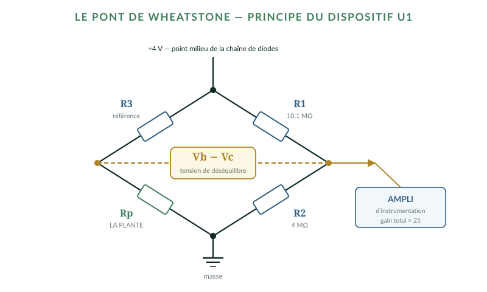
Fig. 1.2. Le principe du Device U1 : la plante constitue l'un des quatre bras du pont. La tension de déséquilibre est amplifiée puis numérisée. Les valeurs de la résistance de référence Rb (4 MΩ ou 10,1 MΩ), celles attendues pour la plante Rp et le calcul complet de sensibilité sont détaillés au chapitre 16.
Du laboratoire au marché
Deux appareils sortent de cette lignée. Le Device U1, complet, paramétrable, destiné aux musiciens et aux chercheurs — assemblé à la main en Italie, numéroté individuellement. Puis, à partir de 2017, le Bamboo, boîtier nomade en bois, haut-parleur intégré, orienté vers les animateurs, les enseignants et les promeneurs.
Les retours de terrain sur le Bambou de première génération ont été contrastés : ergonomie d'écran perfectible, enregistrement sur carte microSD illisible sur ordinateur, boîtier non verni sensible aux rayures, fiabilité moyenne en usage intensif. Les générations suivantes (Bamboo M, U1 Pro) ont corrigé une partie de ces points. Nous y reviendrons en détail dans le comparatif de la partie V.
À retenir
Damanhur déplace la question de la preuve vers la fabrication d'une interface.
Le brevet US 6 487 817 (1999, expiré 2019) fixe l'architecture canonique : pont de Wheatstone + asservissement + sortie MIDI.
L'hypothèse de l'apprentissage par les arbres reste une interprétation, non un résultat.
2014-2026 : l'essor des dispositifs modernes
En dix ans, la bio-sonification passe de l'objet artisanal italien à un petit marché mondial, avec deux ruptures décisives : l'open source et le smartphone.
MIDI Sprout, ou l'ouverture du code
En 2013-2014, deux musiciens de Philadelphie, Joe Patitucci et Alex Tyson, lancent une campagne de financement participatif pour le MIDI Sprout, dans le cadre du label zéro déchet Data Garden. Le boîtier est minuscule, alimenté par trois piles LR6, livré dans un étui en carton recyclé, et doté d'une seule sortie MIDI DIN.
Leur geste le plus important n'est pas commercial mais culturel : ils publient le schéma électronique, le circuit imprimé, la nomenclature et le code source sous licence libre. N'importe qui peut fabriquer un dispositif fonctionnel pour une vingtaine de dollars de composants. C'est de là que vient la totalité de la scène DIY décrite en partie X.
Le choix technique est radicalement différent de celui de Damanhur. Pas de pont de Wheatstone ni d'amplificateur d'instrumentation : la plante est insérée dans le réseau RC d'un NE555 monté en multivibrateur astable. Sa résistance fixe directement la fréquence d'oscillation. Un microcontrôleur ATmega328P mesure la période d'impulsion par interruption et détecte les changements statistiquement. Simple, robuste, bon marché.
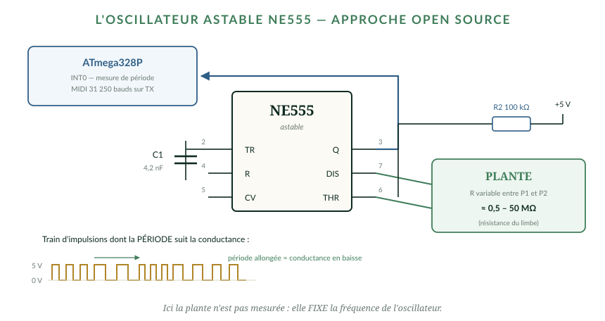
Fig. 1.3. L'approche MIDI Sprout : la plante ne subit pas la mesure, elle est l'élément qui détermine la fréquence du générateur.
🌿 Regard énergétique
Cette différence d'architecture n'est pas neutre symboliquement, et beaucoup de praticiens y sont sensibles. Dans le pont de Wheatstone, la plante est interrogée : le circuit lui applique une référence et mesure l'écart. Dans le montage à NE555, la plante donne le tempo : elle impose sa fréquence à l'oscillateur, qui la suit. Deux relations différentes au vivant, inscrites dans le cuivre. Techniquement, les deux mesurent la même grandeur physique. Poétiquement, elles ne racontent pas la même histoire — et la vôtre commencera par le choix que vous ferez.
Plants Play : la seconde vague italienne
En 2017, Edoardo Taori — diplômé en musicologie, fondateur du label romain Sostanze Records, installé dans les Pouilles — conçoit avec Frederica Zizzari et une équipe de quatre ingénieurs le Plants Play. Le pari est celui du nomadisme intégral : un boîtier de cinq centimètres de diamètre, en mélèze gravé d'une fleur de vie, Bluetooth, piloté par une application mobile.
L'application apporte ce qui manquait au domaine : choix parmi des dizaines d'instruments, gammes, octaves, diapason réglable (420, 432 ou 440 Hz), effets de delay, réverbération et chorus, graphique d'activité électrique en temps réel, et enregistrement simultané audio, MIDI et vidéo. Taori fonde ensuite le PlantsPlay Orchestra, où des végétaux jouent en direct avec des musiciens humains.
PlantWave et la brevetabilité du mapping
En 2020, le MIDI Sprout devient PlantWave. Le changement n'est pas qu'un nom : le dispositif s'ouvre au Bluetooth et à une application grand public, avec des banques sonores téléchargeables. Surtout, Joseph Patitucci et Jonathan Shapiro déposent le 18 mars 2020 (priorité du 28 mai 2019) le brevet US 10 909 956 B2, délivré le 2 février 2021.
Ce brevet ne porte pas sur le capteur — cette partie est largement dans le domaine public — mais sur la chaîne de traitement musical : conversion des micro-fluctuations en notes MIDI et en messages de contrôle continu, puis routage vers une chaîne d'instruments virtuels et d'effets modulés par ces messages, avec diffusion en continu. Autrement dit : on ne brevette plus la mesure, on brevette le goût.
🔬 Point scientifique
Le brevet PlantWave précise les valeurs de fonctionnement, ce qui en fait un document technique précieux : injection d'un signal de 3,3 V à travers les électrodes, onde de 1 kHz générée par un NE555 astable, fenêtres d'échantillonnage de 10 millisecondes, détection d'événement lorsque l'écart dépasse l'écart-type multiplié par un seuil, durées de notes cartographiées entre 250 et 2 500 millisecondes, messages de contrôle continu dérivés de la dérivée du signal sur la plage 0-127.
La scène française : Gaujacq et l'herboristerie sonore
En France, le sujet trouve un ancrage singulier au conservatoire botanique de Gaujacq, dans les Landes, où Frédérique et Jean Thoby conduisent depuis une quinzaine d'années des travaux qu'ils nomment phytoneurologie et musicothérapie botanique. Leur perspective est agronomique avant d'être artistique : suivre le comportement électrique des plantes en culture pour disposer d'un indicateur d'état sanitaire en continu. Ils ont conçu le biodynamiseur botanique de Gaujacq et développé des protocoles avec des fougères arborescentes (Dicksonia antarctica, Woodwardia orientalis).
Le musicien et chercheur Renaud Ruhlmann, auteur de La Mélodie secrète des végétaux (Guy Trédaniel, 2021), a constitué à partir de 2019 une « herboristerie sonore » — un catalogue méthodique d'enregistrements de plantes médicinales — et co-organisé le Festival international de la musique des plantes. Son livre est, à ce jour, la source francophone la plus complète sur le sujet, et l'une des rares à comparer honnêtement les appareils, défauts compris.
NATURASOUNDS : écouter avant de lire
Ce travail a trouvé une forme publique et accessible avec le label NATURASOUNDS, porté depuis Belfort par Renaud Ruhlmann et diffusé sur la plateforme Bandcamp : naturasounds.bandcamp.com. Le projet s'y présente comme une « herboristerie sonore », créée pour « sensibiliser à la communication des plantes par leur chant et à leurs vertus thérapeutiques ».
C'est, pour un lecteur de cet ouvrage, la ressource la plus utile qui soit : avant de brancher quoi que ce soit, écoutez. Le catalogue associe des pièces à des espèces identifiées — baobab, ail des ours, aloe vera, spiruline, chanvre — et donne à entendre ce que produit réellement un dispositif de bio-sonification entre les mains de quelqu'un qui connaît son instrument. Quelques heures d'écoute vous apprendront davantage sur la texture, la lenteur et les silences de ce répertoire que n'importe quelle description écrite.
Le label publie également des travaux sur les fréquences de l'eau, notamment deux ensembles construits autour des valeurs 429,62 Hz (associée à H₂O) et 417,60 Hz (associée à la notation [H₃O₂]⁻), ainsi qu'un album de battements binauraux combinés à du bruit rose.
⚠️ Limites et interprétation
Distinguons deux choses de nature très différente dans ce catalogue. Les enregistrements de plantes sont des documents : ce sont des captations réelles d'activité électrophysiologique, transposées selon un mapping assumé. Ils ont une valeur documentaire et artistique directe.
Les pièces construites sur des fréquences attribuées à l'eau relèvent d'un autre registre. La notation [H₃O₂]⁻ renvoie à l'hypothèse de « l'eau d'exclusion » ou « quatrième phase de l'eau » proposée par Gerald Pollack (université de Washington) : une couche d'eau structurée le long des surfaces hydrophiles. L'existence de zones d'exclusion près de certaines surfaces est une observation réelle et publiée ; en revanche, l'attribution d'une stœchiométrie [H₃O₂]⁻ et surtout d'une fréquence de résonance audible spécifique ne fait pas l'objet d'un consensus scientifique, et le calcul qui mène de la structure moléculaire à une valeur en hertz dans le champ audible n'est pas établi.
Cela ne retire rien à l'intérêt d'écoute de ces pièces. Cela signifie qu'il faut les recevoir comme des propositions artistiques et méditatives, non comme des applications d'un résultat démontré — distinction que cet ouvrage s'efforce de tenir partout, y compris chez les auteurs qu'il admire.
Se former et pratiquer en francophonie
Le lecteur qui souhaite dépasser la lecture trouvera en France un écosystème structuré, ce qui n'était pas le cas il y a dix ans. Trois portes d'entrée méritent d'être citées.
Le pôle de Gaujacq et la musicothérapie botanique
Le conservatoire botanique de Gaujacq, dans les Landes, est devenu le centre de gravité francophone du sujet. Animé par Jean et Frédérique Thoby au sein de la structure Art Botanique & Chantiers, entouré d'une équipe de recherche à laquelle participe notamment le professeur Marc Henry — chimiste, spécialiste de la croissance cristalline et de la physique quantique des champs appliquée à l'eau —, le lieu propose un ensemble cohérent : séances de musicothérapie botanique, visites du jardin botanique, plantes biodynamisées, capteurs et accessoires, enregistrements, et un festival annuel. L'ensemble est présenté sur musiquedesplantes.fr.
La séance type y est décrite sobrement : « une heure de détente et de voyage méditatifs bienfaisants sous le charme d'une musique émise par une plante », la sonorisation étant adaptée à la personne présente. C'est, à notre connaissance, la seule offre structurée en France qui articule un conservatoire botanique, une équipe de recherche et une pratique publique régulière.
⚠️ Limites et interprétation
Le mot thérapie mérite ici la même rigueur que le reste de l'ouvrage. Aucune étude clinique contrôlée ne démontre à ce jour d'effet thérapeutique spécifique de la musique issue d'un végétal, par opposition à une musique d'ambiance de même tempo et de même timbre. En revanche, les effets d'une heure d'écoute musicale calme, dans un jardin botanique, en présence d'un accompagnant attentif, sont eux parfaitement documentés — baisse de la fréquence cardiaque, du cortisol, de la tension artérielle. La détente est réelle ; ce qui n'est pas établi, c'est que son origine végétale y soit pour quelque chose. Une pratique honnête peut parfaitement l'assumer : elle offre une expérience, pas un traitement.
Une formation en ligne pour devenir autonome
Pour qui souhaite conduire ses propres séances sans passer par des mois de tâtonnements, il existe une formation vidéo à la musicothérapie botanique. Son auteur en résume ainsi l'intention :
Dans la formation Musicothérapie Botanique, mes vidéos sont simplement faites pour vous éviter mon parcours, à chercher, à regarder des youtubeurs dans le « trop » ou « pas assez ». J'ai donc fait une synthèse pour arriver à l'essentiel et devenir autonome dans les séances de Musicothérapie Botanique, quand on n'a pas de connaissances en informatique.
Présentation de la formation
Cette intention répond à un besoin réel, et il faut le dire clairement : la marche technique est l'obstacle numéro un de cette pratique. Beaucoup de personnes sensibles au végétal, parfaitement compétentes en soin et en relation, abandonnent devant un routage MIDI, une latence audio ou un pilote qui ne s'installe pas. Une formation qui prend en charge cette couche-là — et seulement celle-là — libère l'essentiel du temps pour ce qui compte vraiment : la séance elle-même.
Cet ouvrage et une telle formation se complètent plutôt qu'ils ne se concurrencent. Le livre vous donne le pourquoi : la physique de l'électrode, l'algorithme du boîtier, les artefacts à écarter, la frontière entre mesure et interprétation. Une formation vidéo vous donne le comment gestuel, en temps réel, avec quelqu'un qui montre l'écran. Si vous devez choisir par où commencer, commencez par ce qui vous bloque : si c'est la machine, allez vers la vidéo ; si c'est le sens de ce que vous entendez, restez dans ces pages.
Le rendez-vous annuel
Le Festival international de la musique des plantes, dont les éditions successives ont réuni musiciens, chercheurs et praticiens, constitue le principal point de rencontre du milieu francophone. C'est aussi l'occasion la plus simple d'entendre côte à côte plusieurs appareils sur plusieurs végétaux — l'exercice comparatif le plus instructif qui soit, et impossible à faire chez soi. Programme, intervenants et réservations sont annoncés sur le site de Gaujacq.
À retenir
2014 : MIDI Sprout publie schéma et code — naissance de la scène DIY.
2017 : Plants Play impose le format nomade piloté par smartphone.
2021 : le brevet PlantWave déplace la protection du capteur vers la chaîne musicale.
En France, Gaujacq oriente le sujet vers le diagnostic agronomique et la musicothérapie botanique.
Trois portes d'entrée francophones : le pôle de Gaujacq, une formation vidéo dédiée, et le festival annuel.
Le label NATURASOUNDS permet d'écouter le répertoire avant d'investir dans un appareil.
Racines anciennes : druides, chamanes et arbres qui parlent
Le boîtier est neuf. Le geste ne l'est pas. Depuis au moins trois millénaires, des cultures entières ont organisé un protocole de relation au végétal — et leurs règles ressemblent étrangement aux nôtres.
Il serait facile, et faux, de prétendre que les druides « faisaient déjà de la musique des plantes ». Ils ne disposaient d'aucun instrument de mesure. Mais ils disposaient de quelque chose que nous avons perdu et que tout praticien doit reconstruire : un cadre rituel, c'est-à-dire un ensemble de gestes qui ralentissent, qui délimitent, et qui posent l'humain dans une position d'écoute plutôt que de prélèvement.
L'arbre dans la tradition celtique
Les sources dont nous disposons sont indirectes — Pline l'Ancien, César, les textes irlandais médiévaux — et il faut se garder des reconstructions néo-druidiques du dix-neuvième siècle présentées comme antiques. Ce qui est solidement établi :
le mot druide est généralement rattaché à une racine signifiant « très savant », que la tradition ancienne associait déjà au chêne (dru-) ;
le nemeton désigne un sanctuaire en clairière, un espace consacré sans bâtiment — l'arbre y tient lieu de temple ;
les lois irlandaises anciennes (Bretha Comaithchesa) classent les arbres en quatre rangs juridiques — nobles, communs, arbustes, buissons — et pénalisent leur abattage selon ce rang. Abattre un chêne noble coûtait le prix d'une vache laitière ;
l'ogham, alphabet d'inscription du début de notre ère, porte des noms de lettres dont la tradition médiévale a fait un « alphabet des arbres » (beith le bouleau, duir le chêne, coll le noisetier…). Cette correspondance est vraisemblablement une élaboration savante tardive, mais elle a nourri toute la pratique druidique contemporaine.
Fig. 1.4. Triskell et ogham. Le triple mouvement — souterrain, médian, céleste — structure encore les protocoles d'approche de l'arbre proposés en partie VIII.
Le protocole chamanique de la cueillette
Dans les traditions amazoniennes, sibériennes ou andines, la relation à la plante médicinale obéit à une grammaire remarquablement constante. On la retrouve, à quelques variantes près, sur trois continents :
L'annonce. On se présente, on nomme son intention. On ne surprend pas le végétal.
L'attente. Un temps s'écoule entre la demande et le geste — parfois une nuit, parfois un cycle lunaire.
Le signe. On cherche un accord. Un mouvement de branche, un oiseau, un rêve. Le refus est une réponse possible et respectée.
La contrepartie. On dépose quelque chose : tabac, eau, cheveu, chant. L'échange n'est pas symbolique pour le praticien, il est structurel.
La limite. On ne prélève jamais tout. Le premier et le dernier individu d'une station sont épargnés.
Le remerciement. Le protocole se ferme explicitement. On ne laisse pas la relation ouverte.
🌿 Regard énergétique
Regardez cette liste avec les yeux d'un opérateur de bio-sonification. L'annonce, c'est l'installation avant de brancher. L'attente, c'est le temps de stabilisation du contact. Le signe, c'est le premier tracé cohérent. La contrepartie, c'est l'eau que vous donnez. La limite, c'est la durée maximale de pose des électrodes. Le remerciement, c'est la clôture de séance et le retrait soigneux des pinces.
Le protocole ancien et le protocole technique ont la même ossature — parce qu'ils résolvent le même problème : comment un humain pressé entre-t-il en relation avec un être dont le temps n'est pas le sien ? Ce parallèle n'est pas une preuve d'ancienneté de nos pratiques ; c'est une indication sur ce qui, dans la relation, tient indépendamment de la technique.
Ailleurs : quelques autres grammaires
Tradition
Notion clé
Ce qu'elle apporte à la pratique
Shintō japonais
Shinboku — arbre-demeure du kami, ceint du cordon shimenawa
Le marquage matériel du seuil : on voit qu'on entre dans un espace consacré
Sylvothérapie (shinrin-yoku)
« Bain de forêt », protocole de santé publique japonais depuis 1982
Une pratique documentée : baisse du cortisol salivaire et de la pression artérielle
Andes quechua
Ayni — réciprocité obligatoire
Rien n'est reçu sans contrepartie ; interdit la posture de consommation
Traditions germaniques
Irminsul, arbre-colonne du monde
L'axe vertical comme structure de l'espace rituel
Inde védique
Vanaspati, « seigneur de la forêt » ; ashvattha le figuier sacré
Le végétal comme interlocuteur de plein droit, pas comme décor
Cinq grammaires culturelles de la relation au végétal. Aucune n'est mobilisée ici comme argument d'autorité : elles sont des outils de posture.
🔬 Point scientifique
Le shinrin-yoku est le seul de ces éléments qui dispose d'un dossier expérimental. Les travaux de Qing Li (Nippon Medical School) et de Yoshifumi Miyazaki (Chiba University) rapportent, après deux heures en forêt, une baisse significative du cortisol salivaire, de la fréquence cardiaque et de la pression artérielle, ainsi qu'une augmentation de l'activité des cellules natural killer persistant plusieurs jours. Les mécanismes proposés — phytoncides terpéniques inhalés, réduction de la charge attentionnelle — restent discutés, et les tailles d'effet varient d'une étude à l'autre. Mais la direction du résultat est robuste : la forêt vous change, même si vous n'y branchez rien.
✨ Expérience intérieure
Choisissez un arbre que vous croisez régulièrement — trajet de travail, jardin, parc. Pendant sept jours, saluez-le. Pas mentalement : à voix basse, ou d'un geste de la main. Rien d'autre. Ne lui demandez rien, ne cherchez rien.
Au septième jour, notez ce qui a changé. Presque toujours, ce qui change n'est pas l'arbre : c'est la qualité d'attention que vous portez au trajet entier, aux oiseaux, à la lumière. Le rituel ne modifie pas l'objet. Il modifie le sujet — et c'est précisément sa fonction.
À retenir
Les druides n'avaient pas d'instruments, mais un cadre rituel dont la structure reste opérante.
Le protocole chamanique de cueillette et le protocole technique de mesure ont la même ossature en six temps.
L'ogham comme « alphabet des arbres » est une élaboration médiévale, non une donnée archéologique.
Seule la sylvothérapie dispose d'un dossier expérimental consistant.
PartieII
Fondements scientifiques
« Une plante ne parle pas. Elle varie. » Électrophysiologie, phytoacoustique et biofeedback : l'état exact des connaissances, sans complaisance ni mépris.
L'électricité du vivant végétal
Toute cellule vivante est une pile. Celle des plantes est même remarquablement puissante : jusqu'à moins cent soixante millivolts de part et d'autre d'une membrane de huit nanomètres d'épaisseur — un champ électrique de vingt millions de volts par mètre.
Avant de comprendre ce qu'un boîtier de bio-sonification capte, il faut savoir ce qu'il y a à capter. La réponse tient en une phrase : une plante entretient en permanence des gradients ioniques coûteux, et toute perturbation de son environnement déplace ces gradients. C'est tout. Ce n'est pas peu.
Le potentiel de membrane
La membrane plasmique d'une cellule végétale sépare deux milieux de compositions ioniques très différentes. Cette différence n'est pas passive : elle est entretenue, seconde après seconde, par une pompe à protons de type P (l'ATPase H⁺) qui expulse des protons vers l'extérieur en consommant de l'ATP. Le résultat est double : un gradient de pH et un gradient électrique.
Grandeur
Valeur typique
Comparaison animale
Potentiel de repos
−120 à −180 mV
Neurone : −70 mV
Épaisseur de membrane
≈ 8 nm
Identique
Champ électrique transmembranaire
≈ 2 × 10⁷ V/m
≈ 10⁷ V/m
Part du potentiel due à la pompe H⁺
50 à 70 %
Quasi nulle (pompe Na⁺/K⁺)
Coût métabolique
jusqu'à 30 % de l'ATP cellulaire
≈ 20 % chez le neurone
Le potentiel de repos végétal est plus négatif que l'animal, et repose sur une pompe différente. C'est la raison pour laquelle les plantes sont électriquement « bruyantes » : elles ont beaucoup à perdre et à regagner.
Trois familles de signaux
La littérature distingue aujourd'hui trois types d'événements électriques, qu'il est crucial de ne pas confondre : ils n'ont ni la même cause, ni la même durée, ni le même sens biologique — et surtout, un seul des trois alimente réellement la musique des plantes.
Fig. 2.1. Les trois signatures électriques du végétal, à la même échelle de temps. Remarquez la différence d'amplitude d'un facteur dix entre le potentiel d'action et les micro-fluctuations.
1. Le potentiel d'action (PA)
C'est le signal « noble », celui qui ressemble le plus au nerf animal. Il obéit à la loi du tout ou rien : au-delà d'un seuil de dépolarisation, la réponse est maximale et stéréotypée. Le mécanisme ionique est cependant inverse de celui du neurone : ce n'est pas une entrée de sodium mais une sortie d'anions chlorure, suivie d'une sortie de potassium qui repolarise. Durée : une à quelques secondes. Vitesse de propagation : de 1 à 20 mm/s dans la plupart des espèces, jusqu'à 200 mm/s chez la dionée.
Les plantes qui en produisent spontanément et fréquemment sont rares : Mimosa pudica, Dionaea muscipula, Drosera, certaines Chara et Nitella d'eau douce. Ce sont les « plantes rapides ». Pour un praticien, ce sont aussi les plus spectaculaires à sonifier — et parmi les plus fragiles à manipuler.
2. Le potentiel de variation (PV)
Plus lent, gradué, et proportionnel à l'intensité du stimulus — donc non stéréotypé. Sa cause n'est pas électrique mais hydraulique : une blessure, une brûlure ou une coupure provoque une onde de pression dans le xylème, qui déforme mécaniquement les membranes sur son passage et les dépolarise. Durée : de dix secondes à plusieurs minutes. C'est le signal de l'alerte systémique : c'est lui qui, chez Arabidopsis, déclenche à distance la synthèse d'acide jasmonique et la mise en défense des feuilles non attaquées.
3. Les micro-fluctuations de conductance
C'est la troisième famille, la moins glamour — et la seule que capte réellement un boîtier grand public. Il ne s'agit pas d'un événement mais d'un bruit structuré permanent : la résistance électrique entre deux points d'un tissu dérive continuellement, sur des échelles de temps allant de la seconde à la journée.
🔬 Point scientifique
Depuis 2016, cette activité continue porte un nom : l'électrome (par analogie avec le génome ou le protéome). Le terme désigne l'ensemble des oscillations électriques d'un organisme considérées comme un système dynamique plutôt que comme du bruit. Les travaux de l'équipe de Gustavo Souza (Universidade Federal do Rio Grande do Norte) ont montré que l'analyse spectrale et fractale de ces oscillations permet de classer l'état d'une plante — stress hydrique, stress lumineux, attaque fongique — avant l'apparition de tout symptôme visible.
Des travaux plus récents confirment la structure de ce signal. Une étude de 2026 portant sur Primula vulgaris, conduite sur trois stations de mesure indépendantes, met en évidence un rythme circadien robuste de 24 heures dans la puissance de la bande 1-5 Hz, avec un coefficient de détermination compris entre 0,72 et 0,87 et une amplitude crête-à-creux de 0,35 à 1,19 fois la valeur moyenne. Le rythme persiste la nuit, en l'absence de tout visiteur.
✦ Idée clé
Quand votre boîtier « chante », il ne transcrit ni des potentiels d'action, ni des cris de détresse. Il transcrit, dans l'immense majorité des cas, la troisième famille : la dérive lente et structurée de l'impédance tissulaire. Cette dérive est réelle, biologique, rythmée par l'horloge circadienne, et corrélée à l'état physiologique de la plante. Ce n'est pas rien. Ce n'est simplement pas ce que l'on croit souvent.
Une chimie partagée
Un fait mérite d'être posé sans emphase, parce qu'il est souvent mal utilisé. Les plantes synthétisent effectivement des molécules que nous appelons « neurotransmetteurs » chez l'animal :
le glutamate, dont les récepteurs végétaux (les GLR, au nombre de vingt chez Arabidopsis) sont apparentés aux récepteurs NMDA de nos synapses, et jouent un rôle démontré dans la propagation du signal de blessure ;
l'acide gamma-aminobutyrique (GABA), qui s'accumule en quelques secondes sous stress et module l'ouverture de canaux anioniques ;
la sérotonine et la mélatonine, impliquées dans la sénescence et la réponse au stress oxydatif ;
la dopamine et l'acétylcholine, présentes mais aux fonctions moins clairement établies.
⚠️ Limites et interprétation
Une molécule n'a pas de fonction en soi ; elle a la fonction que lui donne le réseau qui l'emploie. L'ATP transporte de l'énergie chez la bactérie et sert aussi de neurotransmetteur chez l'humain. Le fait qu'une plante fabrique de la sérotonine ne dit rien sur son humeur — pas plus que le fait qu'une banane en contienne. L'argument « les plantes ont de la dopamine, donc elles ressentent » est un sophisme par déplacement de contexte, et il faut refuser de l'employer même quand il sert la cause qu'on défend.
À retenir
Le potentiel de repos végétal atteint −180 mV, soit un champ de 2 × 10⁷ V/m.
Trois familles de signaux : potentiel d'action (tout ou rien, rapide), potentiel de variation (hydraulique, gradué), micro-fluctuations (continues).
C'est la troisième famille — l'électrome — que captent les dispositifs de bio-sonification.
L'électrome présente un rythme circadien de 24 h mesurable et reproductible.
Le partage de neurotransmetteurs ne démontre aucun partage d'expérience subjective.
Ce que mesure réellement une électrode
Entre l'intention de mesurer une plante et le nombre affiché par le convertisseur, il y a une interface — et cette interface est, de très loin, la plus grande source d'illusion du domaine.
Posons la question crûment. Vous placez deux électrodes sur une feuille, votre circuit y fait passer un courant minuscule et mesure la résistance. Que mesurez-vous ? La réponse n'est pas « la plante ». Elle est : la somme de trois résistances en série, dont une seule est biologique.
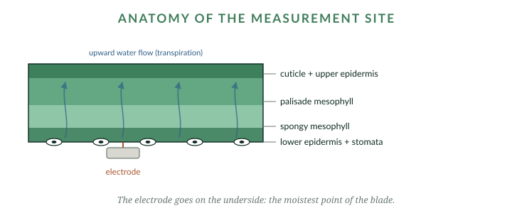
Fig. 2.2. Coupe transversale d'un limbe. L'électrode est posée sur l'épiderme inférieur, là où se concentrent les stomates : c'est le point le plus humide et donc le plus conducteur.
Décomposition de l'impédance mesurée
ÉLECTRODE A TISSU VÉGÉTAL ÉLECTRODE B
│ │ │
▼ ▼ ▼
┌──────────┐ ┌─────────────┐ ┌──────────┐
│ Z_int_A │──────────────│ Z_bio │──────────────│ Z_int_B │
└──────────┘ └─────────────┘ └──────────┘
0,5–20 MΩ 1–50 MΩ 0,5–20 MΩ
variable ++ variable + variable ++
Z_int = impédance d'interface métal / tissu
→ dépend de l'humidité du contact, de la pression
d'appui, de l'oxydation du métal, de la température
→ DÉRIVE de 10 à 40 % dans la première demi-heure
Z_bio = impédance du trajet à travers le limbe
→ dépend de la teneur en eau de l'apoplaste,
de l'ouverture stomatique, de la concentration ionique
→ c'est LA SEULE grandeur que vous vouliez mesurer
Le signal utile est encadré par deux impédances parasites plus instables que lui. Tout l'art de la mesure consiste à les stabiliser, pas à les supprimer.
Le catalogue des artefacts
Voici, classés par ordre d'importance décroissante, les phénomènes qui produisent des variations que l'on prend pour des « réactions ». Apprenez-les : ils vous éviteront des années de fausses certitudes.
Artefact
Signature sonore typique
Échelle de temps
Comment l'écarter
Dérive d'interface — stabilisation du contact métal/tissu
Glissement lent et monotone du registre, notes de plus en plus espacées ou rapprochées
20 à 45 min après la pose
Attendre 30 min avant de considérer la séance commencée
Évaporation du contact — le point d'appui sèche
Montée progressive du registre puis extinction
1 à 3 h
Électrode à surface large, gel conducteur végétal, hygrométrie > 50 %
Couplage capacitif humain — vous bougez près de la plante
Bouffées de notes exactement synchrones de vos mouvements
Instantané
Rester à plus d'un mètre, ou toucher la masse du boîtier
Secteur 50 Hz — induction du réseau électrique
Trille régulier, métronomique, indifférent à tout
Permanent
Éloigner câbles et alimentations ; fonctionner sur pile
Micromouvement mécanique — courant d'air, vibration du sol
Événement bref et isolé, souvent grave
Instantané
Fermer les fenêtres, poser sur surface lourde
Variation thermique — soleil, radiateur, corps humain
Modulation lente en cloche
10 à 60 min
Thermomètre dans la pièce, noter la température
Arrosage récent
Chute franche du registre puis remontée
2 à 6 h
Ne pas arroser dans les 12 h précédant une séance
Transition lumineuse — ouverture stomatique
Changement net de densité rythmique
5 à 20 min
Lumière constante, ou noter chaque changement
Les huit artefacts majeurs. Un praticien expérimenté les reconnaît à l'oreille en quelques secondes — et c'est la compétence la plus précieuse du domaine.
⚠️ Limites et interprétation
Le test décisif tient en une phrase : si votre montage produit une « mélodie » quand vous remplacez la plante par un bocal de terre humide, alors votre mélodie ne vient pas de la plante. Faites ce test. Il coûte cinq minutes et il vous protégera de tout le reste. Beaucoup de séquences réputées « expressives » sont parfaitement reproductibles sur un substrat inerte qui sèche lentement.
Corollaire : gardez toujours un témoin. Deux pots identiques, l'un avec la plante, l'autre sans. Deux canaux MIDI. Si les deux chantent pareil, vous écoutez votre électronique.
Où poser les électrodes — la réponse expérimentale
La question paraît triviale ; elle ne l'est pas. Le limbe n'est pas un plan de mesure homogène : l'épaisseur de la cuticule, la densité stomatique, la teneur en eau et l'épaisseur du parenchyme varient fortement selon la position sur la feuille et selon le rang de la feuille sur la plante.
🔬 Point scientifique
Une étude de 2026 a tranché la question sur Clivia, en comparant systématiquement les régions basale, médiane et apicale de feuilles de rangs différents, avec un stimulus salin contrôlé et une classification automatique des signaux. Résultat : la région basale surpasse constamment les régions médiane et apicale, et la meilleure performance discriminante globale est obtenue à la base de la feuille la plus haute — la plus jeune des feuilles matures.
L'explication est cohérente avec l'anatomie : la base du limbe est le point le plus proche de l'arrivée du faisceau vasculaire, donc le mieux irrigué et le plus stable en teneur en eau ; la feuille jeune est la plus active métaboliquement et la moins cutinisée.
Règle pratique de pose
Électrode haute : tiers basal du limbe, face inférieure, sur la feuille mature la plus jeune (généralement la deuxième ou troisième en partant du sommet). Évitez la nervure centrale, trop lignifiée. Électrode basse : soit un second point du même limbe à cinq centimètres du premier — trajet court, signal propre —, soit le terreau au pied de la tige — trajet long, signal plus ample mais beaucoup plus bruité par l'humidité du substrat. Pour débuter, choisissez toujours feuille/feuille.
Toutes les plantes ne conviennent pas
Type de végétal
Aptitude
Remarque
Grandes feuilles charnues (philodendron, monstera, clivia, calathea)
Excellente
Surface d'appui large, teneur en eau élevée, contact stable
Plantes aromatiques (menthe, basilic, sauge)
Bonne
Très réactives, mais feuilles petites : électrodes à pince fine
Arbres, en extérieur (chêne, hêtre, tilleul)
Bonne à très bonne
Pose sur feuille basse ou sur cambium via aiguille inox ; attention aux intempéries
Fougères arborescentes
Bonne
Utilisées dans les protocoles thérapeutiques de Gaujacq
Succulentes, cactées
Moyenne
Cuticule très épaisse, impédance souvent hors plage de mesure
Dionée, drosera, Mimosa pudica
Spectaculaire mais délicate
Vrais potentiels d'action ; tissus fragiles, risque de lésion
Plantes de résurrection, plantules
Faible
Trop peu de masse conductrice
Champignons (carpophores)
Variable
Fonctionne parfois très bien ; hors du champ « végétal » au sens strict
Aptitude à la bio-sonification selon le type de végétal. Le critère déterminant n'est pas l'espèce mais la conductance de surface et la stabilité du contact.
🌿 Regard énergétique
Les praticiens parlent volontiers de plantes « bavardes » et de plantes « silencieuses », et l'expérience de terrain confirme cette impression : deux menthes voisines peuvent produire des séquences très différentes. La lecture énergétique y voit un tempérament. La lecture physique y voit une différence d'épaisseur cuticulaire, d'état hydrique et de qualité de contact.
Ces deux lectures ne s'annulent pas. Elles décrivent la même chose à deux échelles. Mais si vous voulez choisir une plante pour une séance publique, c'est la lecture physique qui vous servira : prenez la plus charnue, la mieux arrosée la veille, et la plus jeune des feuilles matures. Le tempérament suivra.
À retenir
L'impédance mesurée est la somme de deux impédances d'interface instables et d'une impédance biologique.
Huit artefacts majeurs expliquent l'essentiel des variations « expressives ».
Le test du bocal de terre humide est obligatoire avant toute conclusion.
Meilleur site de pose : région basale de la feuille mature la plus jeune, face inférieure.
Trente minutes de stabilisation avant que la séance commence réellement.
Phytoacoustique : les plantes entendent-elles ?
La question a longtemps fait sourire. Depuis 2012, quatre expériences publiées dans des revues de premier plan l'ont rendue légitime — et les réponses sont plus intéressantes que le fantasme qu'elles remplacent.
Il faut d'abord clarifier un point de vocabulaire. « Entendre » suppose un organe auditif, une transduction et une intégration centrale. Les plantes n'ont rien de tout cela. Mais elles possèdent des mécanorécepteurs — canaux ioniques qui s'ouvrent sous déformation membranaire — répartis dans tous leurs tissus. Une onde acoustique est une onde de pression : elle déforme. Donc elle peut, en principe, être perçue. La question n'est pas de savoir si c'est possible, mais si c'est biologiquement significatif.
1. La chenille qui mâche (Appel & Cocroft, 2014)
Expérience fondatrice — Oecologia, 2014
Arabidopsis distingue la mastication du vent
Équipe H. M. Appel & R. B. Cocroft, Univ. MissouriModèleArabidopsis thalianaStatut Répliqué
Principe
Enregistrer les vibrations produites par la chenille de Pieris rapae mangeant une feuille, puis les rejouer par un pot vibrant sur des plantes intactes — sans aucune chenille présente. Comparer la chimie de défense à celle de plantes exposées au silence, au vent, ou au chant d'un cicadelle de spectre voisin.
Résultat. Les plantes exposées aux seules vibrations de mastication produisent significativement plus de glucosinolates et d'anthocyanes, 24 et 48 h après. Les plantes exposées au vent ou au chant du cicadelle — de spectre comparable — ne montrent aucune induction.
Ce que cela établit. Non seulement la plante perçoit une vibration, mais elle la discrimine d'une autre vibration d'énergie comparable, et n'engage son coût métabolique de défense que pour la bonne. C'est une perception écologiquement pertinente, pas un réflexe brut.
2. Les racines qui cherchent l'eau (Gagliano et al., 2012 & 2017)
Monica Gagliano et ses collègues montrent d'abord que les racines de maïs s'orientent vers une source de vibration de 200-300 Hz en hydroponie. Puis, en 2017, un dispositif plus élégant : des plants de pois placés dans un pot en Y, avec de l'eau circulant dans un tuyau scellé le long d'un bras — donc sans aucun gradient d'humidité dans le substrat.
Résultat : les racines croissent préférentiellement vers le bras où l'eau circule, en se fiant au seul bruit de l'écoulement. Mais si un vrai gradient d'humidité est offert en parallèle, elles le préfèrent au son. La hiérarchie des sens est donc claire : le son sert à localiser à distance, l'humidité sert à atteindre avec précision.
3. La fleur qui sucre son nectar (Veits et al., 2019)
Expérience fondatrice — Ecology Letters, 2019
L'onagre répond au bourdonnement de l'abeille en trois minutes
Équipe M. Veits, L. Hadany et al., Univ. Tel-AvivModèleOenothera drummondiiStatut Publié, discuté
Principe
Exposer des fleurs, pendant trois minutes seulement, à l'enregistrement d'un battement d'ailes d'abeille (0,2-0,5 kHz), à un son synthétique de même bande, à un son de haute fréquence, ou au silence. Doser ensuite le sucre du nectar.
Résultat. Les fleurs exposées au son du pollinisateur — ou à un son synthétique de bande équivalente — produisent un nectar 1,2 fois plus concentré en sucre, en trois minutes. Les hautes fréquences et le silence ne produisent rien. La vibrométrie laser montre que la corolle vibre en réponse, et que l'amplitude chute drastiquement si l'on retire les pétales.
Interprétation des auteurs. La fleur elle-même jouerait le rôle d'organe récepteur — le terme de « phytoacoustique » et l'idée d'oreille florale viennent de là.
4. Les plantes qui émettent (Khait et al., 2019-2023)
Le renversement le plus spectaculaire. La même équipe de Tel-Aviv montre que des plants de tomate et de tabac soumis à un stress — sécheresse, section de la tige — émettent des sons aériens dans la bande ultrasonore de 20 à 100 kHz, à raison de plusieurs dizaines de clics par heure contre moins d'un pour les témoins. Le mécanisme proposé est la cavitation : sous tension hydrique, des bulles se forment et implosent dans les vaisseaux du xylème.
Trois éléments en font bien plus qu'une curiosité :
les émissions sont détectables à trois à cinq mètres en champ ouvert ;
un algorithme de classification distingue le stress hydrique du stress de coupure avec une précision élevée — les clics portent une information sur la nature du stress ;
des travaux ultérieurs indiquent que des insectes peuvent en tenir compte : une étude de 2026 rapporte que des femelles de papillon de nuit intègrent les émissions acoustiques des plantes dans leur décision de ponte.
⚠️ Limites et interprétation
Il faut résister à deux glissements. Premier glissement : « les plantes crient ». Non. Une cavitation est un phénomène physique passif, comme le craquement d'un glaçon dans un verre. Qu'une information soit portée ne signifie pas qu'elle soit émise dans l'intention d'être reçue — la question de la sélection d'un signal véritable reste ouverte. Second glissement : confondre ces ultrasons avec ce que produit votre boîtier. Aucun rapport. Les émissions de cavitation sont acoustiques et à 20-100 kHz ; votre dispositif mesure une impédance électrique et ne capte rien de tout cela.
✦ Idée clé
La phytoacoustique valide un principe général et n'en valide qu'un : la plante est un système ouvert, sensible à la mécanique de son environnement, capable de discriminer et de répondre de façon écologiquement adaptée. C'est amplement suffisant pour justifier une pratique attentive. Ce n'est pas suffisant pour justifier l'idée d'un dialogue verbal.
À retenir
Arabidopsis discrimine la vibration de mastication d'un vent de spectre voisin, et n'active sa défense que pour la première.
Les racines s'orientent au bruit de l'eau, mais préfèrent un gradient d'humidité réel.
L'onagre augmente de 20 % le sucre de son nectar en trois minutes d'exposition au bourdonnement.
Les plantes stressées émettent des clics ultrasonores porteurs d'information sur la nature du stress.
Aucun de ces phénomènes n'est capté par un dispositif de bio-sonification.
Le biofeedback : le mot et la chose
Le terme est employé partout dans ce domaine, presque toujours à contresens. Il désigne pourtant quelque chose de très précis, et la précision change tout à votre pratique.
Un dispositif de biofeedback, au sens strict, comporte trois éléments obligatoires : un capteur physiologique, une restitution perceptible en temps réel, et un sujet qui perçoit cette restitution et peut modifier son état en conséquence. Le troisième élément est celui qui fait le biofeedback. Sans boucle de retour vers le producteur du signal, il n'y a pas de biofeedback : il y a de la monitorisation.
Trois architectures à ne pas confondre
A. MONITORISATION (ce que fait un boîtier posé dans une pièce vide)
PLANTE ──▶ capteur ──▶ traitement ──▶ son ──▶ (personne)
▲ │
└────────────── AUCUN RETOUR ────────────────┘
B. BIOFEEDBACK HUMAIN (ce que fait un appareil de cohérence cardiaque)
HUMAIN ──▶ capteur ──▶ traitement ──▶ son ──▶ OREILLE HUMAINE
▲ │
└──────── le sujet ajuste son état ──────────┘
C. CE QUI SE PASSE RÉELLEMENT EN SÉANCE (boucle mixte)
PLANTE ──▶ capteur ──▶ traitement ──▶ son ──▶ OREILLE HUMAINE
▲ │
│ ▼
└──── posture, souffle, gestes, chaleur ── HUMAIN
(couplage physique réel, faible mais non nul)
L'architecture C est la seule honnête. Elle admet une boucle — mais la boucle passe par des canaux physiques identifiables, pas par une transmission inconnue.
🔬 Point scientifique
Le biofeedback humain est une technique validée, remboursée dans plusieurs pays pour des indications précises : migraine tensionnelle, incontinence par rééducation périnéale, hypertension légère, trouble anxieux. Ses mécanismes sont établis et ne contiennent rien de mystérieux — apprentissage opérant appliqué à une fonction habituellement non consciente.
Le cas végétal est différent : rien n'indique qu'une plante puisse utiliser le retour sonore pour ajuster son état, puisque cela supposerait qu'elle perçoive le son diffusé, l'associe à sa propre activité électrique, et dispose d'un mécanisme de renforcement. Aucune de ces trois étapes n'est documentée. Employer « biofeedback » pour un boîtier de musique des plantes est donc un abus de langage — répandu, y compris chez les fabricants.
🌿 Regard énergétique
Et pourtant. Les praticiens qui pratiquent longtemps rapportent presque tous la même chose : quand ils s'installent vraiment — souffle posé, attention large, absence d'attente —, la séquence sonore change de qualité. Elle devient plus tenue, moins hachée.
Cette observation est prise au sérieux dans cet ouvrage, mais elle est expliquée par l'architecture C ci-dessus. Vous bougez moins : moins de couplage capacitif. Vous respirez plus lentement : moins de déplacement d'air autour du feuillage. Vous cessez de manipuler : le contact se stabilise. Votre corps cesse de rayonner de la chaleur par à-coups. La boucle existe — elle est physique, modeste, et entièrement à votre charge. C'est vous qui êtes en biofeedback, avec la plante pour miroir.
✨ Expérience intérieure
Cette reformulation est libératrice pour la pratique. Elle signifie que vous n'avez rien à obtenir de la plante — vous n'avez qu'à devenir suffisamment stable pour que le signal cesse d'être pollué par vous. Le travail intérieur n'est pas un supplément d'âme greffé sur la technique : il est la condition technique de la qualité de mesure. Le druide et l'ingénieur, ici, demandent exactement la même chose : tiens-toi tranquille.
À retenir
Un biofeedback exige une boucle de retour vers le producteur du signal.
Un boîtier de musique des plantes est un moniteur, pas un dispositif de biofeedback végétal.
La boucle existe néanmoins — elle passe par l'opérateur, via des canaux physiques identifiables.
Se stabiliser n'est pas un ornement spirituel : c'est une exigence métrologique.
La chimie du signal végétal
Derrière chaque millivolt mesuré, il y a des ions qui traversent une membrane, des pompes qui consomment de l'ATP et des cascades moléculaires qui se déclenchent. Cette section détaille le mécanisme, molécule par molécule.
Un signal électrique, dans le vivant, n'est jamais un courant d'électrons : c'est un courant d'ions. Cette distinction n'est pas un détail de vocabulaire, elle commande tout le reste — la lenteur des signaux végétaux, leur coût métabolique, leur sensibilité à la température, et jusqu'au choix du métal de vos électrodes.
L'inventaire ionique d'une cellule végétale
Ion
Concentration cytosolique
Concentration apoplastique ou vacuolaire
Rôle dans le signal
K⁺ (potassium)
80 à 150 mM
1 à 10 mM (apoplaste)
Repolarisation ; principal porteur de charge du mouvement d'eau
Cl⁻ (chlorure)
10 à 50 mM
1 à 10 mM
Dépolarisation — sortie déclenchante du potentiel d'action
Ca²⁺ (calcium)
0,05 à 0,2 µM au repos
1 à 10 mM (apoplaste, vacuole)
Second messager ; gradient de 10 000 fois
H⁺ (proton)
pH 7,2 à 7,5
pH 5,0 à 5,5 (apoplaste)
Entretien du potentiel de repos par l'ATPase
Na⁺ (sodium)
1 à 10 mM
Variable
Marginal — contrairement à l'animal
NO₃⁻ (nitrate)
1 à 30 mM
Variable
Nutriment ; contribue à la conductivité mesurée
Le gradient de calcium est le plus extrême du vivant : quatre ordres de grandeur. C'est ce qui en fait un messager idéal — une ouverture de canal brève suffit à multiplier la concentration intracellulaire par dix.
Séquence moléculaire d'un potentiel d'action végétal
ÉTAT DE REPOS −120 à −180 mV
┌────────────────────────────────────────────────────────┐
│ H⁺-ATPase de type P expulse des protons (coût : ATP) │
│ → gradient électrochimique entretenu en permanence │
└────────────────────────────────────────────────────────┘
│
stimulus (blessure, froid, toucher, électricité)
▼
① DÉPOLARISATION INITIALE quelques mV
ouverture de canaux mécanosensibles (famille MSL, OSCA)
entrée de Ca²⁺ depuis l'apoplaste et la vacuole
│
▼ si le seuil (≈ −100 mV) est franchi
② PHASE ASCENDANTE +40 à +80 mV en 1–2 s
le Ca²⁺ active les canaux anioniques SLAC1 / ALMT
→ SORTIE MASSIVE DE Cl⁻ (charge négative qui part)
→ l'intérieur devient moins négatif : DÉPOLARISATION
│
▼
③ PHASE DESCENDANTE retour vers −120 mV
ouverture des canaux K⁺ sortants (GORK)
→ SORTIE DE K⁺ : la charge positive part à son tour
→ REPOLARISATION
│
▼
④ PÉRIODE RÉFRACTAIRE 5 à 60 s selon l'espèce
la H⁺-ATPase rétablit le gradient ; les pompes Ca²⁺
(ACA, ECA) évacuent le calcium cytosolique
→ aucun nouveau potentiel d'action n'est possible
NOTA — la séquence est l'INVERSE de l'animal :
chez le neurone, l'entrée de Na⁺ dépolarise.
Chez la plante, c'est la SORTIE de Cl⁻ qui dépolarise.
Le mécanisme anionique explique la lenteur végétale : les canaux chlorure s'ouvrent en centaines de millisecondes, là où les canaux sodium neuronaux s'ouvrent en quelques dizaines de microsecondes.
🔬 Point scientifique
La découverte la plus marquante de la dernière décennie concerne la propagation à longue distance. Les travaux de Masatsugu Toyota, Simon Gilroy et leurs collègues, publiés dans Science en 2018, ont permis de filmer le signal : en utilisant des plants d'Arabidopsis exprimant un rapporteur calcique fluorescent, ils ont visualisé une onde de calcium se propageant depuis une feuille blessée vers les feuilles distantes à environ 1 mm par seconde, atteignant l'ensemble de la plante en une à deux minutes et déclenchant la synthèse d'acide jasmonique.
Le mécanisme implique les récepteurs au glutamate GLR3.3 et GLR3.6 : des mutants privés de ces gènes ne propagent plus l'onde. Autrement dit, le glutamate joue ici un rôle de signal extracellulaire propagateur — fonctionnellement analogue, sans être homologue, à son rôle synaptique animal.
Ce que déclenche le signal : la cascade en aval
Un potentiel d'action n'est pas une fin, c'est un déclencheur. Voici ce qu'il met en route, dans l'ordre chronologique :
Délai après le signal
Événement moléculaire
Conséquence observable
0 à 2 s
Pic de Ca²⁺ cytosolique ; production d'espèces réactives de l'oxygène (H₂O₂) par les NADPH-oxydases RBOHD
Aucune — invisible
2 à 60 s
Alcalinisation de l'apoplaste ; phosphorylation de protéines cibles par les kinases CDPK et MAPK
Variation d'impédance mesurable
1 à 10 min
Synthèse d'acide jasmonique ; expression des gènes JAZ, VSP2, PDF1.2
Début de la mise en défense
10 à 60 min
Émission de composés organiques volatils (terpènes, acétate de (Z)-3-hexényle)
Odeur d'herbe coupée ; alerte des plantes voisines
1 à 24 h
Accumulation de glucosinolates, d'anthocyanes, d'inhibiteurs de protéases
Feuille devenue moins comestible
24 à 72 h
Modifications épigénétiques ; « amorçage » (priming) de la défense
Réponse accélérée à la prochaine attaque
La cascade complète après un signal électrique de blessure. Seules les deux premières lignes sont dans la fenêtre temporelle d'un dispositif de bio-sonification.
🌿 Regard énergétique
Ce tableau contient une information précieuse pour la pratique, et rarement soulignée. La plante n'oublie pas. Trois jours après une blessure, ses gènes de défense restent amorcés ; six semaines après une expérience d'habituation, un Mimosa pudica se souvient encore qu'une chute contrôlée n'est pas dangereuse.
Autrement dit : la manière dont vous manipulez une plante s'inscrit dans son état physiologique pour plusieurs jours. Ce n'est pas un rappel moral, c'est un fait de laboratoire — et c'est un argument technique en faveur d'un protocole de pose lent et soigneux. Une plante que vous avez brusquée hier ne produira pas le même signal aujourd'hui.
La mémoire végétale : ce qui est établi
Le mot « mémoire » déclenche des réactions vives. Précisons donc ce que la littérature établit, en distinguant trois niveaux qui n'ont pas la même solidité.
La mémoire de stress (solidement établie). Une plante exposée à une sécheresse modérée résiste mieux à la suivante. Le support est moléculaire et bien décrit : modifications des histones, méthylation de l'ADN, accumulation de facteurs de transcription dormants. Cette mémoire dure de quelques jours à quelques semaines, et peut dans certains cas se transmettre à la descendance.
La vernalisation (solidement établie). Le froid hivernal prolongé lève, par répression épigénétique progressive du gène FLC, le blocage de la floraison. La plante « compte » la durée du froid et conserve cette information au printemps. C'est le cas d'école de mémoire cellulaire végétale.
L'habituation comportementale (établie mais débattue). Monica Gagliano a montré en 2014 que des Mimosa pudica soumis à des chutes répétées sans conséquence cessent de replier leurs feuilles, et conservent cet apprentissage jusqu'à vingt-huit jours — plus longtemps que beaucoup d'insectes. Les plantes discriminaient : elles continuaient de réagir à un stimulus différent. La réplication indépendante reste limitée, ce qui justifie la prudence.
⚠️ Limites et interprétation
Une mémoire n'implique ni conscience, ni expérience vécue. Un thermostat « se souvient » d'une consigne ; un système immunitaire « se souvient » d'un pathogène. Ce sont des mémoires réelles et parfaitement mécaniques. La question de savoir s'il y a « quelque chose que cela fait » d'être une plante — le problème philosophique de l'expérience subjective — n'est pas tranchée par la biologie moléculaire, et ne le sera probablement jamais par elle.
À retenir
Le signal végétal est un courant d'ions, dominé par la sortie de Cl⁻ puis de K⁺ — l'inverse du neurone.
Le calcium, avec un gradient de 10 000 fois, est le second messager universel de la cascade.
Les récepteurs au glutamate GLR3.3 et GLR3.6 propagent l'onde de blessure à 1 mm/s.
Trois formes de mémoire végétale sont documentées, dont deux très solidement.
Une plante manipulée brusquement reste modifiée physiologiquement plusieurs jours.
L'électrochimie de l'interface électrode/tissu
C'est la physique la plus négligée du domaine, et celle qui détermine si votre montage produit une donnée ou une illusion. Deux pages de chimie vous éviteront des mois d'erreurs.
Reprenons le problème posé plus haut : le métal conduit par électrons, le tissu par ions. À leur jonction, il faut une réaction chimique pour convertir l'un en l'autre. Cette réaction s'appelle une demi-réaction d'électrode, et elle obéit à des lois parfaitement établies depuis Nernst.
La double couche électrochimique
MÉTAL INTERFACE TISSU (apoplaste)
───── ───────────── ─────────────────
┌───────────┐
e⁻ e⁻ e⁻ ──────────▶ │ réaction │ ──────────▶ K⁺ Cl⁻ Ca²⁺ H⁺
e⁻ e⁻ e⁻ │ redox │ Cl⁻ K⁺ NO₃⁻
└───────────┘
≈ 1 nm ≈ 1 à 100 nm
couche compacte couche diffuse
(Helmholtz) (Gouy-Chapman)
MODÈLE ÉLECTRIQUE ÉQUIVALENT DE CETTE INTERFACE
┌──── Cdl ────┐ Cdl capacité de double couche
│ │ 1 à 50 µF/cm² — très grande
──── ●──┤ ├──●──── Rs ──── Rct résistance de transfert
│ │ de charge (réaction lente
└──── Rct ────┘ ⇒ Rct grande)
Rs résistance de la solution
+ Vhalf (source de tension) = le signal recherché
Vhalf potentiel de demi-pile
⇒ LE PARASITE PRINCIPAL
CONSÉQUENCES PRATIQUES
· Cdl grande ⇒ l'interface se comporte en filtre passe-haut :
elle laisse passer l'alternatif, bloque le continu très lent.
· Vhalf dérive avec T (≈ 0,2 à 2 mV par °C selon le couple)
⇒ une variation de 1 °C peut simuler une « réaction » entière.
· Rct dépend de la surface : DOUBLER la surface d'électrode
DIVISE Rct par deux et stabilise la mesure d'autant.
Le modèle de Randles. Toute la difficulté de la bio-mesure tient à ce que Rs — la seule grandeur intéressante — est encadrée par trois éléments parasites plus grands et plus instables.
Pourquoi l'argent chloruré est la référence
Le couple Ag/AgCl doit son statut de référence à une propriété rare : sa demi-réaction est réversible et rapide.
La demi-réaction Ag/AgCl
AgCl(solide) + e⁻ ⇌ Ag(solide) + Cl⁻(solution)
Le potentiel suit la loi de Nernst et ne dépend que de l'activité du chlorure :
E = E° − (RT/F) · ln(aCl⁻), avec E° = +0,222 V
Comme la concentration en chlorure d'un tissu végétal varie lentement et faiblement, le potentiel reste stable. De plus, la réaction ne consomme pas l'électrode et ne libère aucun ion métallique dans le tissu : elle n'empoisonne pas le vivant.
À l'opposé, considérons le cuivre — métal des pinces crocodile bon marché. Sa demi-réaction est Cu ⇌ Cu²⁺ + 2e⁻. Elle dissout l'électrode et libère des ions Cu²⁺ dans le tissu. Or le cuivre est un oligo-élément à fenêtre thérapeutique étroite : indispensable à l'état de traces, il devient phytotoxique dès quelques dizaines de micromolaires, où il inhibe la photosynthèse et génère un stress oxydatif. Un contact prolongé de plusieurs heures avec une électrode de cuivre nu sous excitation continue n'est pas neutre pour la plante.
🔬 Point scientifique
Le brevet Damanhur de 2004 (US 6 743 164) mentionne explicitement ce problème et sa solution : « dans un mode de réalisation préféré, une source d'excitation alternative est utilisée afin d'éviter le dépôt du métal des contacts A et B sur l'organisme à long terme ». C'est exactement l'argument électrochimique développé ci-dessus. En excitation alternative, la charge nette transférée sur un cycle est nulle : la dissolution anodique d'une demi-période est compensée par le dépôt cathodique de la suivante. C'est pour cette raison que les dispositifs modernes travaillent en alternatif à environ 1 kHz, et non en continu.
Fabriquer soi-même des électrodes Ag/AgCl
C'est simple, peu coûteux, et cela améliore radicalement la qualité d'un montage DIY. 1. Procurez-vous du fil d'argent pur à 99,9 % (bijouterie, diamètre 0,8 à 1 mm). 2. Dégraissez à l'alcool, polissez légèrement. 3. Plongez deux fils dans une solution de chlorure de sodium saturée (eau + sel de table jusqu'à saturation). 4. Reliez-les à une pile de 1,5 V à travers une résistance de 1 kΩ, pendant vingt à trente minutes. 5. Le fil relié au pôle positif se couvre d'un dépôt gris-violet : c'est la couche d'AgCl. C'est votre électrode. 6. Rincez à l'eau déminéralisée, stockez à l'abri de la lumière (l'AgCl est photosensible).
Coût total : quelques euros. Gain de stabilité : un facteur cinq à dix sur la dérive d'interface.
Ce que mesure une excitation alternative
Un dernier point de physique, décisif pour interpréter les données. En excitation continue, on mesure une résistance. En excitation alternative, on mesure une impédance — une grandeur complexe qui dépend de la fréquence. Et le tissu végétal ne répond pas de la même façon selon la fréquence utilisée.
Bande de fréquence
Le courant passe par…
Ce que l'on caractérise
Continu à 100 Hz
L'apoplaste seul — les membranes se comportent en isolants
Volume et composition ionique de l'espace extracellulaire
1 à 100 kHz
L'apoplaste et, de plus en plus, le cytoplasme à travers les capacités membranaires
Zone de transition — c'est là que travaillent les boîtiers (≈ 1 kHz)
Au-delà de 1 MHz
Tous les compartiments indifféremment
Teneur en eau totale du tissu
La dispersion diélectrique du tissu végétal. La mesure à 1 kHz des boîtiers du commerce est un compromis : assez basse pour rester sensible à l'état extracellulaire, assez haute pour éviter la polarisation des électrodes.
✦ Idée clé
Retenez cette phrase, elle résume tout le chapitre : à 1 kHz, vous mesurez essentiellement la quantité et la mobilité de l'eau ionisée dans les espaces entre les cellules du trajet. Cette grandeur est bien biologique, elle bouge avec l'ouverture des stomates, l'activité photosynthétique et l'état hydrique. Mais ce n'est ni un potentiel d'action, ni une émotion, ni un message. C'est un indicateur hydrique dynamique. Et c'est, honnêtement décrit, déjà remarquable.
À retenir
L'interface métal/tissu se modélise par le circuit de Randles : Rs utile, encadré de Cdl, Rct et Vhalf parasites.
Vhalf dérive de 0,2 à 2 mV par degré : un artefact thermique imite parfaitement une réaction.
Ag/AgCl est la référence : réaction réversible, potentiel stable, aucune libération métallique.
L'excitation alternative annule le transfert net de charge et protège la plante du dépôt métallique.
À 1 kHz, on mesure la mobilité de l'eau ionisée de l'apoplaste sur le trajet.
Le polygraphe : l'instrument d'origine
Toute la musique des plantes descend d'un appareil conçu pour interroger des humains. Comprendre exactement comment fonctionne un polygraphe, c'est comprendre ce que Backster a réellement branché sur son dracaena — et pourquoi il s'est trompé.
Le mot est trompeur. « Polygraphe » ne signifie pas « détecteur de mensonge » mais, littéralement, « qui écrit plusieurs choses » : c'est un enregistreur multivoies. L'appareil ne détecte aucun mensonge. Il enregistre des variables physiologiques, et c'est un examinateur humain qui, à partir de ces courbes, formule un jugement. Cette distinction est la clé de toute la controverse — et elle se transpose mot pour mot à la bio-sonification.
Les quatre voies standard. C'est la première — l'EDA — que Backster a branchée sur une feuille, et c'est elle qui fonde toute la lignée technique de la musique des plantes.
L'activité électrodermale, en détail
C'est la voie la plus intéressante pour nous, parce que c'est exactement la mesure que reproduisent les boîtiers de bio-sonification. Son principe physiologique est remarquablement propre.
Chaîne physiologique de la réponse électrodermale
STIMULUS (question saillante, bruit soudain, pensée chargée)
│
▼
① AMYGDALE / SYSTÈME LIMBIQUE — évaluation de saillance
│
▼
② HYPOTHALAMUS → chaîne sympathique thoraco-lombaire
│
▼
③ FIBRES SUDOMOTRICES CHOLINERGIQUES
(particularité : sympathiques mais à acétylcholine,
et non à noradrénaline comme le reste du sympathique)
│
▼
④ GLANDES SUDORIPARES ECCRINES des paumes et des plantes
· densité : 600 à 700 par cm² — la plus élevée du corps
· rôle : NON thermorégulateur, mais préhension/vigilance
│
▼
⑤ REMPLISSAGE DES CANAUX SUDORIPARES
La sueur est une solution ionique (NaCl 20–80 mM).
Chaque canal rempli = une RÉSISTANCE EN PARALLÈLE
ajoutée au trajet à travers la couche cornée.
│
▼
⑥ CHUTE DE LA RÉSISTANCE CUTANÉE / HAUSSE DE CONDUCTANCE
Amplitude typique : 0,05 à 1 µS sur une base de 2 à 20 µS
Montée : 1 à 3 s · Retour : 2 à 10 s
MESURE (méthode exosomatique de Féré, 1888)
Tension constante 0,5 V appliquée entre deux électrodes
Ag/AgCl ; le courant mesuré est proportionnel à la
conductance : G = I / U (loi d'Ohm)
La conductance cutanée est l'un des rares indicateurs d'un seul système : le sympathique. Aucun autre signal physiologique n'offre cette pureté — et c'est ce qui en fait l'étalon-or de la psychophysiologie.
🔬 Point scientifique
Deux composantes se superposent dans le signal EDA, et les confondre est l'erreur classique.
Le niveau tonique (Skin Conductance Level, SCL) est la valeur de base, comprise entre 2 et 20 µS. Il dérive lentement avec la température, l'hydratation, l'heure de la journée et le niveau d'éveil général. Il ne dit rien d'un événement particulier.
La réponse phasique (Skin Conductance Response, SCR) est la bouffée brève superposée au niveau tonique. C'est elle que l'examinateur analyse. On la qualifie de spécifique si elle survient dans la fenêtre de 1 à 5 secondes après un stimulus identifié, et de non spécifique sinon — or un sujet au repos produit spontanément de une à trois réponses non spécifiques par minute, sans aucun stimulus.
Retenez ce dernier chiffre. Il est au cœur de l'affaire Backster.
Les protocoles d'interrogatoire
Puisque l'appareil ne mesure qu'une activation, tout repose sur la comparaison. D'où l'invention de protocoles de questionnement structurés — dont celui que Backster lui-même a formalisé.
Protocole
Principe
Validité
CQT — Comparison Question Test (dont la « Backster Zone Comparison Technique », 1960)
On alterne questions pertinentes (« avez-vous pris l'argent ? ») et questions de comparaison (« avant 25 ans, avez-vous déjà menti ? »). Un innocent est censé réagir davantage aux secondes, un coupable aux premières.
Contestée. Repose sur une hypothèse psychologique non démontrée ; taux de faux positifs élevé chez les sujets anxieux.
CIT — Concealed Information Test
On présente une série d'items dont un seul est connu du coupable (l'arme réelle parmi cinq armes). On cherche une réponse plus forte à l'item critique.
Meilleure. Logique de reconnaissance, non d'anxiété ; exige que le détail soit resté secret.
Test de stimulation
On demande au sujet de mentir sciemment sur un numéro de carte, pour calibrer sa réactivité individuelle.
Outil de calibration, pas de preuve.
Les trois protocoles standard. Aucun n'est admis comme preuve devant la plupart des juridictions ; l'Académie nationale des sciences américaine a conclu en 2003 que la validité du polygraphe pour le dépistage de sécurité était insuffisante.
⚠️ Limites et interprétation
Le polygraphe souffre d'un défaut logique irréductible, et il est exactement celui de la musique des plantes. L'appareil mesure une activation. L'examinateur veut connaître une cause. Or une même bouffée de conductance peut provenir d'un mensonge, d'une peur d'être mal jugé, d'un souvenir douloureux réveillé par la question, d'une colère contre l'examinateur, d'un bruit dans le couloir — ou de rien du tout, puisqu'il s'en produit spontanément une à trois par minute.
Passer de l'activation à la cause exige un contrôle expérimental, pas une intuition. C'est précisément ce qui manquait à Backster : il observait des bouffées sur son dracaena à un rythme parfaitement compatible avec l'activité spontanée d'une interface électrochimique qui dérive, et il leur attribuait une cause — son intention de brûler la feuille.
Du polygraphe au boîtier : ce qui a été transposé
Polygraphe humain (voie EDA)
Boîtier de bio-sonification
Deux électrodes Ag/AgCl sur des doigts
Deux électrodes sur une feuille, ou feuille et terreau
Tension constante de 0,5 V, mesure du courant
Excitation 3,3 à 9 V, mesure de résistance ou de période
Grandeur : conductance cutanée en µS
Grandeur : impédance du trajet en MΩ
Source physiologique : remplissage des canaux sudoripares
Source physiologique : teneur en eau ionisée de l'apoplaste
Interprétation : par un examinateur formé, selon un protocole
Interprétation : par l'auditeur, sans aucun protocole
✦ Idée clé
La transposition est techniquement rigoureuse sur les six premières lignes. Elle s'effondre sur la septième. Le polygraphe s'accompagne d'un protocole d'interrogatoire, d'une calibration individuelle, de questions de comparaison et d'un examinateur certifié — et malgré tout cet appareillage méthodologique, il reste contesté. Le boîtier de musique des plantes n'a rien de tout cela : ni question, ni comparaison, ni calibration, ni protocole. Il hérite du capteur, pas de la méthode.
C'est réparable, et ce livre s'y emploie : la partie IX propose des protocoles avec témoins, ligne de base et conditions contrôlées. C'est exactement ce qui manque partout ailleurs.
🌿 Regard énergétique
Il y a néanmoins un héritage plus subtil, et il mérite d'être nommé. Un bon examinateur de polygraphe sait une chose que peu de gens savent : l'appareil rend visible l'état du corps avant que la personne n'en ait conscience. La bouffée de conductance précède de deux secondes le sentiment d'être troublé.
Cette expérience — voir son propre état apparaître sur un écran avant de le ressentir — est bouleversante et parfaitement réelle. C'est elle qui fonde le biofeedback thérapeutique. Et c'est probablement elle, transposée sur le végétal, qui a donné à Backster puis à ses successeurs le sentiment irrésistible d'assister à un dévoilement. Ce sentiment est authentique. Sa cause n'est simplement pas celle qu'on croit : l'appareil ne dévoile pas l'intériorité de la plante, il rend visible une dynamique physique que nos sens ne perçoivent pas. C'est déjà une forme de merveille.
✨ Expérience intérieure
Si vous disposez d'un boîtier, faites ceci une fois — c'est l'expérience que décrit la fiche d'horticulture thérapeutique de Mikkele Lawless, et elle fonctionne à tous les coups. Tenez vous-même les deux électrodes, une dans chaque main. Écoutez votre propre conductance cutanée devenir musique pendant cinq minutes.
Puis observez ce qui se passe quand vous pensez à quelque chose de chargé. Les notes changent, presque toujours, et avec un retard d'une à trois secondes. Vous venez de rencontrer votre propre système nerveux sympathique. Après cela, vous n'écouterez plus jamais une plante de la même façon — parce que vous saurez, dans votre corps, ce que l'appareil mesure et ce qu'il ne mesure pas.
À retenir
Un polygraphe n'est pas un détecteur de mensonge : c'est un enregistreur multivoies interprété par un humain.
La voie EDA mesure la conductance cutanée, indicateur pur du système sympathique.
Un sujet au repos produit 1 à 3 réponses spontanées par minute, sans aucun stimulus.
Le passage de l'activation à la cause exige un protocole de comparaison — c'est ce qui manquait à Backster.
La bio-sonification a hérité du capteur du polygraphe, mais non de sa méthode.
PartieIII
Principe de fonctionnement
« Entre la feuille et la note, il y a neuf étapes. » Anatomie complète de la chaîne de bio-sonification, du contact métal/tissu au message MIDI.
La chaîne complète, étape par étape
Tous les dispositifs du marché, du plus artisanal au plus sophistiqué, suivent la même chaîne à neuf maillons. Les connaître, c'est pouvoir diagnostiquer n'importe quelle panne et comprendre n'importe quelle spécification.
Fig. 3.1. La chaîne canonique. Les trois premiers maillons sont analogiques et fragiles ; les trois derniers sont purement logiciels et donc entièrement à votre main.
Maillon 1 — Le couple d'électrodes
C'est le maillon le plus négligé et le plus déterminant. Une électrode n'est pas un simple bout de métal : c'est une interface électrochimique où des électrons (dans le métal) doivent devenir des ions (dans le tissu). Cette conversion produit toujours une tension parasite — le potentiel de demi-pile — qui dérive avec la température, l'humidité et l'oxydation.
Matériau
Potentiel de demi-pile
Dérive
Toxicité pour le végétal
Verdict
Argent / chlorure d'argent (Ag/AgCl)
Très stable
Faible
Nulle à court terme
Idéal (référence médicale)
Acier inoxydable 316L
Moyen
Modérée
Nulle
Excellent compromis
Or, plaqué or
Très stable
Très faible
Nulle
Excellent, coûteux
Cuivre nu
Instable
Forte
Réelle — ions Cu²⁺ phytotoxiques
À proscrire au contact prolongé
Laiton, zinc
Instable
Forte
Réelle
À proscrire
Aluminium
Instable (couche d'oxyde)
Très forte
Réelle en sol acide
À proscrire
Choix du métal d'électrode. Les pinces crocodile bon marché sont en acier zingué ou en laiton : c'est la première chose à remplacer sur un montage DIY.
✦ Idée clé
Trois paramètres gouvernent la qualité de contact, dans cet ordre d'importance : la surface (plus elle est grande, plus l'impédance d'interface est faible et stable) ; l'humidité du contact ; la constance de la pression. Une pince qui serre trop écrase les cellules et provoque une lésion ; une pince qui serre trop peu bouge. La solution professionnelle est le patch adhésif à surface conductrice large, exactement comme en électrocardiographie.
Maillon 2 — Le signal d'excitation
Point capital, souvent mal compris : ces dispositifs ne se contentent pas d'écouter, ils émettent. Pour mesurer une résistance, il faut y faire passer un courant. Les deux familles de conception diffèrent précisément ici.
Famille « pont » (Damanhur U1)
Famille « oscillateur » (MIDI Sprout, PlantWave)
Courant continu très faible issu d'une chaîne de diodes fournissant environ 4 V au point milieu.
Signal alternatif d'environ 1 kHz, tension d'alimentation 3,3 V ou 5 V.
Mesure directe d'un déséquilibre de tension, de l'ordre du microvolt au millivolt.
Mesure indirecte : la résistance modifie la période de l'oscillateur.
Sensible à la dérive continue ; exige un rééquilibrage automatique.
Insensible à la dérive continue, mais sensible aux capacités parasites.
Polarisation possible des électrodes à long terme.
L'alternatif limite fortement la polarisation.
⚠️ Limites et interprétation
Puisque l'appareil injecte un courant, il modifie très légèrement l'état électrique du tissu qu'il mesure. Les ordres de grandeur sont rassurants — de l'ordre du microampère, soit mille fois moins que ce qui produirait un effet physiologique détectable — mais l'objection de principe demeure : il n'existe pas de mesure purement passive. Quiconque affirme « écouter la plante sans rien lui faire » ignore le fonctionnement de son propre appareil.
Maillons 3 et 4 — Amplification et filtrage
Un signal de quarante microvolts issu d'une source de plusieurs mégohms, au milieu d'un environnement saturé de perturbations à 50 Hz, constitue un cas d'école d'électronique de mesure. La solution canonique est l'amplificateur d'instrumentation : trois amplificateurs opérationnels montés de sorte que le gain s'applique à la différence entre deux entrées, tandis que ce qui est commun aux deux — typiquement le bruit du secteur, capté identiquement par les deux fils — est rejeté.
Amplificateur d'instrumentation — topologie à trois amplificateurs
V+ ──┬──▶│＋＼
│ │ A1 ├──┬──── R3 ──┐
│ ┌▶│－／ │ │ ┌─────┐
│ │ │ └─────▶│－＼ │
│ Rg │ │ A3 ├──▶ SORTIE
│ │ │ ┌─────▶│＋／ │
│ └▶│＋＼ │ │ └─────┘
V− ──┴──▶│ A2 ├──┴──── R4 ──┘ │
│－／ └── R6 ── masse (ou Vref)
A1, A2 : étage d'entrée à gain, impédance d'entrée ≈ 10^12 Ω
→ ne « chargent » pas le tissu végétal
A3 : étage différentiel — soustrait et fixe le gain final
GAIN TOTAL G = (1 + 2·R1/Rg) × (R5/R3)
└── étage 1 ──┘ └ étage 2 ┘
Pourquoi cette topologie et pas un simple ampli différentiel ?
Parce que le TAUX DE RÉJECTION DE MODE COMMUN (CMRR) ne dépend
QUE de l'appariement des résistances de l'étage A3. L'étage
d'entrée peut donc porter tout le gain avec UNE seule résistance
Rg non critique, sans dégrader le CMRR.
Le CMRR est le chiffre clé d'un montage de bio-mesure : c'est lui qui fait qu'un signal de quelques dizaines de microvolts survit dans une pièce où le secteur induit plusieurs volts en mode commun.
Le CMRR dépend de la tolérance des résistances — et de rien d'autre
C'est le point que la plupart des montages amateurs ratent. Quel que soit l'amplificateur choisi, le taux de réjection de mode commun d'un étage différentiel est plafonné par l'appariement de ses quatre résistances. La formule du pire cas est simple :
CMRR limité par les résistances
1 + G
CMRR_min = ───────── G = gain de l'étage différentiel
4 · t t = tolérance relative des résistances
Exemple à gain unité (G = 1) :
t = 5 % (carbone) → CMRR = 10 soit 20 dB
t = 1 % (couche métal) → CMRR = 50 soit 34 dB
t = 0,1 % (couche métal) → CMRR = 500 soit 54 dB
t = 0,01 % (réseau apparié) → CMRR = 5000 soit 74 dB
Exemple, avec 40 µV de signal utile et 1 V de mode commun à 50 Hz :
20 dB → 100 mV de résidu → 2500 fois le signal. INUTILISABLE.
54 dB → 2 mV de résidu → 50 fois le signal. Insuffisant.
74 dB → 200 µV de résidu → 5 fois le signal. Il faut
ENCORE un filtre coupe-bande.
✦ Idée clé
Pour l'étage différentiel, n'achetez jamais des résistances séparées, même à 0,1 %. Utilisez un réseau apparié (matched resistor network) : quatre résistances gravées sur le même substrat, appariées à 0,01 ou 0,05 % et surtout dont les coefficients de température suivent ensemble (2 à 5 ppm/°C de dérive relative). Une paire de résistances à 0,1 % mais à 100 ppm/°C chacune se désapparie dès que le boîtier chauffe. Références usuelles : LT5400, MAX5491, ou la série Vishay ACAS/ORNA. Coût : quelques euros — et c'est le meilleur euro dépensé du montage.
Alternative encore plus simple : un amplificateur d'instrumentation monolithique, où les quatre résistances sont déjà intégrées et laser-ajustées en usine. Voir le tableau de choix ci-après.
Quel amplificateur opérationnel ? Le critère est le courant de polarisation
C'est ici que se joue la réussite ou l'échec du montage, et le raisonnement est contre-intuitif pour qui vient de l'audio.
La source que vous attaquez a une impédance de l'ordre du mégohm. Or tout amplificateur opérationnel absorbe un courant de polarisation d'entréeIb. Ce courant traverse la résistance de source et y crée une tension d'erreur, tout simplement par la loi d'Ohm :
L'erreur de polarisation, et pourquoi elle disqualifie les amplis audio
V_erreur = I_b × R_source
Source : R_source = 10 MΩ (trajet dans une feuille)
Signal utile recherché : 40 µV
┌──────────────┬──────────────┬──────────────┬────────────────┐
│ Technologie │ Exemple │ I_b typique │ V_erreur │
├──────────────┼──────────────┼──────────────┼────────────────┤
│ Bipolaire │ NE5532, µA741│ 80 nA │ 0,8 V ✘✘✘ │
│ Bipolaire │ OP07 │ 1 nA │ 10 mV ✘✘ │
│ JFET │ TL072 │ 65 pA │ 650 µV ✘ │
│ JFET soigné │ OPA2140 │ 0,5 pA │ 5 µV ✔ │
│ CMOS │ LMC6482 │ 20 fA │ 0,2 µV ✔✔ │
│ CMOS │ TLC2272 │ 1 pA │ 10 µV ✔ │
└──────────────┴──────────────┴──────────────┴────────────────┘
VERDICT : un amplificateur BIPOLAIRE est physiquement incapable
de mesurer une plante. Il produit une erreur mille à vingt mille
fois plus grande que le signal. Il faut une entrée JFET ou CMOS.
🔬 Point scientifique — le bruit à haute impédance
Un second critère, tout aussi éliminatoire, concerne le bruit. Le bruit total ramené à l'entrée combine trois sources indépendantes, qui s'additionnent quadratiquement :
etotal = √( en² + (in · Rs)² + 4kTRs )
Le terme en est le bruit en tension de l'amplificateur, le terme in·Rs son bruit en courant multiplié par la résistance de source, et 4kTRs le bruit thermique irréductible de la source elle-même (bruit de Johnson-Nyquist).
À 10 MΩ, le calcul est édifiant. Le bruit thermique seul vaut déjà 406 nV/√Hz — c'est un plancher physique que rien ne peut franchir. Le bruit en courant d'un amplificateur bipolaire (in ≈ 1 pA/√Hz) donne 10 µV/√Hz, soit vingt-cinq fois ce plancher. Celui d'un CMOS (in ≈ 0,5 fA/√Hz) donne 5 nV/√Hz, soit quatre-vingts fois moins que le plancher thermique : totalement négligeable.
Conclusion : à haute impédance de source, le bruit en tension de l'amplificateur — le chiffre que mettent en avant les fabricants d'amplis audio — n'a aucune importance. Seul compte le bruit en courant. C'est exactement l'inverse des critères de l'audio, et c'est pourquoi un « excellent » NE5532 est ici un mauvais choix.
Tableau de choix des amplificateurs
Référence
Type
Ib typ.
Vos
Dérive
Alim.
Prix
Usage recommandé
LMC6482
CMOS double, rail-à-rail
20 fA
110 µV
1,3 µV/°C
3 à 15 V
≈ 3 €
Le meilleur rapport qualité/prix pour un montage DIY
TLC2272
CMOS double
1 pA
300 µV
2 µV/°C
4 à 16 V
≈ 2 €
Alternative économique, très répandue
OPA2140
JFET double, faible bruit
0,5 pA
30 µV
0,35 µV/°C
4,5 à 36 V
≈ 7 €
Montage soigné, mesure longue durée
OPA2333
CMOS à découpage (zéro dérive)
70 pA
10 µV
0,05 µV/°C
1,8 à 5,5 V
≈ 5 €
Quand la dérive thermique est le problème principal
INA333
Ampli d'instrumentation monolithique
70 pA
25 µV
0,1 µV/°C
1,8 à 5,5 V
≈ 8 €
Solution clés en main : CMRR 100 dB garanti, une seule résistance de gain
AD8220
Ampli d'instrumentation JFET
10 pA
125 µV
0,4 µV/°C
4 à 36 V
≈ 12 €
Le plus adapté à une source très haute impédance
TL072
JFET double
65 pA
3 mV
18 µV/°C
7 à 36 V
≈ 0,50 €
Acceptable en dernier étage seulement — jamais en entrée
NE5532
Bipolaire
200 nA
0,5 mV
5 µV/°C
6 à 44 V
≈ 0,80 €
À proscrire — erreur de 2 V sur 10 MΩ
Choix de l'amplificateur. Pour un premier montage, l'INA333 ou l'AD8220 évitent toute la question de l'appariement des résistances ; le LMC6482 offre le meilleur compromis pour qui monte la topologie à trois amplificateurs à la main.
Valeurs et tolérances des composants passifs
Voici la nomenclature complète d'un étage d'entrée de qualité, avec les tolérances qui comptent et celles qui ne comptent pas. C'est la table à consulter avant de commander.
Repère
Fonction
Valeur
Tolérance requise
Coef. de temp.
Technologie imposée
Rg
Résistance de gain de l'étage d'entrée
1 kΩ pour G ≈ 100
1 % — non critique pour le CMRR, seulement pour la valeur exacte du gain
50 ppm/°C
Couche métallique
R1, R2
Contre-réaction de l'étage d'entrée
49,9 kΩ
1 % suffit (paire symétrique)
50 ppm/°C
Couche métallique
R3…R6
Réseau de l'étage différentiel
10 kΩ × 4
0,01 à 0,05 % en appariement
< 5 ppm/°C en suivi
Réseau apparié impératif
Rbias
Retour de polarisation des entrées vers la référence
10 à 100 MΩ
10 % — sans importance
Sans importance
Couche métallique vernie, jamais carbone
Rprot
Limitation de courant en entrée (protection)
10 kΩ, 2 exemplaires
1 %, appariées entre elles
50 ppm/°C
Couche métallique
Rb
Référence du pont (si topologie Wheatstone)
4 MΩ ou 10,1 MΩ (valeurs du brevet Damanhur)
1 % — détermine le point d'équilibre
25 ppm/°C
Couche métallique haute valeur
Rmidi
Limitation sur la sortie MIDI
220 Ω × 2 (norme MIDI)
5 % — sans importance
Sans importance
Carbone accepté
Rled
Limitation des témoins lumineux
220 Ω à 1 kΩ
5 %
Sans importance
Carbone accepté
Cfiltre
Filtre passe-bas d'entrée (avec Rprot)
10 nF
2 à 5 %, appariés
NP0 / C0G obligatoire
Céramique classe 1 ou film polypropylène
Chp
Liaison du passe-haut (0,05 Hz)
1 à 10 µF
10 %
Faible fuite exigée
Film polyester ou polypropylène — jamais d'électrolytique
Ct
Condensateur de temporisation du NE555
4,2 nF(valeur MIDI Sprout)
1 à 2 % — fixe directement la fréquence
NP0 / C0G, ± 30 ppm/°C
Céramique classe 1 impérative
Cdéc
Découplage d'alimentation, au plus près de chaque boîtier
100 nF + 10 µF
20 % — sans importance
X7R accepté
Céramique + tantale ou céramique
Nomenclature commentée. Trois lignes seulement exigent de la précision : le réseau différentiel, les condensateurs de filtre appariés, et le condensateur de temporisation. Tout le reste tolère du composant ordinaire.
⚠️ Limites et interprétation — les pièges des composants
Le condensateur céramique X7R ou Y5V est un piège. Sa capacité chute de 20 à 80 % sous tension continue (effet de polarisation DC) et dérive de plusieurs pour cent avec la température. Placé comme condensateur de temporisation d'un NE555, il fait dériver la fréquence de base de l'oscillateur au fil de la séance — et vous entendez une « évolution de la plante » qui n'est que le réchauffement de votre boîtier. Exigez du NP0/C0G, dont la dérive est de ± 30 ppm/°C, soit mille fois moins.
La résistance au carbone est un piège. Au-delà de sa tolérance de 5 %, elle présente un coefficient de température de 250 à 1 000 ppm/°C et surtout un bruit en excès (bruit de courant en 1/f) qui peut atteindre 1 µV par volt et par décade — cent fois plus qu'une couche métallique. Sur un montage où le signal utile se compte en dizaines de microvolts, c'est rédhibitoire.
Le circuit imprimé lui-même est un piège. À 10 MΩ de source, la résistance de surface de l'époxy entre deux pistes voisines — quelques centaines de mégohms par temps humide — devient un chemin de fuite significatif. La parade professionnelle est l'anneau de garde : une piste entourant l'entrée haute impédance, portée au même potentiel par un suiveur, de sorte qu'aucune différence de tension n'existe et qu'aucun courant ne fuit. À défaut, nettoyez soigneusement le flux de brasage à l'alcool isopropylique et vernissez la zone d'entrée.
Les trois filtres, et leurs valeurs
Filtre
Fréquence
Rôle
Valeurs typiques
Ordre
Passe-haut d'entrée
0,01 à 0,05 Hz
Éliminer la dérive lente de l'interface sans supprimer le signal utile
R = 3,3 MΩ, C = 1 µF → fc = 0,048 Hz
1 (passif suffit)
Coupe-bande (notch)
50 Hz (60 Hz hors Europe)
Rejeter le résidu du secteur non éliminé par le CMRR
Double T : R = 31,8 kΩ, C = 100 nF, R/2 = 15,9 kΩ, 2C = 200 nF
2, facteur Q réglable
Passe-bas anti-repliement
< féchantillonnage / 2
Empêcher le repliement spectral lors de la numérisation
Pour fe = 100 Hz : R = 16 kΩ, C = 100 nF → fc = 100 Hz, ordre 2
2 (Sallen-Key)
Les trois filtres et leurs constantes. La formule commune est fc = 1 / (2πRC). Le coupe-bande en double T exige des composants appariés à 1 % pour atteindre une profondeur utile de 40 dB.
🔬 Point scientifique — la conséquence cachée du passe-haut
Le passe-haut est le filtre le plus lourd de conséquences, et personne n'en parle. S'il coupe à 0,05 Hz, il élimine tout ce qui est plus lent que vingt secondes — donc toute l'information circadienne, celle-là même dont on a vu qu'elle constitue le rythme le mieux établi de l'électrome.
Un boîtier qui « chante » en permanence a nécessairement filtré la lenteur. C'est un choix d'ingénieur, pas une propriété de la plante : un appareil de recherche conserve ces basses fréquences et les enregistre, un appareil musical les jette pour éviter une dérive audible. Si vous concevez le vôtre, sachez que ce seul choix de condensateur décide de ce que votre plante aura le droit de dire.
Maillon 5 — La conversion analogique/numérique
Trois nombres définissent un convertisseur, et il suffit de les lire pour situer un appareil.
Paramètre
Appareil grand public
Appareil de recherche
Ce que cela change
Résolution
8 à 10 bits (256 à 1 024 niveaux)
16 à 24 bits (65 536 à 16,7 millions)
Finesse des nuances captées
Fréquence d'échantillonnage
10 à 100 Hz
1 à 10 kHz
Capacité à saisir un potentiel d'action
Plage d'entrée
0 à 3,3 V après amplification
± 10 mV en entrée directe
Besoin ou non d'un préampli
Le brevet Damanhur spécifie un convertisseur 8 bits — largement suffisant pour de la musique, notoirement insuffisant pour une caractérisation fine de l'électrome.
Maillon 6 — La détection d'événement
C'est ici que se joue l'essentiel du caractère musical d'un appareil, et c'est le maillon le moins documenté par les fabricants. Le problème posé est le suivant : le signal numérisé est un flot continu de nombres ; il faut décider quand déclencher une note.
L'algorithme du MIDI Sprout — publié sous licence libre, donc entièrement vérifiable — résout le problème par une statistique glissante d'une simplicité exemplaire :
Détection de changement — MIDI Sprout, SampleAnalysis.ino
// 1. on empile 10 mesures de période successives (interruption sur front montant)
// 2. on écarte la première (volatile), il en reste 9
// 3. on calcule sur ces 9 valeurs :
averg = moyenne des périodes
stdevi = écart-type
delta = maximum − minimum
// 4. règle de déclenchement :
if (delta > stdevi * threshold) // threshold ≈ 2,3 par défaut
{ change = 1; }
// 5. si changement, on dérive les paramètres musicaux :
dur = 150 + map(delta % 127, 1, 127, 100, 2500); // durée en ms
setnote = map(averg % 127, 1, 127, noteMin, noteMax); // hauteur brute
setnote = scaleNote(setnote, scaleSelect, root); // arrondi sur la gamme
setControl(controlNumber, ..., delta % 127, ramp); // message CC
✦ Idée clé
Lisez attentivement la ligne de déclenchement. Le seuil n'est pas une valeur absolue : c'est un multiple de l'écart-type courant. Autrement dit, l'appareil ne réagit pas à une amplitude, il réagit à une rupture de régularité. Une plante très bruitée devra bouger beaucoup pour déclencher ; une plante très calme déclenchera sur des variations minuscules. C'est ce mécanisme, et lui seul, qui donne l'impression que chaque plante a un « tempérament ».
Maillons 7 et 8 — Le mapping et la gamme
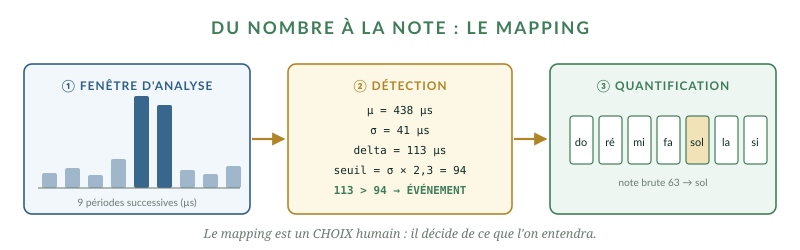
Fig. 3.2. Du nombre à la note. La troisième étape — la quantification sur une gamme — est une décision purement humaine et entièrement arbitraire.
Voici le tableau de correspondance qui résume les choix de mapping usuels. Il vaut pour tous les appareils du marché, à quelques variantes près.
Grandeur mesurée
Paramètre musical piloté
Plage typique
Effet perçu
Moyenne des périodes
Hauteur de la note
MIDI 36 → 96 (do2 – do7)
Registre, « voix » de la plante
Delta (amplitude du changement)
Durée de la note
250 → 2 500 ms
Respiration, tenue
Delta modulo 127
Valeur de Control Change
0 → 127
Timbre, ouverture de filtre
Fréquence des dépassements de seuil
Densité rythmique
0,2 → 4 notes/s
Agitation ou calme
Dérive lente de la moyenne
Transposition
± 1 octave
Climat général de la séance
Dérivée du signal
Modulation d'effet (réverbération, délai)
0 → 127
Profondeur, espace
Correspondances de mapping usuelles. Ce tableau est la convention du domaine, pas une loi naturelle : chacun de ces choix pourrait être inversé sans que la plante en sache rien.
La question de la gamme
La quantification sur une gamme est l'intervention humaine la plus lourde, et la plus discutée du milieu. Un signal biologique brut ne connaît pas les demi-tons : la note « juste » issue de la mesure tombe presque toujours entre deux touches. Trois attitudes existent.
Chromatique intégral. On conserve les douze demi-tons. Le résultat est fidèle à la mesure, souvent dissonant, et fatigant à l'écoute prolongée. C'est le réglage à utiliser pour toute analyse sérieuse.
Gamme diatonique ou pentatonique. On arrondit chaque note vers le degré le plus proche de la gamme choisie. Le résultat est immédiatement agréable — et il est en partie fabriqué. Une pentatonique ne peut produire de dissonance : la beauté du résultat ne dit alors rien de la plante.
Microtonalité. On abandonne la quantification et on pilote un synthétiseur par la hauteur continue. C'est le plus fidèle et le plus exigeant. Peu d'appareils le permettent nativement ; le passage par un pitch bend MIDI ou par le protocole MPE le rend accessible.
⚠️ Limites et interprétation
Un test d'honnêteté simple pour toute séance publique : annoncez la gamme utilisée. Si vous dites « écoutez, cette plante est apaisée » alors que vous avez verrouillé la sortie sur une pentatonique majeure, vous décrivez votre réglage, pas la plante. Le même signal en chromatique aurait sonné inquiétant. Aucune tromperie n'est nécessaire pour que le public soit trompé : il suffit de ne rien dire.
🌿 Regard énergétique
Beaucoup de praticiens accordent leur chaîne en 432 Hz plutôt qu'en 440 Hz, considérant ce diapason plus « naturel » ou mieux accordé au vivant. Disons les choses proprement : aucune étude ne montre de différence physiologique entre ces deux diapasons, et l'argument des « fréquences de Schumann » ou du « nombre d'or » ne résiste pas au calcul. En revanche, un diapason plus bas est perceptiblement plus doux, et si ce choix vous aide à vous poser, il a une utilité réelle — sur vous. Faites-le si vous l'aimez. Ne le présentez pas comme une propriété de la plante.
Maillon 9 — La synthèse sonore
Dernière étape, entièrement logicielle et entièrement libre. Le message MIDI ne contient aucun son : il contient une instruction. C'est l'instrument — matériel ou virtuel — qui décide de la couleur.
Type d'instrument
Caractère sonore
Adapté à
Piano, harpe, kalimba (échantillons)
Attaque nette, décroissance naturelle
Séances publiques, premier contact
Nappes de synthétiseur, pads
Attaques lentes, notes fondues
Méditation, écoute longue
Bols, cloches, gongs
Résonance longue, spectre riche
Pratiques sonores, rituels
Onde sinusoïdale pure
Aucun caractère ajouté
Analyse : on entend le signal, pas l'habillage
Instruments percussifs
Sans tenue, rythme exposé
Étude de la densité d'événements
Le choix de l'instrument transforme radicalement la perception d'un même flux MIDI. Pour comprendre ce que fait votre plante, écoutez-la au moins une fois en sinusoïde nue.
✨ Expérience intérieure
Faites cette expérience une fois, et elle vous marquera durablement. Enregistrez dix minutes de MIDI d'une plante. Rejouez ce même fichier trois fois : d'abord avec une nappe de synthétiseur douce, puis avec un piano, puis avec une sinusoïde nue.
Vous allez « entendre » trois plantes différentes. L'une sera sereine, la deuxième pensive, la troisième presque clinique. Les données sont rigoureusement identiques. Ce que vous avez entendu, les trois fois, c'est le travail de votre propre esprit qui donne un sens à une séquence de nombres. Cette expérience ne disqualifie pas la pratique — elle vous apprend à savoir où vous vous tenez quand vous écoutez.
Ag/AgCl ou inox 316L pour les électrodes ; jamais de cuivre nu.
L'appareil injecte toujours un courant : aucune mesure n'est passive.
Le déclenchement se fait sur une rupture de régularité, non sur une amplitude.
La gamme et l'instrument sont des choix humains qui déterminent l'essentiel de ce que l'on entend.
PartieIV
Analyse technique des brevets
« Ce que les fabricants ne disent pas, les brevets l'écrivent. » Dissection composant par composant des treize brevets qui fondent la bio-sonification végétale — schémas d'origine à l'appui.
Le corpus brevetaire : vue d'ensemble
Treize documents publics constituent l'ossature technique du domaine. Tous sont librement téléchargeables, et la plupart sont expirés — donc reproductibles sans autorisation.
Un brevet est un contrat : l'inventeur obtient un monopole temporaire, en échange de quoi il divulgue publiquement et complètement son invention. C'est ce second terme qui nous intéresse. Là où une fiche produit dit « technologie brevetée exclusive », le brevet correspondant donne les valeurs de résistance, les références de composants et les organigrammes. Aucune autre source ne descend à ce niveau de détail.
✦ Idée clé
Un brevet expiré tombe dans le domaine public : n'importe qui peut fabriquer l'invention, y compris pour la vendre. Le brevet fondateur de Damanhur (US 6 487 817) a expiré le 13 juin 2019 ; sa continuation (US 6 743 164) en 2021 ; le brevet PlantWave (US 10 909 956) a été abandonné pour non-paiement des annuités le 2 février 2025. Autrement dit : l'intégralité de l'architecture décrite dans cette partie est aujourd'hui libre de droits. Ce que protègent encore les fabricants, ce sont leurs marques, leurs boîtiers et leurs banques sonores — pas la physique.
Tableau récapitulatif et adresses de téléchargement
Chaque numéro ci-dessous est un lien direct vers le document intégral sur Google Patents, d'où le PDF se télécharge en un clic. Les liens sont actifs dans la version électronique de cet ouvrage.
Capteur d'impédance végétale de qualité agronomique
Le corpus complet. Adresse générique de téléchargement : https://patents.google.com/patent/<NUMÉRO>/en, puis bouton « Download PDF ». Un miroir européen gratuit existe sur worldwide.espacenet.com.
⚠️ Limites et interprétation
Un brevet prouve qu'une invention a été décrite et jugée nouvelle et non évidente. Il ne prouve rien quant à l'efficacité réelle du dispositif, et encore moins quant à la validité des théories invoquées dans son introduction. Les offices de brevets ne vérifient pas les affirmations biologiques. Lorsque le brevet US 6 487 817 écrit que « les plantes sont capables d'une forme rudimentaire de sentiments », cette phrase n'a aucune valeur probante — c'est une motivation d'auteur, pas un résultat examiné. En revanche, lorsque le même document donne la valeur de R41 à 10,1 MΩ, cette information-là est fiable : elle engage la validité du titre.
US 6 487 817 — le brevet fondateur de Damanhur
Seize pages, huit planches, vingt et une revendications. C'est le document le plus important du domaine, et il n'a, à notre connaissance, jamais été analysé en français.
US 6 487 817 B2
Electronic device to detect and direct biological microvariations in a living organism
Inventeur
Oberto Airaudi (Cuceglio, Italie) — fondateur de la Fédération de Damanhur
Cessionnaire
Music of Plants Inc., Hallandale, Floride
Dates
Priorité 2 juin 1999 · dépôt 4 mai 2001 · délivrance 3 décembre 2002 · expiration 13 juin 2019
Classification
A01G 7/04 (traitement électrique des plantes) · A61M 21/00
Fig. 4.1. Planche FIG. 1 du brevet US 6 487 817. Repère 1 : l'organisme vivant, relié par les électrodes F (feuille, foglia) et T (terre) au bloc détecteur 2, subdivisé en étage X (détection) et Y (rééquilibrage). La sortie 5 alimente le bloc 6 : générateur audio G, interface I, ou pilotage de procédé P.
Traduction des mentions de la planche
Mention d'origine
Traduction française
living organism
organisme vivant
F / T
électrodes : foglia (feuille) et terra (terre)
microvariation detector
détecteur de micro-variations
X
étage de détection
Y
étage de rééquilibrage automatique
G
générateur audio
I
interface informatique
P
pilotage de procédé (lumière, vannes, pompes, moteurs)
Trois observations sur cette planche apparemment banale.
Les électrodes portent des noms italiens.F pour foglia, la feuille ; T pour terra, la terre. Le montage canonique feuille/terreau est donc inscrit dans le brevet d'origine — ce n'est pas une convention ultérieure.
Le détecteur est explicitement scindé en deux fonctions. X mesure, Y corrige. Cette séparation est le cœur de l'invention : sans le bloc Y, le système saturerait en quelques minutes sous l'effet de la dérive d'interface décrite au chapitre précédent.
La sortie n'est pas dédiée à la musique. Le bloc 6 prévoit dès 1999 le pilotage de « systèmes de mixage lumineux ou de dispositifs électriques tels que vannes, pompes, moteurs électriques ou autres servocommandes ». L'idée d'une serre pilotée par ses propres plantes est dans le brevet fondateur.
Le détecteur analogique (FIG. 2), composant par composant
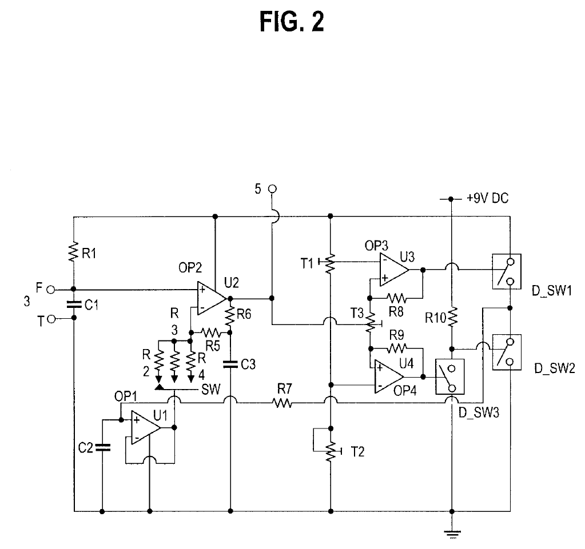
Fig. 4.2. Planche FIG. 2 : le détecteur de micro-variations. Quatre amplificateurs opérationnels (OP1 à OP4), trois interrupteurs numériques (D_SW1 à D_SW3), alimentation 9 V continue.
Traduction des mentions de la planche
Mention d'origine
Traduction française
OP1
suiveur de tension — mémoire analogique du point d'équilibre
OP2
amplificateur de tension, gain commuté par SW
OP3 / OP4
comparateurs à hystérésis, seuils haut et bas
D_SW1 / D_SW2 / D_SW3
interrupteurs numériques de charge et de décharge
SW
sélecteur de gain : minimum, moyen, maximum
T1 / T2
réglages des seuils supérieur et inférieur
T3
réglage de la largeur d'hystérésis
+9V DC
alimentation 9 V continue (pile)
C1
condensateur de filtrage des perturbations d'environnement
C2
condensateur de mémoire du point d'équilibre
C3
second étage de filtrage, avec R6
Suivons le trajet du signal exactement comme le décrit le texte du brevet.
Trajet du signal dans le détecteur FIG. 2
① INJECTION
La pile (3 à 12 V, 9 V nominal) alimente le circuit et fait
passer, à travers R1, un courant très faible vers les pointes
des électrodes F et T couplées à la plante.
C1 filtre les perturbations électriques de l'environnement.
② PREMIER ÉTAGE — OP2, amplificateur de tension
Les variations de tension aux pointes de F et T sont appliquées
à l'entrée NON INVERSEUSE de OP2.
Gain fixé par le pont R5/R6 combiné à R2, R3 ou R4,
sélectionnées par l'interrupteur à 3 positions « SW »
→ gain MINIMUM / MOYEN / MAXIMUM, choisi à la main.
Le couple R6 + C3 forme un SECOND étage de filtrage.
③ MÉMOIRE ANALOGIQUE — OP1, suiveur de tension (gain unité)
Sa sortie est reliée à son entrée inverseuse : V(sortie) = V(entrée).
Son entrée non inverseuse est la borne haute du condensateur C2.
⇒ OP1 recopie en permanence la charge de C2 sans la vider :
C2 est la MÉMOIRE du point d'équilibre courant.
④ COMPARATEURS À HYSTÉRÉSIS — OP3 (haut) et OP4 (bas)
Les seuils V_sup et V_inf sont réglés par les trimmers T1 et T2.
Le trimmer T3 règle la LARGEUR d'hystérésis via R8 et R9.
· si V2 dépasse V_sup → OP3 bascule → ferme D_SW1
→ C2 se CHARGE à travers R7
· si V2 descend sous V_inf → OP4 bascule → via D_SW3, ferme D_SW2
→ C2 se DÉCHARGE à travers R7
⑤ CONTRE-RÉACTION
La tension V1 de C2, recopiée par OP1 et renvoyée par SW et
R2/R3/R4 vers l'entrée INVERSEUSE de OP2, corrige V2 jusqu'à
repasser sous le seuil d'hystérésis. Le cycle s'arrête.
⇒ RÉSULTAT : le point de fonctionnement se recentre TOUT SEUL,
en permanence, quelle que soit la dérive lente de l'interface.
C'est un ASSERVISSEMENT ANALOGIQUE — et c'est l'invention.
Le mécanisme de rééquilibrage automatique. Sans lui, la dérive d'interface de 10 à 40 % décrite au chapitre 8 saturerait l'amplificateur en quelques minutes.
🔬 Point scientifique
Pourquoi une hystérésis et non un simple comparateur ? Parce qu'un comparateur sans hystérésis placé face à un signal bruité bascule des dizaines de fois par seconde autour du seuil — un phénomène appelé chattering. L'hystérésis crée deux seuils distincts, l'un pour monter, l'autre pour descendre : une fois basculé, le comparateur exige un écart minimal en sens inverse pour rebasculer. Le trimmer T3 règle précisément cet écart. Trop faible : le système oscille. Trop grand : il devient insensible aux petites variations — c'est-à-dire à tout ce qui nous intéresse. T3 est le réglage le plus critique de l'appareil, et c'est aussi celui qui donne à chaque exemplaire son caractère propre.
L'interface MIDI (FIG. 3)
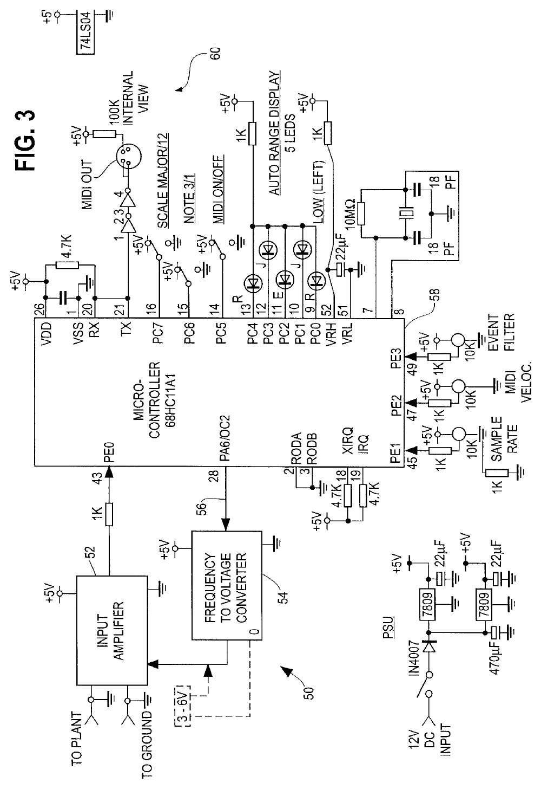
Fig. 4.3. Planche FIG. 3 : l'interface de sortie. On identifie le microcontrôleur 68HC11A1 de Motorola, un frequency-to-voltage converter, un amplificateur d'entrée, la sortie MIDI OUT, et les commandes de face avant : Scale, Mode, Note, Auto Range, Sample Rate, Event Filter, MIDI Velocity.
Traduction des mentions de la planche
Mention d'origine
Traduction française
MICRO CONTROLLER 68HC11A1
microcontrôleur 68HC11A1 (Motorola, 8 bits)
INPUT AMPLIFIER
amplificateur d'entrée
FREQUENCY TO VOLTAGE CONVERTER
convertisseur fréquence / tension
TO PLANT / TO GROUND
vers la plante / vers la terre
MIDI OUT
sortie MIDI
SCALE
gamme
MODE
mode musical
NOTE
tonique
AUTO RANGE
changement automatique de calibre
SAMPLE RATE
fréquence d'échantillonnage
EVENT FILTER
seuil de déclenchement d'un événement
MIDI VELOC.
vélocité MIDI : fixe ou proportionnelle
INTERNAL VIEW
vue interne
PSU / 12V DC INPUT
alimentation / entrée 12 V continu
Cette planche est précieuse : elle révèle l'ergonomie réelle du Device U1, c'est-à-dire les paramètres que l'utilisateur peut régler.
Commande du brevet
Fonction
Équivalent sur les appareils actuels
Scale
Gamme de quantification
Menu « gamme » de l'application
Mode
Mode musical (majeur, mineur, modal)
Idem
Note
Tonique de référence
« Key » / « Root »
Auto Range
Adaptation automatique de la plage de mesure
Calibration automatique au démarrage
Sample Rate
Fréquence d'échantillonnage
« Sensibilité » ou « densité »
Event Filter
Seuil de déclenchement d'un événement
« Threshold » — le paramètre le plus influent
MIDI Velocity
Vélocité fixe ou proportionnelle
Souvent fixe et non réglable aujourd'hui
Les sept réglages du Device U1 d'origine. Beaucoup d'appareils grand public actuels en exposent moins — la simplification s'est faite au prix du contrôle.
Le mode de réalisation alternatif : le vrai pont de Wheatstone (FIG. 6, 7 et 8)
Le brevet décrit un second mode de réalisation, plus abouti, et c'est celui qui a effectivement équipé les appareils de série. C'est ici que le pont de Wheatstone apparaît explicitement.
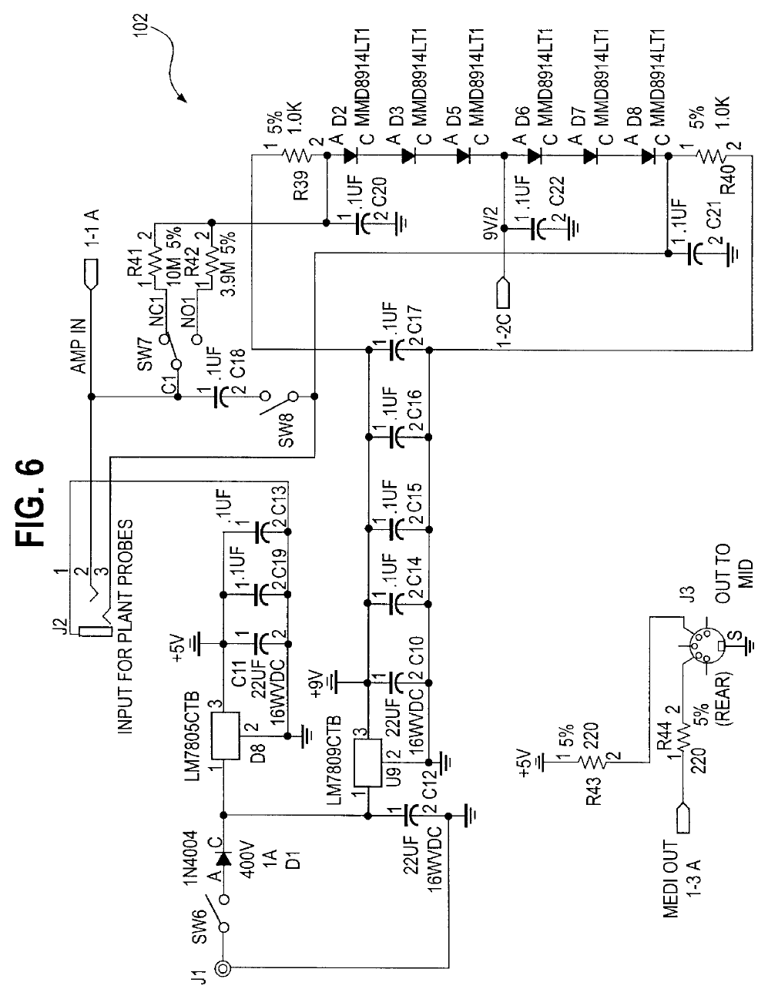
Fig. 4.4. Planche FIG. 6 : l'étage analogique d'entrée. Noter l'entrée Input for plant probes (J2), la chaîne de diodes D2 à D9 de type MMBD914LT1 qui forme la source de tension du pont, les résistances de référence R41 = 10,1 MΩ et R42 = 4 MΩ commutables, les régulateurs LM7805CTB, et la prise MIDI OUT avec sa résistance de 220 Ω.
Traduction des mentions de la planche
Mention d'origine
Traduction française
INPUT FOR PLANT PROBES
entrée des sondes de plante
MMBD914LT1
diode de commutation au silicium (chaîne de polarisation)
LM7805CTB
régulateur de tension 5 V
MIDI OUT (REAR)
sortie MIDI, face arrière
OUT TO MIDI
vers la prise MIDI
AMP IN
entrée de l'amplificateur
R41 / R42
résistances de référence du pont : 10,1 MΩ et 4 MΩ
16VDC
condensateur électrolytique 16 V
Pourquoi une chaîne de diodes plutôt qu'un diviseur résistif ?
Le brevet précise : « Les tensions V1 et V2 du pont de Wheatstone sont établies par la chaîne de diodes polarisées en direct composée des diodes D2 à D7. Ces diodes forment une source d'alimentation de 4 volts à point milieu. »
L'astuce est élégante. Une diode au silicium polarisée en direct présente une chute de tension d'environ 0,65 V, très peu dépendante du courant qui la traverse. Six diodes en série donnent donc ≈ 3,9 V, avec une impédance de source faible et une stabilité bien supérieure à celle d'un diviseur résistif — qui, lui, varierait avec la charge et avec la tension de pile. Le point milieu de la chaîne fournit gratuitement la référence Va des amplificateurs différentiels.
Autre bénéfice, rarement mentionné : les diodes ont un coefficient de température d'environ −2 mV/°C, comparable à celui des jonctions base-émetteur des étages suivants — ce qui procure une compensation thermique partielle et gratuite.
Le brevet détaille ensuite la chaîne d'amplification avec une précision qui permet la reproduction exacte :
Élément
Rôle
Valeur donnée par le brevet
Rb (R41 ou R42)
Résistance de référence du pont
10,1 MΩ ou 4 MΩ, commutables
Rp
Résistance plante + sol
Variable — c'est la mesure
Sortie du détecteur
Tension utile annoncée
« from 40 mV to 4.80 mV » (formulation littérale — voir l'avertissement ci-après)
U1a, U1d
Étages d'entrée à gain commutable
Gain 1,2 ou 4,0 (sélecteur SW1)
U1b, U1c
Normalisation par rapport à la référence Va
Gain unité
U2a
Étage différentiel principal
Gain fixe × 21
Gain total
Sur la différence (Vb − Vc)
× 25
U2d
Tampon vers le convertisseur A/N
Gain unité
U3 (LM331)
Convertisseur tension/fréquence de la boucle de retour
Détecteur de seuil
Intégrateur 106
Lissage du train d'impulsions de retour
Constante de temps ≈ 220 ms
Convertisseur A/N
Numérisation
8 bits, intégré au microcontrôleur
Sortie MIDI
Liaison série asynchrone
31 200 bauds (norme : 31 250)
Nomenclature fonctionnelle extraite du texte du brevet. Ces valeurs suffisent à reconstruire l'appareil.
Quelles valeurs pour Rb et que vaut Rp ?
C'est la question que pose tout lecteur qui veut reproduire le montage, et le brevet y répond partiellement. Reprenons la topologie exacte.
Topologie réelle du pont — brevet US 6 487 817, FIG. 6 et 8
+4 V (sommet de la chaîne de diodes D2…D7)
│
┌───────────────┴───────────────┐
│ │
┌──┴──┐ ┌──┴──┐
│ D2 │ demi-chaîne haute │ Rb │ résistance de RÉFÉRENCE
│ D3 │ ≈ 3 diodes × 0,65 V │ │ R41 = 10,1 MΩ
│ D5 │ │ │ ou R42 = 4 MΩ
└──┬──┘ └──┬──┘
│ │
Va ─●── référence (point milieu) ●─── Vb (mesure)
│ │
┌──┴──┐ ┌──┴──┐
│ D6 │ demi-chaîne basse │ Rp │ LA PLANTE
│ D7 │ │ │ (+ le sol, selon
│ D8 │ │ │ le montage F/T)
└──┬──┘ └──┬──┘
│ │
└───────────────┬───────────────┘
│
masse
ÉQUILIBRE DU PONT
Va = 2 V (point milieu de la chaîne, par construction)
Vb = 4 V · Rp / (Rp + Rb)
Vb − Va = 0 ⟺ Rp = Rb
⇒ LA RÉSISTANCE DE RÉFÉRENCE DOIT ÊTRE CHOISIE ÉGALE
À LA RÉSISTANCE ATTENDUE DE LA PLANTE.
La chaîne de diodes tient lieu des deux bras « fixes » du pont classique. Le point milieu fournit gratuitement la référence Va, avec une impédance de source très basse et une compensation thermique partielle.
✦ Idée clé — pourquoi 4 MΩ et 10,1 MΩ
Un pont de Wheatstone n'est sensible qu'au voisinage de son équilibre. Le fait que Damanhur ait prévu un commutateur à deux positions, 4 MΩ et 10,1 MΩ, nous dit exactement ce que les concepteurs attendaient de la plante : une résistance comprise entre environ 2 et 20 MΩ selon le végétal, l'humidité et le montage. La position 4 MΩ sert aux contacts « faciles » — feuille charnue bien hydratée, terreau humide ; la position 10,1 MΩ aux contacts secs ou aux longs trajets.
Si vous reproduisez le montage, mesurez d'abord Rp à l'ohmmètre sur votre plante et votre paire d'électrodes, puis choisissez Rb à la valeur normalisée la plus proche. C'est le seul réglage qui compte vraiment.
Le calcul de sensibilité
⚠️ Une ambiguïté du document qu'il faut signaler
Le brevet écrit, dans ses deux versions publiées : « an output of the Wheatstone bridge changes to provide a change in the output of the microvariation detector 2 in the range of from 40 mV to 4.80 mV ». Cette plage est énoncée en ordre décroissant, ce qui est incohérent, et il est impossible de trancher avec certitude ce que les auteurs voulaient écrire.
Trois lectures sont défendables : « 40 µV à 4,80 mV » (coquille sur le préfixe) ; « 40 mV à 4,80 V » (coquille sur l'unité haute — cohérente avec un convertisseur 8 bits sur 0-5 V, où 40 mV vaut deux pas de quantification et 4,80 V la pleine échelle) ; ou « 0,40 mV à 4,80 mV ». Cet ouvrage ne tranche pas. Ce qui suit donne donc la formule générale, applicable quelle que soit la lecture retenue — et c'est de toute façon elle qu'il faut utiliser, puisque vous étalonnerez votre propre montage.
Dérivons la tension de sortie du pont autour de l'équilibre. C'est un calcul de trois lignes qui éclaire tout le brevet.
Sensibilité du pont à l'équilibre
V_pont = V · [ Rp / (Rp + Rb) − 1/2 ] avec V = 4 V
Dérivée par rapport à Rp :
dV_pont / dRp = V · Rb / (Rp + Rb)²
À l'équilibre (Rp = Rb) :
dV_pont / dRp = V / (4 · Rb)
Donc, pour une variation RELATIVE de la plante :
ΔV_pont = (V / 4) · (ΔRp / Rp) = 1 V · (ΔRp / Rp)
⇒ RÈGLE MNÉMOTECHNIQUE, avec V = 4 V :
une variation de 1 ppm de la plante produit 1 µV au pont.
C'est direct, et c'est vrai quel que soit Rb.
CE QUE CELA DONNE SELON LA SENSIBILITÉ VISÉE
┌───────────────────────┬──────────────┬─────────────────────────┐
│ Plus petite tension │ Variation │ En ohms, si Rb = 4 MΩ │
│ détectable au pont │ relative │ │
├───────────────────────┼──────────────┼─────────────────────────┤
│ 40 µV │ 40 ppm │ 160 Ω │
│ 400 µV │ 400 ppm │ 1,6 kΩ │
│ 4 mV │ 4 000 ppm │ 16 kΩ │
│ 40 mV │ 40 000 ppm │ 160 kΩ │
└───────────────────────┴──────────────┴─────────────────────────┘
NOTA — après l'amplificateur d'instrumentation de gain 25, ces
tensions sont multipliées par 25 avant d'atteindre le convertisseur.
🔬 Point scientifique
Quelle que soit la lecture retenue, une chose est certaine et c'est elle qui compte : la dérive d'interface est d'un ordre de grandeur sans commune mesure avec le signal recherché.
Une dérive de 10 à 40 % en une demi-heure — chiffres du chapitre 8 — représente 100 000 à 400 000 ppm. Même dans la lecture la moins exigeante, celle où l'appareil ne détecterait que des variations de 40 000 ppm, la dérive reste dix fois plus grande que la plus grande variation mesurable. Elle sature donc le système en quelques minutes.
C'est cela que démontre le calcul, et c'est indépendant de l'ambiguïté du texte : la boucle de nullification n'est pas un raffinement destiné à gagner en précision, elle est ce qui rend la mesure possible. Sans elle, l'appareil ne fonctionnerait pas du tout.
Valeurs d'impédance attendues selon le montage
Configuration
Rp typique
Rb à choisir
Commentaire
Pastille adhésive à gel, feuille charnue bien hydratée, 5 cm d'écart
0,1 à 2 MΩ
1 MΩ
Le contact le plus conducteur et le plus stable
Pinces métalliques, feuille souple humide, même limbe
1 à 10 MΩ
4 MΩ
Configuration la plus courante
Montage feuille + terreau humide (F/T d'origine)
0,5 à 8 MΩ
4 MΩ
Le sol conduit bien ; dépend fortement de l'arrosage
Pinces sur feuille sèche ou cuticule épaisse
10 à 100 MΩ
10,1 MΩ
Limite haute d'exploitabilité
Succulente, cactée, feuille cireuse
> 100 MΩ
Hors plage
Le pont ne peut plus être équilibré
Aiguilles inox dans le cambium d'un arbre, 30 cm d'écart
0,2 à 3 MΩ
1 MΩ
Le liber est très conducteur ; signal ample
Carpophore de champignon frais, deux pinces
50 à 500 kΩ
100 kΩ à 1 MΩ
Teneur en eau très élevée
Deux doigts d'une même main humaine
50 kΩ à 2 MΩ
500 kΩ
Varie d'un facteur 40 selon l'activation sympathique
Ordres de grandeur d'impédance selon le montage. Ces valeurs sont des repères de conception, à vérifier à l'ohmmètre sur votre installation : elles varient d'un facteur dix d'un individu à l'autre.
Mesurer Rp soi-même, en trois minutes
Réglez un multimètre sur son plus haut calibre de résistance — 20 ou 200 MΩ. Posez vos électrodes exactement comme pour une séance. Lisez la valeur, attendez cinq minutes, relisez.
Deux informations en sortent. La valeur elle-même, qui vous donne Rb. Et l'écart entre les deux lectures, qui vous donne l'ampleur de la dérive d'interface sur votre montage — c'est-à-dire, très concrètement, la durée de stabilisation dont vous aurez besoin.
Attention : beaucoup de multimètres d'entrée de gamme plafonnent à 20 MΩ et affichent « OL » au-delà. Un affichage « OL » ne signifie pas « contact raté » : il signifie « au-delà de la plage de l'appareil ». Reprenez avec un contact plus large ou légèrement humidifié.
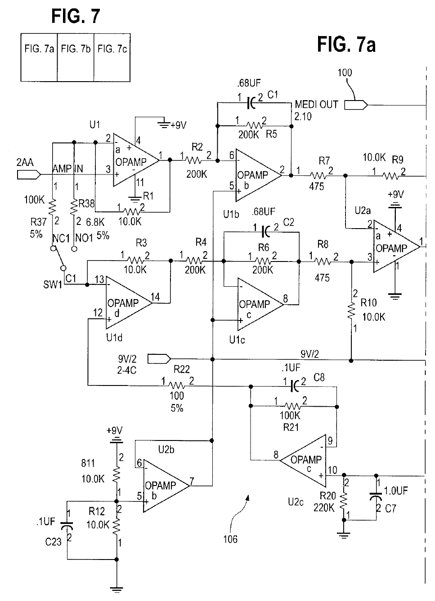
Fig. 4.5. Planche FIG. 7a : la chaîne d'amplification d'instrumentation. On lit les valeurs : R2 et R5 à 200 kΩ, R3 et R4 à 10 kΩ, R7 et R8 à 475 Ω, R9 et R10 à 10 kΩ, R22 à 100 Ω. L'entrée AMP IN arrive en haut à gauche par R37 (100 kΩ).
Traduction des mentions de la planche
Mention d'origine
Traduction française
U1a … U1d, U2a … U2d
amplificateurs opérationnels de la chaîne d'instrumentation
OPAMP
amplificateur opérationnel
AMP IN
entrée de l'amplificateur, depuis le pont
MEDI OUT / MIDI OUT
sortie vers l'étage numérique
9V/2
point milieu de l'alimentation (masse virtuelle)
200K, 10.0K, 475, 100K
valeurs de résistance en ohms
.1UF, 68UF
valeurs de capacité en microfarads
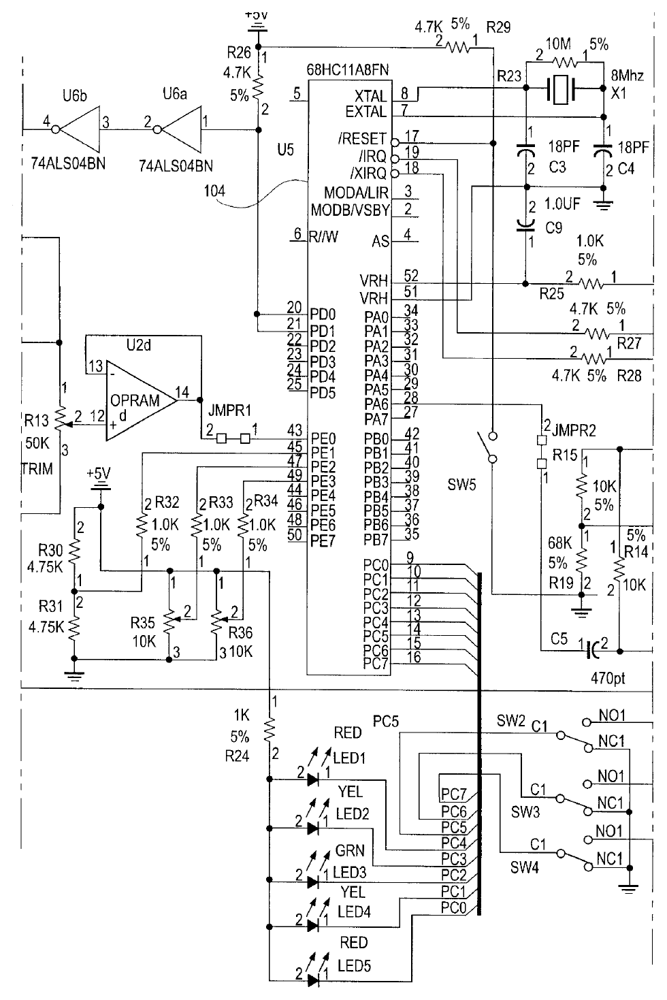
Fig. 4.6. Planche FIG. 7b : l'étage numérique. Microcontrôleur 68HC11A8FN (Motorola, 8 bits, convertisseur A/N intégré 8 voies), quartz 8 MHz avec ses condensateurs de 18 pF, inverseurs 74ALS04BN pour la mise en forme du signal de retour, trimmer R13 de 50 kΩ, cinq LED de signalisation (rouge, jaune, verte, jaune, rouge) et les commutateurs SW2 à SW5 de face avant.
Traduction des mentions de la planche
Mention d'origine
Traduction française
68HC11A8FN
microcontrôleur 8 bits avec convertisseur A/N intégré
74ALS04BN
sextuple inverseur logique (mise en forme du signal de retour)
XTAL / EXTAL
broches du quartz, ici 8 MHz
/RESET, /IRQ, /XIRQ
réinitialisation et entrées d'interruption
PA0…PA7, PB0…PB7, PC0…PC7, PD0…PD5, PE0…PE7
ports d'entrée-sortie
VRH / VRL
tensions de référence haute et basse du convertisseur A/N
Le mécanisme central du second mode de réalisation mérite qu'on s'y arrête, car c'est une technique d'instrumentation de haut niveau, rarement vue dans un appareil grand public.
Le microprocesseur, après avoir numérisé le signal, génère en retour un signal carré de fréquence variable sur sa broche 28. Ce signal est mis en forme par le LM331, puis intégré (constante de temps 220 ms) pour produire une tension continue proportionnelle à la fréquence. Cette tension est soustraite de la micro-tension de la plante à l'entrée de l'amplificateur d'instrumentation.
Le brevet l'énonce ainsi : « le microprocesseur et son programme suivent les variations de la résistance de l'élément végétal puis créent un signal opposé pour annuler ce changement ». C'est un asservissement à zéro (null-balance servo loop). Son avantage décisif : l'amplificateur travaille en permanence autour de zéro, dans sa zone la plus linéaire et la plus sensible, quelle que soit l'amplitude de la dérive. La grandeur réellement mesurée n'est plus la tension, mais la fréquence qu'il faut produire pour l'annuler — une grandeur bien plus facile à numériser avec précision.
C'est le même principe que la balance de précision à zéro, ou que l'accéléromètre à boucle fermée. Pour un appareil conçu en 1999 par une communauté spirituelle, le niveau d'ingénierie est remarquable.
Ce que protègent les revendications
Les vingt et une revendications se lisent en trois groupes.
Revendications 1 à 7 — le procédé. La revendication 1, la plus large, couvre : détecter une micro-tension végétale au sein d'un pont de Wheatstone, générer un signal de contre-réaction depuis la sortie d'un générateur sonore MIDI externe, le soustraire à la micro-tension, et fournir la différence comme signal de commande audit générateur. La boucle est donc revendiquée comme passant par le générateur MIDI lui-même.
Revendications 8 à 14 — l'appareil. Reprise miroir, en termes de « moyens pour ».
Revendications 15 à 21 — le matériel. Pont de Wheatstone, boucle de retour, amplificateur différentiel, amplificateur de commande, configurations de diodes.
⚠️ Limites et interprétation
Notez la portée réelle : ce brevet ne protège pas « faire de la musique avec une plante ». Il protège une architecture de mesure particulière — le pont de Wheatstone avec boucle de nullification. C'est précisément pourquoi le MIDI Sprout a pu naître en 2014 sans conflit : en utilisant un oscillateur NE555 au lieu d'un pont, il se situe entièrement hors du champ des revendications. Deux routes techniques indépendantes mènent au même résultat musical — et cette bifurcation explique la structure du marché actuel.
Nomenclature des composants lisibles sur les planches
Voici l'inventaire des composants identifiables sur les planches du brevet, avec leur fonction, leur valeur lorsqu'elle est lisible, et un équivalent contemporain. C'est le document de travail de qui veut reproduire l'appareil : tout ce qui suit est relevé sur les figures reproduites aux pages précédentes.
⚠️ Sur la fiabilité de ce relevé
Ces valeurs sont lues sur des planches numérisées à partir de documents imprimés de 2002. Certaines mentions sont partiellement illisibles et sont signalées par « n. l. » (non lisible). Vérifiez systématiquement sur la planche d'origine, téléchargeable en pleine résolution à l'adresse donnée en tête de chapitre, avant de commander quoi que ce soit. Les valeurs citées dans le texte du brevet — 10,1 MΩ, 4 MΩ, gain 21, gain total 25, intégrateur 220 ms, 31 200 bauds — sont en revanche parfaitement établies.
Circuits actifs
Repère
Composant d'origine
Fonction
Équivalent actuel
Prix ind.
U5
68HC11A8FN (Motorola)
Microcontrôleur 8 bits, convertisseur A/N intégré, UART pour le MIDI
ATmega328P, ou RP2040 pour une version moderne
3 à 6 €
U6a, U6b
74ALS04BN
Inverseurs logiques — mise en forme du signal de retour de la boucle
74HC04, ou une simple broche de microcontrôleur
0,40 €
U3
LM331
Convertisseur tension/fréquence et détecteur de seuil de la boucle
Étages d'entrée de l'amplificateur d'instrumentation, gain commutable 1,2 ou 4
LMC6484 (CMOS quadruple) ou INA333 intégré
2 à 8 €
U2a
Amplificateur opérationnel
Étage différentiel principal, gain fixe × 21
Idem
—
U2d
Amplificateur opérationnel
Tampon vers le convertisseur A/N
Idem
—
OP1…OP4
Amplificateurs opérationnels (FIG. 2)
Suiveur de mémoire, ampli de tension, deux comparateurs à hystérésis
TLC2274, LMC6484
2 €
D_SW1…3
Interrupteurs numériques
Charge et décharge de C2, rééquilibrage automatique
CD4066B (quadruple interrupteur analogique)
0,50 €
—
LM7805CTB
Régulateur de tension 5 V
LM7805, ou MCP1700 à faible chute de tension
0,60 €
D1
1N4004, 400 V / 1 A
Protection contre l'inversion de polarité d'alimentation
1N4007, ou diode Schottky SS14
0,10 €
D2…D9
MMBD914LT1 ×8
Chaîne de diodes formant la source à point milieu du pont
1N4148 (boîtier traversant) ou BAV70
0,05 €
X1
Quartz 8 MHz
Horloge du microcontrôleur
Quartz 16 MHz pour ATmega328P
0,50 €
Composants actifs. Le remplacement le plus rentable est l'ensemble U1a-U1d + U2a : un seul INA333 fait aujourd'hui le travail de ces cinq amplificateurs et du réseau de résistances appariées.
Résistances
Repère
Valeur
Fonction
Tolérance requise
R41
10,1 MΩ
Résistance de référence du pont, calibre haut
1 % — détermine le point d'équilibre
R42
4 MΩ
Résistance de référence du pont, calibre bas
1 %
R2, R5
200 kΩ
Contre-réaction des étages d'entrée
1 %, appariées
R3, R4
10,0 kΩ
Réseau de gain de l'étage d'entrée
1 %, appariées
R7, R8
475 Ω
Réseau de l'étage différentiel
0,1 % ou mieux, appariées
R9, R10
10,0 kΩ
Réseau de l'étage différentiel
0,1 % ou mieux, appariées
R12, R21
10,0 kΩ · 100 kΩ
Polarisation et mise à l'échelle
1 %
R22
100 Ω
Limitation de courant
5 %
R24
1 kΩ
Limitation des LED de signalisation
5 %
R25, R32…R34
1,0 kΩ
Diviseurs et polarisation du convertisseur A/N
1 %
R26…R29
4,7 kΩ
Rappels au niveau haut du microcontrôleur
5 %
R30, R31
4,75 kΩ
Diviseur de référence
1 %
R14, R15, R35, R36
10 kΩ
Ajustables et rappels
5 à 10 %
R19
68 kΩ
Réseau de la boucle de retour
5 %
R23
10 MΩ
Résistance d'amorçage du quartz
5 %
R13
50 kΩ ajustable
Réglage fin — potentiomètre de précision
Multitours conseillé
R37, R38
100 kΩ · 2,68 kΩ
Entrée de l'amplificateur
1 %
R39, R40
n. l.
Complément de la chaîne de diodes
1 %
R44
220 Ω
Sortie MIDI — valeur imposée par la norme
5 %
R1…R10 (FIG. 2)
n. l.
Réseau du détecteur du premier mode de réalisation
—
T1, T2, T3
Ajustables
Seuil haut, seuil bas, largeur d'hystérésis
Multitours indispensable
Résistances. Quatre lignes seulement exigent de la précision : les deux résistances de référence du pont et les deux paires du réseau différentiel.
Condensateurs
Repère
Valeur
Fonction
Technologie imposée
C3, C4
18 pF
Charge du quartz 8 MHz
NP0 / C0G
C5
470 pF
Réseau de la boucle de retour
NP0 / C0G
C6, C23
0,1 µF
Découplage et filtrage
X7R accepté
C7, C9
1,0 µF
Réservoir et filtrage
Film ou céramique
—
68 µF
Réservoir d'alimentation des étages analogiques
Électrolytique
C10…C21
1 µF et 22 µF / 16 V
Découplage et filtrage de l'alimentation
Électrolytique et céramique
C1 (FIG. 2)
n. l.
Filtrage des perturbations d'environnement en entrée
Film conseillé
C2 (FIG. 2)
n. l.
Mémoire analogique du point d'équilibre
Film à très faible fuite — polypropylène
C3 (FIG. 2)
n. l.
Second étage de filtrage, avec R6
Film
Intégrateur 106
τ ≈ 220 ms
Lissage du train d'impulsions de la boucle de retour
Film, faible fuite impérative
Condensateurs. Le C2 de la FIG. 2 est le composant le plus critique du premier mode de réalisation : toute fuite le décharge, et le point d'équilibre mémorisé se perd.
Connectique et commandes
Repère
Élément
Fonction
J2
Embase d'entrée
Input for plant probes — entrée des sondes de plante
À titre de comparaison : la nomenclature du MIDI Sprout
Le contraste avec l'architecture concurrente est saisissant. Voici l'intégralité des composants lisibles sur le schéma publié du MIDI Sprout, dont les fichiers sources sont librement accessibles.
Repère
Valeur
Fonction
—
ATMEGA328P
Microcontrôleur
—
NE555
Oscillateur astable — la plante fixe la fréquence
Y1
Quartz 16 MHz
Horloge
C1
0,0042 µF (4,2 nF)
Temporisation du NE555 — le composant critique
C2
47 µF
Réservoir d'alimentation
C3, C4, C8
0,1 µF
Découplage et filtrage de la sortie de tension de commande
R1
220 Ω
Sortie MIDI
R2
100 kΩ
Résistance de temporisation, en série avec la plante
R3…R8
≈ 220 Ω à 1 kΩ
Limitation des six LED
R17
3,9 kΩ
Filtre RC de la sortie de tension de commande, avec C8
LED1…LED6
—
Cinq témoins de notes + une sortie de tension de commande
P1, P2
Embase « Probe In »
Entrée des sondes
POWERPOT
BIP09X
Interrupteur et sélecteur d'alimentation
ICSP
MISO / MOSI / SCK / RESET
Programmation en circuit
Quatorze lignes contre une soixantaine. Voilà, chiffrée, la différence entre mesurer une impédance et laisser la plante piloter un oscillateur.
✦ Ce que cette comparaison enseigne
Le brevet Damanhur décrit un instrument de mesure : référence de tension stable, amplification d'instrumentation, asservissement, calibres commutables, réglages de seuil. Le MIDI Sprout décrit un instrument de musique : un oscillateur, un compteur, une sortie.
Ni l'un ni l'autre n'a tort. Mais si vous voulez comparer deux plantes, suivre un individu sur six mois ou publier une observation, il vous faut la première architecture. Si vous voulez jouer ce soir, la seconde suffit — et coûte quinze fois moins cher.
À retenir
US 6 487 817, expiré depuis 2019, est librement reproductible.
Électrodes F (feuille) et T (terre) : le montage canonique date de 1999.
Deux modes de réalisation : asservissement analogique par C2 (FIG. 2), puis pont de Wheatstone avec boucle de nullification numérique (FIG. 6 à 8).
Chiffres clés : Rb de 4 MΩ ou 10,1 MΩ, gain total × 25, A/N 8 bits, intégrateur 220 ms, MIDI 31 200 bauds.
Règle de sensibilité du pont sous 4 V : 1 ppm de variation de la plante donne 1 µV en sortie.
La chaîne de diodes MMBD914LT1 sert de source de tension stable à point milieu, avec compensation thermique gratuite.
Le brevet protège une architecture, pas le principe — d'où la voie libre du NE555.
US 6 743 164 — l'extension de 2004 : au-delà de l'électricité
Trois ans après le brevet fondateur, Damanhur s'associe à deux ingénieurs américains et généralise l'invention. Ce document contient les idées les plus audacieuses du corpus — et les moins exploitées commercialement.
US 6 743 164 B2
Electronic device to detect and generate music from biological microvariations in a living organism
Inventeurs
Oberto Airaudi (Cuceglio, Italie) · Roger Rognas (Pompano Beach, Floride) · Lee Weinstein (Arlington, Massachusetts)
Cessionnaire
Music of the Plants, LLP
Dates
Continuation-in-part du 09/849 756 · dépôt 29 octobre 2002 · délivrance 1er juin 2004 · expiré
Le brevet commence par une définition qui vaut d'être citée intégralement, car elle fixe le périmètre conceptuel de tout le domaine :
Le terme « micro-variations » doit être interprété comme incluant toute variation minime mesurable au sein d'un organisme vivant. De telles micro-variations peuvent porter sur l'impédance électrique, la constante diélectrique, les concentrations chimiques, le potentiel électrochimique, le courant électrochimique, la tension mécanique, la force, la pression, la transmissivité optique, la réflectivité optique, la valeur chromatique réfléchie ou transmise, la perméabilité magnétique ou électrique, etc.
US 6 743 164 B2, description détaillée
Suit une précision d'une importance capitale, et qui coupe court à un malentendu répandu :
⚠️ Limites et interprétation
Le brevet ajoute explicitement : « Le terme micro-variations ne désigne pas des signaux de spectre bio-fréquentiel émanant de l'organisme vivant. »
Autrement dit, les inventeurs eux-mêmes — pourtant issus d'une communauté spirituelle — prennent soin d'écarter l'idée que l'appareil capterait un rayonnement propre au vivant, une « vibration » émise. Il mesure des propriétés physiques passives d'un tissu. Si les auteurs du dispositif prennent cette précaution, il serait curieux que ses utilisateurs ne la prennent pas.
Le modèle électrique de l'organisme
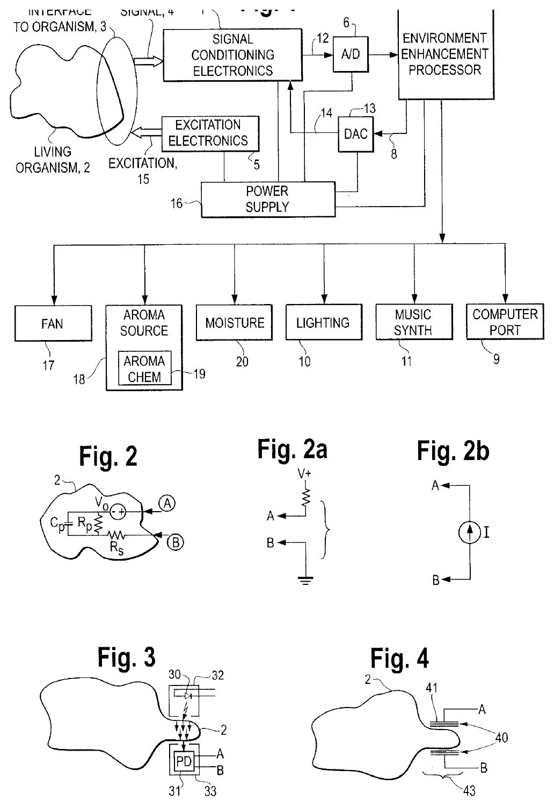
Fig. 4.7. Planche FIG. 1 de US 6 743 164. Le système complet : électronique d'excitation (5), interface (3), conditionnement du signal (1), convertisseur A/N (6), traitement numérique (7), et cinq sorties possibles — synthétiseur MIDI (9), contrôleur d'éclairage (10), ventilateur (17), source d'arômes (18), humidificateur (20).
Traduction des mentions de la planche
Mention d'origine
Traduction française
signal conditioning electronics
électronique de conditionnement du signal
excitation electronics
électronique d'excitation
interface
interface avec l'organisme
living organism
organisme vivant
ADC
convertisseur analogique / numérique
DAC
convertisseur numérique / analogique (décalage de niveau)
digital processing electronics
électronique de traitement numérique
MIDI music synthesizer
synthétiseur de musique MIDI
lighting controller
contrôleur d'éclairage
fan
ventilateur
aroma source
source d'arômes
moisture releaser
diffuseur d'humidité
computer port
port informatique
power supply
alimentation
La planche FIG. 2 introduit un modèle électrique du premier ordre de l'organisme, qui est l'outil de pensée le plus utile de tout le corpus.
Modèle électrique du premier ordre d'un organisme (FIG. 2 du brevet)
contact A contact B
│ │
▼ ▼
────────●──────────┬──────────────────●────────
│ │
┌──┴──┐ │
Rs ────┤ │ │
(résistance │ Rp │ ← résistance │ Cp ← capacité
série des │ │ parallèle │ parallèle
contacts) └──┬──┘ du tissu │ du tissu
│ │
───────────────────┴──────────────────┴────────
│
+ Vo (source de tension continue)
potentiel électrochimique d'OFFSET
LECTURE DU MODÈLE SELON LE BREVET
· Rp, Rs → micro-variations de RÉSISTANCE
reflètent teneur en eau et concentration ionique
· Cp → micro-variations de CAPACITÉ
« peuvent être représentatives de changements
d'équilibre chimique au sein de l'organisme »
· Vo → potentiel d'offset électrochimique,
« produit par la chimie de surface différentielle
entre les contacts aux points A et B »
⇒ mesurable SANS AUCUNE EXCITATION (mesure passive)
Ce modèle à quatre éléments est la carte mentale à garder en tête pendant toute mesure : trois grandeurs mesurables et une source parasite — ou utilisable.
🔬 Point scientifique
Le brevet distingue explicitement deux régimes de mesure, et c'est la distinction la plus importante du document.
Mesure active. On applique une excitation (tension ou courant) et on mesure la réponse. C'est ce que font tous les appareils du commerce. Le brevet propose deux montages : un diviseur de tension résistif (« tel qu'un côté d'un pont de Wheatstone », FIG. 2a) ou une source de courant (FIG. 2b).
Mesure passive. On ne fournit aucune excitation et on mesure directement les micro-variations de la tension d'offset Vo. Le brevet précise : « dans les modes de réalisation privilégiant la mesure purement passive, aucun signal d'excitation n'est nécessaire et l'électronique d'excitation 5 n'est donc pas employée. »
C'est la seule mention, dans tout le corpus, d'une mesure réellement non invasive. Elle est techniquement plus difficile — le signal est plus faible et Vo est précisément la grandeur la plus dérivante — mais elle est possible, et personne ne la commercialise. C'est une piste ouverte pour un projet DIY ambitieux, et nous y reviendrons en partie X.
Les interfaces sans contact : optique et capacitive
Les planches FIG. 3 et FIG. 4 décrivent deux interfaces qui n'établissent aucune connexion électrique avec l'organisme. Elles résolvent d'un coup tous les problèmes d'électrochimie d'interface exposés au chapitre 13.
Interface optique (FIG. 3)
Interface capacitive (FIG. 4)
Principe
Une LED éclaire le tissu ; un photodétecteur mesure la lumière transmise (ou réfléchie)
Deux plaques de part et d'autre du tissu forment un condensateur ; on mesure sa capacité
Grandeur
Micro-variations d'opacité, causées par les changements de composition chimique
Micro-variations de constante diélectrique
Composants cités
LED (30), photodiode ou photorésistance au sulfure de cadmium (31)
Plaques conductrices, oscillateur de mesure
Avantages
Aucun contact, aucune dérive électrochimique, aucun ion libéré
Aucun contact ; excellente sensibilité à l'eau
Difficultés
Sensible à la lumière ambiante et à la géométrie ; exige une chambre noire
Extrêmement sensible aux mains à proximité (le corps humain est un condensateur)
Les deux interfaces sans contact du brevet. Aucun appareil commercial ne les exploite — alors qu'elles suppriment la principale source d'artefact du domaine.
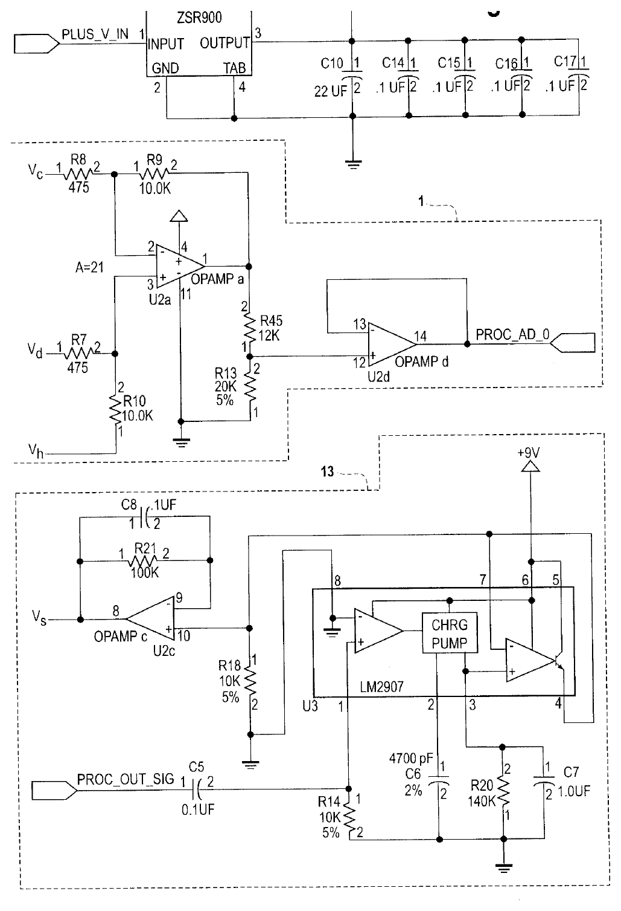
Fig. 4.8. Planche FIG. 3 : l'interface optique. Le module photo-émetteur (32) et le module photo-récepteur (33) encadrent une portion de l'organisme (2) ; le signal apparaît entre les bornes A et B.
Traduction des mentions de la planche
Mention d'origine
Traduction française
photo source module
module photo-émetteur
LED
diode électroluminescente
light sensing module
module de détection lumineuse
photo detector
photodétecteur (photodiode ou photorésistance)
organism
organisme
A / B
bornes de sortie du signal
Une astuce d'ingénierie : le delta-sigma improvisé
Comment obtenir 16 bits avec un convertisseur 8 bits
Le brevet décrit une technique de haut vol pour contourner la faible résolution des convertisseurs bon marché. Un convertisseur numérique/analogique (DAC 13), piloté par le processeur, injecte un signal de décalage de niveau (14) dans l'électronique de conditionnement. Le processeur déplace ainsi dynamiquement la fenêtre de mesure du convertisseur A/N, pour la maintenir centrée sur le signal.
Le brevet explique le gain : « Cela étend effectivement la plage dynamique du convertisseur A/N 6 à n'importe quelle valeur nécessaire, et la résolution du convertisseur delta-sigma global ainsi implémenté peut être choisie en réglant le gain global du conditionnement. » Il ajoute un raffinement : « un double échantillonnage rapide avant et après chaque ajustement du DAC permet à la non-linéarité différentielle de l'ensemble de rester presque aussi bonne que celle du convertisseur A/N seul. »
La limite est assumée : la non-linéarité intégrale se dégrade. Mais comme « l'application vise à mesurer des micro-variations à court terme, la non-linéarité intégrale n'est pas une préoccupation principale ». C'est un raisonnement d'ingénieur mature : on sacrifie une exactitude absolue dont on n'a pas besoin, pour gagner une résolution différentielle dont on a besoin.
🌿 Regard énergétique
Ce brevet contient une idée que le marché a complètement abandonnée, et qui mérite d'être reprise par les praticiens : le pilotage de l'environnement par la plante. Le processeur peut commander un humidificateur (20), un diffuseur d'arômes (18), un ventilateur (17), un éclairage d'ambiance (10).
Imaginez une pièce où la lumière, l'humidité et le mouvement de l'air suivent l'activité électrique d'un arbre en pot. Ce n'est plus de la musique : c'est un lieu accordé sur un vivant. Techniquement, tout est là depuis 2004, et le brevet est expiré. Il ne manque qu'un relais, un humidificateur d'appoint et quelques lignes de code. Pour qui pratique la géobiologie ou l'aménagement énergétique d'un espace, c'est probablement la piste la plus féconde de tout cet ouvrage.
US 10 636 400 et US 10 909 956 — la lignée PlantWave
Vingt ans après Damanhur, deux musiciens de Philadelphie déposent une paire de brevets qui déplacent la protection du capteur vers le traitement musical. Le document est moins élégant électroniquement — et bien plus précis algorithmiquement.
US 10 909 956 B2
Apparatus and method for producing and streaming music generated from plants
Inventeurs
Joseph William Patitucci · Jonathan Shapiro
Dates
Priorité 28 mai 2019 · dépôt 18 mars 2020 · délivrance 2 février 2021 · déchu pour non-paiement le 2 février 2025
Brevet parent
US 10 636 400 B2 — Method for producing and streaming music generated from biofeedback
Là où Damanhur consacrait huit planches à l'électronique, PlantWave expédie la question en un paragraphe — parce que le capteur n'est justement pas ce qu'il cherche à protéger :
Le micrologiciel libre du dispositif impose que les notes soient créées uniquement lorsqu'un changement de conductivité électrique est détecté dans la plante. Un temporisateur 555 en montage astable génère une onde de 1 kHz dans la plante. Les micro-fluctuations résultantes — autrement dit les impulsions — de la conductivité de la plante sont mesurées.
US 10 909 956 B2
Trois informations précieuses tiennent dans ces phrases.
Le micrologiciel est déclaré libre (open-source firmware) dans le texte même du brevet — cohérent avec la publication du code du MIDI Sprout sur dépôt public.
L'excitation est un signal alternatif de 1 kHz — ce qui, comme nous l'avons vu au chapitre 13, protège les électrodes de la polarisation et la plante du dépôt métallique.
La tension d'alimentation est de 3,3 V, envoyée aux électrodes fixées sur les feuilles.
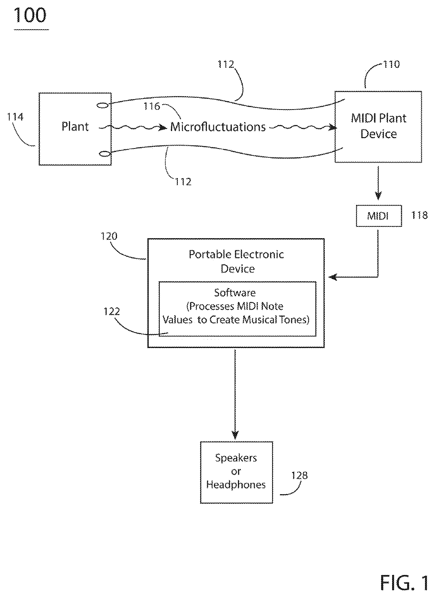
Fig. 4.9. Planche FIG. 1 de US 10 909 956. Chaîne minimale : la plante (114), les micro-fluctuations (116), le dispositif MIDI (110), la liaison MIDI (118), l'appareil portable et son logiciel (120, 122), les haut-parleurs (128).
Software (Processes MIDI Note Values to Create Musical Tones)
logiciel — traite les valeurs de notes MIDI pour produire des sons musicaux
Speakers or Headphones
haut-parleurs ou casque
L'algorithme, énoncé mot pour mot
Voici le cœur du brevet — et, à notre connaissance, la description la plus précise jamais publiée d'un algorithme de bio-sonification végétale. Nous le traduisons littéralement.
Algorithme de génération de notes — US 10 909 956, résumé
ÉTAPE 1 — ÉCHANTILLONNAGE
« Toutes les 10 millisecondes, un jeu d'échantillons de micro-
fluctuations est collecté et conservé dans un tableau de dix
échantillons par groupe, en vue de l'analyse. »
ÉTAPE 2 — LIGNE DE BASE
« Une fois les dix échantillons collectés, une moyenne et un
écart-type sont déterminés. »
baseline ← moyenne(échantillons)
sigma ← écart_type(échantillons)
ÉTAPE 3 — DÉTECTION
« Un delta est défini entre les échantillons minimum et maximum.
Si le delta est supérieur au produit (écart-type × seuil),
un changement est détecté. »
delta ← max(échantillons) − min(échantillons)
SI delta > sigma × seuil ALORS événement
ÉTAPE 4 — CRÉATION DE LA NOTE
« Une fois un changement détecté, une note est créée. La durée
de cette note est le delta, ramené entre 250 et 2500 ms. »
duree ← map(delta, 250 ms … 2500 ms)
ÉTAPE 5 — DIRECTION MÉLODIQUE
« Quand la conductivité augmente, les notes montent dans la
gamme ; quand la conductivité diminue, les notes descendent. »
ÉTAPE 6 — MESSAGES DE CONTRÔLE
« Outre la création de valeurs de notes MIDI à partir des ondes
de micro-fluctuations, une DÉRIVÉE de ces ondes sert à créer
les valeurs de contrôle MIDI. Comme cette sortie est pilotée
par une dérivée, les messages de contrôle correspondent aux
variations les plus AMPLES de l'activité électrique de la
plante, ajoutant une dimension aux micro-fluctuations. »
🔬 Point scientifique — pourquoi la dérivée ?
L'étape 6 est le trait de génie musical du brevet, et elle mérite un développement.
Le signal brut et sa dérivée portent des informations complémentaires. Le signal dit « où en est la plante ». La dérivée dit « à quelle vitesse cela change ». En pilotant les notes par le premier et les effets par la seconde, le système crée deux couches perceptives distinctes : une mélodie qui suit l'état, et un timbre qui suit la dynamique.
Musicalement, cela produit un effet immédiatement reconnaissable : lors d'une transition rapide — un changement de lumière, un courant d'air — non seulement les notes se déplacent, mais l'ensemble du paysage sonore s'ouvre ou se referme. L'auditeur perçoit un « événement » plutôt qu'une simple note. Techniquement, c'est un découplage classique en traitement du signal ; musicalement, c'est ce qui donne à PlantWave son caractère cinématographique.
La chaîne de traitement, brevetée en détail
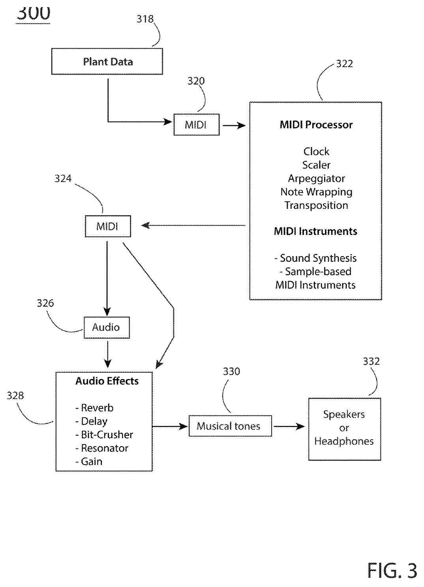
Fig. 4.10. Planche FIG. 3 : la chaîne logicielle. Le MIDI Processor (322) applique horloge, quantification de gamme, arpégiateur, repliement de notes et transposition. Les instruments MIDI (324) produisent l'audio (326), auquel les effets (328) — réverbération, délai, bit-crusher, résonateur, gain — sont appliqués et modulés par les CC issus de la plante.
Traduction des mentions de la planche
Mention d'origine
Traduction française
Plant Data
données issues de la plante
MIDI Processor
processeur MIDI
Clock
horloge maîtresse (tempo)
Scaler
quantificateur de gamme
Arpeggiator
arpégiateur
Note Wrapping
repliement des notes dans le registre
Transposition
transposition
MIDI Instruments
instruments MIDI
Sound Synthesis / Sample-based
synthèse sonore / à base d'échantillons
Audio
signal audio
Audio Effects
effets audio
Reverb / Delay / Bit-Crusher / Resonator / Gain
réverbération / délai / réduction de résolution / résonateur / gain
Musical tones
sons musicaux
Speakers or Headphones
haut-parleurs ou casque
Bloc de la chaîne
Fonction précise selon le brevet
Incidence perceptive
Horloge maîtresse
Fixe le tempo en battements par minute ou en échantillons par seconde
Impose une pulsation — étrangère à la plante
Bus MIDI
Distribue notes et CC vers plusieurs canaux
Permet la polyphonie et le multi-instruments
Scaler
Restreint le flux de notes à une gamme ou une tonalité
Supprime toute dissonance possible
Arpégiateur
Définit le nombre de notes exprimables par mesure
Ajoute des notes que la plante n'a pas produites
Note wrapping
Replie les notes hors registre dans l'octave utile
La chaîne complète brevetée. Les lignes « horloge » et « arpégiateur » méritent une attention particulière : ce sont les deux blocs qui créent de l'information musicale absente du signal d'origine.
⚠️ Limites et interprétation
Regardons les choses en face. Une chaîne complète avec horloge maîtresse, quantification de gamme et arpégiateur actif produit, à partir d'un signal biologique lent et pauvre, un flux musical dense, rythmé et consonant. Dans ce cas de figure, la part de la plante dans ce que vous entendez peut descendre en dessous de dix pour cent de l'information : elle fournit un déclenchement occasionnel et une direction mélodique ; l'horloge fournit le rythme, la gamme fournit l'harmonie, l'arpégiateur fournit la densité, les effets fournissent l'espace.
Ce n'est ni une fraude ni un défaut — c'est un choix de conception parfaitement légitime pour un produit destiné à la relaxation. Mais cela impose une règle d'honnêteté : pour toute écoute que vous présentez comme informative sur l'état d'une plante, désactivez l'horloge, l'arpégiateur et la quantification. Vous entendrez alors quelque chose de beaucoup plus pauvre, beaucoup plus lent, souvent long et silencieux — et infiniment plus véridique.
La revendication du flux
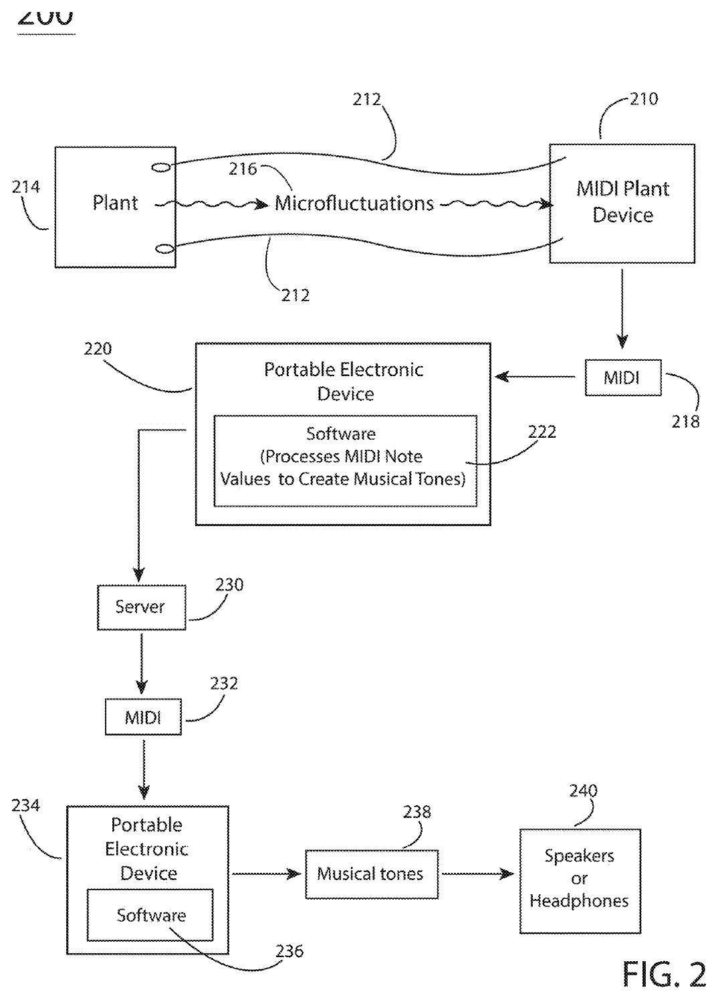
Fig. 4.11. Planche FIG. 2 : l'architecture de diffusion. Les valeurs MIDI transitent par un serveur (230) : un utilisateur peut émettre le flux MIDI de sa plante, ou recevoir celui de la plante d'un autre et le rendre avec ses propres instruments.
Traduction des mentions de la planche
Mention d'origine
Traduction française
Server
serveur
MIDI
flux de messages MIDI
Musical tones
sons musicaux restitués
Portable Electronic Device
appareil portable de l'auditeur
Cette architecture est astucieuse : le MIDI pèse quelques octets par seconde là où l'audio pèse des dizaines de kilo-octets. Une plante peut donc « jouer » en direct à l'autre bout du monde pour un coût réseau négligeable — et chaque auditeur l'entend avec sa propre palette sonore. Le même chêne breton peut sonner comme un piano à Tokyo et comme un gong à Montréal, à partir des mêmes données.
✨ Expérience intérieure
Il y a là, si l'on y songe, une image saisissante de ce qu'est toute perception. Les données de la plante sont identiques pour tous ; ce que chacun entend dépend entièrement de l'instrument qu'il a chargé. Nous faisons exactement cela, en permanence, avec le monde : nous recevons des signaux et nous les rendons avec notre propre banque de sons — notre histoire, notre culture, notre humeur du jour.
Le dispositif ne fait pas que produire de la musique. Il expose, de façon presque pédagogique, la structure de notre propre rapport au réel. C'est peut-être là sa contribution la plus durable.
À retenir
US 6 743 164 élargit la mesure à l'optique, au capacitif et au chimique, et prévoit une mesure passive jamais commercialisée.
Le modèle Rp / Rs / Cp / Vo est la carte mentale de référence pour toute mesure.
Le brevet prévoit le pilotage de lumière, d'arômes, d'humidité et d'air par la plante — piste inexploitée.
PlantWave : excitation NE555 à 1 kHz sous 3,3 V, fenêtres de 10 ms, détection sur écart-type × seuil, durées de 250 à 2 500 ms.
Les notes suivent le signal ; les effets suivent sa dérivée — d'où le caractère « cinématographique ».
Horloge, gamme et arpégiateur ajoutent de l'information musicale absente du signal : à désactiver pour toute écoute informative.
Les autres brevets du domaine
Huit documents complètent le corpus. Ils élargissent le sujet dans quatre directions : tout organisme, tout capteur, la voie inverse — de l'humain vers la plante — et l'agronomie de précision.
US 2010/0236383 — Peter Vogel : la généralisation australienne
US 2010/0236383 A1
Living organism controlled music generating system — Peter Samuel Vogel, Sydney
Priorité
20 mars 2009 (AU 2009901133) · publication 23 septembre 2010
Ce document, court et limpide, fait un pas conceptuel que les autres ne font pas : il dissocie complètement le capteur de l'organisme. Peu importe ce que l'on mesure et sur quoi ; ce qui compte, c'est la chaîne.
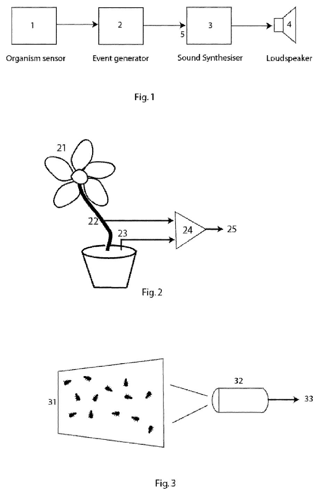
Fig. 4.12. Planches FIG. 1, 2 et 3 du brevet Vogel. En haut, la chaîne générique : capteur d'organisme (1) → générateur d'événements (2) → synthétiseur sonore (3) → haut-parleur (4). Au milieu, la déclinaison végétale : la plante (21), son électrode (22), la liaison (23), l'amplificateur (24) et la sortie (25). En bas, la déclinaison « colonie de fourmis » : la fourmilière (31) observée par une caméra (32).
Traduction des mentions de la planche
Mention d'origine
Traduction française
Organism sensor
capteur d'organisme
Event generator
générateur d'événements (décide QUAND une note se produit)
Sound Synthesiser
synthétiseur sonore
Loudspeaker
haut-parleur
Fig. 2 — repères 21 à 25
plante, électrode, liaison, amplificateur, sortie
Fig. 3 — repères 31 à 33
fourmilière, caméra, sortie vers le générateur
Le brevet énumère les capteurs utilisables, et cette liste est une mine d'idées pour qui veut sortir des sentiers battus :
Capteur proposé
Organisme visé
Grandeur
Faisabilité DIY
Capteur infrarouge de température
Animaux à sang froid (« variations cycliques intéressantes de température corporelle »)
Rayonnement thermique
Très facile — capteur MLX90614, quelques euros
Électrodes de surface
Plante
Activité électrique cellulaire
C'est le montage classique de cet ouvrage
Caméra vidéo + analyse de mouvement
Oiseau en volière, colonie de fourmis
Position, vitesse, densité d'activité
Facile — une caméra et quelques lignes de code
Capteur de pression, accéléromètre
Tout organisme mobile
Déplacement, vibration
Facile
Les capteurs envisagés par Vogel. La leçon est méthodologique : la bio-sonification n'est pas liée à l'électricité végétale — c'est une manière générale de rendre audible une dynamique lente.
✦ Idée clé
Vogel distingue deux fonctions que la plupart des dispositifs confondent : déclencher (trigger) et moduler (modulate). Le générateur d'événements décide quand une note se produit ; la modulation décide comment elle sonne. Cette séparation est exactement celle que PlantWave réalisera dix ans plus tard avec les notes d'un côté et les messages de contrôle de l'autre. Le brevet de 2009 l'avait déjà formalisée.
CN 109 523 982 et CN 209 471 746 — le Bamboo de Damanhur
CN 109 523 982 A · CN 209 471 746 U
Dispositif et méthode de génération de musique végétale — Solé S.r.l.
Déposant
Solé S.r.l., rue Baldissero 21, Vidracco, province de Turin — l'adresse même de la Fédération de Damanhur
Ces deux dépôts chinois — l'un brevet d'invention, l'autre modèle d'utilité — décrivent la génération suivante de l'appareil de Damanhur, celle du Bamboo. L'architecture a radicalement changé par rapport à 1999 : il ne s'agit plus d'un instrument de mesure à sortie MIDI, mais d'un objet autonome.
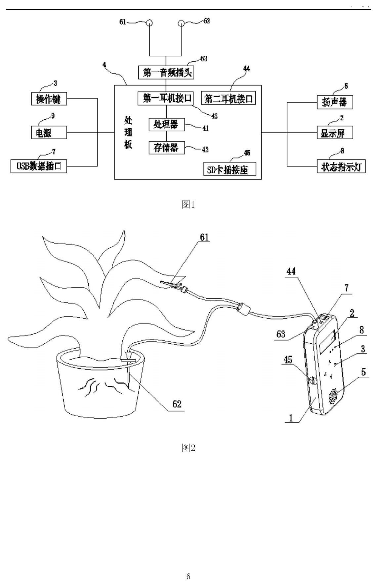
Fig. 4.13. Planche unique de CN 109 523 982 A. En haut, l'organigramme : deux électrodes de contact, acquisition du signal, processeur, mémoire contenant une bibliothèque audio, sortie sur haut-parleur. En bas, la mise en œuvre : deux pinces reliées à un boîtier vertical à écran.
Traduction des mentions de la planche
Mention d'origine
Traduction française
外壳
boîtier
显示屏
écran d'affichage
操作键
touches de commande
处理板
carte de traitement
处理器
processeur
存储器
mémoire
音频库
bibliothèque audio (échantillons préenregistrés)
扬声器
haut-parleur
第一接触电极
première électrode de contact
第二接触电极
seconde électrode de contact
电信号
signal électrique
采样
échantillonnage
说明书附图
planche de la description
Architecture revendiquée par CN 109 523 982 A
BOÎTIER (外壳)
· face avant : écran d'affichage (显示屏) + touches (操作键)
· à l'intérieur : carte de traitement (处理板) + haut-parleur (扬声器)
CARTE DE TRAITEMENT
┌─────────────────────────────────────────────────────────┐
│ PROCESSEUR (处理器) │
│ ▲ ▲ │ │
│ │ │ ▼ │
│ électrode 1 électrode 2 MÉMOIRE (存储器) │
│ (第一接触电极) (第二接触电极) contenant une │
│ au contact de la plante BIBLIOTHÈQUE AUDIO │
│ (音频库) │
└─────────────────────────────────────────────────────────┘
│
▼
HAUT-PARLEUR intégré
MÉTHODE REVENDIQUÉE — deux étapes seulement
① échantillonnage du signal électrique de la plante
② conversion du signal en audio, par EXTRACTION dans la
bibliothèque audio selon les variations du signal
Différence fondamentale avec le U1 : le Bamboo ne synthétise pas, il sélectionne des échantillons audio préenregistrés dans une bibliothèque interne, en fonction des variations mesurées.
⚠️ Limites et interprétation
Cette différence d'architecture a une conséquence directe sur ce que vous entendez, et il faut la connaître. Avec une synthèse, chaque note est calculée à partir de la mesure : la relation entre signal et son est continue. Avec une bibliothèque d'échantillons, le signal ne fait que choisir une case dans un catalogue fini. Le résultat est nécessairement plus musical — les échantillons ont été enregistrés par un musicien — et nécessairement plus éloigné de la donnée brute.
Concrètement : un boîtier à bibliothèque audio ne peut pas produire un son qu'aucun humain n'a d'abord enregistré. Ce que vous entendez appartient au fabricant autant qu'à la plante. Pour une séance de partage, c'est un excellent choix ; pour une observation, c'est le pire.
WO 2020/021334 — Plant Choir : l'algorithme de « riff »
WO 2020/021334 A1
System and method for generating music from electrodermal activity data
Dépôt
PCT/IB2019/000866 · publication 30 janvier 2020
Portée
Personnes, plantes et animaux, traités par le même système
Ce document est le plus intéressant du corpus sur le plan musical, parce qu'il résout un problème que les autres ignorent : comment faire jouer plusieurs organismes ensemble sans cacophonie ?
Sa réponse tient en quatre mécanismes, énoncés dans l'introduction du brevet :
Une gamme unique par sujet. « Les notes musicales sont sélectionnées pour chacun des sujets et synchronisées sur un réglage de tempo maître, afin de leur permettre de jouer ensemble et de créer des harmonies intéressantes, à la manière d'un chœur. »
Un algorithme de riff. « Un algorithme de riff peut être employé, qui permet de créer plusieurs notes par battement pour chaque sujet, afin de rendre la musique plus intéressante et de lui donner du mouvement. »
Le rendu par synthèse ou par échantillons. Le logiciel peut utiliser un synthétiseur ou des instruments réels échantillonnés.
La séquence personnalisable. « L'utilisateur peut définir ses propres séquences de notes ou gammes. »
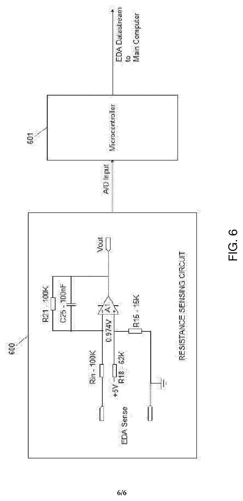
Fig. 4.14. Planche FIG. 6 de WO 2020/021334 : le capteur d'activité électrodermale se réduit à un circuit en pont de résistances (resistance bridge circuit) attaqué par un microcontrôleur — retour au principe de 1999, mais en version numérique intégrée.
Traduction des mentions de la planche
Mention d'origine
Traduction française
EDA Sensor
capteur d'activité électrodermale
Microcontroller
microcontrôleur
RESISTANCE BRIDGE CIRCUIT
circuit en pont de résistances
EDA Sensor Input
entrée du capteur électrodermal
🔬 Point scientifique
L'introduction de ce brevet contient une affirmation à traiter avec précaution. Elle énonce : « Des tests ont montré que les plantes présentent une réponse immédiate et prononcée à la chaleur et au mouvement d'objets chauds autour d'elles, tels que les animaux et les personnes. »
La première partie est parfaitement établie : un tissu végétal répond à la chaleur, et une variation thermique modifie l'impédance mesurée — nous l'avons vu, l'interface elle-même dérive de 0,2 à 2 mV par degré. La seconde partie — « tels que les animaux et les personnes » — est une extrapolation. Un corps humain à un mètre d'une plante modifie effectivement le signal mesuré, mais par au moins trois voies triviales : rayonnement infrarouge, convection d'air, et couplage capacitif électrostatique. Rien n'indique une perception spécifique de la présence.
Ce brevet a donc le mérite involontaire d'expliciter le mécanisme de la plupart des « réactions à la présence » observées en séance publique : c'est de la thermique et de l'électrostatique, pas de la reconnaissance.
La voie inverse : envoyer du son à la plante
Deux brevets prennent le problème à l'envers. Au lieu d'écouter la plante, ils lui appliquent un signal. Ils sortent du champ strict de la bio-sonification, mais ils intéressent directement quiconque veut travailler en boucle.
US 2003/0231781 — W. Billington
US 2022/0015302 — G. Holland
Titre
Applying audible sound frequency modulated electrical signal
Plant growth via vibrations
Principe
Un signal électrique modulé à des fréquences audibles est amplifié et appliqué à l'organisme « de manière non audible », par des plaques
Un actionneur génère une vibration mécanique, transmise à la plante par un transmetteur en contact
Source du signal
Source d'énergie audible quelconque
« Informations biométriques enregistrées telles qu'un battement de cœur, un pouls, des impulsions nerveuses »
Objectif affiché
Améliorer le bien-être des organismes vivants ; prolonger la conservation de fruits, légumes, viandes, fleurs
Favoriser la croissance de la plante
Statut
Publié, non délivré ; aucune validation indépendante
Les deux brevets « en sens inverse ». Le second est remarquable pour notre propos : il propose de transmettre à la plante le battement de cœur d'un humain.
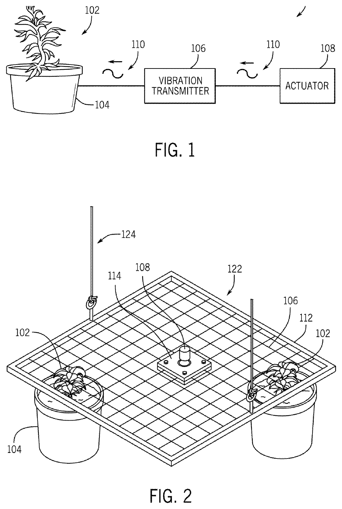
Fig. 4.15. Planche FIG. 1 de US 2022/0015302 : la plante (102) reçoit par son substrat un transmetteur de vibrations (106) piloté par un actionneur (108). La planche FIG. 2 montre une table vibrante accueillant plusieurs pots.
Traduction des mentions de la planche
Mention d'origine
Traduction française
plant (102)
plante
vibration transmitter (106)
transmetteur de vibrations
actuator (108)
actionneur
104
substrat / pot
Fig. 2 — 112, 114, 122, 124
table vibrante accueillant plusieurs pots
🌿 Regard énergétique
Voilà qui devrait retenir l'attention de tout praticien énergétique. Ce brevet propose exactement ce que beaucoup pratiquent intuitivement — mettre son cœur en relation avec la plante — mais sous une forme entièrement matérielle : un capteur de pouls, un actionneur, une vibration mécanique transmise au substrat.
Deux lectures s'offrent, et elles ne s'excluent pas. La première, prudente : ce dispositif montre qu'il existe un canal physique réel par lequel un rythme humain peut atteindre un végétal — le contact mécanique. La seconde, ouverte : si ce canal existe et fonctionne, alors la pratique traditionnelle des mains posées sur un tronc n'est peut-être pas seulement symbolique. Une main posée transmet de la chaleur, une pression, et le micro-mouvement de votre propre pouls.
Aucune étude ne démontre à ce jour d'effet sur la croissance. Mais le canal, lui, est physique et incontestable. Voilà un pont honnête entre le geste rituel et la mesure — et la partie VIII s'appuiera dessus.
CN 110 325 849 — le capteur agronomique néo-zélandais
Dernier document du corpus, et le plus rigoureux scientifiquement : un brevet de The New Zealand Institute for Plant and Food Research décrivant un capteur d'impédance végétale destiné au suivi de culture. Il ne produit aucune musique. Il intéresse pourtant directement le lecteur de cet ouvrage, pour une raison précise : c'est la version « qualité recherche » du même capteur, et il documente les précautions qu'un appareil grand public néglige — protocoles d'étalonnage, compensation thermique, géométrie d'électrode, traitement de la dérive.
Vogel (2009) généralise : tout organisme, tout capteur, et sépare déclencher de moduler.
Le Bamboo de Damanhur (dépôts chinois de 2018) sélectionne des échantillons dans une bibliothèque : plus musical, moins fidèle.
Plant Choir (2020) résout le jeu collectif par gamme commune, tempo maître et algorithme de riff.
Deux brevets travaillent en sens inverse, dont un qui transmet un battement de cœur humain à la plante par vibration mécanique.
Le brevet néo-zélandais offre la version métrologique du même capteur.
La quasi-totalité de ce corpus est expirée, déchue ou simplement publiée : vous pouvez tout reproduire.
PartieV
Comparatif des solutions existantes
« Le meilleur appareil est celui dont vous comprenez les choix. » Six dispositifs disponibles en 2026, disséqués sans complaisance : principe, fonctionnalités, prix, philosophie.
Méthode du comparatif
Avant les tableaux, un mot sur la façon dont ils ont été construits — et sur ce qu'ils ne peuvent pas vous dire.
Ce comparatif repose sur trois sources, hiérarchisées par fiabilité décroissante : les brevets et schémas publics, qui donnent l'architecture réelle ; les manuels et fiches techniques des fabricants, qui donnent les fonctionnalités et les prix ; et les retours de terrain documentés, notamment ceux publiés par Renaud Ruhlmann dans La Mélodie secrète des végétaux, qui donnent les défauts que personne n'annonce.
⚠️ Limites et interprétation
Trois avertissements. Un. Aucun protocole normalisé n'existe pour comparer la « qualité de signal » de ces appareils : il n'y a ni banc de test partagé, ni grandeur de référence, ni publication indépendante. Les appréciations portées ici sont donc argumentées à partir de l'architecture connue, jamais issues d'une métrologie comparative.
Deux. Les prix évoluent et varient selon la zone, la TVA et les promotions. Ils sont donnés comme ordres de grandeur à la date de rédaction, en 2026.
Trois. Cet ouvrage n'est ni sponsorisé, ni affilié, ni rémunéré par aucun fabricant, et ne comporte aucun lien commissionné.
Les sept critères qui comptent vraiment
Critère
Pourquoi il compte
Comment le vérifier avant d'acheter
Sortie MIDI physique
C'est ce qui vous rend libre : sans elle, vous êtes prisonnier de la banque de sons du fabricant
Chercher « MIDI OUT », prise DIN 5 broches ou jack TRS type A
Enregistrement du flux MIDI
Permet de rejouer, d'analyser, de comparer des séances
Vérifier que le fichier .mid est exportable hors de l'appareil
Réglage du seuil de déclenchement
Paramètre le plus influent sur ce que vous entendez
Seul mode honnête pour une observation ; sans lui, tout sonne juste
Vérifier la présence de « chromatique » dans la liste des gammes
Absence de radio pendant la mesure
Le Bluetooth émet à proximité immédiate du capteur haute impédance
Vérifier qu'un mode filaire existe et que la radio se désactive
Autonomie réelle
Une séance sérieuse dure une à trois heures ; un suivi, plusieurs jours
Lire l'autonomie annoncée, puis diviser par deux
Réparabilité et pérennité
Un appareil dépendant d'un serveur distant meurt avec l'entreprise
Vérifier si l'appareil fonctionne sans compte et sans réseau
Grille de choix. Le premier et le dernier critère sont, sur le long terme, les plus déterminants.
✦ Idée clé
Une règle simple résume tout le comparatif : un appareil qui sort du MIDI brut vous appartient ; un appareil qui ne sort que du son appartient à son fabricant. Avec du MIDI, vous choisissez vos instruments, vous archivez vos données, vous analysez, vous composez, et l'appareil vous survivra. Sans MIDI, vous écoutez pour toujours ce que quelqu'un d'autre a décidé que votre plante devait dire.
Les six dispositifs, fiche par fiche
De l'instrument italien assemblé à la main au montage à trente euros, six réponses différentes à la même question.
1. Music of the Plants — U1 Pro
U1 Pro
Music of the Plants / Fédération de Damanhur — Vidracco, Italie
Qui est derrière
La Fédération de Damanhur, écosociété du Piémont fondée au début des années 1970. Recherche sur la musique des plantes depuis 1975-1976. Appareils assemblés à la main, numérotés individuellement, garantie deux ans.
Principe technique
Pont de Wheatstone : la plante forme l'un des quatre bras, avec une résistance de référence commutable (4 MΩ ou 10,1 MΩ). Tension de déséquilibre de l'ordre du microvolt au millivolt, amplifiée d'un facteur 25 par un amplificateur d'instrumentation à cinq étages, puis numérisée. Boucle de nullification numérique par convertisseur fréquence/tension (intégrateur 220 ms). Cf. brevet US 6 487 817.
Fonctionnalités
Dix-sept gammes, dont Damanhurienne, Healing, Amérindienne, Japonaise, Arabe, Persane et chromatique. Trois diapasons : 426,7 · 432 · 440 Hz. Réglages de spatialisation, chorus, réverbération. Paramètres de sensibilité et de filtrage d'événement.
Accessoires
Sondes à pince pour feuille, sonde de sol, câble jack 3,5 mm, alimentation. Haut-parleur externe en option.
MIDI
Oui — sortie MIDI physique. C'est l'appareil historique de référence pour le pilotage d'un synthétiseur ou d'une station audionumérique.
Ce qu'on lui reconnaît. La fiabilité en usage intensif, unanimement soulignée par les utilisateurs de festival. L'étendue des réglages, sans équivalent. Un algorithme mûri sur plusieurs décennies. Et la présence de la gamme chromatique, qui en fait le seul appareil de cette gamme de prix utilisable pour une observation honnête.
Ce qu'on lui reproche. Le prix. L'ergonomie austère, héritée d'une conception d'instrument de mesure plus que de produit grand public. L'absence d'application mobile moderne. Et un discours d'accompagnement qui verse parfois dans l'affirmation — l'idée que les arbres « apprennent à contrôler leurs émissions » relève de l'interprétation, non du résultat.
2. Music of the Plants — Bamboo M
Bamboo M
Music of the Plants / Solé S.r.l. — Vidracco, Italie
Qui est derrière
Même maison. Lancé en 2017, destiné aux animateurs, enseignants et promeneurs.
Principe technique
Capteur de même famille, mais architecture de sortie différente : selon les dépôts chinois CN 109 523 982 et CN 209 471 746, le processeur extrait des échantillons dans une bibliothèque audio interne en fonction des variations mesurées, au lieu de synthétiser.
Fonctionnalités
Boîtier autonome en bois, écran, touches de façade, haut-parleur intégré, batterie rechargeable. Même palette de gammes et de diapasons que le U1.
Accessoires
Sondes, câble de charge, housse. Haut-parleur externe en option.
MIDI
Sortie jack 3,5 mm présente ; vérifier au cas par cas selon la génération.
Les retours de terrain sur les premières générations de Bamboo ont été sévères et méritent d'être rapportés : impossibilité de relire sur ordinateur la carte microSD d'enregistrement, ergonomie d'écran laborieuse, boîtier en bois non verni se rayant vite, et surtout des défaillances en usage répété — deux exemplaires sont tombés en panne simultanément lors d'un concert du Festival international de la musique des plantes en 2020. Les générations suivantes ont corrigé une partie de ces points, mais le retour d'expérience invite à privilégier le U1 pour tout usage professionnel.
À cela s'ajoute la limite structurelle de l'architecture à bibliothèque audio, exposée au chapitre 19 : ce que vous entendez a d'abord été enregistré par un musicien. C'est excellent pour partager une émotion, inadapté pour observer.
3. PlantWave (ex-MIDI Sprout)
PlantWave
Data Garden — Philadelphie, États-Unis
Qui est derrière
Joe Patitucci et Jonathan Shapiro, musiciens, fondateurs du label zéro déchet Data Garden. L'appareil s'appelait MIDI Sprout de 2014 à 2020.
Principe technique
Temporisateur NE555 en montage astable générant une onde de 1 kHz dans la plante sous 3,3 V ; la résistance du limbe module la période. Microcontrôleur mesurant les impulsions par interruption, détection statistique sur fenêtres de 10 ms, seuil = écart-type × coefficient. Notes de 250 à 2 500 ms ; messages de contrôle dérivés de la dérivée du signal. Cf. brevet US 10 909 956.
Fonctionnalités
Jusqu'à 8 notes simultanées. Six gammes : chromatique, majeure, mineure, indienne, pentatonique majeure, pentatonique mineure. Application avec 12 banques sonores incluses, davantage par abonnement. Douze à trente-cinq univers sonores selon la formule.
Accessoires
Électrodes adhésives à pression (type ECG) et pinces pour petites feuilles, câble USB 3.0 vers USB-C.
MIDI
Oui, et complet — jack 3,5 mm type A, USB-C, MIDI réseau par WiFi, et Bluetooth via une application passerelle.
Autonomie
22 à 24 h annoncées, extensibles en désactivant les LED
Ce qu'on lui reconnaît. Le meilleur rapport fonctionnalités/prix du marché. Une connectique MIDI exhaustive. Une documentation soignée, traduite en français. Et surtout un héritage open source : le schéma et le code du MIDI Sprout restent publics, ce qui en fait la base de toute la scène DIY.
Ce qu'on lui reproche. Le Bluetooth, qui rayonne à quelques centimètres d'un capteur haute impédance — critique formulée de longue date et qui n'est pas infondée, même si elle est souvent exagérée : l'émission est brève, à 2,4 GHz, très au-dessus de la bande utile, et le mode filaire reste disponible. Plus sérieusement : le modèle par abonnement pour les banques sonores, et une application dont la richesse peut masquer la pauvreté du signal sous-jacent.
4. PlantsPlay 2
PlantsPlay 2
Edoardo Taori — Pouilles, Italie
Qui est derrière
Edoardo Taori, diplômé en musicologie, fondateur du label Sostanze Records puis du PlantsPlay Orchestra. Conception d'origine en 2017 avec Frederica Zizzari et quatre ingénieurs.
Principe technique
Capteur de biofeedback à deux électrodes sur feuille ou tronc, transposition des variations bioélectriques en événements musicaux. Architecture dérivée du principe du polygraphe, développée par une équipe d'ingénieurs dédiée.
Fonctionnalités
Plus de 37 instruments réels et électroniques. Gammes, octaves et diapason réglables (420 · 432 · 440 Hz). Effets : délai, réverbération, chorus, enveloppe. Graphique d'activité électrique en temps réel — fonctionnalité rare et précieuse. Enregistrement simultané audio, MIDI et vidéo, partage direct. Jusqu'à quatre appareils connectés ensemble.
Accessoires
Câble d'électrodes standard, deux paires de pastilles adhésives réutilisables pour feuilles épaisses et troncs, pinces pour feuilles fines, fleurs délicates et champignons, étui en bioplastique végétal PA11, câble USB-C avec adaptateur USB-A.
MIDI
Oui — par Bluetooth et par USB ; Control Change n° 80 affecté par défaut.
Autonomie
Batterie lithium rechargeable, 20 h annoncées
Prix
Environ 300 à 375 € · garantie deux ans, rétractation 14 jours
Ce qu'on lui reconnaît. Le meilleur compromis nomadisme/fonctionnalités. La possibilité d'enregistrer simultanément audio, MIDI et vidéo depuis l'application — aucun autre boîtier portable ne le fait. Le graphique d'activité en temps réel, qui permet de corréler visuellement une note à un événement du signal : c'est l'outil pédagogique le plus utile de tout le marché. Les pinces adaptées aux champignons, que personne d'autre ne fournit.
Ce qu'on lui reproche. La dépendance à l'application mobile, donc à un écosystème dont la pérennité n'est pas garantie. Et le fonctionnement principalement Bluetooth, avec la même réserve que ci-dessus.
5. Pocket Scion
Pocket Scion
Instruo (Écosse) × Modern Biology (États-Unis)
Qui est derrière
Deux fabricants issus du monde du synthétiseur modulaire. L'approche est celle de l'instrument de musique, non du produit de bien-être.
Principe technique
Mesure d'impédance bioélectrique, conversion en MIDI et en son. Jusqu'à 5 notes simultanées, plages de notes configurables.
Fonctionnalités
Instruments embarqués : l'appareil fonctionne sans ordinateur ni téléphone. Configuration par application de bureau (Windows, macOS, Linux). Pilotage possible en Open Sound Control.
Alimentation
3 piles AAA — non rechargeables
MIDI
Oui — jack TRS 3,5 mm type A, USB micro-B, USB-MIDI
Prix
Environ 140 à 150 € (149 $)
Ce qu'on lui reconnaît. L'autonomie fonctionnelle totale : pas de compte, pas de serveur, pas d'abonnement, pas de radio. Une application de configuration disponible sous Linux — détail rare, et révélateur d'une culture technique. Le meilleur choix pour un musicien de studio ou un utilisateur de synthétiseur modulaire.
Ce qu'on lui reproche. Les piles non rechargeables. L'absence d'interface graphique de visualisation du signal. Et une documentation orientée musicien, peu explicite sur la physique de la mesure.
6. Biotron
Biotron
Playtronica
Principe technique
Conversion d'impédance bioélectrique en MIDI par deux entrées de capteurs distinctes — une pour la plante, une pour la lumière — affectées à des canaux MIDI séparés. Une voix par canal.
Fonctionnalités
Réglages par navigateur web. Micrologiciel libre.
Alimentation
USB-C uniquement, pas de batterie — appareil de bureau
MIDI
Oui, par USB-C
Prix
Environ 125 à 135 €
Ce qu'on lui reconnaît. Le prix le plus bas du marché pour un appareil tout fait. Le micrologiciel libre, qui garantit la pérennité et permet la modification. Et la double entrée : pouvoir corréler l'activité de la plante avec la lumière ambiante, sur deux canaux, est précisément ce qu'il faut pour écarter un artefact — c'est, à ce prix, une fonctionnalité de métrologie.
Ce qu'on lui reproche. L'absence totale de mobilité : câble USB obligatoire, donc secteur ou batterie externe, donc masse de l'ordinateur reliée au montage — la pire configuration possible pour le bruit à 50 Hz. Une seule voix par canal.
Tableaux comparatifs
Quatre grilles de lecture : la synthèse générale, la technique, l'usage, et la philosophie sous-jacente.
Tableau de synthèse
Solution
Prix
MIDI
Portable
Qualité signal
Philosophie
U1 Pro Damanhur
600–670 €
Oui, DIN/jack
Non — secteur
Élevée — pont + asservissement, 17 gammes dont chromatique
Instrument de recherche et de concert. Le végétal comme partenaire à long terme.
Médiation et pédagogie. Faire entendre vite, à un public, sans matériel.
PlantWave Data Garden
280–300 €
Oui, complet — jack, USB, WiFi, BLE
Oui — 22 h
Bonne — NE555, détection statistique documentée
Produit grand public soigné. Le beau son d'abord, l'accès élargi.
PlantsPlay 2 E. Taori
300–375 €
Oui — BLE + USB
Oui — 20 h, très compact
Bonne — graphique temps réel disponible
Création et partage. L'appareil comme instrument d'un orchestre végétal.
Pocket Scion Instruo × Modern Biology
140–150 €
Oui — TRS-A, USB
Oui — 3 piles AAA
Bonne — autonome, sans radio
Instrument de musicien. Intégration au studio et au modulaire.
Biotron Playtronica
125–135 €
Oui — USB-C
Non — filaire
Correcte — double entrée plante + lumière
Objet ouvert et modifiable. Le libre plutôt que le fini.
DIY MIDI Sprout Vous
25–40 €
Oui — DIN 5 broches
Oui — 3 piles AA
Variable — dépend entièrement de votre soin
Comprendre en fabriquant. Le savoir plutôt que le produit.
Synthèse générale. Aucune colonne « note globale » n'est proposée : le meilleur appareil dépend strictement de ce que vous comptez en faire.
Tableau technique
Critère
U1 Pro
Bamboo M
PlantWave
PlantsPlay 2
Pocket Scion
Biotron
Architecture du capteur
Pont de Wheatstone
Pont (dérivé)
Astable NE555
Pont résistif
Impédance
Impédance
Excitation
≈ 4 V continu
n. c.
1 kHz / 3,3 V
n. c.
n. c.
n. c.
Polyphonie
Réglable
Réglable
8 notes
Réglable
5 notes
1 par canal
Nombre de gammes
17
17
6
Réglable
Configurable
Configurable
Mode chromatique
Oui
Oui
Oui
Oui
Oui
Oui
Diapasons
426,7 / 432 / 440
426,7 / 432 / 440
440
420 / 432 / 440
440
440
Visualisation du signal
Non
Non
Partielle
Oui, temps réel
Non
Non
Export MIDI fichier
Via DAW
Limité
Via DAW
Oui, natif
Via DAW
Via DAW
Fonctionne sans réseau
Oui
Oui
Oui (filaire)
Partiellement
Oui
Oui
Micrologiciel libre
Non
Non
Partiel (héritage)
Non
Non
Oui
Alimentation
Secteur
Batterie
Batterie 22 h
Batterie 20 h
3 × AAA
USB-C
Garantie
2 ans
2 ans
1 an
2 ans
n. c.
n. c.
Comparaison technique. « n. c. » signale une donnée non communiquée par le fabricant ; le vide documentaire est lui-même une information.
Quel appareil pour quel usage ?
Votre usage principal
Choix recommandé
Pourquoi
Séances d'écoute en cabinet, accompagnement individuel
U1 Pro
Fiabilité, palette de gammes, sortie MIDI, pas de dépendance réseau
Animation en forêt, sortie scolaire, médiation
Bamboo M
Autonome, haut-parleur intégré, rien d'autre à transporter
Création musicale, studio, composition
PlantWave ou Pocket Scion
MIDI complet, intégration DAW immédiate
Synthétiseur modulaire, scène électronique
Pocket Scion
Conçu par des fabricants de modulaire, sans radio
Documentation, archivage, comparaison d'espèces
PlantsPlay 2
Seul à enregistrer audio + MIDI + vidéo et à afficher le signal
Expérimentation, bricolage, modification
Biotron ou DIY
Micrologiciel libre, double entrée, prix
Comprendre vraiment le phénomène
DIY
On ne comprend un capteur qu'en le soudant
Observation rigoureuse avec témoin
Deux appareils identiques, quels qu'ils soient
Sans témoin, aucune observation n'est interprétable
Grille de décision. La dernière ligne est la plus importante et la plus ignorée : deux appareils bon marché valent mieux qu'un seul appareil coûteux.
🌿 Regard énergétique
Une remarque que ces tableaux ne peuvent pas contenir. Les praticiens de longue durée rapportent presque tous un attachement à leur appareil, et une difficulté à en changer — comme un musicien avec son instrument. Ce n'est pas irrationnel : chaque boîtier a ses constantes de temps, son seuil, sa façon de répondre. On apprend à le lire, on anticipe ses réactions, on distingue son « grain » habituel d'un événement inhabituel. Cette familiarité est une compétence perceptive réelle, et elle prend des mois.
Conséquence pratique : ne changez pas d'appareil tous les six mois. Prenez-en un que vous pourrez garder dix ans — ce qui, au passage, redonne du poids aux critères de réparabilité et d'indépendance au réseau. L'appareil parfait n'existe pas ; l'appareil que vous connaissez par cœur, si.
Les quatre philosophies du domaine
Derrière les fiches techniques, quatre visions du rapport au végétal s'affrontent discrètement. Les identifier vous aidera à choisir — et à comprendre les désaccords du milieu.
Philosophie
Représentants
Postulat implicite
Risque propre
Relationnelle
Damanhur, U1
La plante est un partenaire qui apprend ; l'appareil est une interface de dialogue
Attribuer à la plante des intentions non démontrées
Esthétique
PlantWave, Data Garden
« En tant qu'artistes plus que scientifiques, nous servons mieux la compréhension en partageant l'expérience »
Que le traitement musical recouvre le signal
Instrumentale
Pocket Scion, Biotron
La plante est une source de commande parmi d'autres, au service de la musique
Perdre de vue le vivant derrière le contrôleur
Thérapeutique et agronomique
Gaujacq, Thoby
Le signal est un indicateur d'état exploitable en culture et en accompagnement
Devancer la validation clinique
Les quatre familles. Aucune n'est illégitime ; chacune porte un risque propre, qu'il vaut mieux connaître que nier.
À retenir
Critère décisif : une sortie MIDI physique vous rend indépendant du fabricant.
U1 Pro pour la fiabilité et la profondeur de réglage ; Bamboo M pour la médiation ; PlantWave pour le rapport prix/fonctions ; PlantsPlay 2 pour la documentation ; Pocket Scion pour le studio ; Biotron et DIY pour l'expérimentation.
Un appareil à bibliothèque d'échantillons est plus musical et moins fidèle qu'un appareil à synthèse.
Deux appareils identiques, pour disposer d'un témoin, valent mieux qu'un seul haut de gamme.
Aucun protocole normalisé n'existe pour comparer la qualité de signal : toute note globale serait une invention.
PartieVI
Utilisation pratique et manuels
« Trente minutes avant que la séance commence vraiment. » Protocole complet de connexion, manuels opérationnels en français de chaque appareil, et intégration MIDI dans une station audionumérique.
Le protocole de connexion à une plante
Sept temps, quarante-cinq à soixante minutes. Ce protocole est valable quel que soit l'appareil ; il condense l'essentiel de ce que l'expérience de terrain a appris.
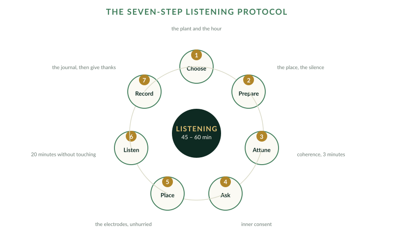
Fig. 6.1. Le protocole en sept temps. Les temps 1 à 4 préparent, le temps 5 engage, le temps 6 observe, le temps 7 clôt. Sauter un temps ne fait pas gagner du temps : cela produit une séance inexploitable.
Temps 1 — Choisir la plante et l'heure
Temps 1 · durée 5 min
Choisir
Objectif Maximiser les chances d'un signal exploitableMatériel Aucun
Critères de choix du végétal
Feuilles souples et charnues, plus larges que l'électrode. Les fabricants convergent : préférez les feuilles fines et souples aux succulentes.
Vitalité plutôt que perfection. Une plante sauvage ou cultivée avec soin donne un meilleur signal qu'un sujet de production industrielle. Les plants de jardinerie sont souvent enduits d'un revêtement fongicide qui isole électriquement le limbe.
Plante non arrosée depuis au moins douze heures. Un arrosage récent provoque une chute franche du registre puis une remontée sur plusieurs heures : vous entendrez l'eau, pas la plante.
Plante en place depuis plusieurs jours. Un végétal déplacé le matin même est en réponse au stress de transport.
Choix de l'heure
L'électrome suit un rythme circadien robuste de vingt-quatre heures. Deux fenêtres sont intéressantes pour des raisons opposées.
Milieu de matinée (9 h – 11 h) : stomates ouverts, activité photosynthétique établie, signal ample et vivant. Fenêtre de référence pour une première séance.
Fin de soirée ou nuit : activité plus lente, moins de perturbations humaines, moins de bruit secteur. Fenêtre de référence pour une observation fine ou un enregistrement long.
À éviter : les transitions lumineuses. Les vingt minutes qui suivent l'allumage d'une lampe ou l'ouverture d'un volet produisent une modification de densité rythmique qui sera immanquablement interprétée comme une « réaction ».
Temps 2 — Préparer le lieu
Temps 2 · durée 10 min
Préparer
Objectif Éliminer les sources d'artefactMatériel Thermomètre, hygromètre si possible
Couper ce qui rayonne. Éloignez d'au moins deux mètres les alimentations à découpage, chargeurs, blocs secteur, néons, variateurs de lumière. Ce sont les premières sources du trille métronomique à 50 Hz.
Fermer les ouvertures. Un courant d'air fait bouger la feuille et produit des événements brefs et graves, isolés, très convaincants — et parfaitement mécaniques.
Poser sur une surface lourde et stable. Une table qui vibre au passage d'un camion est un capteur sismique involontaire.
Noter les conditions. Température, hygrométrie, heure, luminosité, espèce, date du dernier arrosage. Trois lignes dans un carnet : c'est ce qui distinguera plus tard une observation d'une impression.
Préparer le témoin, si vous en disposez : un second appareil sur une plante identique, ou sur un pot de terreau humide sans plante.
Temps 3 — S'accorder soi-même
Temps 3 · durée 3 à 5 min
S'accorder
Objectif Réduire votre propre contribution au bruitJustification Métrologique et énergétique
Ce temps est le plus souvent escamoté, et c'est une erreur — y compris pour qui ne s'intéresse qu'à la technique. Un opérateur agité produit du couplage capacitif, du déplacement d'air, des micro-chocs sur la table et un rayonnement thermique instable. La stabilisation de l'opérateur est une exigence de mesure avant d'être une posture spirituelle.
Cohérence 5 / 5
Assis, dos droit, sans appui sur la table qui porte le montage. Inspirez sur cinq secondes, expirez sur cinq secondes. Six cycles par minute. Trois minutes suffisent — soit dix-huit respirations.
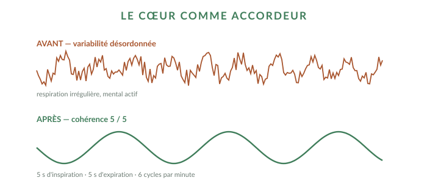
Fig. 6.2. Effet de la cohérence 5/5 sur la variabilité cardiaque. Ce que l'on gagne pour la mesure : moins de mouvements, moins de dérive thermique, moins de manipulation.
Repère. Vous êtes prêt quand vous n'avez plus envie de vérifier l'écran.
Temps 4 — Demander
Temps 4 · durée 1 à 2 min
Demander
Objectif Poser l'intention et le cadreRegistre Symbolique et relationnel — assumé comme tel
Ce temps n'a aucune justification physique, et l'ouvrage ne prétendra pas le contraire. Il a en revanche deux fonctions parfaitement réelles.
Pour vous : il marque le passage d'un état de préparation à un état d'écoute. C'est un seuil. Toutes les traditions en posent un, parce que l'attention humaine a besoin d'être convoquée.
Pour votre rapport au végétal : il installe une posture de demande plutôt que de prélèvement. Ce n'est pas rien : c'est toute la différence entre « j'utilise cette plante » et « je passe un moment avec elle ».
Formulez intérieurement, ou à voix basse, quelque chose de simple : ce que vous venez faire, combien de temps, et ce que vous laisserez en partant. Puis attendez quelques secondes. Si un refus intérieur se manifeste — et cela arrive —, changez de plante ou de jour.
Temps 5 — Poser les électrodes
Temps 5 · durée 5 min, puis 30 min d'attente
Poser
Objectif Établir un contact stable et réversibleMatériel Électrodes, eau savonneuse tiède, chiffon doux
Préparation du limbe
Nettoyez délicatement deux feuilles à l'eau légèrement savonneuse, pour retirer le revêtement fongicide appliqué en pépinière. Séchez complètement.
Choisissez des feuilles plus grandes que l'électrode : le contact est meilleur et le retrait plus sûr.
Visez le tiers basal du limbe, face inférieure, sur la feuille mature la plus jeune. C'est le site que l'étude de 2026 sur Clivia identifie comme le plus discriminant. Évitez la nervure centrale.
Pose
Assemblez d'abord l'électrode sur son câble, avant de la poser sur la feuille. Clipser un bouton-pression sur une pastille déjà collée exerce une pression excessive sur le limbe.
Retirez le film protecteur, appliquez sans appuyer.
Avec des pinces, serrez le minimum nécessaire pour que cela tienne. Une marque blanche après retrait signale un écrasement cellulaire.
Laissez du mou dans les câbles et fixez-les à un point stable. Toute traction se transmet au contact.
Branchez sur l'entrée électrodes de l'appareil, puis allumez.
Puis attendez trente minutes avant de considérer que la séance a commencé. C'est le temps de stabilisation de l'interface métal/tissu. Tout ce que vous entendez pendant cette demi-heure est dominé par la dérive d'installation. Beaucoup de « réveils » et de « prises de contact » spectaculaires ne sont que cela.
Retrait — la seule manœuvre qui peut blesser la plante. Décollez toujours la pastille de la base vers la pointe de la feuille, en soutenant le limbe de l'autre main près du pétiole. Comptez jusqu'à une minute par pastille. Un arrachage rapide emporte l'épiderme.
Temps 6 — Écouter
Temps 6 · durée 20 à 40 min
Écouter
Objectif Recueillir sans intervenirRègle d'or Ne rien toucher
La discipline du temps 6 tient en une phrase : vous ne touchez plus rien. Ni la plante, ni les câbles, ni les réglages. Chaque modification de paramètre en cours de séance rend la séance incomparable à toute autre — et vous privez de la seule chose qui vaille : une série homogène.
Ce qu'il faut écouter
Dimension
Ce qu'elle indique
Notation suggérée
Densité d'événements
Intensité de l'activité de fond
notes par minute, comptées sur 3 min
Registre moyen
Niveau d'impédance, donc état hydrique du trajet
grave / médium / aigu
Régularité
Stabilité du contact et du milieu
régulier / irrégulier / par bouffées
Silences
Le plus intéressant, et le plus négligé
durée du plus long silence
Ruptures
Événement à corréler avec le carnet
heure exacte + ce qui se passait
Le silence n'est pas une panne. Une plante stable, dans un milieu stable, avec un contact stabilisé, ne déclenche pas. C'est même le signe d'une bonne installation. Si votre appareil joue en continu pendant quarante minutes, suspectez d'abord un seuil trop bas ou un artefact permanent.
Temps 7 — Consigner et clore
Temps 7 · durée 5 min
Consigner
Objectif Transformer une impression en donnéeMatériel Journal de perception (modèle en partie VIII)
Notez les cinq dimensions du tableau ci-dessus, avant de formuler la moindre interprétation.
Dans une seconde colonne, séparée, notez votre ressenti et vos hypothèses. Les deux colonnes ne doivent jamais se mélanger.
Retirez les électrodes selon la manœuvre décrite au temps 5.
Donnez de l'eau si la plante en a besoin, remettez-la à sa place habituelle.
Clôturez explicitement : un mot, un geste. On ne laisse pas une relation ouverte.
Les douze erreurs à éviter
Erreur
Ce qu'elle produit
Correction
Écouter dès le branchement
On prend la dérive d'installation pour un « réveil »
Attendre 30 min
Arroser juste avant
Chute puis remontée du registre sur 2 à 6 h
Arroser 12 h avant, au minimum
Pinces en cuivre ou laiton nus
Dérive forte, et libération d'ions Cu²⁺ phytotoxiques
Inox 316L, Ag/AgCl ou or
Serrer fort pour « bien capter »
Écrasement cellulaire, lésion, signal de blessure
Serrage minimal, ou pastille adhésive
Rester debout à côté, bouger
Couplage capacitif synchrone de vos gestes
S'asseoir à plus d'un mètre, rester immobile
Régler le seuil en cours de séance
Séance non comparable, aucune série possible
Régler avant, ne plus toucher
Laisser une gamme pentatonique en observation
Impossible d'entendre une dissonance, donc un événement
Chromatique pour observer, gamme pour partager
Travailler sans témoin
Aucune conclusion n'est interprétable
Deuxième canal sur terreau nu
Ne pas noter les conditions
Impossible de retrouver la cause d'un événement
Trois lignes systématiques
Séances trop courtes
On n'observe que la phase transitoire
45 min minimum, 2 h pour une observation
Laisser les électrodes en place des jours
Nécrose sous la pastille, dérive totale
4 h maximum, puis repos de 24 h
Arracher les pastilles
Épiderme emporté, blessure durable
Décoller base → pointe, 1 min
Les douze erreurs classiques. Les quatre premières concernent l'installation, les quatre suivantes le protocole, les quatre dernières le respect du végétal.
✨ Expérience intérieure
Une chose se produit, presque toujours, vers la vingt-cinquième minute du temps 6. L'impatience tombe. On cesse d'attendre quelque chose. On entend alors le silence entre les notes comme faisant partie de la musique, et non comme un manque.
Ce basculement n'a rien à voir avec la plante. Il tient à ce que le système nerveux humain met environ vingt minutes à quitter un état d'attente. C'est exactement la durée que met un contact d'électrode à se stabiliser. La coïncidence est troublante — et elle a une conséquence pratique : le moment où l'appareil devient fiable est aussi celui où vous devenez capable d'écouter. Les deux stabilisations sont indépendantes ; elles se rejoignent.
À retenir
Sept temps : choisir, préparer, s'accorder, demander, poser, écouter, consigner.
Trente minutes de stabilisation avant que la séance commence réellement.
Site de pose : tiers basal, face inférieure, feuille mature la plus jeune, nettoyée à l'eau savonneuse.
Retrait toujours de la base vers la pointe, en soutenant la feuille, jusqu'à une minute.
Ne rien toucher pendant l'écoute ; noter faits et interprétations dans deux colonnes séparées.
Le silence est un résultat, pas une panne.
Manuels opérationnels
Marche à suivre complète pour chaque appareil du marché, traduite et réorganisée en séquence d'usage réelle. Ces pages sont faites pour être posées à côté du boîtier.
⚠️ Limites et interprétation
Ces manuels sont établis d'après la documentation publique des fabricants à la date de rédaction et réorganisés selon la logique d'usage. Ils ne remplacent pas la notice livrée avec votre appareil, qui fait foi — notamment pour la garantie, la sécurité électrique et les mises à jour. Les micrologiciels évoluent : vérifiez les libellés de menus sur votre version.
Manuel — PlantWave
Manuel opérationnel
PlantWave — Data Garden
Contenu de la boîte Boîtier · câble USB 3.0 vers USB-C · pastilles d'électrodes · conducteurs (câbles à bouton-pression) · pinces pour petites feuillesCommandes Bouton d'alimentation · voyant d'état · bouton Mode / Appairage · sortie MIDI jack 3,5 mm · port USB-C
1. Première charge — à faire avant tout
Reliez le câble USB 3.0 vers USB-C fourni entre une source d'alimentation 5 V et le port USB-C de l'appareil.
Chargez deux à quatre heures avant la première utilisation.
Autonomie ensuite : 22 à 24 heures par défaut, davantage si vous désactivez les animations lumineuses dans les réglages de l'application.
2. Préparer la plante
Nettoyez délicatement deux feuilles à l'eau légèrement savonneuse, pour retirer le revêtement fongicide de pépinière qui isole le limbe.
Séchez complètement.
Choisissez des feuilles plus grandes que les pastilles : meilleure variation de conductivité, et retrait plus facile.
3. Poser les électrodes
Sortez une paire de pastilles de son sachet en laissant le film protecteur en place.
Clipsez d'abord les boutons-pression des conducteurs au dos des pastilles. Faire l'inverse exercerait une pression excessive sur la feuille.
Retirez les films protecteurs et appliquez les pastilles sur deux feuilles.
Variante pour petites feuilles : utilisez directement les pinces, une par feuille.
Branchez les conducteurs sur l'entrée électrodes du boîtier.
4. Appairer à l'application
Sous iOS : installez l'application depuis l'App Store. Allumez le boîtier. Dans l'application, touchez Connect, puis sous My Devices touchez Connect PlantWave, puis appuyez sur le bouton Mode / Appairage du boîtier. L'appareil apparaît dans la liste.
Sous Android : installez l'application depuis Google Play. Activez le Bluetooth et la localisation sur le téléphone. Allez dans Paramètres → Applications → PlantWave → Autorisations → Localisation et choisissez « Autoriser pendant l'utilisation ». Ignorez la fenêtre d'appairage Bluetooth du système : annulez-la. L'appairage se fait entièrement depuis l'application.
5. Activer la sortie MIDI
Depuis l'application : activez le MIDI dans les réglages.
Depuis un navigateur : connectez-vous au point d'accès du boîtier et ouvrez l'adresse 192.168.4.1.
Basculez le WiFi en maintenant le bouton Modesix secondes.
Pour un synthétiseur : jack 3,5 mm type A, avec l'adaptateur correspondant. Pour un ordinateur : USB-C, ou MIDI réseau par WiFi.
6. Réglages musicaux
Gammes disponibles : chromatique, majeure, mineure, indienne, pentatonique majeure, pentatonique mineure. Le fabricant recommande la pentatonique pour une écoute agréable. Pour une observation, choisissez chromatique — voir le chapitre 11. Polyphonie réglable jusqu'à huit notes simultanées.
7. Retrait des pastilles — la manœuvre à ne pas rater
Le manuel du fabricant est explicite : décollez toujours la pastille en la détachant de la feuille depuis la tige ou la branche vers l'extrémité de la feuille. Tenez la feuille près de la tige d'une main pendant que vous décollez de l'autre. L'opération peut prendre jusqu'à une minute par pastille. Prenez ce temps : c'est le seul moment où vous pouvez réellement blesser la plante.
8. Entretien et dépannage
Mise à jour du micrologiciel : depuis l'application iOS ou Android, ou par navigateur.
Réinitialisation d'usine : maintenez le bouton d'appairage dix secondes pendant la mise sous tension.
Aucun son ? Vérifiez dans l'ordre : charge, appairage, contact des pastilles, seuil de sensibilité, volume de l'application.
Sécurité. N'alimentez qu'en 5 V USB. Ne branchez jamais d'écouteurs sur le jack 3,5 mm MIDI — c'est une sortie de données, pas une sortie audio. Tenez l'appareil éloigné de l'eau, de la chaleur excessive et de l'humidité. Gardez les petites pièces hors de portée des enfants. Garantie : 12 mois contre les défauts de fabrication, hors mauvais usage et chute.
Manuel — Music of the Plants : U1 Pro et Bamboo M
Manuel opérationnel
U1 Pro & Bamboo M — Damanhur
Particularité Montage feuille + sol, hérité du brevet d'origine (électrodes F et T)Documentation Notice succincte dans la boîte ; manuel détaillé à télécharger sur le site
1. Choix du végétal — les recommandations du fabricant
Préférez les feuilles fines et souples plutôt que les succulentes.
Préférez les plantes sauvages à forte vitalité plutôt que les sujets de production industrielle.
2. Pose des sondes
Pincez délicatement la première sonde sur une feuille saine. Serrage minimal.
Plantez la seconde sonde dans le substrat, près des racines. Le terreau doit être humide sans être détrempé.
Branchez les sondes sur l'entrée de l'appareil.
Pourquoi ce montage feuille/sol ? Il correspond au montage F (foglia) et T (terra) du brevet US 6 487 817. Le trajet est long, donc le signal plus ample — mais il traverse le substrat, ce qui le rend nettement plus sensible à l'humidité du terreau. Pour une observation fine, un montage feuille/feuille sur le même limbe est préférable ; pour une séance d'écoute, le montage d'origine donne une matière plus riche.
Chromatique pour observer ; pentatonique ou Healing pour une séance de détente
Diapason
426,7 Hz · 432 Hz · 440 Hz
Sans incidence sur la mesure ; choisissez ce qui vous convient à l'oreille
Spatialisation
Réglable
Élargit l'image stéréo ; à réduire pour une écoute analytique
Chorus
Réglable
Épaissit le son ; masque les nuances, à couper pour observer
Réverbération
Réglable
Idem — magnifique en séance, trompeur en observation
Sensibilité / filtre d'événement
Réglable
Le réglage le plus influent. Fixez-le avant la séance et n'y touchez plus
4. Sorties
Jack 3,5 mm : casque ou enceinte externe, sur les deux modèles.
Sortie MIDI : sur le U1, vers tout synthétiseur, expandeur ou interface MIDI. C'est elle qui donne accès à la station audionumérique (chapitre suivant).
Haut-parleur intégré : sur le Bamboo M uniquement — l'appareil est entièrement autonome.
5. Conseils spécifiques
Le U1 Pro est un appareil de table alimenté : prévoyez une prise, et éloignez le bloc d'alimentation du capteur.
Le Bamboo M fonctionne sur batterie : c'est le seul appareil utilisable en forêt sans rien d'autre.
Chaque appareil porte un numéro unique : notez-le, il conditionne le service après-vente. Garantie deux ans.
Le boîtier bois des premières générations n'est pas verni : transportez-le dans une housse.
Manuel — PlantsPlay 2
Manuel opérationnel
PlantsPlay 2 — Edoardo Taori
Contenu de la boîte Boîtier · câble d'électrodes standard · 2 paires de pastilles adhésives réutilisables · pinces pour feuilles, fleurs et champignons · étui en bioplastique végétal PA11 · câble USB-C + adaptateur USB-ACompatibilité iOS 10+ · Android 9+ · macOS · Windows
1. Charge
Batterie lithium rechargeable par USB-C, environ 20 heures d'autonomie. Le même câble sert à la charge et à la transmission de données.
2. Choisir son type d'électrode
Accessoire
Usage prévu
Précaution
Pastilles adhésives réutilisables
Feuilles épaisses et solides, troncs d'arbres
Les réutiliser tant qu'elles adhèrent ; nettoyer à l'eau claire
Pinces
Feuilles fines, fleurs délicates, champignons
Exige une surface humide ou un gel conducteur professionnel
C'est le seul appareil du marché à fournir explicitement des électrodes adaptées aux champignons — un terrain d'exploration encore largement vierge, et particulièrement intéressant pour qui travaille en forêt.
3. Connexion
Bluetooth vers un téléphone iOS ou Android.
Bluetooth ou USB vers un ordinateur macOS ou Windows.
MIDI par Bluetooth ou par USB, avec le Control Change n° 80 affecté par défaut au pilotage des synthétiseurs.
Jusqu'à quatre appareils connectés simultanément — de quoi constituer un petit ensemble végétal.
4. L'application
Plus de 37 instruments, réels et électroniques.
Gammes, octaves et diapason au choix : 420, 432 ou 440 Hz.
Effets : délai, réverbération, chorus, enveloppe.
Graphique d'activité électrique en temps réel. Utilisez-le systématiquement : c'est le seul moyen, sur le marché grand public, de vérifier qu'une note correspond à un événement réel du signal et non à un réglage.
Enregistrement audio, MIDI et vidéo, et partage direct.
5. Garantie et retour
Garantie deux ans, droit de rétractation de quatorze jours, expédition depuis l'Europe.
Manuel — Pocket Scion et Biotron
Manuel opérationnel
Pocket Scion & Biotron
Pocket Scion — Instruo × Modern Biology
Alimentation : trois piles AAA. Prévoyez un jeu de rechange — elles ne sont pas rechargeables.
Sondes : posez les deux électrodes selon le protocole général du chapitre 23.
Usage autonome : l'appareil contient ses propres instruments et fonctionne sans ordinateur ni téléphone. Branchez un casque ou une enceinte et écoutez.
Configuration : reliez-le en USB micro-B à un ordinateur et lancez l'application de bureau (Windows, macOS ou Linux) pour régler les plages de notes, la polyphonie (jusqu'à 5 voix) et les gammes.
MIDI : jack TRS 3,5 mm type A vers un synthétiseur, ou USB-MIDI vers un ordinateur. Pilotage également possible en Open Sound Control.
Pourquoi c'est le meilleur choix « sans radio ». Pas de Bluetooth, pas de WiFi, pas de compte, pas de serveur. Sur piles, l'appareil est galvaniquement isolé de tout. C'est la configuration la plus propre du marché pour une mesure à haute impédance.
Biotron — Playtronica
Alimentation : USB-C uniquement, pas de batterie.
Deux entrées de capteurs : une pour la plante, une pour la lumière, sur des canaux MIDI séparés.
Réglages : par navigateur web, sans installation.
Micrologiciel libre : modifiable et pérenne.
Utilisez la double entrée comme un outil de métrologie. Affectez le capteur de lumière à un canal MIDI distinct et enregistrez les deux. Si un « événement » de la plante coïncide systématiquement avec une variation lumineuse, vous venez d'identifier un artefact — et vous l'avez fait pour cent trente euros. Aucun autre appareil du marché ne permet cela nativement.
Précaution propre au Biotron. Étant alimenté par le port USB d'un ordinateur lui-même relié au secteur, il partage sa masse avec le réseau électrique : c'est la configuration la plus exposée au ronflement à 50 Hz. Si vous entendez un trille régulier et métronomique, alimentez-le par une batterie externe déconnectée du secteur — le problème disparaît presque toujours.
Ce que tous les manuels omettent
Point omis
Pourquoi c'est important
Ce qu'il faut faire
Le temps de stabilisation
Les 30 premières minutes sont dominées par la dérive d'interface
Attendre systématiquement avant de tirer la moindre conclusion
La durée maximale de pose
Au-delà de quelques heures, nécrose sous la pastille
4 h maximum, puis 24 h de repos pour la feuille
Le test du témoin
Sans témoin, impossible de distinguer plante et appareil
Faire tourner une fois le montage sur un pot de terreau humide seul
L'effet du réglage de gamme
Une pentatonique rend toute dissonance impossible
Annoncer la gamme utilisée lors de toute séance publique
La consignation des conditions
Sans elle, aucune séance n'est comparable à une autre
Trois lignes : heure, température, hygrométrie, espèce, dernier arrosage
Les cinq angles morts communs à toutes les notices du marché. Ils ne relèvent pas de la mauvaise foi des fabricants : ils relèvent de la méthode, et la méthode n'est le métier de personne dans cette filière.
À retenir
PlantWave : charge 2–4 h, nettoyage des feuilles à l'eau savonneuse, clipser le câble avant de coller, retrait base → pointe en une minute.
Music of the Plants : montage feuille + sol hérité du brevet, 17 gammes dont la chromatique, feuilles souples préférées aux succulentes.
PlantsPlay 2 : seul à proposer un graphique du signal en temps réel et des électrodes pour champignons.
Pocket Scion : autonome, sans radio, configurable sous Linux — la configuration électrique la plus propre.
Biotron : la double entrée permet d'isoler un artefact lumineux, à moindre coût.
Aucun manuel du marché ne mentionne la stabilisation, le témoin ni la consignation.
Le câble MIDI et l'intégration audio
Le MIDI est une norme de 1983 qui n'a pratiquement pas changé — et c'est ce qui la rend précieuse : un boîtier acheté aujourd'hui pilotera encore un synthétiseur dans vingt ans.
Commençons par lever le malentendu le plus répandu. Le MIDI ne transporte aucun son. Il transporte des instructions : « joue la note 60 avec une force de 90 », « relâche-la », « mets le paramètre 80 à la valeur 34 ». C'est une partition qui défile, pas un enregistrement. Un fichier MIDI d'une heure de plante pèse quelques dizaines de kilo-octets ; le même enregistrement audio pèse cinq cents mégaoctets.
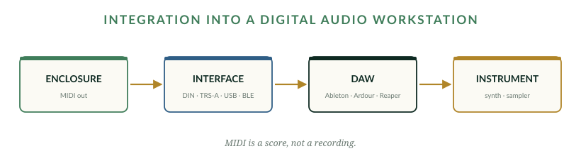
Fig. 6.3. La chaîne d'intégration. Chaque maillon peut être matériel ou logiciel ; seule la nature des messages ne change pas.
Les messages qui circulent réellement
Anatomie d'un message MIDI de plante
LIAISON SÉRIE ASYNCHRONE — 31 250 bauds, 8 bits, 1 bit d'arrêt
┌──────────────────────────────────────────────────────────────┐
│ NOTE ON 1001nnnn 0kkkkkkk 0vvvvvvv │
│ └─ 0x9n └ note └ vélocité │
│ n = canal 0–15 │
│ kkkkkkk = hauteur 0–127 (60 = do3) │
│ vvvvvvv = force 0–127 │
├──────────────────────────────────────────────────────────────┤
│ NOTE OFF 1000nnnn 0kkkkkkk 0vvvvvvv │
│ (ou NOTE ON avec vélocité 0 — équivalent par convention) │
├──────────────────────────────────────────────────────────────┤
│ CONTROL CHANGE 1011nnnn 0ccccccc 0vvvvvvv │
│ └─ 0xBn └ n° CC └ valeur 0–127 │
│ CC 80 = affectation par défaut de PlantsPlay │
│ CC 1 = molette de modulation (usage courant) │
│ CC 74 = fréquence de coupure de filtre (convention) │
├──────────────────────────────────────────────────────────────┤
│ PITCH BEND 1110nnnn 0lllllll 0mmmmmmm │
│ Seul moyen d'obtenir une hauteur CONTINUE, donc de │
│ restituer la microtonalité réelle du signal. │
└──────────────────────────────────────────────────────────────┘
DÉBIT : 31 250 bauds ÷ 10 bits = 3 125 octets/s
÷ 3 octets par message ≈ 1 041 messages/s
Une plante en produit 0,2 à 4 par seconde. Marge : 250 fois.
Les quatre messages utiles. Un boîtier de bio-sonification n'utilise jamais plus de 1 % de la bande passante disponible.
Les quatre connectiques, et comment ne pas se tromper
Connectique
Description
Sur quels appareils
Piège à éviter
DIN 5 broches
La prise historique, ronde. Seules les broches 4 et 5 portent les données ; la 2 est la masse du blindage.
U1, matériel de studio, montage DIY
Un câble DIN audio (5 broches câblées) fonctionne, mais un câble « MIDI » à 3 broches câblées ne passera pas l'alimentation fantôme de certains montages
Jack TRS 3,5 mm type A
Mini-jack, norme adoptée en 2018 : pointe = courant sortant, anneau = courant entrant, corps = masse
PlantWave, Pocket Scion, Bamboo
Le type B existe et a la pointe et l'anneau inversés. Un adaptateur de type B sur un appareil de type A ne transmet rien. Vérifiez toujours le type.
USB-MIDI
Classe standard : aucun pilote à installer sous Windows, macOS ou Linux
PlantWave, PlantsPlay, Pocket Scion, Biotron
La masse USB relie votre montage au secteur : source majeure de ronflement à 50 Hz
MIDI sur Bluetooth (BLE-MIDI)
Norme officielle depuis 2015 ; latence de 10 à 30 ms
PlantWave (via passerelle), PlantsPlay
Émission radio à quelques centimètres du capteur haute impédance ; latence variable
Les quatre connectiques. Le piège du type A contre type B est de loin la cause n° 1 des « mon appareil ne transmet rien ».
⚠️ Limites et interprétation
Ne branchez jamais un casque sur une sortie MIDI jack 3,5 mm. L'avertissement figure noir sur blanc dans le manuel PlantWave et il est à prendre au sérieux : c'est une sortie de données numériques, pas une sortie audio. Au mieux vous n'entendrez qu'un crépitement ; au pire vous chargerez la sortie et l'endommagerez.
Mise en œuvre pas à pas — Ardour (libre, Linux / macOS / Windows)
Marche à suivre
Router une plante dans Ardour
Prérequis Ardour 7+ · un serveur audio (JACK ou PipeWire sous Linux)Durée 15 min la première fois
Branchez le boîtier en USB, ou reliez sa sortie MIDI à une interface MIDI elle-même en USB. Sous Linux, vérifiez qu'il est reconnu : aconnect -l doit lister le périphérique.
Lancez Ardour et créez une session. Dans Window → Audio/MIDI Setup, activez le port MIDI de votre boîtier.
Créez une piste MIDI : Track → Add Track, Bus or VCA → MIDI Tracks. Choisissez un instrument, par exemple General MIDI Synth ou un greffon comme Helm ou Surge XT.
Assignez l'entrée : cliquez sur le bouton d'entrée de la piste et sélectionnez le port de votre boîtier. Armez la piste (bouton rouge).
Vérifiez : l'indicateur d'entrée MIDI doit clignoter à chaque note de la plante. Si rien ne bouge, le problème est en amont — connectique ou seuil, jamais le logiciel.
Enregistrez : appuyez sur l'enregistrement global. Ardour capte le flux MIDI et l'audio rendu.
Exportez le MIDI brut : clic droit sur la région → Export → format .mid. C'est votre donnée. Archivez-la, pas seulement l'audio.
Astuce. Créez deux pistes alimentées par la même entrée : l'une avec une sinusoïde nue pour l'analyse, l'autre avec l'instrument de votre choix pour l'écoute. Vous basculez de l'une à l'autre d'un clic, sans rien changer aux données.
Mise en œuvre pas à pas — Ableton Live
Marche à suivre
Router une plante dans Ableton Live
Prérequis Live 10+ · le boîtier reconnu par le systèmeDurée 10 min
Préférences → Link / Tempo / MIDI. Repérez votre boîtier dans la liste des ports d'entrée.
Activez « Track » et « Remote » sur la ligne du port d'entrée. « Track » autorise les notes, « Remote » autorise les messages de contrôle à piloter des paramètres.
Créez une piste MIDI (Ctrl/Cmd + Maj + T) et déposez-y un instrument : Wavetable, Operator, ou un instrument échantillonné.
Dans l'en-tête de la piste, réglez MIDI From sur votre boîtier, canal All. Activez le bouton In (monitoring).
Armez la piste et jouez.
Affectez un message de contrôle : entrez en mode MIDI Map (Ctrl/Cmd + M), cliquez sur un paramètre — par exemple la coupure du filtre —, puis attendez que la plante envoie un CC. L'affectation se fait automatiquement. Quittez le mode.
Enregistrez dans une scène de la vue Session, ou en vue Arrangement.
Attention au quantificateur. Par défaut, Ableton peut aligner les notes enregistrées sur la grille du tempo. Désactivez la quantification d'enregistrement (Edit → Record Quantization → None). Sinon vous détruisez précisément ce qui fait l'intérêt du signal : ses irrégularités.
Créer de la musique consciente
Une fois la technique en place, une question demeure, et c'est la seule qui compte artistiquement : quelle est la juste place de l'humain dans cette musique ?
Posture
Ce que fait l'humain
Part de la plante
Honnêteté du résultat
Documentaire
Rien. Sinusoïde nue, chromatique, sans horloge ni effets
≈ 100 %
Totale — souvent aride
Traduction
Choisit un instrument et une réverbération, rien d'autre
80 à 95 %
Élevée — le meilleur compromis
Dialogue
Joue en direct avec la plante, sur un autre instrument
Compose, puis ajoute quelques notes végétales par-dessus
< 5 %
Douteuse si présentée comme « musique des plantes »
Cinq postures créatives. Aucune n'est interdite ; une seule règle s'impose : dire laquelle vous avez adoptée.
🌿 Regard énergétique
La posture de dialogue mérite qu'on s'y arrête, parce qu'elle est la plus riche et la moins pratiquée. Il ne s'agit pas d'accompagner la plante comme on accompanierait un chanteur — en la suivant — mais d'accepter une conversation avec un interlocuteur dont le temps n'est pas le vôtre.
Concrètement : jouez une note, puis attendez. Trente secondes, une minute. Écoutez ce qui vient. Rejouez. Ce que vous découvrirez très vite, c'est que l'exercice est un excellent révélateur de votre propre impatience — et que la moitié de vos interventions ne répondaient à rien sinon à votre inconfort devant le silence. Les praticiens qui persévèrent décrivent tous le même apprentissage : ils jouent de moins en moins.
Sur le plan de la mesure, rien ne prouve que la plante « réponde » à votre note. Sur le plan de la pratique, l'exercice est l'un des plus transformateurs de cet ouvrage.
Dépannage : l'arbre de décision
Aucun son — que faire, dans l'ordre
AUCUNE NOTE NE SORT
│
├─ L'indicateur d'entrée MIDI du logiciel bouge-t-il ?
│ │
│ ├─ NON → le problème est AVANT le logiciel
│ │ 1. Câble type A ou type B ? (cause n° 1)
│ │ 2. Appareil allumé, batterie chargée ?
│ │ 3. Port MIDI activé dans les préférences ?
│ │ 4. Sortie MIDI activée sur le boîtier ?
│ │ 5. Test : aconnect -l (Linux) / MIDI Monitor (macOS)
│ │
│ └─ OUI → le problème est DANS le logiciel
│ 1. Piste armée ? Monitoring « In » activé ?
│ 2. Un instrument est-il chargé sur la piste ?
│ 3. Volume de la piste, du master, du système ?
│ 4. Canal MIDI : réglez sur « All »
│
└─ L'appareil lui-même n'émet-il rien ?
1. Le témoin lumineux clignote-t-il aux événements ?
2. Contact : pastille décollée ? feuille sèche ?
3. Seuil trop haut → abaissez-le temporairement
4. TEST DÉCISIF : pincez brièvement les deux
électrodes entre vos doigts. Si l'appareil
réagit, la chaîne complète fonctionne et le
problème est le CONTACT AVEC LA PLANTE.
TRILLE RÉGULIER ET MÉTRONOMIQUE
→ induction du secteur à 50 Hz
1. Passer sur batterie, débrancher le chargeur
2. Éloigner alimentations, néons, variateurs
3. Si alimenté par USB d'ordinateur : batterie externe
Le test du pincement des électrodes entre les doigts isole en cinq secondes un problème de chaîne d'un problème de contact. À faire en premier, toujours.
À retenir
Le MIDI transporte des instructions, jamais du son : archivez toujours le fichier .mid, pas seulement l'audio.
Piège n° 1 : jack TRS type A contre type B, aux broches inversées.
Ne jamais brancher un casque sur une sortie MIDI 3,5 mm.
Désactiver la quantification d'enregistrement : elle détruit l'irrégularité, seule information réelle.
Cinq postures créatives possibles ; la seule règle est d'annoncer laquelle.
Test de diagnostic : pincer les électrodes entre ses doigts.
PartieVII
Approche énergétique et spirituelle
« L'appareil mesure la plante. Qui mesure l'observateur ? » Perception subtile, rôle du cœur, et analyse rigoureuse de l'implication de celui qui écoute.
L'implication de l'observateur dans l'expérience
C'est le chapitre le plus important de l'ouvrage, et le seul qui traite à parts égales de physique et d'intériorité — parce que le phénomène qu'il décrit relève exactement des deux.
Marcel Vogel l'a formulé le premier, en 1971, et cette formulation a rendu son travail scientifiquement inexploitable tout en fondant toute la pratique qui a suivi : l'état de l'observateur fait partie du dispositif. La phrase peut se lire de deux façons diamétralement opposées. Elle peut vouloir dire « l'esprit humain agit sur la plante », ce qui n'est pas démontré. Elle peut vouloir dire « l'humain est physiquement couplé à son montage et modifie ce qu'il mesure », ce qui est trivialement vrai et beaucoup plus intéressant.
Ce chapitre prend la seconde lecture au sérieux, la déploie jusqu'au bout, et montre qu'elle mène bien plus loin qu'on ne croit.
Les six canaux de couplage physique
Un opérateur assis devant un montage à haute impédance n'est pas un observateur extérieur. Il est un élément du circuit. Voici par quoi, classé par ordre d'influence décroissante.
Canal
Mécanisme physique
Ordre de grandeur
Signature
Comment le réduire
1. Couplage capacitif
Le corps humain forme un condensateur de 100 à 300 pF avec son environnement et porte plusieurs volts de potentiel électrostatique. Tout déplacement module ce couplage.
Jusqu'à plusieurs mV induits sur une entrée de 10 MΩ
Bouffées exactement synchrones de vos gestes
Rester à plus d'un mètre, immobile ; relier son poignet à la masse du boîtier
2. Rayonnement thermique
Un corps à 37 °C rayonne environ 100 W. À 50 cm, il élève la température locale de 0,3 à 1 °C.
Vhalf dérive de 0,2 à 2 mV/°C
Modulation lente en cloche, suivant votre présence
Distance, ou présence constante — jamais des allers-retours
3. Convection
Votre respiration et votre chaleur créent un courant d'air ascendant qui fait bouger le feuillage et assèche le contact.
Variable, parfois dominant
Événements brefs, isolés, corrélés à vos expirations
Ne pas souffler vers la plante ; ne pas parler au-dessus d'elle
4. Traction mécanique
Toute tension sur le câble se transmet au contact électrode/limbe.
Immédiat et massif
Événement brutal au moment précis où vous bougez
Fixer le câble à un point stable, laisser du mou
5. Humidité expirée
Une expiration contient 40 g/m³ de vapeur d'eau contre 10 en air ambiant.
Modification locale de la conductance de surface
Dérive lente pendant les séances en espace confiné
Aérer entre les séances, se tenir de côté
6. Vibration au sol
Vos déplacements transmettent des micro-chocs au support.
Faible mais non nul
Événements brefs coïncidant avec un pas
Support lourd, désolidarisé du plancher
Les six canaux. Aucun ne relève du paranormal, et tous produisent exactement ce qu'un praticien interprète comme une « réaction à sa présence ».
🔬 Point scientifique
Une étude de 2026 publiée dans Biomimetics a exploré systématiquement cette corrélation. Des chercheurs ont enregistré en continu, pendant onze journées de travail ordinaires, les signaux bioélectriques d'une plante posée sur un bureau, et simultanément les prédictions d'humeur d'un bracelet connecté porté par la personne présente. Sur 129 observations appariées, sept corrélations entre le stress humain et des paramètres du signal végétal survivent à la correction pour comparaisons multiples.
Le détail méthodologique le plus instructif est accidentel : une électrode s'est détachée en cours d'expérience et a dû être repositionnée. Cet incident a créé un contrôle naturel, permettant de séparer les corrélations qui dépendaient de l'électrode de celles qui n'en dépendaient pas. Seul le coefficient de variation du signal — un paramètre invariant vis-à-vis du repositionnement — a fourni un indice robuste.
Autrement dit : la plupart des corrélations « plante-humain » observées étaient des propriétés de l'interface, pas de la relation. C'est exactement la leçon du chapitre 8, confirmée par accident dans une étude contemporaine — et c'est un modèle de ce à quoi ressemble une démarche honnête.
Les cinq biais cognitifs de l'écoute
Le couplage physique n'est que la moitié du problème. L'autre moitié se passe dans l'écoute elle-même, et elle est plus difficile à corriger parce qu'elle est invisible de l'intérieur.
Biais
Mécanisme
Manifestation en séance
Apophénie
Tendance universelle à percevoir des motifs signifiants dans des données aléatoires
Entendre une « phrase », une « question », une « hésitation » dans une séquence de déclenchements statistiques
Biais de confirmation
On remarque et on mémorise ce qui confirme l'hypothèse ; on oublie le reste
Se souvenir des trois fois où la plante a « réagi » à votre arrivée, oublier les vingt fois où elle n'a rien fait
Effet expérimentateur
L'attente de l'observateur modifie sa conduite, donc le dispositif
Bouger imperceptiblement au moment où l'on espère une réaction — et l'obtenir, par couplage capacitif
Effet Hans le Malin
Le système répond aux signaux involontaires de l'expérimentateur, non à la question posée
Version végétale : la plante ne « répond » pas, elle enregistre votre tension corporelle transmise par le trépied et l'air
Illusion de causalité temporelle
Deux événements rapprochés dans le temps sont perçus comme causalement liés
Formuler une intention, entendre une note deux secondes plus tard, conclure à une réponse — alors que la densité de base est de deux notes par minute
Les cinq biais. Aucun ne relève de la naïveté ou du manque d'intelligence : ce sont des propriétés structurelles de la cognition humaine, présentes chez les physiciens comme chez les druides.
Le calcul qu'il faut faire une fois dans sa vie
Supposons une plante qui déclenche en moyenne deux notes par minute, réparties au hasard. Vous formulez une intention et vous considérez qu'une note survenant dans les cinq secondes constitue une « réponse ».
La probabilité qu'une note tombe dans une fenêtre de cinq secondes, par pur hasard, est de 5/60 × 2 = 16,7 %. Autrement dit : une fois sur six, vous obtiendrez une « réponse » sans qu'il ne se passe rien.
Si vous faites l'essai dix fois dans une séance, la probabilité d'obtenir au moins une réponse fortuite est de 1 − 0,833¹⁰ = 84 %. Vous obtiendrez donc presque certainement au moins une coïncidence frappante — et c'est celle-là dont vous vous souviendrez.
Ce calcul ne prouve pas qu'il n'y a rien. Il établit le plancher au-dessus duquel une observation devient intéressante. Sans ce plancher, aucune impression ne veut rien dire.
Une mise au point nécessaire sur « l'observateur quantique »
⚠️ Limites et interprétation
L'argument revient constamment dans le milieu : « la physique quantique a montré que l'observateur influence la réalité, donc mon intention influence la plante ». Il faut le désamorcer proprement, car il fait plus de tort que de bien à une cause qui n'en a pas besoin.
En mécanique quantique, la « mesure » désigne une interaction physique entre le système et un appareil, qui couple le premier à un nombre macroscopique de degrés de liberté et détruit la cohérence — la décohérence. Le mot « observateur » y est une métaphore historique malheureuse. Aucune expérience n'a jamais montré qu'une conscience, une attention ou une intention produise cet effet ; les dispositifs fonctionnent identiquement lorsque personne ne regarde et que les résultats sont lus trois mois plus tard.
Par ailleurs, les échelles n'ont aucun rapport : la décohérence d'un système biologique à température ambiante se produit en 10⁻¹³ seconde environ, soit dix mille milliards de fois plus vite que la milliseconde d'un processus cellulaire. Il n'y a pas de cohérence quantique disponible à l'échelle où se joue la physiologie végétale.
Voilà pourquoi c'est dommage : l'observateur est réellement impliqué, par six canaux physiques parfaitement mesurables et par cinq biais cognitifs parfaitement documentés. En invoquant la quantique, on abandonne un argument solide pour un argument faux. La bonne réponse à « l'observateur influence-t-il l'expérience ? » est un oui massif et documenté — pas un oui mystérieux.
Les conséquences pratiques : une méthode
Tout ce chapitre mène à un protocole en cinq règles, qui distingue une pratique sérieuse d'une pratique complaisante — sans rien retirer de sa dimension sensible.
Déclarez votre attente avant, par écrit. « J'espère entendre X. » Cela ne l'annule pas, mais cela la rend visible, et vous pourrez relire.
Gardez un témoin. Second canal sur terreau nu ou sur une plante identique. Sans témoin, toute conclusion est une opinion.
Immobilisez-vous, ou bougez en continu. Les allers-retours sont le pire cas : ils créent exactement le profil « la plante réagit quand j'approche ».
Comptez la densité de base. Trois minutes de comptage avant toute interaction vous donnent le plancher de hasard. Sans lui, vous ne pouvez rien conclure.
Séparez les deux colonnes du journal. Faits observés à gauche, interprétations à droite. Ne jamais les fusionner, même des mois plus tard.
🌿 Regard énergétique
On pourrait croire que ce chapitre démolit la dimension spirituelle de la pratique. Il fait exactement l'inverse, et c'est le point que nous voudrions laisser au lecteur.
Regardez les cinq règles. Déclarer son attente, c'est un examen de conscience. Garder un témoin, c'est accepter d'avoir tort. S'immobiliser, c'est une discipline du corps. Compter la densité de base, c'est refuser de se payer de mots. Séparer les colonnes, c'est distinguer ce qui est de ce que j'en fais.
Ce sont, trait pour trait, les exigences de toute discipline contemplative sérieuse. L'ascèse du chercheur et celle du pratiquant se rejoignent ici parfaitement : toutes deux consistent à cesser de mettre son désir à la place du réel. Ce n'est pas la rigueur qui tue le sacré. C'est la complaisance.
✨ Expérience intérieure
Voici l'exercice le plus difficile du livre. Installez un montage, comptez trois minutes de densité de base, puis restez assis, parfaitement immobile, pendant vingt minutes, sans rien attendre du tout. Pas de question posée, pas d'intention formulée, pas d'espoir de réaction.
La plupart des gens n'y arrivent pas. L'esprit fabrique des attentes en quelques secondes, et le corps suit. Vous allez découvrir, très concrètement, que « ne rien attendre » n'est pas une absence mais une activité — et une activité épuisante au début.
C'est pourtant le seul état depuis lequel une observation propre est possible, et c'est aussi, selon toutes les traditions contemplatives, le seul état depuis lequel une rencontre est possible. Que les deux exigences coïncident n'est probablement pas un hasard.
À retenir
L'observateur est physiquement couplé au montage par six canaux : capacitif, thermique, convectif, mécanique, hygrométrique, vibratoire.
Une étude de 2026 a montré, par accident, que la plupart des corrélations plante-humain relevaient de l'interface, non de la relation.
Cinq biais cognitifs structurent l'écoute ; l'apophénie et l'illusion de causalité temporelle sont les plus puissants.
À deux notes par minute, une « réponse » fortuite en cinq secondes survient une fois sur six.
L'argument de l'observateur quantique est faux et inutile : le couplage réel est bien plus fort.
Cinq règles : déclarer l'attente, garder un témoin, s'immobiliser, compter la base, séparer les colonnes.
Perception subtile et communication consciente
Ce que les praticiens décrivent, ce que l'on peut en dire honnêtement, et comment travailler sans se raconter d'histoires.
Les praticiens expérimentés rapportent, avec une constance remarquable d'une culture à l'autre, une série d'expériences qu'il serait absurde de nier et malhonnête de présenter comme démontrées. Nommons-les précisément, puis examinons ce qui peut en être dit.
Phénoménologie des perceptions rapportées
Perception décrite
Description typique
Lecture physiologique disponible
Densité de l'espace
Une impression de « consistance » de l'air à l'approche de certains arbres
Différentiel thermique, hygrométrique et acoustique réel sous couvert : l'air y est effectivement plus dense, plus humide et plus sourd
Chaleur ou picotement dans les paumes
Sensation nette à quelques centimètres de l'écorce
Les paumes concentrent une densité exceptionnelle de thermorécepteurs et de glandes sudoripares ; la moindre variation locale y est perçue
Ralentissement du temps subjectif
Une heure paraît en avoir duré vingt minutes
Effet documenté de l'immobilité, de la respiration lente et de l'attention soutenue sur la perception temporelle
Accueil ou refus
Certains arbres « n'ont pas envie », d'autres « ouvrent »
Pas de lecture physiologique. Probablement une lecture de soi projetée sur l'arbre — ce qui n'en fait pas une information nulle, mais une information sur soi
Image, mot, sensation reçue
Une évidence non verbale qui s'impose pendant la séance
Fonctionnement normal de l'esprit en état de faible stimulation externe : c'est la matière même du rêve éveillé
Effet durable
Apaisement persistant plusieurs jours après une séance en forêt
Documenté : baisse du cortisol et hausse de l'activité des cellules NK persistant plusieurs jours après un bain de forêt
Six perceptions et leur lecture physiologique. Quatre sur six ont une explication solide ; deux n'en ont pas — et c'est là que la pratique commence réellement.
✦ Idée clé
La position tenue dans cet ouvrage tient en une phrase : ces perceptions sont réelles en tant que perceptions, et leur origine n'est pas établie. C'est exactement le statut d'un rêve : personne ne conteste que vous ayez rêvé ; la question de savoir ce que le rêve « était » reste ouverte.
Cette position n'est ni un rejet ni une adhésion. C'est la seule qui permette de continuer à pratiquer et de continuer à penser.
Le rôle du cœur
Toutes les traditions placent le cœur au centre de ce type de relation, et il vaut la peine de démêler ce qui, dans cette insistance, relève du symbole et ce qui relève du fait.
Ce qui est établi
Ce qui relève du symbole
Le cœur possède un système nerveux intrinsèque d'environ quarante mille neurones, capable de traiter de l'information localement.
Que ce « cerveau du cœur » soit un siège de la conscience ou de l'intuition.
La variabilité de la fréquence cardiaque est un indicateur robuste de l'équilibre sympathique/parasympathique, mesurable et entraînable.
Que la cohérence cardiaque « émette » un champ qui influencerait les organismes alentour.
Le cœur produit le champ électromagnétique le plus intense du corps, mesurable à quelques dizaines de centimètres par magnétocardiographie.
Que ce champ porte de l'information exploitable par une plante. À un mètre, il est des millions de fois plus faible que le bruit électromagnétique ambiant.
Une respiration à six cycles par minute synchronise fréquence cardiaque, pression artérielle et rythme respiratoire — un phénomène de résonance bien décrit.
Que cette résonance s'étende au-delà du corps.
Que reste-t-il, alors, du « rôle du cœur » ? Beaucoup, en réalité — mais dans l'autre sens. Se mettre en cohérence ne fait probablement rien à la plante. Cela fait énormément à vous : cela stabilise votre attention, ralentit vos gestes, réduit votre bruit, allonge votre patience, et vous rend capable de rester vingt minutes sans intervenir. Or nous avons vu que c'est précisément la condition d'une mesure propre et d'une rencontre possible.
🌿 Regard énergétique
Une reformulation que nous proposons au lecteur, et qui nous paraît tenir debout des deux côtés : le cœur n'est pas un émetteur, c'est un accordeur. Il n'envoie rien vers l'arbre. Il vous accorde, vous, à une temporalité compatible avec la sienne.
Un arbre vit sur des échelles de dizaines d'années. Une plante herbacée, sur des semaines. Un humain pressé, sur des minutes. La cohérence cardiaque vous fait passer de la minute à la dizaine de minutes. Ce n'est pas encore l'arbre — mais c'est un pas dans sa direction, et c'est le seul pas que vous puissiez faire.
Dans cette lecture, le geste traditionnel des mains posées sur le tronc retrouve tout son sens, sans rien inventer : il vous immobilise, il vous met en contact thermique et mécanique réel, il transmet effectivement votre pouls au bois — le brevet US 2022/0015302 le montre —, et il vous oblige à durer.
À retenir
Six perceptions sont rapportées de façon constante ; quatre ont une explication physiologique solide.
Les perceptions sont réelles en tant que perceptions ; leur origine n'est pas établie.
Le cœur possède un système nerveux intrinsèque et produit le champ électromagnétique le plus intense du corps — mais négligeable à un mètre.
La cohérence cardiaque n'agit pas sur la plante : elle vous accorde à une temporalité plus lente.
Le contact des mains sur le tronc transmet réellement votre pouls, par voie mécanique.
PartieVIII
Exercices pratiques et rituels
« On n'apprend pas à écouter en lisant. » Douze exercices progressifs, un journal de perception, un protocole de communication consciente avec un arbre ancien, et un rituel druidique contemporain.
Douze exercices progressifs
Du plus simple — trois minutes sans rien brancher — au plus exigeant. Chaque exercice suppose le précédent. Ne sautez pas de marche : la progression est la méthode.
✦ Comment utiliser cette partie
Comptez une semaine par exercice pour les six premiers, deux semaines pour les suivants. Trois mois au total. C'est long — et c'est la durée qu'il faut pour que la perception se forme. Rien ici ne demande de matériel avant l'exercice 7 : les six premiers se pratiquent les mains nues, et ce sont les plus importants.
Cycle 1 — Sans appareil
Exercice 1
Les trois minutes
Objectif — établir votre mesure de référence perceptive. Durée — 3 min par jour, 7 jours. Matériel — une plante, une montre.
Asseyez-vous devant une plante, à moins d'un mètre.
Réglez un minuteur sur trois minutes.
Regardez-la. Ne faites rien d'autre. N'essayez pas de ressentir quoi que ce soit.
À la fin, notez une seule phrase dans votre journal.
Ce qui va se passer : les deux premiers jours, vous allez vous ennuyer et trouver le temps long. Vers le quatrième jour, vous commencerez à voir des détails que vous n'aviez jamais remarqués. C'est cela, la formation du regard — et il n'y a pas d'autre chemin.
Exercice 2
La cohérence 5 / 5
Objectif — acquérir l'outil de stabilisation. Durée — 5 min, deux fois par jour, 7 jours.
Assis, dos droit, sans appui.
Inspirez en comptant jusqu'à cinq, expirez en comptant jusqu'à cinq.
Six cycles par minute, trente cycles au total.
Ne forcez jamais : si vous manquez d'air, raccourcissez à 4/4 et revenez progressivement.
Repère de réussite : au bout de trois minutes, la sensation d'effort disparaît et la respiration « se tient toute seule ».
Exercice 3
Les mains à distance
Objectif — affiner la perception thermique et tactile. Durée — 10 min, 7 jours.
Frottez vos paumes l'une contre l'autre dix secondes, pour les réveiller.
Approchez-les lentement d'un tronc ou d'un feuillage, jusqu'à dix centimètres.
Approchez encore, par paliers d'un centimètre, en vous arrêtant à chaque palier.
Notez à quelle distance exacte quelque chose change dans la sensation.
Recommencez les yeux fermés. Faites-vous annoncer la distance par quelqu'un.
Honnêteté requise : les yeux fermés, la plupart des gens perdent 80 % de leur précision. Ce n'est pas un échec — c'est la mesure de la part du visuel dans ce que vous croyiez tactile. Cette information vaut de l'or.
Exercice 4
L'écoute active du lieu
Objectif — élargir l'attention avant de la focaliser. Durée — 15 min, en extérieur, 7 jours.
Assis contre un arbre, yeux fermés.
Pendant 5 min, comptez les sources sonores distinctes que vous identifiez. Notez le nombre.
Pendant 5 min, ne comptez plus : laissez tout arriver en même temps, sans trier.
Pendant 5 min, cherchez le son le plus lointain que vous puissiez percevoir, et restez avec lui.
Ce que cela prépare : la troisième phase est exactement l'état requis pour écouter une séance de bio-sonification — une attention large, sans cible.
Exercice 5
Le protocole d'intention
Objectif — apprendre à formuler sans attendre. Durée — 10 min, 7 jours.
Choisissez un végétal. Asseyez-vous.
Formulez intérieurement, en une phrase courte et précise : qui vous êtes, ce que vous venez faire, combien de temps.
Puis lâchez la phrase. Ne la répétez pas. N'attendez pas de réponse.
Restez dix minutes.
En partant, remerciez et annoncez que vous partez.
La difficulté réelle n'est pas de formuler : c'est de lâcher. Vous constaterez que l'esprit revient sans cesse vérifier si « quelque chose se passe ». Chaque retour est une occasion de recommencer à lâcher. C'est tout l'exercice.
Exercice 6
Le journal de perception
Objectif — séparer définitivement le fait de l'interprétation. Durée — après chaque séance, à vie.
C'est le seul exercice que vous ne cesserez jamais de pratiquer. Le modèle figure ci-après.
Le journal de perception — modèle
Rubrique
À remplir
Date et heure
Espèce, individu
Lieu
Température · hygrométrie
Lumière (nature, stabilité)
Dernier arrosage
Appareil · réglages · gamme
Emplacement des électrodes
Témoin utilisé ?
Attente déclarée avant
Densité de base (notes/min sur 3 min)
Première page : les conditions. Elles se remplissent avant la séance. Sans elles, la séance ne sera comparable à aucune autre.
COLONNE A — ce que j'observe
COLONNE B — ce que j'en pense
Faits seulement : densité, registre, régularité, silences, ruptures avec leur heure exacte. Aucun adjectif d'humeur.
Ressentis, images, hypothèses, émotions, interprétations. Tout est permis ici — et rien ne doit passer à gauche.
Seconde page : les deux colonnes. Elles ne se mélangent jamais, même des années plus tard. C'est la discipline centrale de toute la pratique.
Cycle 2 — Avec appareil
Exercice 7
Le témoin inerte
Objectif — savoir ce que produit votre appareil sans plante. Durée — 1 h, une fois, et à refaire chaque année.
Remplissez un pot de terreau, humidifiez-le comme vous le feriez pour une plante.
Plantez-y les deux électrodes, à la même distance que d'habitude.
Laissez tourner une heure dans les mêmes conditions qu'une vraie séance. Enregistrez.
Écoutez l'enregistrement en entier.
Résultat attendu : vous allez entendre de la musique. Parfois très belle. C'est le son de votre électronique et de la terre qui sèche. Gardez cet enregistrement : c'est votre référence de ce qui n'est pas une plante.
Exercice 8
Le même signal, trois instruments
Objectif — mesurer la part de votre écoute dans ce que vous entendez. Durée — 45 min.
Enregistrez 10 min de MIDI d'une plante.
Rejouez le fichier avec une nappe de synthétiseur douce. Notez trois adjectifs.
Rejouez-le avec un piano. Notez trois adjectifs.
Rejouez-le avec une sinusoïde nue. Notez trois adjectifs.
Comparez les trois séries.
Résultat attendu : trois plantes différentes, à partir des mêmes nombres. Cet exercice vaccine à vie contre la surinterprétation.
Exercice 9
La densité de base et le plancher de hasard
Objectif — établir le seuil au-delà duquel une observation devient intéressante. Durée — 30 min.
Installez un montage stabilisé depuis 30 min.
Comptez les notes pendant 3 min, sans rien faire. Répétez cinq fois. Calculez la moyenne n en notes par minute.
Calculez votre plancher de hasard pour une fenêtre de réponse de 5 s : p = (5/60) × n.
Notez cette valeur dans votre journal, en tête de la séance.
Exemple : à 2 notes/min, p = 16,7 %. Une « réponse » sur six est donc gratuite. Vous ne pourrez plus jamais l'oublier.
Exercice 10
Le cycle de vingt-quatre heures
Objectif — rencontrer le rythme circadien de l'électrome. Durée — 24 h d'enregistrement continu.
Installez le montage sur une plante bien portante, en conditions stables, sur secteur ou grande batterie.
Enregistrez le MIDI en continu pendant 24 h. Ne touchez à rien.
Le lendemain, tracez le nombre de notes par tranche de 30 min.
Cherchez un motif de période 24 h.
Ce que vous cherchez : l'étude de 2026 sur Primula vulgaris rapporte un rythme robuste, avec une amplitude crête-à-creux de 0,35 à 1,19 fois la valeur moyenne. Si vous le retrouvez, vous venez de reproduire chez vous un résultat publié. C'est la plus belle chose que puisse faire un amateur.
Exercice 11
Deux plantes, deux canaux
Objectif — apprendre à comparer plutôt qu'à interpréter. Durée — 2 h.
Deux appareils, deux plantes de la même espèce, côte à côte, canaux MIDI 1 et 2.
Enregistrez deux heures sans intervenir.
Appliquez un stimulus à une seule des deux : un demi-verre d'eau, ou une lampe allumée d'un côté.
Comparez les deux canaux avant, pendant et après.
C'est la structure minimale d'une expérience. Avec elle, vous pouvez conclure. Sans elle, jamais.
Exercice 12
Le dialogue instrumental
Objectif — jouer avec, non par-dessus. Durée — 1 h.
Montage stabilisé, écoute au casque ou à faible volume.
Prenez un instrument simple : voix, flûte, bol, une seule corde.
Jouez une note. Puis attendez au moins une minute avant la suivante.
Tenez une heure. Comptez combien de notes vous avez jouées.
Résultat attendu : la plupart des musiciens jouent trente à cinquante notes la première fois, cinq à dix après quelques semaines. La progression se mesure à ce que vous cessez de faire.
À retenir
Six exercices sans matériel avant tout achat : ce sont les plus formateurs.
Le journal à deux colonnes est la discipline centrale, à vie.
Le témoin inerte est l'exercice qui protège de toutes les illusions ultérieures.
Le même fichier MIDI joué sur trois instruments produit trois plantes différentes.
Une structure à deux canaux est le minimum pour pouvoir conclure quoi que ce soit.
Protocole de communication consciente avec un arbre ancien
Un arbre de deux cents ans a traversé six générations humaines. Le rencontrer demande un protocole à sa mesure — sur trois visites, et non sur une après-midi.
Ce protocole est proposé comme une pratique relationnelle assumée, non comme une méthode d'obtention d'information. Il n'a pas de validité scientifique et n'en revendique aucune. Sa valeur est ailleurs : dans la qualité d'attention qu'il produit, dans la relation qu'il installe avec un lieu, et dans ce qu'il révèle de celui qui le pratique.
Choisir l'arbre
Critère
Ce qu'il faut chercher
Pourquoi
Âge
Tronc de plus d'un mètre de circonférence à hauteur de poitrine
Un arbre ancien a une masse thermique et une stabilité qui changent réellement le microclimat autour de lui
Santé
Houppier fourni, écorce saine, absence de champignons de pourriture au collet
Un arbre en fin de vie ne doit pas être sollicité
Situation
Accessible, à l'écart des passages, sans risque de chute de branches
Vous allez y rester immobile longtemps
Régularité d'accès
Un lieu où vous pouvez revenir trois fois en trois semaines
Le protocole repose entièrement sur la répétition
Consentement du lieu
Propriété, réglementation, espèce protégée
Une relation qui commence par une infraction commence mal
Cinq critères de choix. Le quatrième est le plus contraignant et le plus déterminant.
Les trois visites
Visite 1 · durée 45 min · sans matériel
Reconnaître
Déroulé
Approche large. Arrêtez-vous à vingt mètres. Faites le tour complet de l'arbre à cette distance, lentement. Observez d'où vient la lumière, où se trouve le sous-bois le plus dense, où le sol est piétiné.
Deuxième cercle. Refaites le tour à la limite du houppier — la projection au sol de l'extrémité des branches. C'est, à peu près, l'emprise du système racinaire.
Annonce. À la limite du houppier, arrêtez-vous. Dites, à voix basse ou intérieurement, qui vous êtes et ce que vous venez faire. Annoncez que vous reviendrez.
Attente. Restez dix minutes à cette limite, sans entrer. Cela paraîtra absurde. C'est l'essentiel de la visite.
Contact minimal. Approchez-vous, posez une main sur le tronc, cinq minutes, sans rien demander.
Départ annoncé. Reculez jusqu'à la limite du houppier, remerciez, partez sans vous retourner.
À noter au journal : l'espèce, la circonférence, l'orientation, la nature du sol, la faune remarquée, la température ressentie sous le houppier comparée à celle du dehors. Uniquement des faits.
Visite 2 · une semaine plus tard · 1 h 30 · avec appareil
Écouter
Déroulé
Reprenez l'annonce à la limite du houppier, en rappelant que vous étiez déjà venu.
Cohérence 5/5 pendant cinq minutes, assis, adossé ou non selon ce qui vous paraît juste.
Pose des électrodes. Sur un arbre, deux options : sur une feuille basse accessible, ou sur le cambium au moyen de deux fines aiguilles inox insérées de deux millimètres dans l'écorce, distantes de trente centimètres, en respectant la règle de l'acier inoxydable 316L. La première option est moins invasive : privilégiez-la systématiquement.
Trente minutes de stabilisation. Profitez-en pour ne rien faire. C'est le cœur de la visite.
Quarante minutes d'écoute, immobile, au casque à faible volume.
Retrait soigneux, remerciement, annonce de la troisième visite.
Précaution. Si vous utilisez des aiguilles, désinfectez-les à l'alcool avant et après, ne dépassez jamais deux millimètres de profondeur, et ne recommencez jamais au même endroit. Une aiguille fine dans le liber d'un arbre mature est comparable à une piqûre de moustique — mais répétée cent fois au même point, elle crée une porte d'entrée pour les pathogènes.
Visite 3 · une semaine plus tard · 2 h · avec appareil et témoin
Dialoguer
Déroulé
Mêmes étapes 1 à 5 que la visite 2, mais avec un second canal sur un arbre voisin de la même espèce — votre témoin.
Trente minutes d'écoute passive des deux canaux, pour établir la densité de base de chacun.
Trente minutes de dialogue instrumental selon l'exercice 12 : une note, puis une minute d'attente.
Trente minutes de silence complet pour finir.
Consignation à deux colonnes, sur place, avant de partir.
Contrepartie. Laissez quelque chose qui ne nuit pas : de l'eau au pied, un déchet ramassé et emporté, un passage régulier promis. Évitez absolument d'enterrer des objets ou de nouer des tissus aux branches — c'est un dommage réel pour un bénéfice imaginaire.
Ce que ce protocole produit réellement, et que nous pouvons affirmer sans réserve : au bout de trois visites, vous connaîtrez cet arbre. Vous saurez son orientation, son microclimat, ses oiseaux, son rythme, et à quoi ressemble son signal en conditions calmes. Vous aurez une ligne de base. C'est infiniment plus que ce que possède quiconque après une seule visite « intense ».
Rituel druidique moderne adapté
Une proposition contemporaine, construite sur la structure en six temps repérée au chapitre 6, et adaptée à la présence d'un instrument de mesure. Ni reconstitution archéologique, ni folklore.
⚠️ Limites et interprétation
Disons-le franchement : nous ne savons presque rien des rituels druidiques antiques. Les sources sont indirectes, tardives, et souvent hostiles. Ce qui circule aujourd'hui sous ce nom procède majoritairement des reconstructions néo-druidiques du dix-huitième et du dix-neuvième siècle — un mouvement respectable, mais qui n'est pas l'Antiquité.
Le rituel proposé ici ne prétend donc à aucune authenticité historique. C'est une composition contemporaine qui emprunte à la structure relationnelle commune aux traditions de cueillette — celle qu'on retrouve en Amazonie, en Sibérie, dans les Andes et dans les textes irlandais — parce que cette structure fonctionne, et non parce qu'elle serait ancienne.
Fig. 8.1. Le triple mouvement — souterrain, médian, céleste — qui structure les trois cercles du rituel.
Le cadre
Élément
Proposition
Fonction
Lieu
Une clairière, ou l'emprise du houppier d'un arbre
Marquer un dedans et un dehors — le nemeton est un espace, non un bâtiment
Moment
Aube ou crépuscule ; aux équinoxes et solstices pour les séances annuelles
Les seuils du jour et de l'année ; par ailleurs, ce sont les moments de plus grande stabilité lumineuse
Durée
Deux heures, dont trente minutes de stabilisation
Compatible avec la physique de la mesure
Participants
De un à cinq. Au-delà, le couplage capacitif devient ingérable
Contrainte technique devenue règle rituelle — comme il se doit
Matériel
Appareil, électrodes inox, eau, carnet, un instrument simple
Le strict nécessaire
Ce qu'on n'apporte pas
Clous, tissus noués, objets enterrés, encens à même l'écorce
Tout ce qui laisse une trace nuisible
Le cadre. Notez que trois contraintes sur six sont d'origine technique : c'est délibéré, et c'est ce qui rend ce rituel cohérent avec l'ouvrage.
Le déroulé en six temps
Premier temps · Ouvrir le cercle
Chacun fait le tour de l'emprise du houppier, dans le sens du soleil, en silence. Le dernier tour se fait en marquant l'entrée : on s'arrête à la limite, on regarde vers le centre, et l'un des participants dit à voix haute :
« Nous entrons dans ce cercle qui n'est pas à nous. Nous y venons sans rien prendre. Nous y resterons deux heures, puis nous partirons. »
Puis chacun entre, et l'on s'assoit. Il n'est plus question de sortir avant la fin.
Deuxième temps · S'accorder — le souffle
Cinq minutes de cohérence 5/5, en silence, ensemble. Puis cinq minutes d'immobilité complète. On ne se lève pas, on ne se racle pas la gorge, on ne regarde pas l'écran.
Justification double : spirituellement, c'est le passage du temps humain au temps du lieu. Techniquement, c'est la réduction du bruit apporté par les corps présents.
Troisième temps · Demander — la parole
Une seule personne parle, à voix basse, tournée vers l'arbre. Elle nomme les présents, l'intention, la durée, et la contrepartie prévue. Puis elle se tait. On laisse trois minutes de silence avant de bouger.
« Nous sommes cinq. Nous venons écouter, non demander. Nous poserons deux contacts sur une feuille, et nous les retirerons. Nous laisserons de l'eau, et nous emporterons ce qui traîne ici. Si ce n'est pas le jour, nous reviendrons. »
Quatrième temps · Poser — le contact
Une seule personne installe les électrodes, lentement, selon le protocole du chapitre 23. Les autres restent assis, immobiles. Le geste est fait avec la même attention que si l'on posait une main sur l'épaule de quelqu'un d'endormi.
Puis trente minutes de stabilisation. Pendant ce temps, on ne parle pas, on n'écoute pas encore, on ne regarde pas l'appareil. C'est le temps le plus long et le plus important.
Cinquième temps · Écouter — le chant
Quarante minutes. On met le son en petite diffusion, à bas volume, ou chacun au casque. On n'intervient pas.
Si un instrument est présent, la règle est celle de l'exercice 12 : une note, puis une minute d'attente. Une seule personne joue. Les autres écoutent.
Il est permis de ne rien entendre. Il est permis de s'ennuyer. Il est permis que l'appareil reste silencieux. Un silence de quarante minutes est un résultat, et souvent le plus juste.
Sixième temps · Clore — la contrepartie
On retire les électrodes, base vers pointe, une minute par contact. On verse l'eau au pied. On ramasse ce qui traîne alentour et on l'emporte. Chacun note son journal, sur place, à deux colonnes.
Puis on se lève, on refait un tour dans le sens du soleil, et l'on dit en sortant :
« Nous partons. Ce que nous avons entendu, nous ne le comprenons pas. Nous le gardons tel quel. Merci. »
On sort, et l'on ne commente pas avant d'avoir quitté le lieu.
🌿 Regard énergétique
Une remarque sur la dernière phrase, qui est le cœur de la proposition. « Ce que nous avons entendu, nous ne le comprenons pas. Nous le gardons tel quel. »
La tentation, à la fin d'une séance, est de conclure — de traduire, d'interpréter, de raconter ce que la plante « a dit ». Cette tentation est universelle et elle détruit tout : elle referme l'expérience sur une histoire que vous connaissiez déjà.
Refuser de conclure n'est pas une abstention. C'est la seule façon de laisser l'expérience continuer de travailler. Les praticiens de longue durée le savent : les séances qui vous transforment ne sont pas celles où vous avez compris quelque chose, ce sont celles où vous êtes resté avec quelque chose que vous ne compreniez pas.
Et cette règle, remarquons-le, est exactement la même que celle du chercheur honnête face à un résultat isolé : on ne conclut pas, on note, on recommence.
✨ Expérience intérieure
Pratiquez ce rituel quatre fois par an, aux solstices et aux équinoxes, avec le même arbre, pendant trois ans. Douze séances.
Vous aurez alors quelque chose que personne ne peut acheter et qu'aucun appareil ne fournit : une série. Vous saurez à quoi ressemble ce chêne en décembre et en juin, par temps sec et après la pluie, à cinq ans d'intervalle. Vous aurez douze pages de colonne A et douze pages de colonne B.
Et vous découvrirez, en les relisant, quelque chose que ce livre ne peut pas vous dire — parce que cela vous concernera vous, et vous seul.
À retenir
Le protocole de l'arbre ancien se déroule sur trois visites espacées d'une semaine, jamais en une seule fois.
Privilégier toujours la pose sur feuille basse plutôt que l'aiguille dans le cambium.
Le rituel proposé n'a aucune prétention historique : il emprunte une structure relationnelle qui fonctionne.
Trois de ses six contraintes sont d'origine technique — c'est ce qui le rend cohérent.
La règle finale est de ne pas conclure : c'est à la fois une discipline contemplative et une discipline scientifique.
PartieIX
Protocoles expérimentaux reproductibles
« Ne croyez rien de ce livre. Refaites-le. » Toutes les expériences qui ont conduit aux boîtiers de musique des plantes, décrites assez précisément pour être reproduites chez soi.
Comment refaire une expérience
Onze protocoles suivent, du crescographe de Bose aux mesures d'impédance contemporaines. Avant de s'y lancer, quelques règles qui font la différence entre une manipulation et une expérience.
Ce qui distingue une expérience d'une démonstration tient en quatre mots : témoin, aveugle, répétition, pré-enregistrement. Aucun de ces quatre éléments n'exige de matériel coûteux ; tous exigent de la discipline. Ils sont la seule raison pour laquelle l'expérience d'Appel et Cocroft a tenu et celle de Backster non.
Principe
Ce qu'il signifie concrètement
Coût
Témoin
Une condition identique en tout point sauf sur le facteur étudié. Deux plantes, deux canaux, un seul stimulus.
Un second appareil, ou deux séances successives
Aveugle
Celui qui analyse ne sait pas quelle trace vient de quelle condition. Renommez vos fichiers en A, B, C avant analyse.
Gratuit
Répétition
Un résultat unique ne vaut rien. Cinq répétitions minimum, dix de préférence.
Du temps
Pré-enregistrement
Écrire avant l'expérience ce que vous allez mesurer et ce qui compterait comme confirmation ou réfutation.
Dix minutes et un peu de courage
Randomisation
L'ordre des conditions est tiré au sort, jamais choisi.
Un dé
Les cinq règles. La quatrième est la plus difficile psychologiquement et la plus efficace : elle vous empêche de déplacer le but après coup.
✦ Idée clé
Écrivez avant chaque expérience la phrase suivante, complétée : « Je conclurai que l'hypothèse est fausse si _______ ». Si vous ne pouvez pas remplir le blanc, votre expérience n'en est pas une. C'est le critère le plus simple et le plus impitoyable qui existe.
Les expériences fondatrices, reproduites
Six protocoles historiques, du plus simple au plus exigeant. Tous ont été conduits avec des moyens que vous pouvez réunir.
Protocole 1 · d'après J. C. Bose, 1901 · difficulté ★☆☆
Le crescographe : rendre visible la croissance
Durée 2 h de montage, 24 h d'observationCoût Moins de 20 €Ce que cela établit Que la croissance est un processus dynamique et irrégulier
Matériel
Une plantule en croissance active (blé germé, haricot, tournesol de 10 à 15 cm)
Deux leviers en bambou ou en balsa : le premier de 2 cm / 20 cm, le second de 2 cm / 20 cm
Un support rigide, un fil de soie, une aiguille fine, une feuille de papier
Variante moderne : un téléphone en mode time-lapse
Montage
Fixez le support au pot, indépendamment de la plante.
Reliez l'apex de la tige au bras court du premier levier par un fil de soie très léger, sous une tension minimale.
Le bras long du premier levier attaque le bras court du second : le rapport d'amplification est de 10 × 10 = 100.
Fixez l'aiguille à l'extrémité du bras long du second levier, en contact léger avec le papier.
Déplacez le papier de 1 cm par heure — à la main, ou par un mécanisme d'horlogerie.
Ce que vous observerez. La croissance n'est pas régulière : elle procède par saccades de quelques minutes séparées de pauses. Bose l'avait déjà décrit, et c'est toujours vrai. Un choc, un changement de température ou une goutte d'eau froide produisent un arrêt net puis une reprise.
Le fil doit être si léger qu'il ne tire pas sur l'apex. Un fil trop tendu freine la croissance : vous mesureriez votre propre montage.
Protocole 2 · d'après J. C. Bose, 1902 · difficulté ★★☆
La réponse électrique à un stimulus, et son blocage par anesthésie
Durée 3 hCoût 30 à 60 € (multimètre à haute impédance ou carte d'acquisition)Ce que cela établit Que la propagation est un processus physiologique actif, pas une conduction passive
Matériel
Une tige de Mimosa pudica, de courgette ou de haricot, longue de 20 cm
Deux électrodes Ag/AgCl (fabrication au chapitre 13) ou inox 316L
Un amplificateur à entrée CMOS (LMC6482) ou un enregistreur à haute impédance
Un flacon d'éther ou de chloroforme, une compresse, un film alimentaire
Déroulé
Phase A — référence. Placez les électrodes à 10 cm d'écart sur la tige. Stabilisez 30 min. Enregistrez 10 min au repos.
Phase B — stimulus. Appliquez un stimulus contrôlé et bref à 3 cm au-dessus de l'électrode haute : une goutte d'eau à 45 °C, ou un pincement d'une seconde. Enregistrez 5 min. Répétez cinq fois, à 10 min d'intervalle.
Phase C — anesthésie. Enroulez une compresse imbibée d'éther autour de la tige, entre le point de stimulus et l'électrode haute, sur 2 cm. Couvrez de film. Attendez 20 min.
Phase D — stimulus sous anesthésie. Répétez la phase B, cinq fois.
Phase E — récupération. Retirez la compresse, aérez 45 min, répétez la phase B.
Résultat attendu. Réponse nette en A et B ; réponse fortement réduite ou abolie en D ; retour en E. C'est la démonstration la plus élégante de toute la physiologie végétale, et vous pouvez la refaire en un après-midi.
Sécurité. L'éther est très inflammable et ses vapeurs sont anesthésiantes. Travaillez en extérieur ou sous hotte, sans flamme ni source d'étincelle à proximité, et ne restez pas penché au-dessus. Une alternative plus sûre existe : le refroidissement local par un glaçon en sachet, appliqué au même endroit pendant dix minutes. L'effet est moins net mais le principe est le même.
Protocole 3 · d'après C. Backster, 1966-1968 · difficulté ★★☆
La « perception primaire » — le refaire correctement
Durée Plusieurs nuitsEnjeu Refaire ce que Backster a raté : automatiser et aveuglerRésultat attendu Aucune corrélation — et c'est un résultat
Pourquoi le refaire si l'on connaît la réponse ?
Parce que c'est le meilleur exercice de méthode qui existe dans ce domaine. Vous allez construire un dispositif qui vous empêche de vous tromper, et c'est une compétence transposable à toutes vos autres séances.
Montage
Une plante équipée, dans une pièce fermée, sans personne.
Un stimulus déclenché automatiquement à des instants tirés au sort. Version simple : un minuteur programmable qui allume une lampe dans une pièce voisine. Version fidèle à Backster : un dispositif qui plonge de petits crustacés d'eau salée dans de l'eau chaude — nous ne la recommandons pas, pour des raisons évidentes, et elle n'apporte rien.
Tirez au sort 20 instants de déclenchement sur 8 h, avec un générateur d'aléa. Enregistrez la liste dans un fichier fermé que vous n'ouvrirez qu'après analyse.
Enregistrez le MIDI en continu.
Analyse en aveugle
Repérez tous les événements du tracé, sans avoir ouvert la liste.
Notez leurs horodatages.
Ouvrez alors la liste des déclenchements.
Comptez combien d'événements tombent dans les 60 s suivant un déclenchement, et comparez au nombre attendu par hasard : attendu = densité × 20 × 60 s.
Ce que vous trouverez, selon toute vraisemblance : un nombre compatible avec le hasard. Trois équipes indépendantes — Horowitz, Lewis et Gasteiger dans Science en 1975, Kmetz la même année, Galston et Slayman en 1977 — ont obtenu exactement ce résultat. Le refaire vous-même vaut infiniment mieux que de le lire.
Durée 30 joursCe que Retallack a raté Le niveau sonore, la chaleur des enceintes, les vibrations du substrat
Le protocole corrigé
Quatre lots de 20 plantules de la même espèce, du même semis, du même jour : cresson ou radis, qui poussent vite.
Quatre enceintes identiques, en conditions de lumière et de température rigoureusement égales (vérifiées au thermomètre chaque jour).
Mesurez le niveau sonore au sonomètre — un téléphone suffit — et égalisez-le entre toutes les conditions sonores à ± 2 dB. C'est la correction décisive que Retallack n'a pas faite.
Découplez mécaniquement les enceintes du substrat : suspendez-les, ou posez-les sur de la mousse. Sinon vous mesurez une vibration transmise par le sol, pas un son.
Conditions : A = silence ; B = musique classique à 75 dB ; C = rock à 75 dB ; D = bruit rose à 75 dB.
Diffusez 3 h par jour, à heure fixe, pendant 30 jours.
Mesurez : hauteur, nombre de feuilles, masse fraîche et masse sèche finales.
Mesure en aveugle : quelqu'un d'autre mélange les plateaux et les renumérote avant que vous ne mesuriez.
Ce que dit la littérature contemporaine. À niveau sonore égal, le style musical n'a pas d'effet reproductible. En revanche, une exposition à des vibrations calibrées — typiquement 500 à 1 000 Hz à 80-100 dB, plusieurs heures par jour — modifie l'expression de centaines de gènes chez Arabidopsis. C'est la fréquence et l'intensité qui comptent, pas Mozart. La condition D, bruit rose, est donc la plus instructive du lot.
La plante distingue une vibration de mastication d'un vent
Durée 1 semaineCoût 60 à 120 € (transducteur + amplificateur)Statut Expérience publiée et répliquée
Matériel
Des plants d'Arabidopsis thaliana ou, à défaut, de moutarde ou de cresson alénois
Un transducteur de contact (type exciter ou pastille piézoélectrique) et un petit amplificateur
Un enregistrement de mastication de chenille — disponible librement dans les archives sonores en ligne des laboratoires de bioacoustique — et un enregistrement de vent
Déroulé
Quatre conditions : A = silence ; B = vibrations de mastication ; C = vibrations de vent ; D = vibration synthétique de même bande que B.
Collez le transducteur sur une feuille, ou sur le support portant la feuille, de façon à transmettre une vibration mécanique et non un son aérien. C'est la clé du protocole.
Exposez 2 h par jour pendant 3 jours.
24 h et 48 h après la dernière exposition, prélevez les feuilles et évaluez les défenses.
Mesure accessible sans laboratoire
Le dosage des glucosinolates exige un laboratoire. Deux substituts sont accessibles :
Les anthocyanes, mesurées par extraction à l'éthanol acidifié et comparaison colorimétrique — même un téléphone et une charte de couleurs donnent un résultat exploitable en aveugle.
Un test de préférence alimentaire : proposez à des limaces ou à des chenilles le choix entre feuilles traitées et témoins, et comptez la surface consommée. C'est un test biologique, indirect mais robuste.
Résultat attendu. Défenses induites en B, pas en C ni en A — alors que B et C ont des spectres comparables. La plante ne réagit pas à l'énergie vibratoire, elle réagit à une signature.
Durée 1 journée, puis rappels à 7, 14 et 28 joursCoût Le prix d'un mimosa pudiqueStatut Publié, réplication indépendante limitée — raison de plus pour le refaire
Montage
Fabriquez un dispositif de chute contrôlée : un rail vertical de 15 cm le long duquel un plateau portant le pot tombe et s'arrête sur une butée amortie. Chaque chute doit être strictement identique.
Session d'entraînement : 60 chutes espacées de 5 secondes. Notez à chaque chute le nombre de folioles repliées.
Test de discrimination : immédiatement après, appliquez un stimulus différent — une secousse horizontale. Notez la réponse.
Rappels : refaites 10 chutes à J+7, J+14 et J+28. Notez.
Témoin : un second mimosa non entraîné, testé aux mêmes dates.
Résultat rapporté par Gagliano. Le repliement diminue au fil des chutes et reste faible jusqu'à 28 jours, tandis que la réponse au stimulus différent demeure entière. Cette discrimination est ce qui distingue une habituation d'une simple fatigue — et c'est le point à vérifier avec le plus de soin.
Le piège est la fatigue mécanique. Si la plante ne se replie plus parce que ses pulvini sont épuisés, ce n'est pas un apprentissage. Le test de discrimination est obligatoire : sans lui, votre résultat ne vaut rien.
Protocoles propres aux dispositifs de bio-sonification
Cinq expériences que vous ne pouvez faire qu'avec un boîtier — et qui, contrairement à l'écoute libre, produisent des résultats.
Protocole 7 · difficulté ★☆☆ · à faire en premier
Caractériser son propre appareil
Durée 4 hObjet Savoir ce que produit votre matériel sans plante
Circuit ouvert. Électrodes en l'air, sans rien. Enregistrez 30 min. Comptez les notes.
Court-circuit. Électrodes reliées entre elles par un fil. 30 min.
Résistance fixe. Remplacez la plante par une résistance de 1 MΩ à couche métallique. 30 min. C'est votre plancher de bruit absolu : tout ce que vous entendez ici est de l'électronique.
Résistance + condensateur. 1 MΩ en parallèle avec 10 nF, pour imiter grossièrement un tissu. 30 min.
Terreau humide seul. 1 h.
Plante réelle. 1 h.
Livrable. Un tableau à six lignes : notes/min, registre moyen, régularité. Ce tableau est la fiche d'étalonnage de votre appareil. Aucune de vos observations futures ne vaut quoi que ce soit sans lui.
Protocole 8 · difficulté ★★☆
La réponse à la lumière
Durée 3 hHypothèse testée Une transition lumineuse modifie l'impédance par l'ouverture stomatique
Deux canaux : plante et témoin de terreau humide, dans la même pièce.
Obscurité complète pendant 1 h. Enregistrez.
Allumage d'une lampe à spectre large, à distance constante. Enregistrez 1 h.
Extinction. Enregistrez 1 h.
Attention au piège thermique : utilisez une LED et mesurez la température à côté de la plante avant, pendant et après. Si elle varie de plus de 0,5 °C, votre résultat est thermique, pas photosynthétique.
Résultat attendu. Une modification nette de densité rythmique sur le canal plante dans les 5 à 20 min suivant l'allumage, et rien sur le témoin. C'est l'une des rares réponses fiables et reproductibles que vous obtiendrez — et elle est parfaitement explicable par la physiologie stomatique.
Protocole 9 · difficulté ★★☆
Le rythme circadien de l'électrome
Durée 72 h minimumRéférence Étude 2026 sur Primula vulgaris, trois stations indépendantes
Plante saine, conditions les plus stables possibles, enregistrement MIDI continu sur 72 h.
Notez l'heure de lever et de coucher du soleil, et tout changement d'éclairage artificiel.
Comptez les notes par tranche de 30 min. Tracez.
Superposez les trois journées : le motif doit se répéter.
Variante avancée : à partir de J+3, passez en obscurité constante. Si le rythme persiste, il est endogène — c'est une horloge interne, pas une simple réponse à la lumière.
Chiffres de référence. L'étude de 2026 rapporte, sur la bande 1-5 Hz, un coefficient de détermination de 0,72 à 0,87 pour un ajustement à 24 h, une amplitude crête-à-creux de 0,35 à 1,19 fois la valeur moyenne, et des acrophases variant de 5 h à 11 h selon la station. Le rythme persiste la nuit, en l'absence de tout visiteur.
La difficulté réelle est de tenir 72 h sans rien toucher. Prévoyez l'alimentation, l'espace de stockage et — surtout — la discipline.
Protocole 10 · difficulté ★★★
Le test de la présence humaine, fait correctement
Durée 4 hEnjeu Séparer thermique, capacitif et « autre »
C'est le protocole le plus important de cette partie, parce qu'il attaque de front la question que tout le monde se pose et que personne ne teste proprement.
Quatre conditions, ordre tiré au sort
Condition
Dispositif
Ce qu'elle isole
A — absence
Personne dans la pièce
Référence
B — présence nue
Personne assise à 1 m, immobile
Thermique + capacitif + convection
C — présence écrantée
Même position, derrière une plaque de plexiglas reliée à la masse du montage
Supprime le capacitif, conserve le thermique
D — chaleur sans humain
Personne absente, lampe à incandescence de 40 W à 1 m, produisant la même élévation de température qu'en B
Thermique seul
Analyse
Mesurez la température à côté de la plante dans chaque condition, et égalisez B et D.
20 min par condition, 5 répétitions, ordre randomisé.
Comparez les densités de notes en aveugle.
Lecture des résultats. Si B ≈ D, l'effet est thermique. Si B > C ≈ D, la part supplémentaire est capacitive. S'il reste un écart après C et D — et seulement dans ce cas —, vous avez quelque chose que ce livre ne sait pas expliquer. Publiez-le.
Protocole 11 · difficulté ★★☆
Comparer deux espèces, honnêtement
Durée 6 séances de 1 hPiège principal Confondre espèce et état hydrique
Choisissez deux espèces et trois individus de chacune. Trois, pas un : sinon vous comparez deux individus, pas deux espèces.
Même terreau, même pot, même arrosage, même exposition depuis au moins deux semaines.
Même site de pose sur chacun : tiers basal, face inférieure, feuille mature la plus jeune.
Même appareil, mêmes réglages, mode chromatique, aucun effet.
Une séance par individu, 1 h, dans un ordre tiré au sort, sur deux jours.
Analyse en aveugle : renommez les fichiers avant de les écouter.
Ce que vous obtiendrez probablement. Une variabilité intra-espèce comparable à la variabilité inter-espèces. C'est un résultat, et c'est un résultat utile : il signifie que le « chant caractéristique d'une espèce » est, en l'état des méthodes amateurs, indiscernable de l'état individuel de la plante et de la qualité du contact.
✨ Expérience intérieure
Un mot sur ce que ces protocoles font à celui qui les pratique. La première fois que vous refaites le protocole 7 et que vous entendez votre appareil « chanter » sur une résistance de 1 MΩ, quelque chose se brise — et c'est une très bonne chose.
Ce qui se brise, c'est la certitude naïve. Ce qui la remplace est plus solide : une écoute informée, capable de distinguer. Vous n'écouterez plus jamais une séance comme avant, mais vous l'écouterez mieux, parce que vous saurez ce qui, dans ce que vous entendez, vient de la plante.
Et le jour où vous entendrez quelque chose que votre tableau d'étalonnage n'explique pas, vous le saurez — vraiment. Ce moment-là vaut tous les enthousiasmes prématurés du monde.
À retenir
Cinq règles : témoin, aveugle, répétition, pré-enregistrement, randomisation. Toutes gratuites.
Écrivez avant chaque expérience ce qui vous ferait conclure que vous avez tort.
Le protocole 7 — caractériser son appareil sur une résistance fixe — est le préalable à tout le reste.
La réponse à une transition lumineuse est la réponse végétale la plus fiable et reproductible accessible à l'amateur.
Le test de la présence humaine en quatre conditions sépare thermique, capacitif et inexpliqué.
L'expérience de Bose sur l'anesthésie locale reste la plus élégante, et elle tient en un après-midi.
Le boîtier sur un humain ou un animal
Paradoxe de ce domaine : branché sur une plante, l'appareil pose des questions sans réponse ; branché sur un humain, il devient d'un coup parfaitement légitime, documenté et utile. Voici pourquoi, et comment le faire correctement.
Tous les boîtiers du marché fonctionnent sur un être humain, et la plupart des fabricants le savent. Le brevet Plant Choir (WO 2020/021334) revendique explicitement « les personnes, les plantes et les animaux » comme sujets d'un même système. La fiche d'horticulture thérapeutique publiée par Mikkele Lawless propose même la manœuvre comme un temps fort de séance : « écoutons la belle musique qui est à l'intérieur de vous », chaque participant tenant à son tour les deux pinces métalliques.
Cette pratique n'est pas une curiosité annexe. Elle est, sur le plan scientifique, la plus solide de tout le domaine — et il faut comprendre pourquoi.
Pourquoi l'usage humain est plus rigoureux que l'usage végétal
La différence décisive : la boucle se referme
SUR UNE PLANTE — pas de boucle
PLANTE ──▶ électrodes ──▶ boîtier ──▶ son ──▶ OREILLE HUMAINE
▲ │
└──────── aucun retour documenté ─────────────┘
⇒ MONITORISATION. La plante ne perçoit pas le son produit,
ne l'associe pas à son état, ne peut rien en faire.
SUR UN HUMAIN — la boucle se referme, et c'est tout autre chose
HUMAIN ──▶ électrodes ──▶ boîtier ──▶ son ──▶ SES PROPRES
▲ OREILLES
│ │
└─── il perçoit, il comprend, il ajuste ───────┘
⇒ BIOFEEDBACK AU SENS STRICT. Technique validée cliniquement,
remboursée dans plusieurs pays pour la migraine tensionnelle,
l'hypertension légère et les troubles anxieux.
Le même appareil, deux statuts épistémologiques opposés. Sur un humain, les trois conditions du biofeedback — capteur, restitution, sujet capable d'ajuster — sont réunies.
🔬 Point scientifique
Ce que le boîtier mesure sur un humain est parfaitement identifié : c'est l'activité électrodermale, la même grandeur que la première voie d'un polygraphe, décrite en détail au chapitre 14. La chaîne physiologique est connue de bout en bout : saillance perçue par le système limbique, activation hypothalamique, fibres sudomotrices cholinergiques, remplissage des canaux des glandes eccrines des paumes, chute de la résistance cutanée.
Trois caractéristiques en font un signal remarquable. Un. C'est l'un des rares indicateurs d'un seul système, le sympathique, sans contribution parasympathique. Deux. Sa latence est stable : 1 à 3 secondes entre le stimulus et la réponse. Trois. Il est largement involontaire : on ne décide pas de transpirer des paumes.
Autrement dit : lorsque vous tenez les électrodes et que les notes montent, vous écoutez votre propre système nerveux autonome — et cela, contrairement au cas végétal, n'est l'objet d'aucune controverse.
Où poser les électrodes sur un humain
Site
Qualité du signal
Commodité
Remarque
Phalanges médianes de l'index et de l'annulaire, même main
Excellente — site de référence en psychophysiologie
Bonne
Densité de 600 à 700 glandes eccrines par cm²
Éminences thénar et hypothénar (paume)
Excellente
Moyenne — la main doit rester ouverte et immobile
Second site de référence
Une pince dans chaque main
Bonne
Excellente — c'est la manœuvre de séance
Le trajet traverse le tronc : voir l'avertissement ci-dessous
Plante des pieds
Bonne
Faible
Utilisé chez l'enfant qui bouge les mains
Poignet, avant-bras
Médiocre
Excellente
Peu de glandes eccrines : signal pauvre
Front, torse
Médiocre à mauvaise
—
À éviter — voir sécurité
Sites de pose. Le site de référence est le même que celui du polygraphe et des appareils de recherche : deux doigts de la même main.
⚠️ Sécurité électrique — à lire avant toute pose sur un humain
Ces règles ne sont pas négociables. Un appareil qui fait circuler un courant dans un corps humain relève d'une catégorie réglementaire particulière, et les dispositifs de musique des plantes ne sont pas des dispositifs médicaux.
Sur batterie ou sur pile, exclusivement. Jamais un appareil relié au secteur, même par un simple chargeur, même par le port USB d'un ordinateur branché. En cas de défaut d'isolement, le corps devient le chemin de fuite.
Jamais un trajet traversant le thorax chez une personne porteuse d'un stimulateur cardiaque, d'un défibrillateur implanté ou de tout dispositif électronique implanté. En pratique : une pince dans chaque main est un trajet thoracique. Préférez alors deux doigts de la même main.
Jamais sur peau lésée, plaie, eczéma suintant, brûlure. La résistance cutanée est le principal facteur de protection ; elle disparaît sur une peau ouverte.
Jamais chez une personne épileptique sans avis médical, ni chez la femme enceinte par précaution, ni sur un nourrisson.
Déconnectez immédiatement en cas de picotement, d'échauffement ou de sensation désagréable. Un montage correct est totalement insensible.
Une électrode par personne. Ne faites jamais circuler le circuit à travers deux personnes qui se tiennent la main : le trajet devient incontrôlable.
Les six usages légitimes sur l'humain
Usage
Ce qui se passe
Statut
1. Découverte de soi
La personne entend son propre système nerveux autonome, avec un retard de 1 à 3 s. Elle découvre qu'une pensée a un corps.
Solide — c'est la mesure elle-même
2. Biofeedback de détente
La personne apprend à faire descendre les notes en relâchant. L'apprentissage opérant s'installe en quelques minutes.
Validé cliniquement dans son principe
3. Médiation pédagogique
En groupe, chacun écoute « sa » musique. Support d'un propos sur le vivant, la mesure, la différence.
Solide — usage documenté en horticulture thérapeutique
4. Création artistique
Le corps devient contrôleur d'un instrument. Le Sound Heart Project de Renaud Ruhlmann a ainsi collecté les battements de cœur de musiciens comme Dave Lombardo, Mario Duplantier, Anton Newcombe, DJ Qbert ou Erik Truffaz.
Légitime — c'est de l'art, et c'est annoncé
5. Accompagnement en groupe
Plusieurs personnes et une plante sur des canaux différents : la comparaison est le propos.
Légitime si le cadre est posé
6. Étalonnage de l'opérateur
Avant une séance végétale, l'opérateur se branche lui-même pour vérifier la chaîne complète et calibrer sa propre stabilité.
Excellent réflexe technique
Les six usages. Le sixième est le plus négligé et le plus utile : c'est le test de chaîne du chapitre 25, avec un bénéfice pédagogique en prime.
⚠️ Les quatre usages à refuser
La détection du mensonge. Le chapitre 14 a exposé pourquoi un polygraphe complet, avec quatre voies, un protocole de questions de comparaison et un examinateur certifié, reste contesté. Un boîtier de musique des plantes n'a ni les quatre voies, ni le protocole, ni l'examinateur. L'utiliser pour juger de la sincérité de quiconque est indéfendable — et, selon le contexte, juridiquement risqué.
Le diagnostic. L'activité électrodermale ne diagnostique aucune pathologie. Elle ne révèle ni traumatisme, ni blocage énergétique, ni « mémoire cellulaire ». Toute affirmation de ce type engage la responsabilité de son auteur.
La preuve d'un effet de soin. Que les notes descendent pendant un soin ne démontre pas l'efficacité du soin : le sujet est allongé, immobile, au calme, depuis vingt minutes. C'est la définition même d'une baisse d'activation sympathique, quelle que soit la technique employée. Sans témoin et sans aveugle, aucune conclusion.
La lecture des émotions d'autrui. Une bouffée de conductance ne dit pas quelle émotion. Elle dit « activation ». Annoncer à quelqu'un ce qu'il ressent, sur cette base, est une intrusion déguisée en mesure.
Sur un animal
C'est le terrain le plus délicat, et celui où la prudence doit être la plus grande — pour des raisons techniques autant qu'éthiques.
Difficulté
Nature du problème
Conséquence
La fourrure
Le poil est isolant ; la peau de la plupart des mammifères possède peu de glandes eccrines
Signal très faible ou inexistant, sauf sur des zones glabres
La localisation des glandes
Chez le chien et le chat, les glandes eccrines ne se trouvent pratiquement que dans les coussinets plantaires ; chez le cheval, la sudation est apocrine et couvre le corps
Les sites utiles sont très limités
Le mouvement
Un animal éveillé bouge en permanence
Le signal est dominé par les artefacts de contact
Le consentement
Un animal ne peut pas consentir ni demander l'arrêt
La responsabilité repose entièrement sur l'opérateur
La contention
Immobiliser un animal pour obtenir un signal propre est en soi un facteur de stress
On mesure alors le stress que l'on a créé
Cinq obstacles. Les trois premiers sont techniques, les deux derniers sont éthiques — et ces derniers sont rédhibitoires en cas de doute.
🌿 Regard énergétique
Une position que nous proposons, et qui nous paraît tenable. Avec un animal familier, détendu, volontairement allongé contre vous, une électrode posée sans contention sur un coussinet accessible, et une séance interrompue au premier signe d'inconfort : la pratique est acceptable et peut être belle. Elle relève de la même logique que le contact — vous écoutez une présence à laquelle vous participez.
Avec un animal qu'il faut attraper, tenir, immobiliser ou raser : non. Le signal obtenu serait celui de la contrainte, et il n'y a aucune information à tirer d'un stress que l'on a soi-même produit. La règle est simple et elle vaut pour toute cette partie : si obtenir la mesure exige de contraindre, la mesure ne vaut pas la peine d'être obtenue.
Notons enfin que l'expérience rapportée par Renaud Ruhlmann — capter le flux sanguin d'un cheval, les battements de cœur d'un chat, puis, avec le même stéthoscope numérique, les mouvements de sève dans un tronc — ouvre une voie très différente : celle de l'écoute acoustique, sans aucune électrode et sans aucun courant injecté. Pour l'animal comme pour l'arbre, c'est sans doute la voie la plus respectueuse.
Protocole 12 · difficulté ★☆☆
S'écouter soi-même — la séance de découverte
Durée 30 minMatériel Boîtier sur batterie, deux électrodesCe que cela établit La latence, l'involontarité et la réalité du signal
Vérifiez l'alimentation : batterie ou piles, aucun câble vers le secteur, aucun ordinateur branché.
Posez les électrodes sur les phalanges médianes de l'index et de l'annulaire de la même main. Laissez cette main immobile, paume vers le haut.
Cinq minutes de ligne de base. Ne faites rien. Comptez les notes. Vous en aurez, même au repos : ce sont les réponses non spécifiques, de une à trois par minute.
Test de latence. Faites-vous surprendre : demandez à quelqu'un de frapper dans ses mains à un moment imprévisible. Comptez à voix haute : vous entendrez la réponse entre la première et la troisième seconde.
Test d'involontarité. Essayez de faire monter les notes par volonté pure, sans bouger ni modifier votre respiration. Vous n'y arriverez pas. Puis pensez à quelque chose de chargé émotionnellement — et vous y arriverez sans l'avoir voulu.
Test de biofeedback. Passez cinq minutes à essayer de faire descendre les notes en relâchant les épaules et en allongeant l'expiration. La plupart des gens y parviennent en trois à quatre minutes. Vous venez de faire du biofeedback au sens strict.
Retirez les électrodes, notez.
Pourquoi ce protocole est le plus formateur du livre. Vous venez de vérifier dans votre propre corps ce que l'appareil mesure, à quelle vitesse, et ce qu'il ne mesure pas. Vous savez désormais, de l'intérieur, qu'une bouffée de conductance signale une activation — et rien de plus précis. Tout votre rapport aux séances végétales s'en trouve recalibré.
✨ Expérience intérieure
Il y a, dans cette expérience, un moment que presque tout le monde décrit de la même façon. Vous êtes assis, immobile, l'esprit vide. Une note monte. Et deux secondes plus tard seulement, vous réalisez qu'une pensée vient de passer.
L'appareil a su avant vous. Non pas parce qu'il lit dans vos pensées, mais parce que votre corps réagit avant que votre conscience ne rattrape. C'est une expérience troublante et parfaitement banale, que les praticiens du biofeedback connaissent depuis cinquante ans.
Elle change quelque chose, pourtant. Elle rend palpable une vérité que toutes les traditions contemplatives affirment sans pouvoir la montrer : il y a en vous des processus qui se déroulent sans vous, et l'espace entre ces processus et votre conscience est précisément le lieu où se joue tout travail intérieur. L'appareil ne vous donne pas ce travail. Il vous en montre le terrain.
À retenir
Sur un humain, la boucle de biofeedback se referme réellement : l'usage est scientifiquement plus solide que sur une plante.
Le signal est l'activité électrodermale, la première voie d'un polygraphe, de latence 1 à 3 s.
Site de référence : deux doigts de la même main. Batterie uniquement, jamais de trajet thoracique chez un porteur d'implant.
Six usages légitimes, dont l'étalonnage de l'opérateur avant une séance végétale.
Quatre usages à refuser : mensonge, diagnostic, preuve d'efficacité, lecture des émotions d'autrui.
Sur un animal : acceptable sans contention ni contrainte, inacceptable autrement.
PartieX
Créer son propre dispositif
« On ne comprend un capteur qu'en le soudant. » Conception, nomenclature complète, schéma, code source, mise au point à l'oscilloscope et variantes avancées — pour une trentaine d'euros.
Concevoir avant de souder
Deux architectures sont dans le domaine public. Elles ne mesurent pas la même chose de la même façon, et le choix que vous ferez déterminera tout le reste du projet.
Rappelons la situation juridique, car elle est exceptionnellement favorable. Le brevet fondateur de Damanhur a expiré en 2019, sa continuation également, et le brevet PlantWave est déchu depuis février 2025. Le schéma et le code du MIDI Sprout ont par ailleurs été publiés sous licence libre dès 2014. Tout ce qui suit est librement reproductible, y compris à des fins commerciales.
Choisir son architecture
Voie A — Oscillateur NE555 d'après MIDI Sprout / PlantWave
Voie B — Pont de Wheatstone d'après Damanhur US 6 487 817
Principe : la plante fixe la fréquence d'un oscillateur. On mesure une période.
Principe : la plante est un bras d'un pont. On mesure une tension de déséquilibre.
Composants critiques : un NE555 et un condensateur NP0. C'est tout.
Composants critiques : un amplificateur d'instrumentation, un réseau de résistances apparié, des résistances de référence en MΩ.
Coût : 25 à 40 €
Coût : 60 à 110 €
Difficulté : accessible à un débutant soigneux. Aucun réglage analogique.
Difficulté : exige de comprendre le CMRR, la dérive et la mise à la masse.
Robustesse : très bonne. Insensible à la dérive continue, car c'est un rapport de temps qui est mesuré.
Robustesse : moyenne sans soin. Excellente avec un rééquilibrage automatique.
Ce qu'on perd : la grandeur physique. La période n'est pas une impédance : la relation est non linéaire et dépend des capacités parasites.
Ce qu'on gagne : une mesure quantitative. Vous obtenez une résistance en ohms, comparable d'une séance à l'autre.
Pour qui : faire de la musique, comprendre, démarrer.
Pour qui : faire de la mesure, comparer des espèces, suivre une plante dans la durée.
✦ Notre recommandation
Commencez par la voie A. Elle fonctionne du premier coup, coûte trois fois moins cher, et vous enseigne toute la chaîne — électrodes, excitation, détection statistique, MIDI. Une fois qu'elle marche et que vous avez fait le protocole 7 d'étalonnage, la voie B devient une évolution naturelle, et vous saurez alors pourquoi vous la construisez.
Ce chapitre détaille la voie A intégralement, et donne en fin de partie le schéma complet de la voie B.
La physique du montage à NE555
Comprendre l'équation gouvernante évite les trois quarts des déboires. Le NE555 en montage astable charge un condensateur à travers deux résistances et le décharge à travers une seule, entre un tiers et deux tiers de la tension d'alimentation.
Équations du multivibrateur astable
Notations
R_A = résistance entre V+ et la broche 7 (DIS) → ici : LA PLANTE
R_B = résistance entre la broche 7 et la broche 6/2 (THR/TR) → 100 kΩ
C = condensateur entre la broche 6/2 et la masse → 4,2 nF
Temps de charge (sortie à l'état haut)
T_haut = ln(2) · (R_A + R_B) · C ≈ 0,693 · (R_A + R_B) · C
Temps de décharge (sortie à l'état bas)
T_bas = ln(2) · R_B · C ≈ 0,693 · R_B · C
Période totale et fréquence
T = T_haut + T_bas = 0,693 · (R_A + 2·R_B) · C
f = 1,44 / ((R_A + 2·R_B) · C)
APPLICATION NUMÉRIQUE — avec C = 4,2 nF et R_B = 100 kΩ
┌──────────────┬───────────────┬──────────────┬──────────────────┐
│ R_plante │ R_A + 2·R_B │ Période T │ Fréquence f │
├──────────────┼───────────────┼──────────────┼──────────────────┤
│ 100 kΩ │ 300 kΩ │ 0,87 ms │ 1 143 Hz ✔ │
│ 150 kΩ │ 350 kΩ │ 1,02 ms │ 980 Hz ✔ │
│ 500 kΩ │ 700 kΩ │ 2,04 ms │ 490 Hz ✔ │
│ 1 MΩ │ 1,2 MΩ │ 3,49 ms │ 286 Hz ✔ │
│ 5 MΩ │ 5,2 MΩ │ 15,1 ms │ 66 Hz ~ │
│ 20 MΩ │ 20,2 MΩ │ 58,8 ms │ 17 Hz ✘ │
└──────────────┴───────────────┴──────────────┴──────────────────┘
LECTURE — le point de fonctionnement visé est ≈ 1 kHz, soit une
résistance de contact de l'ordre de 100 à 200 kΩ. C'est ce qu'on
obtient avec un contact HUMIDE et de SURFACE SUFFISANTE.
Au-delà de 5 MΩ (contact sec), la période devient si longue que
la fenêtre d'analyse de 10 échantillons dépasse la seconde : le
dispositif ne suit plus rien d'intéressant.
⇒ CONSÉQUENCE PRATIQUE N° 1 DU MONTAGE :
la QUALITÉ DU CONTACT n'est pas un détail de confort,
elle détermine si le circuit fonctionne DU TOUT.
🔬 Point scientifique — pourquoi le condensateur doit être NP0
Reprenons l'équation : f est inversement proportionnelle à C. Une dérive de 10 % sur C produit donc une dérive de 10 % sur la période mesurée — soit exactement le type de glissement lent que l'algorithme interprétera comme une évolution de la plante.
Or un condensateur céramique X7R dérive typiquement de 15 % entre 20 et 40 °C, et perd jusqu'à 50 % de sa valeur sous tension continue. Un Y5V est pire encore : −82 % sur sa plage de température. Placez l'un de ces deux-là en position C, et votre boîtier racontera l'histoire de son propre échauffement.
Un condensateur NP0 / C0G (céramique de classe 1) dérive de ± 30 ppm/°C, soit 0,06 % sur vingt degrés. C'est mille fois mieux, pour quelques dizaines de centimes de plus. Un film polypropylène est également excellent (± 200 ppm/°C) mais plus encombrant.
C'est, dans tout le montage, le composant sur lequel il ne faut jamais faire d'économie.
NE555 bipolaire ou TLC555 CMOS ?
Critère
NE555 bipolaire
TLC555 / ICM7555 CMOS
Conséquence pour nous
Tension d'alimentation
4,5 à 16 V
2 à 15 V
Le CMOS fonctionne sur 2 piles usées ; le bipolaire lâche à 4,5 V
Consommation au repos
3 à 10 mA
0,17 mA
Autonomie multipliée par 20 à 50
Courant de gâchette absorbé sur THR
≈ 100 nA
≈ 10 pA
Décisif : avec R en MΩ, 100 nA fausse complètement la mesure
Pointe de courant à la commutation
Jusqu'à 400 mA
< 10 mA
Le bipolaire injecte des parasites dans toute l'alimentation
Valeur maximale utilisable de R
≈ 1 MΩ en pratique
Plusieurs dizaines de MΩ
Le CMOS accepte les contacts secs
Prix
≈ 0,30 €
≈ 0,80 €
Négligeable
Comparaison des deux familles. Le schéma d'origine du MIDI Sprout utilise un 555 bipolaire ; nous recommandons fortement la version CMOS, pour les trois raisons soulignées.
⚠️ Limites et interprétation
La pointe de courant de 400 mA du NE555 bipolaire à chaque commutation mérite un mot de plus, parce qu'elle explique un symptôme fréquent et déroutant : le montage « chante » mieux quand on le pose sur la table que quand on le tient en main, ou change de caractère quand on approche un téléphone.
Ces pointes se propagent dans la masse et l'alimentation, et se recouplent capacitivement vers l'entrée haute impédance. Le circuit s'auto-perturbe. Les remèdes sont classiques : condensateur de découplage de 100 nF au plus près des broches 8 et 1, condensateur réservoir de 10 à 100 µF sur l'alimentation, plan de masse continu, et — le plus efficace — passer au CMOS.
Comment le microcontrôleur mesure la période
Le principe est d'une élégance minimale : on ne mesure pas une tension, on chronomètre. Chaque front montant du NE555 déclenche une interruption ; on relève l'horloge et on soustrait.
volatile unsigned long microseconds; // horodatage précédent
volatile byte index = 0;
volatile unsigned long samples[10]; // tableau circulaire
void sample() // appelée à chaque front montant
{
if (index < samplesize) {
samples[index] = micros() - microseconds; // durée depuis le front précédent
microseconds = samples[index] + microseconds; // reconstruit micros()
// sans le rappeler : micros()
// est une fonction LENTE
index += 1;
}
}
Deux subtilités de ce code, à ne pas rater si vous le réécrivez
Un.micros() n'est appelée qu'une seule fois par interruption, et la valeur suivante est reconstruite par addition. Sur un ATmega328P à 16 MHz, micros() coûte plusieurs microsecondes ; l'appeler deux fois dans une routine d'interruption qui se déclenche toutes les millisecondes fausserait la mesure.
Deux. Le mot-clé volatile est obligatoire sur toutes les variables partagées entre l'interruption et la boucle principale. Sans lui, le compilateur peut placer la variable dans un registre et la boucle principale lira une valeur périmée. C'est un bogue classique, silencieux, et très difficile à diagnostiquer.
Corollaire de résolution. La fonction micros() de l'Arduino a une résolution de 4 µs. Sur une période de 1 ms, cela représente une incertitude de 0,4 % — largement suffisante. Sur une période de 50 µs, ce serait 8 % : inutilisable. Autre argument pour maintenir le point de fonctionnement autour du kilohertz.
À retenir
Les deux architectures sont dans le domaine public depuis 2019 et 2025.
Voie A (NE555) : 25 à 40 €, fonctionne du premier coup, mesure une période. Voie B (Wheatstone) : 60 à 110 €, mesure une impédance quantifiée.
f = 1,44 / ((R_A + 2·R_B)·C) : le point de fonctionnement visé est 1 kHz, soit un contact de 100 à 200 kΩ.
Le condensateur de temporisation doit impérativement être NP0 / C0G.
Préférez un 555 CMOS (TLC555, ICM7555) au bipolaire : consommation, courant de gâchette et parasites.
Mesure par interruption, micros() appelée une seule fois, variables volatile.
Nomenclature, schéma et montage
Tout ce qu'il faut acheter, où le placer, et dans quel ordre souder. Comptez une soirée pour un montage sur plaque d'essai, un week-end pour une version en boîtier.
Fig. 10.1. Synoptique général. Sept blocs, dont trois seulement sont indispensables : sondes, oscillateur, microcontrôleur avec sa sortie MIDI.
Nomenclature complète
Rep.
Désignation
Valeur / référence
Tolérance
Qté
Prix ind.
Remarque
U1
Temporisateur CMOS
TLC555CP ou ICM7555IPA
—
1
0,80 €
Version CMOS impérative — voir chapitre 35
U2
Carte microcontrôleur
Arduino Nano (ATmega328P, 16 MHz) ou Pro Mini 5 V
—
1
6 à 12 €
Le Pro Mini consomme moins mais exige un programmateur USB-série
C1
Condensateur de temporisation
4,7 nF (valeur normalisée la plus proche des 4,2 nF d'origine)
2 % · NP0/C0G
1
0,40 €
Le composant critique du montage
C2, C3
Découplage d'alimentation
100 nF céramique
20 % · X7R
2
0,10 €
Au plus près des broches 8 et 1 du U1 et du VCC de U2
C4
Réservoir d'alimentation
100 µF / 16 V électrolytique
20 %
1
0,20 €
Absorbe les pointes de commutation
C5
Broche CV du 555 (broche 5)
10 nF céramique
20 %
1
0,10 €
Découple l'entrée de tension de commande ; réduit la gigue
R1
Résistance de temporisation RB
100 kΩ
1 % · couche métal
1
0,10 €
Fixe la borne basse de la plage de période
R2
Résistance série de protection d'électrode
10 kΩ
1 %
2
0,10 €
Limite le courant en cas de court-circuit accidentel
R3
Résistance de sortie MIDI
220 Ω
5 %
2
0,05 €
Valeur imposée par la norme MIDI
R4…R9
Limitation des LED
330 Ω à 1 kΩ
5 %
6
0,05 €
Ajuster selon la luminosité souhaitée
R10
Filtre RC de la sortie de tension de commande
3,9 kΩ
5 %
1
0,05 €
Avec C6, lisse la modulation de largeur d'impulsion
C6
Filtre RC de la sortie CV
100 nF
20 %
1
0,10 €
Constante de temps ≈ 0,4 ms
RV1
Potentiomètre de seuil
10 kΩ linéaire
20 %
1
1,00 €
Relié à A0 — c'est votre réglage de sensibilité
LED1…6
Témoins
3 mm, diffusantes
—
6
0,10 €
Une par voix de polyphonie, la sixième pour la sortie CV
J1
Embase MIDI
DIN 5 broches femelle 180°
—
1
1,50 €
Ou jack TRS 3,5 mm type A
J2
Embase sondes
Jack 3,5 mm stéréo femelle
—
1
0,80 €
Permet de changer de jeu d'électrodes
SW1
Interrupteur d'alimentation
Bipolaire à glissière
—
1
0,80 €
Coupe les deux pôles
BAT
Alimentation
3 × AA (4,5 V) ou 4 × AA (6 V)
—
1
2,00 €
Jamais de secteur — voir sécurité
E1, E2
Électrodes
Fil d'argent 0,8 mm chloruré (chapitre 13) ou pinces inox 316L
—
2
1 à 6 €
Le composant qui détermine la qualité de tout le reste
—
Câble blindé pour sondes
Microphone 2 conducteurs blindés, 1 m
—
1
2,00 €
Blindé obligatoire ; blindage relié à la masse d'un seul côté
—
Plaque à bandes ou circuit imprimé
Époxy 70 × 50 mm
—
1
1,50 €
Le circuit imprimé du MIDI Sprout est publié en fichiers Gerber
—
Boîtier
ABS ou bois, 110 × 70 × 35 mm
—
1
4,00 €
Éviter le métal : il faudrait le relier à la masse proprement
Nomenclature complète. Total : 25 à 40 € selon la carte microcontrôleur et les électrodes choisies. Les trois lignes en gras sont celles où l'économie se paie cher.
Le schéma, nœud par nœud
Schéma de principe — version CMOS recommandée
+V (4,5 à 6 V, PILES)
│
┌────────────────────┼────────────────────────┐
│ │ │
│ ┌─────┴─────┐ │
┌──┴──┐ │ C2 100nF │ ┌───┴────┐
│ E1 │ └─────┬─────┘ │ ARDUINO│
│sonde│ │ │ NANO │
└──┬──┘ ┌─────┴──────┐ │ │
│ R2 10k │ 8 VCC │ │ VIN ──┤ +V
├───/\/\/──────┤ │ │ GND ──┤ masse
│ │ 7 DIS ────┼──┐ │ │
│ │ │ │ │ │
│ │ 6 THR ────┼──┤ │ │
│ │ │ │ │ │
┌──┴──┐ │ 2 TR ────┼──┤ │ │
│ E2 │ │ │ │ │ │
│sonde│ R2 10k │ 3 Q ────┼──┼──────────┤ D2 │ ← INT0
└──┬──┘ │ │ │ │ (INT0) │
│ │ 5 CV ────┼──┼─┐ │ │
└──────────────┤ │ │ │ │ A0 ───┤──┬── RV1 10k
│ 4 RST ────┼──┼─┼─ +V │ │ │ (seuil)
│ 1 GND ────┼──┼─┼─ masse │ D1 ───┤ │
└────────────┘ │ │ │ (TX) │ │
TLC555 CMOS │ │ └───┬────┘ │
│ │ │ │
R1 100k │ │ R3 220Ω │
masse ──/\/\/──────────────────────────┘ │ │ │
│ ▼ ▼
C1 4,7nF NP0 C5 10nF DIN 5 br. masse
masse ──┤├─────────────────────────────┤├── masse broche 5
(broche 4 → +V
via 220 Ω)
RÉSEAU DE TEMPORISATION — le cœur du montage
R_A = LA PLANTE, entre +V et la broche 7 (DIS)
R_B = R1, 100 kΩ, entre la broche 7 et les broches 6/2
C = C1, 4,7 nF NP0, entre les broches 6/2 et la masse
SORTIE MIDI — câblage normalisé
broche 4 de la DIN ← +V à travers 220 Ω
broche 5 de la DIN ← TX (D1) à travers 220 Ω
broche 2 de la DIN ← masse (blindage uniquement)
broches 1 et 3 ← non connectées
LED — sur D3, D5, D6, D9, D10, D11 (toutes compatibles PWM)
chacune en série avec 330 Ω à 1 kΩ vers la masse
D11 sert aussi de sortie de tension de commande,
via R10 3,9 kΩ + C6 100 nF (filtre passe-bas)
Le schéma complet tient en une vingtaine de composants. Comparez-le aux six planches du brevet Damanhur : c'est la même fonction, obtenue par une voie radicalement plus simple.
Ordre de montage
Vérifiez l'alimentation d'abord, à vide. Câblez piles, interrupteur, C4 et les découplages. Mesurez la tension avant d'insérer le moindre circuit intégré. Une inversion de polarité détruit tout en une seconde.
Montez l'oscillateur seul, avec une résistance fixe de 150 kΩ à la place de la plante. C'est votre plante d'essai : elle ne sèche pas et ne change pas de valeur.
Vérifiez l'oscillation sur la broche 3, à l'oscilloscope ou, à défaut, avec un petit haut-parleur en série avec un condensateur de 100 nF : vous devez entendre un sifflement grave. Avec 150 kΩ et 4,7 nF, la période théorique est de 1,14 ms, soit 878 Hz.
Ajoutez le microcontrôleur et reliez la broche 3 du 555 à D2. Chargez un croquis minimal qui compte les interruptions et affiche la période sur le moniteur série. Ne passez pas à l'étape suivante avant que ce chiffre soit stable.
Ajoutez le potentiomètre de seuil sur A0.
Ajoutez la sortie MIDI et testez avec un moniteur MIDI logiciel avant de brancher un synthétiseur.
Ajoutez les LED en dernier. Elles sont confortables mais consomment, et une LED mal câblée peut charger une broche.
Remplacez la résistance fixe par les électrodes, via le câble blindé et l'embase J2.
Mettez en boîtier. Faites cheminer le câble de sondes à l'écart du microcontrôleur et du quartz.
⚠️ Sécurité — les cinq règles absolues
Alimentation sur piles uniquement. Jamais de secteur, jamais de bloc d'alimentation, jamais d'USB relié à un ordinateur branché pendant qu'une plante ou une personne est connectée. Si vous devez programmer la carte, débranchez d'abord les électrodes.
Tension maximale 6 V. Au-delà, le courant injecté dans le végétal devient significatif et le TLC555 sort de sa plage confortable.
Courant limité. Avec R2 = 10 kΩ en série et 6 V, le courant maximal en court-circuit franc est de 0,6 mA. Dans une plante de 1 MΩ, il est de 6 µA — mille fois moins que le seuil de perception humaine et sans effet physiologique connu sur un végétal.
Électrodes inox 316L, argent chloruré ou or. Jamais de cuivre nu, de laiton ni de zinc au contact prolongé.
Sur un être humain, appliquez en outre toutes les règles du chapitre 34 : batterie, pas de trajet thoracique chez un porteur d'implant, pas de peau lésée.
Les quatre règles de câblage qui font la différence
Règle
Raison physique
Symptôme si elle est violée
Câble de sondes blindé, blindage relié à la masse d'un seul côté (celui du boîtier)
Le blindage intercepte le champ électrique ambiant ; relié aux deux bouts, il devient une boucle de masse captant le champ magnétique
Ronflement à 50 Hz, ou trille métronomique
Pistes de l'entrée haute impédance les plus courtes possible, à l'écart du quartz et de la sortie MIDI
Toute piste est une antenne et un condensateur parasite
Le montage réagit quand on approche la main
Plan de masse continu sous le circuit
Retour de courant à faible impédance ; écrantage
Auto-perturbation, notes erratiques
Nettoyage du flux de brasage à l'alcool isopropylique autour de l'entrée, puis vernis
Le flux est hygroscopique : il crée un chemin de fuite de quelques centaines de MΩ par temps humide
Le montage « marche mieux en hiver »
Quatre règles. La dernière surprend toujours, et elle explique un nombre étonnant de comportements erratiques.
Le programme complet de l'ATmega328P
Oui, nous l'avons : le micrologiciel du MIDI Sprout a été publié sous licence libre par ses auteurs. Quatre cent vingt-six lignes réparties en cinq fichiers. Le voici, commenté en français.
✦ Provenance et licence
Le code reproduit ci-après est celui de MIDI_Psychogalv_328p_v021, publié par Electricity for Progress / Data Garden sur dépôt public, et explicitement désigné comme open-source firmware dans le texte du brevet US 10 909 956 lui-même. Il dépend d'une seule bibliothèque externe, LEDFader de Jeremy Gillick, qui permet de piloter les LED sans bloquer la boucle principale avec des delay().
À titre de comparaison : le programme du microcontrôleur 68HC11 du Device U1 de Damanhur est mentionné dans le brevet US 6 487 817 sous la forme « le code objet de l'ANNEXE I », mais cette annexe a été déposée sur microfiche et ne figure pas dans le document numérisé accessible. Le code de Damanhur n'est donc pas disponible ; celui du MIDI Sprout l'est intégralement.
Architecture des cinq fichiers
Fichier
Lignes
Rôle
MIDI_Psychogalv_328p_v021.ino
111
Déclarations, gammes, structures, setup() et loop()
SampleAnalysis.ino
69
Routine d'interruption et détection statistique de changement
Scale.ino
23
Quantification d'une note sur une gamme
MIDIserial.ino
118
Gestion de la polyphonie, messages de contrôle, trame MIDI
Peripherals.ino
105
Potentiomètre, LED, contrôle de la tension de pile
Les cinq fichiers. L'architecture est celle d'un séquenceur temps réel non bloquant : aucun delay() dans la boucle principale.
// --- Gammes : premier élément = nombre de degrés, puis les degrés ---
int scaleMajor[] = {7, 1, 3, 5, 6, 8, 10, 12};
int scaleDiaMinor[] = {7, 1, 3, 4, 6, 8, 9, 11};
int scaleIndian[] = {7, 1, 2, 2, 5, 6, 9, 11};
int scaleMinor[] = {7, 1, 3, 4, 6, 8, 9, 11};
int scaleChrom[] = {12,1, 2, 3, 4, 5, 6, 7, 8, 9, 10, 11, 12};
int *scaleSelect = scaleChrom; // gamme active — CHROMATIQUE par défaut
int root = 0; // tonique
const byte interruptPin = INT0; // entrée galvanomètre = broche D2
const byte knobPin = A0; // potentiomètre de seuil
const byte samplesize = 10; // taille de la fenêtre d'analyse
const byte analysize = samplesize - 1; // on écarte le premier échantillon
const byte polyphony = 5; // au-delà de 8 notes, la RAM est saturée
byte channel = 1; // canal MIDI (11 ou 12 simplifient le routage)
int noteMin = 36; // do2 — note la plus grave
int noteMax = 96; // do7 — note la plus aiguë
byte controlNumber = 80; // n° de Control Change émis
byte controlVoltage = 1; // sortie CV par PWM sur la broche 11
long batteryLimit = 3000; // 3,0 V : en dessous, on coupe les LED
float threshold = 2.3; // multiplicateur de seuil — LE réglage clé
float threshMin = 1.61; // borne basse atteinte par le potentiomètre
float threshMax = 3.71; // borne haute
Comment lire un tableau de gamme
Chaque tableau commence par le nombre de degrés, suivi des degrés eux-mêmes exprimés en demi-tons à partir de la tonique. Ainsi scaleMajor = {7 degrés ; 1, 3, 5, 6, 8, 10, 12} correspond aux intervalles de la gamme majeure décalés d'un demi-ton par convention interne du programme.
Pour ajouter votre propre gamme, il suffit d'une ligne. Une pentatonique mineure s'écrirait int scalePenta[] = {5, 1, 4, 6, 8, 11}; et s'active par scaleSelect = scalePenta;. C'est l'une des modifications les plus gratifiantes à faire soi-même.
Remarquez que la valeur par défaut est chromatique : les auteurs du micrologiciel ont fait le choix de l'honnêteté. C'est l'application qui, plus tard, impose une gamme.
Structure de message et boucle principale
typedef struct _MIDImessage { // un message MIDI en attente
unsigned int type;
int value; // hauteur de note, ou n° de contrôleur
int velocity; // vélocité, ou valeur cible du contrôleur
long duration; // instant d'extinction (en millisecondes absolues)
long period; // cadence de rampe pour les messages de contrôle
int channel;
} MIDImessage;
MIDImessage noteArray[polyphony]; // les notes en cours
MIDImessage controlMessage; // le message de contrôle en cours
void setup() {
pinMode(knobPin, INPUT);
randomSeed(analogRead(0));
Serial.begin(31250); // ← DÉBIT MIDI NORMALISÉ
controlMessage.value = 0;
checkBattery(); // coupe les LED si la pile est faible
if (noteLEDs) bootLightshow();
attachInterrupt(interruptPin, sample, RISING); // ← démarre la mesure
}
void loop() {
currentMillis = millis();
checkBattery(); // surveille la pile
checkKnob(); // relit le potentiomètre de seuil
if (index >= samplesize) { analyzeSample(); } // fenêtre pleine → analyse
checkNote(); // éteint les notes arrivées à échéance
checkControl(); // avance la rampe du message de contrôle
checkLED(); // met à jour les fondus sans delay()
previousMillis = currentMillis;
}
🔬 Point scientifique — une architecture non bloquante
Observez qu'il n'y a aucun delay() dans la boucle principale. Toute la temporisation repose sur la comparaison d'un horodatage absolu (currentMillis) à une échéance stockée dans chaque message.
C'est indispensable ici. La routine d'interruption se déclenche à chaque front du 555, soit environ toutes les millisecondes. Un delay(250) dans la boucle principale ferait manquer deux cent cinquante fronts, et l'analyse statistique porterait sur une fenêtre temporelle aberrante. Cette architecture — boucle rapide, échéances absolues, interruption minimale — est le modèle canonique de tout système temps réel embarqué, et c'est une bonne raison d'étudier ce code même si l'on ne construit pas l'appareil.
Le cœur : détection de changement
SampleAnalysis.ino — l'algorithme intégral
void sample() // ROUTINE D'INTERRUPTION — front montant sur D2
{
if (index < samplesize) {
samples[index] = micros() - microseconds;
microseconds = samples[index] + microseconds; // reconstruit micros()
// sans le rappeler
index += 1;
}
}
void analyzeSample()
{
unsigned long averg = 0, maxim = 0, minim = 100000, delta = 0;
float stdevi = 0;
byte change = 0;
if (index == samplesize) { // la fenêtre est pleine
unsigned long sampanalysis[analysize];
for (byte i = 0; i < analysize; i++) {
sampanalysis[i] = samples[i+1]; // on écarte le 1er échantillon
if (sampanalysis[i] > maxim) maxim = sampanalysis[i];
if (sampanalysis[i] < minim) minim = sampanalysis[i];
averg += sampanalysis[i];
stdevi += sampanalysis[i] * sampanalysis[i]; // somme des carrés
}
averg = averg / analysize;
stdevi = sqrt(stdevi / analysize - averg * averg); // écart-type
if (stdevi < 1) stdevi = 1.0; // plancher, évite la division
delta = maxim - minim;
// ═══════════ DÉTECTION DE CHANGEMENT ═══════════
if (delta > (stdevi * threshold)) { change = 1; }
// ═══════════════════════════════════════════════
if (change) {
int dur = 150 + (map(delta % 127, 1, 127, 100, 2500)); // durée
int ramp = 3 + (dur % 100); // pente CC
int notechannel = random(1, 5);
int setnote = map(averg % 127, 1, 127, noteMin, noteMax); // hauteur
setnote = scaleNote(setnote, scaleSelect, root); // quantifie
setNote(setnote, 100, dur, channel);
setControl(controlNumber, controlMessage.value, delta % 127, ramp);
}
index = 0; // on réarme la fenêtre
}
}
⚠️ Trois remarques critiques sur ce code
L'écart-type est calculé de façon numériquement instable. La formule sqrt(Σx²/n − (Σx/n)²) soustrait deux grands nombres presque égaux : sur des périodes de l'ordre de 1 000 µs, les carrés atteignent 10⁶ et la perte de précision est réelle en arithmétique flottante 32 bits. Une implémentation plus robuste utiliserait l'algorithme de Welford. En pratique, cela fonctionne — mais si vous réécrivez le code, corrigez ce point.
Le % 127 est un choix arbitraire lourd de conséquences.averg % 127 replie la moyenne dans 0-126 : deux valeurs de période séparées de 127 µs donnent exactement la même note. La correspondance période → hauteur n'est donc ni monotone ni continue, mais en dents de scie. C'est musicalement intéressant — cela crée des sauts d'octave inattendus — et physiquement dénué de sens. Sachez-le quand vous interprétez une hauteur.
La vélocité est fixée à 100 et ne porte aucune information. Toutes les notes sortent avec la même force. C'est une occasion manquée : la vélocité pourrait porter delta, ce qui donnerait une dynamique réellement issue de la plante. C'est la première modification que nous suggérons à qui veut améliorer ce code.
Scale.ino — quantification sur une gamme
int scaleSearch(int note, int scale[], int scalesize) {
for (byte i = 1; i < scalesize; i++) {
if (note == scale[i]) return note;
else if (note < scale[i]) return scale[i]; // 1er degré supérieur
}
return 6; // valeur arbitraire plutôt qu'un échec
}
int scaleNote(int note, int scale[], int root) {
int scaled = note % 12; // position dans l'octave
int octave = note / 12; // numéro d'octave
int scalesize = scale[0];
scaled = scaleSearch(scaled, scale, scalesize);
scaled = (scaled + (12 * octave)) + root; // on réassemble
return scaled;
}
MIDIserial.ino — émission de la trame
void midiSerial(int type, int channel, int data1, int data2) {
cli(); // interruptions désactivées
data1 &= 0x7F; // on force le bit 7 à 0
data2 &= 0x7F; // (données MIDI = 7 bits)
byte statusbyte = (type | ((channel - 1) & 0x0F));
Serial.write(statusbyte); // 0x9n = Note On, 0xBn = CC
Serial.write(data1);
Serial.write(data2);
sei(); // interruptions réactivées
}
Pourquoi couper les interruptions pendant l'émission
Une trame MIDI est un triplet indissociable : octet de statut, puis deux octets de données. Si une interruption survenait entre deux Serial.write() et retardait l'émission, un synthétiseur pourrait interpréter la trame de travers.
Le commentaire du code dit « probablement inutile », et c'est exact avec le tampon série de l'Arduino — mais c'est un bon réflexe défensif qui ne coûte rien. Notez tout de même que couper les interruptions fait manquer des fronts du 555 : sur une émission de trois octets à 31 250 bauds, cela dure environ 960 µs, soit à peu près une période complète de l'oscillateur. Un échantillon perdu de temps en temps, sans conséquence sur une fenêtre de dix.
Peripherals.ino — le voltmètre secret
long readVcc() { // mesure la tension d'alimentation SANS composant externe
long result;
// On mesure la référence interne de 1,1 V PAR RAPPORT à AVcc
ADMUX = _BV(REFS0) | _BV(MUX3) | _BV(MUX2) | _BV(MUX1);
delay(2); // laisse la référence s'établir
ADCSRA |= _BV(ADSC); // lance la conversion
while (bit_is_set(ADCSRA, ADSC)); // attend la fin
result = ADCL;
result |= ADCH << 8;
result = 1126400L / result; // 1,1 V × 1024 × 1000 → AVcc en mV
return result;
}
Cette fonction est un classique de l'ATmega et mérite d'être connue : elle permet de mesurer la tension de la pile sans aucun composant, en retournant le principe du convertisseur. Au lieu de mesurer une tension inconnue par rapport à une référence connue, on mesure une référence connue (les 1,1 V internes) par rapport à l'alimentation, et l'on en déduit celle-ci. Le programme s'en sert pour éteindre les LED quand la pile descend sous 3,0 V — économisant ainsi l'essentiel de la consommation pour prolonger la mesure.
La dynamique devient végétale au lieu d'être constante
★☆☆
Ajouter une gamme
Une ligne int scaleXXX[] = {...};
Palette personnelle
★☆☆
Journaliser la période brute sur le port série
Serial.println(averg) dans analyzeSample(), sur un second port logiciel
Accès à la donnée physique, et non au seul MIDI
★★☆
Écart-type par l'algorithme de Welford
Réécriture de la boucle d'accumulation
Stabilité numérique
★★☆
Supprimer le % 127 et normaliser proprement
map(constrain(averg, minObs, maxObs), minObs, maxObs, noteMin, noteMax) avec une plage apprise automatiquement
Correspondance période → hauteur monotone et physiquement interprétable
★★★
Cinq améliorations, par difficulté croissante. La troisième et la cinquième transforment un jouet musical en instrument de mesure.
🌿 Regard énergétique
Il y a quelque chose de juste dans le fait que ce code soit public. Les auteurs du MIDI Sprout auraient pu le garder ; ils l'ont publié, et c'est de là que vient tout ce que vous pouvez faire aujourd'hui avec trente euros.
Lire ce code change le rapport à l'objet. Vous ne possédez plus une boîte qui fait de la musique : vous connaissez les quatre cent vingt-six lignes qui décident de ce que vous entendez, vous savez lesquelles sont arbitraires, et vous pouvez les changer. C'est exactement ce que ce livre entend par dialogue : non pas une communication mystérieuse avec le végétal, mais la fin de l'opacité entre vous et l'instrument qui vous le rend audible.
Le second micrologiciel public : Biotron
Une seconde architecture est entièrement ouverte, et elle mérite l'étude parce qu'elle résout le même problème par une voie opposée. Le micrologiciel du Biotron de Playtronica, écrit en C pour microcontrôleur RP2040 (Raspberry Pi Pico), est publié sous licence MIT.
MIDI Sprout (ATmega328P)
Biotron (RP2040)
Méthode de mesure
Période — on chronomètre chaque front avec micros()
Fréquence — on compte les fronts sur une fenêtre de 100 ms
Mécanisme matériel
Interruption externe INT0
Tranche PWM configurée en compteur de fronts montants
Résolution
4 µs par mesure (limite de micros())
1 front — soit 10 Hz de résolution sur une fenêtre de 100 ms
Avantage
Voit chaque impulsion : réactivité maximale
Moyenne intégrée : insensible aux impulsions isolées, donc au bruit
Inconvénient
Sensible à une impulsion parasite unique
Latence de 100 ms, et perte des événements très brefs
Langage
Arduino / C++
C sur SDK Pico
Deux façons de mesurer la même grandeur. Compter des fronts sur une durée fixe et chronométrer l'intervalle entre deux fronts sont mathématiquement équivalents — mais leurs propriétés de bruit sont opposées.
Biotron — mesure de fréquence par compteur matériel (src/raw_plant.c)
#define PLANT_PIN 13 /* broche d'entrée du signal de la plante */
#define TIMER_PLANT_MS 100 /* fenêtre de comptage, en millisecondes */
#define TIMER_MULTIPLIER (1000 / TIMER_PLANT_MS) /* → fronts par seconde */
void setupPwm(uint8_t freq_pin) {
slice_num = pwm_gpio_to_slice_num(freq_pin);
pwm_config cfg = pwm_get_default_config();
pwm_config_set_clkdiv_mode(&cfg, PWM_DIV_B_RISING); /* ← COMPTEUR DE
FRONTS MONTANTS */
pwm_config_set_clkdiv(&cfg, 1);
pwm_init(slice_num, &cfg, false);
gpio_set_function(freq_pin, GPIO_FUNC_PWM);
pwm_set_enabled(slice_num, true);
/* … interruption de débordement pour étendre le compteur à 32 bits … */
}
static bool _repeating_timer_callback_t(repeating_timer_t *rt) {
freq_ready = true;
realFreq = _pwm_read(slice_num) * TIMER_MULTIPLIER
+ rand() % (settings.random_note * 10); /* ← voir ci-dessous */
return true;
}
⚠️ Une ligne qu'il faut lire attentivement
Regardez la dernière ligne du calcul de fréquence : + rand() % (settings.random_note * 10). Ce micrologiciel ajoute délibérément un nombre aléatoire à la fréquence mesurée, dans une proportion réglable par un paramètre que l'interface nomme « Ultra sensitivity ».
Ce n'est ni un bogue ni une tromperie : le paramètre est documenté publiquement, et la fonction est musicalement compréhensible — sur une plante très calme, la fréquence mesurée varie trop peu pour franchir un seuil, et le boîtier resterait muet. L'aléa relance la machine.
Mais il faut en mesurer la portée. Quand ce réglage est actif, une partie de ce que vous entendez ne vient pas de la plante : elle vient d'un générateur de nombres aléatoires. Pour toute écoute que vous présentez comme informative, mettez ce paramètre à zéro — et vérifiez que les autres appareils, qui ne publient pas leur code, n'en font pas autant sans le dire.
Voilà, incidemment, le meilleur argument en faveur du logiciel libre dans ce domaine : on ne peut vérifier que ce que l'on peut lire. Si cette ligne existe ailleurs, personne ne le saura jamais.
Le micrologiciel expose par ailleurs une trentaine de réglages, accessibles en SysEx et en Control Change, dont la nomenclature complète est publiée : tempo, taille de pas, gamme, vélocités minimale et maximale, « humanisation », répétition de note, tenue, plage du capteur de lumière, mode de pitch bend, note de référence. C'est, de loin, l'appareil le plus paramétrable du marché — et le seul dont on puisse auditer les choix.
Le micrologiciel complet de l'ATmega328P est public : 426 lignes, 5 fichiers, une seule bibliothèque externe.
Le code de Damanhur pour le 68HC11, lui, n'est pas disponible (annexe sur microfiche).
Architecture non bloquante : aucun delay(), échéances absolues, interruption minimale.
La détection est un seuil sur delta > écart-type × seuil, avec le seuil réglé au potentiomètre.
Trois défauts connus : écart-type numériquement instable, correspondance en dents de scie par le % 127, vélocité constante.
Cinq modifications proposées, dont deux transforment l'appareil en instrument de mesure.
Le Biotron mesure une fréquence plutôt qu'une période — et ajoute, de façon documentée, un aléa réglable au signal.
À l'oscilloscope analogique
Un oscilloscope à tube, même très ancien, est l'instrument le plus révélateur de tout ce domaine — à condition de savoir ce qu'on lui demande. Voici comment voir, point par point de la chaîne, ce que l'oreille ne fait que deviner.
L'oscilloscope analogique a une réputation d'obsolescence imméritée. Pour notre usage, il offre trois avantages décisifs sur un modèle numérique d'entrée de gamme : une bande passante d'entrée parfaitement continue jusqu'au continu, aucune quantification qui masquerait un détail, et surtout un affichage persistant et lisse qui rend visibles des dérives lentes qu'un affichage numérique rafraîchi hache en morceaux.
Son inconvénient est symétrique : il ne mémorise rien. Sur des phénomènes de quelques secondes à quelques minutes, c'est un vrai handicap — mais il existe des parades, que nous verrons.
⚠️ Sécurité — à lire avant de brancher quoi que ce soit
La masse de la sonde d'un oscilloscope est reliée à la terre du secteur. C'est le point le plus dangereux de tout ce chapitre.
Conséquence n° 1 : dès que vous clipsez la pince de masse de la sonde sur votre montage, votre montage alimenté par piles se retrouve relié à la terre du réseau. Vous introduisez exactement la boucle de masse que vous cherchiez à éviter, et le ronflement à 50 Hz explose.
Conséquence n° 2, bien plus grave : ne branchez jamais un oscilloscope sur un montage relié à une personne. Vous créeriez un chemin direct entre un être humain et la terre du secteur. Si vous devez observer une chaîne connectée à un humain, utilisez une sonde différentielle isolée, ou un oscilloscope portable sur batterie, sans aucune liaison au secteur.
Conséquence n° 3 : ne tentez jamais de « flotter » un oscilloscope en supprimant sa broche de terre. C'est une pratique dangereuse qui met le châssis et les masses de toutes les sondes au potentiel du point de mesure.
Configuration recommandée pour ce chapitre : montage sur piles, plante seule (aucun humain connecté), oscilloscope relié à la terre, et acceptation du ronflement supplémentaire pendant la durée de l'observation.
Les cinq points de mesure, et ce qu'on y voit
Point
Où
Couplage
Calibre vertical
Base de temps
Ce que vous devez voir
① Électrodes
Directement aux bornes des sondes
DC
1 V/div
0,5 ms/div
Une exponentielle de charge/décharge entre ⅓ et ⅔ de Valim
② Broche 6 (THR)
Sur C1
DC
1 V/div
0,5 ms/div
La rampe caractéristique du 555 — le plus instructif
③ Broche 3 (Q)
Sortie de l'oscillateur
DC
2 V/div
0,5 ms/div
Un signal carré à rapport cyclique asymétrique
④ Sortie MIDI (D1/TX)
Avant R3
DC
2 V/div
20 µs/div
Des salves de trois octets à 31 250 bauds
⑤ Sortie CV (D11 filtrée)
Après R10/C6
DC
1 V/div
0,2 s/div
Une tension continue qui monte et descend par rampes
Les cinq points. Le point ② est de loin le plus riche d'enseignement : c'est là que la plante est directement visible.
Le point ② : voir la plante en direct
Ce que l'écran affiche sur la broche 6 (THR)
Réglages : couplage DC · 1 V/div · 0,5 ms/div · déclenchement sur front
montant, niveau ≈ 2 V, mode AUTO puis NORMAL
V
│
⅔V ┄┄┄┄┄┄╱╲┄┄┄┄┄┄┄┄┄╱╲┄┄┄┄┄┄┄┄┄┄┄┄┄┄┄╱╲┄┄┄┄┄┄┄┄┄ seuil haut du 555
│ ╱ ╲ ╱ ╲ ╱ ╲
│ ╱ ╲ ╱ ╲ ╱ ╲
│ ╱ ╲ ╱ ╲ ╱ ╲
⅓V ┄┄╱┄┄┄┄┄┄┄┄╲┄┄╱┄┄┄┄┄┄┄┄╲┄┄┄┄┄┄┄┄┄┄╱┄┄┄┄┄┄┄┄╲┄ seuil bas du 555
│ ╱ ╲╱ ╲ ╱ ╲
0 ─┴────────────────────────────────────────────── t
│←── T_haut ──→│←T_bas→│
│←─────── T = période ───────→│
CHARGE (montée) : à travers LA PLANTE + R1 → T_haut = 0,693·(Rp+R1)·C
DÉCHARGE (descente): à travers R1 seule → T_bas = 0,693·R1·C
⇒ LA MONTÉE EST LA PLANTE. LA DESCENTE EST VOTRE RÉSISTANCE FIXE.
CE QUE VOUS OBSERVEZ EN DIRECT
· La descente est TOUJOURS identique : c'est votre référence interne.
· La montée s'allonge quand l'impédance de la plante augmente
(feuille qui sèche, stomates qui se ferment, contact qui se dégrade).
· La montée raccourcit quand l'impédance baisse.
· Le RAPPORT T_haut / T_bas est une mesure directe de Rp :
Rp = R1 · (T_haut / T_bas − 1)
Avec R1 = 100 kΩ, T_haut = 1,2 ms et T_bas = 0,33 ms :
Rp = 100 k · (3,64 − 1) = 264 kΩ
La formule du bas est précieuse : elle transforme un oscilloscope en ohmmètre à très haute impédance, insensible à la dérive de l'alimentation.
✦ Idée clé
Cette lecture est la plus honnête de tout l'ouvrage. Sur l'écran, vous voyez directement et sans aucun intermédiaire logiciel la grandeur physique que tout le reste transforme, quantifie, filtre et habille. Pas de gamme, pas d'arpégiateur, pas de réverbération : une rampe qui s'allonge et se raccourcit.
Passez une heure à regarder cette rampe avant de brancher quoi que ce soit d'autre. Vous saurez ensuite, pour toujours, ce que « la plante chante » veut réellement dire.
Le problème du temps long, et ses trois parades
Les phénomènes intéressants durent des secondes, des minutes, parfois des heures. Un oscilloscope analogique, avec sa base de temps la plus lente — typiquement 0,5 ou 1 seconde par division —, affiche un point lumineux qui rampe péniblement et dont la trace s'efface avant d'avoir traversé l'écran. Trois parades existent.
Parade
Mise en œuvre
Ce qu'elle permet
1. Mesurer le rapport, pas la dérive
Rester en base de temps rapide (0,5 ms/div) et observer le changement de forme de la rampe
Suivi qualitatif en direct, sans mémoire nécessaire — la meilleure méthode
2. La photographie à pose longue
Base de temps à 0,5 s/div, pièce dans le noir, appareil photo ou téléphone en pose de 10 à 30 s face à l'écran
Capturer un balayage complet sur une carte mémoire — la technique employée avant l'ère numérique
3. L'observation de la sortie CV
Point ⑤, base de temps 0,2 à 1 s/div, couplage DC
La tension de commande intègre le comportement sur plusieurs secondes : elle rend visible la tendance là où la rampe montre l'instant
Trois parades. La première est la plus utile au quotidien ; la seconde reste la méthode historique et elle fonctionne toujours parfaitement.
Le mode X-Y : les figures de Lissajous du vivant
Tout oscilloscope analogique possède un mode X-Y où le second canal pilote le balayage horizontal au lieu du temps. C'est un mode magnifique et sous-exploité.
Trois usages du mode X-Y
USAGE A — MESURE D'IMPÉDANCE PAR FIGURE DE LISSAJOUS
X ← tension aux bornes de la plante
Y ← tension aux bornes d'une résistance témoin en série
Excitation : générateur sinusoïdal à 1 kHz, faible amplitude
Résistance PURE Impédance COMPLEXE
(droite inclinée) (ellipse ouverte)
╱ ╭───╮
╱ ╱ ╲
╱ │ │
╱ ╲ ╱
╱ ╰───╯
· La PENTE de la droite donne le rapport des résistances.
· L'OUVERTURE de l'ellipse donne le DÉPHASAGE, donc la part
CAPACITIVE du tissu — le Cp du modèle de Randles.
⇒ Vous mesurez en direct la composante réactive du végétal,
ce qu'aucun boîtier du commerce ne restitue.
USAGE B — COMPARAISON DE DEUX PLANTES
X ← sortie CV de la plante A
Y ← sortie CV de la plante B
· Deux plantes indépendantes → nuage informe
· Deux plantes couplées par une cause commune (lumière,
température, secteur) → la figure se resserre en diagonale
⇒ TEST D'ARTEFACT VISUEL INSTANTANÉ : si vos deux plantes
tracent une diagonale, elles ne se parlent pas — elles
subissent la même chose.
USAGE C — PLANTE CONTRE TÉMOIN INERTE
X ← sortie CV de la plante
Y ← sortie CV du pot de terreau témoin
Même lecture : une diagonale accuse l'appareil ou le milieu,
un nuage signe une dynamique propre à la plante.
Le mode X-Y transforme l'oscilloscope en détecteur de corrélation. C'est, à notre connaissance, la façon la plus élégante et la plus immédiate de démasquer un artefact commun.
Voir la trame MIDI elle-même
Dernier plaisir, plus anecdotique mais formateur : observer la liaison série au point ④.
Une trame Note On à 31 250 bauds
Réglages : DC · 2 V/div · 20 µs/div · déclenchement sur front DESCENDANT
5V ──┐ ┌─┐ ┌───┐ ┌─────┐ ┌──────────────
│ │ │ │ │ │ │ │
│ │ │ │ │ │ │ │
0V └───┘ └─┘ └─┘ └───┘
↑ ↑
start stop
│←── 8 bits de données ──→│
Durée d'un bit : 1 / 31 250 = 32 µs exactement
Durée d'un octet (1 start + 8 données + 1 stop) : 320 µs
Durée d'une trame de 3 octets : 960 µs, soit ≈ 1 ms
AU REPOS la ligne est à l'état HAUT.
Chaque octet commence par un bit de start à l'état BAS.
Les bits sont émis POIDS FAIBLE EN PREMIER.
⇒ En base de temps 20 µs/div, un bit occupe 1,6 division :
vous pouvez LIRE LA TRAME À L'ŒIL et décoder la note.
Décoder une trame MIDI à l'oscilloscope est un exercice classique d'électronique numérique — et il permet de vérifier que le boîtier émet bien ce que l'on croit.
✨ Expérience intérieure
Il y a un moment particulier, quand on observe la rampe du point ② en direct sur un tube cathodique. La trace verte est vivante, légèrement instable, et sa pente change lentement sous vos yeux. Vous voyez, littéralement, l'eau se déplacer dans une feuille.
Aucun haut-parleur ne produit cet effet. Le son est déjà une interprétation ; la trace, elle, est presque directe. Beaucoup de gens qui restaient sceptiques devant une jolie mélodie changent d'attitude devant cette rampe qui bouge — parce qu'ils voient enfin quelque chose, et que ce quelque chose est indubitablement en train de changer.
C'est peut-être la meilleure démonstration publique que l'on puisse faire de ce domaine : un oscilloscope, une plante, et rien d'autre. Pas de musique, pas de discours. Une pente qui bouge.
À retenir
La masse de l'oscilloscope est reliée à la terre : jamais sur un montage connecté à une personne.
Point ② (broche THR) : la montée de la rampe est la plante, la descente est votre résistance fixe.
Rp = R1 · (T_haut / T_bas − 1) : l'oscilloscope devient un ohmmètre à très haute impédance.
Pour les phénomènes lents : rester en base rapide et observer la forme, ou photographier en pose longue.
Le mode X-Y démasque instantanément un artefact commun à deux voies : une diagonale accuse une cause partagée.
Un bit MIDI dure exactement 32 µs : la trame se lit à l'œil en 20 µs/div.
Variantes avancées et mise au point
La version à pont de Wheatstone, la mesure passive jamais commercialisée, et la procédure d'étalonnage qui rend vos séances comparables entre elles.
Variante B — le pont de Wheatstone quantitatif
Une fois la voie A maîtrisée, voici la version qui donne une vraie mesure en ohms. Elle reprend l'architecture du brevet Damanhur, modernisée avec des composants actuels.
Variante B — schéma de principe moderne
+2,5 V (référence de tension, REF3025)
│
┌───────────────┴───────────────┐
│ │
┌─┴─┐ ┌──┴──┐
│R3 │ 1 MΩ 0,1 % │ Rb │ résistance de RÉFÉRENCE
└─┬─┘ │ │ 1 MΩ / 4,7 MΩ / 10 MΩ
│ └──┬──┘ commutables (0,1 %)
Va ────●─────────┐ Vb ────────●──────────┐
│ │ │ │
┌─┴─┐ │ ┌──┴──┐ │
│R4 │ 1 MΩ │ │ Rp │ │
└─┬─┘ 0,1 % │ │PLANTE│ │
│ │ └──┬──┘ │
masse │ masse │
│ │
│ ┌──────────────────┐ │
└─────▶│ IN− INA333 │◀─────┘
│ ou AD8220 │
│ IN+ │
│ │
Rg ───┤ RG │ Rg = 1 kΩ → G ≈ 101
│ OUT ├────▶ vers convertisseur A/N
│ REF │ (ADS1115, 16 bits, I²C)
└───────┬──────────┘
│
+1,25 V (mi-course, pour alim. simple)
POURQUOI CES CHOIX
· REF3025 : référence de tension à 2,5 V, dérive 20 ppm/°C.
Le pont est un diviseur : toute variation de l'alimentation
se retrouve dans la mesure. La stabilité de V est primordiale.
· R3 = R4, appariées à 0,1 % → Va = V/2 exactement.
(Équivalent moderne de la chaîne de diodes du brevet.)
· INA333 : amplificateur d'instrumentation monolithique,
CMRR ≥ 100 dB garanti, Vos 25 µV, dérive 0,1 µV/°C,
réseau de résistances ajusté au laser en usine.
→ toute la difficulté du CMRR est résolue par le composant.
· ADS1115 : 16 bits, gain programmable, liaison I²C.
Résolution : 2,5 V / 2¹⁶ = 38 µV en pleine échelle,
et 1,9 µV au gain 16. Le brevet d'origine se contentait
de 8 bits : nous faisons 256 fois mieux pour 3 €.
SENSIBILITÉ RÉSULTANTE, avec Rb = Rp = 1 MΩ, V = 2,5 V, G = 101
ΔV_sortie = (V/4) · (ΔRp/Rp) · G = 63 V · (ΔRp/Rp)
Plus petite variation résolue (1,9 µV en entrée d'ADC) :
ΔRp/Rp = 1,9 µV / 63 V = 30 × 10⁻⁹ = 0,03 ppm
→ soit 0,03 Ω sur 1 MΩ, en théorie.
En pratique, le bruit thermique et la dérive d'interface
limitent à quelques ppm — ce qui reste dix fois mieux
que le dispositif d'origine.
La variante B moderne. Coût : 60 à 110 €. Le gain par rapport au brevet de 1999 vient entièrement de l'intégration : l'INA333 remplace cinq amplificateurs et un réseau apparié.
⚠️ Le point dur de la variante B
Cette architecture n'a pas de rééquilibrage automatique, contrairement au brevet d'origine. Avec une dérive d'interface de 10 à 40 % en une demi-heure et un gain de 101, la sortie sature en quelques minutes.
Trois solutions, par sophistication croissante. Un : attendre la stabilisation et ne mesurer qu'après — simple, et suffisant pour des séances d'une heure. Deux : un convertisseur numérique/analogique bon marché (MCP4725) injecté sur la broche REF de l'INA333, piloté par le microcontrôleur pour recentrer la sortie — c'est exactement l'astuce du brevet US 6 743 164, en version moderne. Trois : supprimer le gain analogique et numériser directement au gain 16 de l'ADS1115, qui offre une plage suffisante sans amplification externe. Cette dernière solution est la plus élégante et celle que nous recommandons.
Variante C — la mesure passive, jamais commercialisée
Le brevet US 6 743 164 mentionne un mode dont aucun appareil du marché n'a jamais fait usage : mesurer sans aucune excitation les micro-variations de la tension d'offset électrochimique Vo entre deux points du tissu.
Aspect
Mesure active (tous les appareils)
Mesure passive (variante C)
Courant injecté
1 à 10 µA
Zéro
Grandeur mesurée
Impédance du trajet
Différence de potentiel spontanée
Origine biologique
Teneur en eau, ouverture stomatique
Potentiels d'action et de variation réels
Amplitude
Déduite du signal d'excitation
0,1 à 50 mV selon l'événement
Difficulté principale
Dérive d'interface
La dérive d'interface est le signal parasite dominant
Électrodes
Inox acceptable
Ag/AgCl obligatoire
Amplificateur
Gain 25 à 100
Gain 100 à 1 000, entrée CMOS, passe-haut à 0,01 Hz
Comparaison des deux modes. La variante C est la seule qui capte de véritables potentiels d'action — c'est-à-dire ce que tout le monde croit entendre.
🌿 Regard énergétique
Voilà, à notre sens, le plus beau chantier ouvert de ce domaine, et il attend quelqu'un.
Un dispositif passif ne fait rien subir à la plante — aucun courant, aucun champ, rien. Il se contente d'écouter la différence de potentiel qu'elle entretient déjà. Sur le plan technique, c'est plus difficile. Sur le plan éthique et symbolique, c'est autre chose : ce serait, littéralement, le premier appareil de ce domaine qui n'interroge pas.
Toutes les traditions d'écoute du vivant insistent sur ce point — écouter sans demander. La technique a une occasion, ici, de rejoindre le geste. Les brevets sont expirés, les composants coûtent quarante euros, et la voie est décrite dans un document public depuis 2004.
Procédure d'étalonnage
À faire une fois, puis une fois par an
Étalonner son dispositif DIY
Durée 2 hMatériel Jeu de résistances 1 %, thermomètre, oscilloscope ou chronomètre logiciel
1. Courbe de réponse
Remplacez la plante par une résistance connue et notez la période mesurée. Utilisez au minimum : 100 kΩ, 220 kΩ, 470 kΩ, 1 MΩ, 2,2 MΩ, 4,7 MΩ, 10 MΩ.
Tracez période mesurée en fonction de résistance. Vous devez obtenir une droite.
Comparez à la théorie : T = 0,693 · (R + 2·R1) · C. L'écart vous donne la valeur réelle de votre C1 et des capacités parasites de votre câblage.
2. Dérive thermique
Placez une résistance fixe de 1 MΩ à la place de la plante. Laissez tourner 1 h à température ambiante, en notant la période toutes les 5 min.
Réchauffez doucement le boîtier — pas la résistance — de 10 °C avec une lampe, sans excéder 40 °C.
Notez la nouvelle période. C'est votre coefficient de dérive thermique, en ppm/°C.
Interprétation. Avec un C1 en NP0, vous devriez trouver moins de 100 ppm/°C au total. Si vous trouvez plus de 1 000 ppm/°C, votre condensateur n'est pas du NP0 — ou vous avez un autre problème. Ce chiffre est essentiel : il vous dit quelle part d'une « évolution » observée en séance pourrait n'être que le réchauffement de votre boîtier.
3. Plancher de bruit
Résistance fixe de 1 MΩ, 30 min d'enregistrement MIDI.
Comptez les notes. Ce nombre est votre plancher absolu.
Recommencez pour trois positions du potentiomètre de seuil, et notez les trois valeurs.
4. Fiche d'étalonnage
Consignez sur une étiquette collée à l'intérieur du boîtier : la valeur mesurée de C1, le coefficient de dérive thermique, le plancher de bruit à seuil moyen, et la date. Cette étiquette vaut plus que tout le reste du montage : sans elle, aucune de vos séances n'est interprétable.
Dépannage : les huit pannes classiques
Symptôme
Cause la plus probable
Vérification
Remède
Aucune oscillation
Résistance trop élevée pour le 555, ou 555 bipolaire
Remplacer la plante par 150 kΩ
Passer au CMOS ; améliorer le contact
Oscillation, mais aucune note
Interruption non attachée, ou D2 mal câblée
Croquis minimal qui compte les fronts
Vérifier attachInterrupt et le câblage
Notes en continu, sans arrêt
Seuil trop bas, ou entrée flottante
Tourner le potentiomètre au maximum
Monter le seuil ; vérifier le contact
Trille régulier et métronomique
Induction du secteur à 50 Hz
Débrancher tout ce qui est sur secteur
Piles, blindage, éloignement
Glissement lent et monotone du registre
Dérive d'interface ou C1 non NP0
Test sur résistance fixe pendant 1 h
Attendre 30 min ; changer C1
Réagit quand on approche la main
Couplage capacitif sur l'entrée
Approcher la main lentement en observant
Câble blindé, pistes courtes, plan de masse
MIDI muet mais LED actives
R3 absente, ou broches 4/5 de la DIN inversées
Moniteur MIDI logiciel
Vérifier le brochage DIN et les 220 Ω
Fonctionne mieux en hiver
Fuite de surface due au flux de brasage hygroscopique
Souffler de l'air humide sur le circuit
Nettoyage à l'alcool isopropylique puis vernis
Les huit pannes classiques. La dernière est la plus déroutante, et elle se résout en cinq minutes une fois qu'on la connaît.
À retenir
Variante B : INA333 + ADS1115 + référence de tension = mesure quantitative en ohms, pour 60 à 110 €.
L'INA333 résout à lui seul toute la question du CMRR et de l'appariement des résistances.
Variante C, la mesure passive, capte de véritables potentiels d'action — et n'a jamais été commercialisée.
L'étalonnage donne quatre chiffres : valeur réelle de C1, dérive thermique, plancher de bruit, date.
Sans fiche d'étalonnage collée dans le boîtier, aucune séance n'est interprétable.
Annexes
Annexes
Codes source complets, glossaire, bibliographie, index détaillé et table des matières générale.
Annexe A — Codes source complets
Les programmes reproduits ici sont livrés tels quels, générés
automatiquement à partir des fichiers de référence afin d'exclure toute erreur
de transcription. Ils sont tous librement réutilisables.
Programme
Cible
Origine
Licence
MIDI Sprout v021
ATmega328P, 16 MHz
Electricity for Progress / Data Garden, 2016
MIT
LEDFader
Bibliothèque AVR
Jeremy Gillick, 2013 — github.com/jgillick/arduino-LEDFader
MIT
DamanhurBridge
ATmega328P + ADS1115 + MCP4725
Implémentation originale écrite pour cet ouvrage, d'après le brevet US 6 487 817 expiré
Les quatre micrologiciels publics du domaine. Le programme du
Device U1 de Damanhur, lui, n'a jamais été publié : le brevet le
désigne comme « le code objet de l'ANNEXE I », déposée sur microfiche et
absente du document numérisé.
⚠️ Avant de téléverser quoi que ce soit
Débranchez les électrodes avant de relier la carte à un ordinateur pour
la programmer. Une carte alimentée par le port USB d'une machine branchée
au secteur ne doit jamais être connectée à une plante, et encore moins à
une personne. Reportez-vous aux règles de sécurité du chapitre 36.
A.1 — MIDI Sprout : micrologiciel complet
Quatre cent vingt-six lignes réparties en cinq fichiers, pour
ATmega328P. C'est le code dont le brevet US 10 909 956 dit lui-même qu'il est
open-source firmware. Commentaires d'origine conservés en anglais.
/*------------
MIDI_PsychoGalvanometer v021
Accepts pulse inputs from a Galvanic Conductance sensor
consisting of a 555 timer set as an astablemultivibrator and two electrodes.
Through sampling pulse widths and identifying fluctuations, MIDI note and control messages
are generated. Features include Threshold, Scaling, Control Number, and Control Voltage
using PWM through an RC Low Pass filter.
MIDIsprout.com
-------------*/
#include <LEDFader.h> //manage LEDs without delay() jgillick/arduino-LEDFader https://github.com/jgillick/arduino-LEDFader.git
//******************************
//set scaled values, sorted array, first element scale length
int scaleMajor[] = {7,1, 3, 5, 6, 8, 10, 12};
int scaleDiaMinor[] = {7,1, 3, 4, 6, 8, 9, 11};
int scaleIndian[] = {7,1, 2, 2, 5, 6, 9, 11};
int scaleMinor[] = {7,1, 3, 4, 6, 8, 9, 11};
int scaleChrom[] = {12,1,2,3,4,5,6,7,8,9,10,11,12};
int *scaleSelect = scaleChrom; //initialize scaling
int root = 0; //initialize for root
//*******************************
const byte interruptPin = INT0; //galvanometer input
const byte knobPin = A0; //knob analog input
const byte samplesize = 10; //set sample array size
const byte analysize = samplesize - 1; //trim for analysis array
const byte polyphony = 5; //above 8 notes may run out of ram
byte channel = 1; //setting channel to 11 or 12 often helps simply computer midi routing setups
int noteMin = 36; //C2 - keyboard note minimum
int noteMax = 96; //C7 - keyboard note maximum
byte QY8= 0; //sends each note out chan 1-4, for use with General MIDI like Yamaha QY8 sequencer
byte controlNumber = 80; //set to mappable control, low values may interfere with other soft synth controls!!
byte controlVoltage = 1; //output PWM CV on controlLED, pin 17, PB3, digital 11 *lowpass filter
long batteryLimit = 3000; //voltage check minimum, 3.0~2.7V under load; causes lightshow to turn off (save power)
byte checkBat = 1;
volatile unsigned long microseconds; //sampling timer
volatile byte index = 0;
volatile unsigned long samples[samplesize];
float threshold = 2.3; //change threshold multiplier
float threshMin = 1.61; //scaling threshold min
float threshMax = 3.71; //scaling threshold max
float knobMin = 1;
float knobMax = 1023;
unsigned long previousMillis = 0;
unsigned long currentMillis = 1;
unsigned long batteryCheck = 0; //battery check delay timer
#define LED_NUM 6
LEDFader leds[LED_NUM] = { // 6 LEDs (perhaps 2 RGB LEDs)
LEDFader(3),
LEDFader(5),
LEDFader(6),
LEDFader(9),
LEDFader(10),
LEDFader(11) //Control Voltage output or controlLED
};
int ledNums[LED_NUM] = {3,5,6,9,10,11};
byte controlLED = 5; //array index of control LED (CV out)
byte noteLEDs = 1; //performs lightshow set at noteOn event
typedef struct _MIDImessage { //build structure for Note and Control MIDImessages
unsigned int type;
int value;
int velocity;
long duration;
long period;
int channel;
}
MIDImessage;
MIDImessage noteArray[polyphony]; //manage MIDImessage data as an array with size polyphony
int noteIndex = 0;
MIDImessage controlMessage; //manage MIDImessage data for Control Message (CV out)
void setup()
{
pinMode(knobPin, INPUT);
randomSeed(analogRead(0)); //seed for QY8
Serial.begin(31250); //initialize at MIDI rate
controlMessage.value = 0; //begin CV at 0
//MIDIpanic(); //dont panic, unless you are sure it is nessisary
checkBattery(); // shut off lightshow if power is too low
if(noteLEDs) bootLightshow(); //a light show to display on system boot
attachInterrupt(interruptPin, sample, RISING); //begin sampling from interrupt
}
void loop()
{
currentMillis = millis(); //manage time
checkBattery(); //on low power, shutoff lightShow, continue MIDI operation
checkKnob(); //check knob value
if(index >= samplesize) { analyzeSample(); } //if samples array full, also checked in analyzeSample(), call sample analysis
checkNote(); //turn off expired notes
checkControl(); //update control value
//checkButton(); //not implemented in this build
checkLED(); //LED management without delay()
previousMillis = currentMillis; //manage time
}
void checkKnob() {
//float knobValue
threshold = analogRead(knobPin);
//set threshold to knobValue mapping
threshold = mapfloat(threshold, knobMin, knobMax, threshMin, threshMax);
}
void knobMode() {
//scroll through menus and select values using only a single knob
//keep dreamin' kid,
}
void rampUp(int ledPin, int value, int time) {
LEDFader *led = &leds[ledPin];
// led->set_value(0);
led->fade(value, time);
}
void rampDown(int ledPin, int value, int time) {
LEDFader *led = &leds[ledPin];
// led->set_value(255); //turn on
led->fade(value, time); //fade out
}
void checkLED(){
//iterate through LED array and call update
for (byte i = 0; i < LED_NUM; i++) {
LEDFader *led = &leds[i];
led->update();
}
}
void checkButton() {
//no button in this build...
}
long readVcc() { //https://code.google.com/p/tinkerit/wiki/SecretVoltmeter
long result;
// Read 1.1V reference against AVcc
ADMUX = _BV(REFS0) | _BV(MUX3) | _BV(MUX2) | _BV(MUX1);
delay(2); // Wait for Vref to settle
ADCSRA |= _BV(ADSC); // Convert
while (bit_is_set(ADCSRA,ADSC));
result = ADCL;
result |= ADCH<<8;
result = 1126400L / result; // Back-calculate AVcc in mV
return result;
}
void checkBattery(){
//check battery voltage against internal 1.1v reference
//if below the minimum value, turn off the light show to save power
//don't check on every loop, settle delay in readVcc() slows things down a bit
if(batteryCheck < currentMillis){
batteryCheck = currentMillis+10000; //reset for next battery check
if(readVcc() < batteryLimit) { //if voltage > valueV
//battery failure
if(checkBat) { //first battery failure
for(byte j=0;j<LED_NUM;j++) { leds[j].stop_fade(); leds[j].set_value(0); } //reset leds, power savings
noteLEDs = 0; //shut off lightshow set at noteOn event, power savings
checkBat = 0; //update, first battery failure identified
} else { //not first low battery cycle
//do nothing, lights off indicates low battery
//MIDI continues to flow, MIDI data eventually garbles at very low voltages
//some USB-MIDI interfaces may crash due to garbled data
}
}
}
}
void bootLightshow(){
//light show to be displayed on boot
for (byte i = 5; i > 0; i--) {
LEDFader *led = &leds[i-1];
// led->set_value(200); //set to max
led->fade(200, 150); //fade up
while(led->is_fading()) checkLED();
led->fade(0,150+i*17); //fade down
while(led->is_fading()) checkLED();
//move to next LED
}
}
//provide float map function
float mapfloat(float x, float in_min, float in_max, float out_min, float out_max)
{
return (x - in_min) * (out_max - out_min) / (in_max - in_min) + out_min;
}
//debug SRAM memory size
int freeRAM() {
extern int __heap_start, *__brkval;
int v;
return (int) &v - (__brkval == 0 ? (int) &__heap_start : (int) __brkval);
} // print free RAM at any point
A.2 — DamanhurBridge
Le programme du Device U1 n'étant pas public, voici une
implémentation originale des fonctions que le brevet décrit en clair :
pont de Wheatstone, boucle de nullification, commutation automatique de calibre,
les sept réglages de la face avant, et sortie MIDI.
✦ Ce que ce programme démontre
Que l'architecture Damanhur est entièrement reproductible aujourd'hui avec
trois circuits intégrés courants et une centaine d'euros. La boucle de
nullification — l'invention centrale du brevet de 1999, alors réalisée par un
convertisseur fréquence/tension et un intégrateur analogique de 220 ms — tient
ici en une quinzaine de lignes de C.
Différence notable avec le MIDI Sprout : la grandeur analysée est la
consigne d'annulation, proportionnelle au déséquilibre du pont
donc à la variation de résistance de la plante. La correspondance mesure →
hauteur reste monotone, sans repliement modulo : elle est
physiquement interprétable, et donc étalonnable en ohms.
/* ===========================================================================
DamanhurBridge — micrologiciel de reconstitution
---------------------------------------------------------------------------
Reconstruction libre de l'architecture décrite par le brevet
US 6 487 817 B2 (O. Airaudi, Music of Plants Inc., priorité 02/06/1999,
EXPIRÉ depuis le 13 juin 2019) et son extension US 6 743 164 B2.
Le code d'origine du Device U1 n'a jamais été publié : le brevet le
mentionne sous la forme « le code objet de l'ANNEXE I », annexe déposée
sur microfiche et absente du document numérisé. Ce fichier propose donc
une IMPLÉMENTATION ORIGINALE des fonctions décrites en clair par le
brevet, écrite pour du matériel contemporain.
Publié avec l'ouvrage « La Musique des Plantes » (Bretagne Namasté, 2026)
sous licence MIT. Aucune affiliation avec Damanhur ni Music of the Plants.
---------------------------------------------------------------------------
ARCHITECTURE RECONSTITUÉE
---------------------------------------------------------------------------
PLANTE (Rp) → pont de Wheatstone → ampli d'instrumentation INA333
→ convertisseur A/N 16 bits ADS1115
→ BOUCLE DE NULLIFICATION par convertisseur N/A MCP4725
injecté sur la broche REF de l'INA333
→ la CONSIGNE du convertisseur N/A est la MESURE
→ détection d'événement → quantification → MIDI
Principe repris du brevet (col. 6-7) : « le microprocesseur et son
programme suivent les variations de la résistance de l'élément végétal
puis créent un signal opposé pour annuler ce changement ». L'amplificateur
travaille ainsi en permanence autour de zéro, dans sa zone la plus
linéaire, quelle que soit l'amplitude de la dérive d'interface.
---------------------------------------------------------------------------
MATÉRIEL
---------------------------------------------------------------------------
Arduino Nano / Pro Mini 5 V (ATmega328P, 16 MHz)
ADS1115 convertisseur A/N 16 bits, I²C, adresse 0x48
MCP4725 convertisseur N/A 12 bits, I²C, adresse 0x60
INA333 amplificateur d'instrumentation, Rg = 1 kΩ → G ≈ 101
REF3025 référence de tension 2,5 V pour l'alimentation du pont
Rb résistances de référence 1 MΩ / 4,7 MΩ / 10 MΩ,
commutées par D4 et D5 via un multiplexeur analogique CD4066
R3 = R4 1 MΩ 0,1 % appariées (bras fixe du pont)
Face avant, d'après la planche FIG. 3 du brevet :
A0 SCALE gamme
A1 NOTE tonique
A2 SAMPLE RATE fréquence d'échantillonnage
A3 EVENT FILTER seuil de déclenchement
D6 MODE bouton : majeur / mineur / modal
D7 AUTO RANGE interrupteur
D8 MIDI VELOCITY interrupteur : fixe ou proportionnelle
D1 TX → sortie MIDI DIN, via 220 Ω
ALIMENTATION SUR PILES EXCLUSIVEMENT. Voir les règles de sécurité,
chapitre 36 de l'ouvrage.
=========================================================================== */
#include <Wire.h>
/* --- Adresses I²C ------------------------------------------------------- */
#define ADS1115_ADDR 0x48
#define MCP4725_ADDR 0x60
/* --- Registres ADS1115 -------------------------------------------------- */
#define ADS_REG_CONV 0x00
#define ADS_REG_CONFIG 0x01
/* --- Broches ------------------------------------------------------------ */
const uint8_t PIN_SCALE = A0;
const uint8_t PIN_NOTE = A1;
const uint8_t PIN_RATE = A2;
const uint8_t PIN_FILTER = A3;
const uint8_t PIN_MODE = 6;
const uint8_t PIN_AUTORANGE = 7;
const uint8_t PIN_VELOCITY = 8;
const uint8_t PIN_RANGE_A = 4; /* commande Rb, bit 0 */
const uint8_t PIN_RANGE_B = 5; /* commande Rb, bit 1 */
const uint8_t PIN_LED_EVENT = 9; /* témoin d'événement (PWM) */
const uint8_t PIN_LED_LOCK = 10; /* témoin de boucle verrouillée (PWM) */
/* ===========================================================================
GAMMES — les dix-sept gammes annoncées par Music of the Plants.
Format : { nombre de degrés, degrés en demi-tons depuis la tonique }
=========================================================================== */
const uint8_t SC_MAJEUR[] = { 7, 0, 2, 4, 5, 7, 9, 11 };
const uint8_t SC_MINEUR_NAT[] = { 7, 0, 2, 3, 5, 7, 8, 10 };
const uint8_t SC_MINEUR_HARM[] = { 7, 0, 2, 3, 5, 7, 8, 11 };
const uint8_t SC_PENTA_MAJ[] = { 5, 0, 2, 4, 7, 9 };
const uint8_t SC_PENTA_MIN[] = { 5, 0, 3, 5, 7, 10 };
const uint8_t SC_BLUES[] = { 6, 0, 3, 5, 6, 7, 10 };
const uint8_t SC_DORIEN[] = { 7, 0, 2, 3, 5, 7, 9, 10 };
const uint8_t SC_PHRYGIEN[] = { 7, 0, 1, 3, 5, 7, 8, 10 };
const uint8_t SC_LYDIEN[] = { 7, 0, 2, 4, 6, 7, 9, 11 };
const uint8_t SC_MIXOLYDIEN[] = { 7, 0, 2, 4, 5, 7, 9, 10 };
const uint8_t SC_HEALING[] = { 6, 0, 2, 5, 7, 9, 11 }; /* Lydien pentatonisé */
const uint8_t SC_JAPON_HIRA[] = { 5, 0, 2, 3, 7, 8 }; /* Hirajōshi */
const uint8_t SC_CHINOIS[] = { 5, 0, 4, 6, 7, 11 };
const uint8_t SC_AMERINDIEN[] = { 5, 0, 3, 5, 7, 10 };
const uint8_t SC_INDIEN_BHAIR[] = { 7, 0, 1, 4, 5, 7, 8, 11 };
const uint8_t SC_ARABE_HIJAZ[] = { 7, 0, 1, 4, 5, 7, 8, 10 };
const uint8_t SC_CHROMATIQUE[] = { 12, 0, 1, 2, 3, 4, 5, 6, 7, 8, 9, 10, 11 };
const uint8_t* const GAMMES[] = {
SC_CHROMATIQUE, /* 0 — par défaut : le mode HONNÊTE (voir chap. 11) */
SC_MAJEUR, SC_MINEUR_NAT, SC_MINEUR_HARM,
SC_PENTA_MAJ, SC_PENTA_MIN, SC_BLUES,
SC_DORIEN, SC_PHRYGIEN, SC_LYDIEN, SC_MIXOLYDIEN,
SC_HEALING, SC_JAPON_HIRA, SC_CHINOIS, SC_AMERINDIEN,
SC_INDIEN_BHAIR, SC_ARABE_HIJAZ
};
const uint8_t NB_GAMMES = sizeof(GAMMES) / sizeof(GAMMES[0]);
/* ===========================================================================
PARAMÈTRES DE LA BOUCLE DE NULLIFICATION
=========================================================================== */
const int16_t ADC_CENTRE = 0; /* consigne : sortie d'ampli nulle */
const int16_t ADC_BANDE_MORTE= 12; /* ≈ 0,75 mV au gain 16 — anti-pompage */
const uint16_t DAC_MILIEU = 2048; /* mi-course du convertisseur N/A */
const uint16_t DAC_MIN = 200; /* butées : au-delà, il faut changer */
const uint16_t DAC_MAX = 3896; /* de calibre de résistance Rb */
const float GAIN_INTEGRAL = 0.06; /* gain de la boucle. Trop haut = elle
oscille ; trop bas = elle décroche */
/* ===========================================================================
ÉTAT
=========================================================================== */
uint16_t dacValeur = DAC_MILIEU; /* LA MESURE : consigne d'annulation */
uint8_t calibre = 1; /* 0 = 1 MΩ, 1 = 4,7 MΩ, 2 = 10 MΩ */
bool boucleOK = false; /* vrai quand l'erreur reste dans la bande */
const uint8_t FENETRE = 12; /* taille de la fenêtre d'analyse */
uint16_t fen[FENETRE];
uint8_t fenIdx = 0;
uint32_t tPrec = 0;
uint16_t periodeMs = 100; /* fixée par SAMPLE RATE */
/* Notes MIDI en cours — polyphonie 5, comme le MIDI Sprout */
const uint8_t POLY = 5;
struct Note { uint8_t hauteur; uint32_t fin; bool active; };
Note notes[POLY];
uint8_t canalMidi = 1;
uint8_t ccNumero = 80; /* même n° que Plants Play, par commodité */
uint8_t ccDernier = 64;
uint8_t niveauLed = 0; /* luminosité courante du témoin d'événement */
/* ===========================================================================
COUCHE MATÉRIELLE — I²C brut, sans bibliothèque externe
=========================================================================== */
/* ADS1115 : configuration en mesure unique, différentielle AIN0-AIN1.
pga : 0 = ±6,144 V … 5 = ±0,256 V. On travaille au gain 16 (pga = 5)
pour résoudre 7,8 µV par bit. */
void adsDemarrerMesure(uint8_t pga) {
uint16_t config = 0;
config |= 0x8000; /* OS = 1 : lance une conversion */
config |= 0x0000; /* MUX = 000 : différentiel AIN0 − AIN1 */
config |= ((uint16_t)pga) << 9;
config |= 0x0100; /* MODE = 1 : mesure unique */
config |= 0x0080; /* DR = 100 : 128 échantillons par seconde */
config |= 0x0003; /* comparateur désactivé */
Wire.beginTransmission(ADS1115_ADDR);
Wire.write(ADS_REG_CONFIG);
Wire.write(config >> 8);
Wire.write(config & 0xFF);
Wire.endTransmission();
}
int16_t adsLire() {
Wire.beginTransmission(ADS1115_ADDR);
Wire.write(ADS_REG_CONV);
Wire.endTransmission();
Wire.requestFrom((uint8_t)ADS1115_ADDR, (uint8_t)2);
if (Wire.available() < 2) return 0;
int16_t v = ((int16_t)Wire.read() << 8);
v |= Wire.read();
return v;
}
/* MCP4725 : écriture rapide, 12 bits */
void dacEcrire(uint16_t valeur) {
if (valeur > 4095) valeur = 4095;
Wire.beginTransmission(MCP4725_ADDR);
Wire.write(0x40); /* commande d'écriture du registre */
Wire.write(valeur >> 4);
Wire.write((valeur & 0x0F) << 4);
Wire.endTransmission();
}
/* Commutation de la résistance de référence Rb — fonction AUTO RANGE */
void choisirCalibre(uint8_t c) {
calibre = c;
digitalWrite(PIN_RANGE_A, c & 0x01);
digitalWrite(PIN_RANGE_B, (c >> 1) & 0x01);
/* Après un changement de calibre, le pont est fortement déséquilibré :
on recentre le convertisseur N/A et on laisse la boucle rattraper. */
dacValeur = DAC_MILIEU;
dacEcrire(dacValeur);
boucleOK = false;
}
/* ===========================================================================
SORTIE MIDI — trame série à 31 250 bauds, conforme à la norme
=========================================================================== */
void midiEnvoyer(uint8_t statut, uint8_t canal, uint8_t d1, uint8_t d2) {
noInterrupts();
d1 &= 0x7F;
d2 &= 0x7F;
Serial.write((uint8_t)(statut | ((canal - 1) & 0x0F)));
Serial.write(d1);
Serial.write(d2);
interrupts();
}
void noteOn(uint8_t hauteur, uint8_t velocite, uint32_t duree) {
for (uint8_t i = 0; i < POLY; i++) {
if (!notes[i].active) {
notes[i].hauteur = hauteur;
notes[i].fin = millis() + duree;
notes[i].active = true;
midiEnvoyer(0x90, canalMidi, hauteur, velocite);
niveauLed = 255;
analogWrite(PIN_LED_EVENT, niveauLed);
return;
}
}
/* Polyphonie saturée : on vole la note la plus ancienne */
uint8_t plusVieille = 0;
for (uint8_t i = 1; i < POLY; i++)
if (notes[i].fin < notes[plusVieille].fin) plusVieille = i;
midiEnvoyer(0x90, canalMidi, notes[plusVieille].hauteur, 0);
notes[plusVieille].hauteur = hauteur;
notes[plusVieille].fin = millis() + duree;
midiEnvoyer(0x90, canalMidi, hauteur, velocite);
}
void verifierNotes() {
uint32_t t = millis();
for (uint8_t i = 0; i < POLY; i++) {
if (notes[i].active && t >= notes[i].fin) {
midiEnvoyer(0x90, canalMidi, notes[i].hauteur, 0); /* Note Off */
notes[i].active = false;
}
}
}
void toutesNotesOff() {
for (uint8_t i = 0; i < POLY; i++)
if (notes[i].active) {
midiEnvoyer(0x90, canalMidi, notes[i].hauteur, 0);
notes[i].active = false;
}
}
/* ===========================================================================
QUANTIFICATION SUR LA GAMME
Contrairement au MIDI Sprout, on ne fait PAS de « note % 127 » : la
correspondance mesure → hauteur reste monotone, donc physiquement
interprétable (voir chapitre 37 de l'ouvrage).
=========================================================================== */
uint8_t quantifier(uint8_t note, const uint8_t* gamme, uint8_t tonique) {
uint8_t nbDegres = gamme[0];
int8_t classe = (int8_t)((note - tonique + 120) % 12);
uint8_t octave = (note - tonique + 120) / 12;
uint8_t meilleur = gamme[1];
uint8_t ecartMin = 12;
for (uint8_t i = 1; i <= nbDegres; i++) {
uint8_t e = abs((int8_t)gamme[i] - classe);
if (e < ecartMin) { ecartMin = e; meilleur = gamme[i]; }
}
int16_t res = (int16_t)meilleur + 12 * (int16_t)octave + tonique - 120;
if (res < 24) res = 24;
if (res > 100) res = 100;
return (uint8_t)res;
}
/* ===========================================================================
LECTURE DE LA FACE AVANT
=========================================================================== */
const uint8_t* gammeActive = SC_CHROMATIQUE;
uint8_t tonique = 0; /* do */
float seuilMult = 2.3; /* EVENT FILTER */
bool veloProp = true; /* MIDI VELOCITY */
bool autoRange = true;
void lireFaceAvant() {
uint8_t g = map(analogRead(PIN_SCALE), 0, 1023, 0, NB_GAMMES - 1);
gammeActive = GAMMES[g];
tonique = map(analogRead(PIN_NOTE), 0, 1023, 0, 11);
/* SAMPLE RATE : de 20 ms (rapide, nerveux) à 500 ms (lent, contemplatif) */
periodeMs = map(analogRead(PIN_RATE), 0, 1023, 20, 500);
/* EVENT FILTER : multiplicateur d'écart-type, de 1,5 à 4,0 */
seuilMult = 1.5 + (analogRead(PIN_FILTER) / 1023.0) * 2.5;
veloProp = (digitalRead(PIN_VELOCITY) == LOW);
autoRange = (digitalRead(PIN_AUTORANGE) == LOW);
}
/* ===========================================================================
BOUCLE DE NULLIFICATION — le cœur de l'architecture Damanhur
=========================================================================== */
void asservir() {
adsDemarrerMesure(5); /* gain 16 : ±0,256 V, 7,8 µV par bit */
delayMicroseconds(9000); /* 128 éch./s → ≈ 8 ms de conversion */
int16_t brut = adsLire();
int16_t erreur = brut - ADC_CENTRE;
if (abs(erreur) <= ADC_BANDE_MORTE) {
boucleOK = true;
analogWrite(PIN_LED_LOCK, 60);
return; /* dans la bande morte : on ne bouge pas */
}
boucleOK = false;
analogWrite(PIN_LED_LOCK, 255);
/* Correction intégrale : on déplace la consigne du convertisseur N/A
jusqu'à ramener la sortie de l'amplificateur à zéro.
C'est l'équivalent numérique de la boucle convertisseur
fréquence/tension du brevet (intégrateur de 220 ms). */
int32_t correction = (int32_t)(erreur * GAIN_INTEGRAL);
if (correction == 0) correction = (erreur > 0) ? 1 : -1;
int32_t nouveau = (int32_t)dacValeur - correction;
/* Butées : si la boucle sature, il faut changer de calibre de Rb */
if (nouveau < DAC_MIN) {
if (autoRange && calibre < 2) { choisirCalibre(calibre + 1); return; }
nouveau = DAC_MIN;
}
if (nouveau > DAC_MAX) {
if (autoRange && calibre > 0) { choisirCalibre(calibre - 1); return; }
nouveau = DAC_MAX;
}
dacValeur = (uint16_t)nouveau;
dacEcrire(dacValeur);
}
/* ===========================================================================
ANALYSE — détection d'événement sur la série des consignes d'annulation
Même principe statistique que le MIDI Sprout, mais appliqué à une
grandeur physiquement interprétable : la consigne d'annulation est
proportionnelle au déséquilibre du pont, donc à la variation de Rp.
=========================================================================== */
void analyser() {
uint32_t somme = 0, sommeCarres = 0;
uint16_t mini = 0xFFFF, maxi = 0;
for (uint8_t i = 0; i < FENETRE; i++) {
uint16_t v = fen[i];
somme += v;
sommeCarres += (uint32_t)v * v;
if (v < mini) mini = v;
if (v > maxi) maxi = v;
}
float moyenne = (float)somme / FENETRE;
float variance = ((float)sommeCarres / FENETRE) - (moyenne * moyenne);
if (variance < 0) variance = 0;
float ecartType = sqrt(variance);
if (ecartType < 1.0) ecartType = 1.0;
uint16_t delta = maxi - mini;
/* ------ Détection --------------------------------------------------- */
if ((float)delta > ecartType * seuilMult) {
/* Hauteur : correspondance MONOTONE sur toute la plage utile du
convertisseur N/A, sans repliement modulo. */
uint8_t brute = map(constrain((int)moyenne, DAC_MIN, DAC_MAX),
DAC_MIN, DAC_MAX, 36, 96);
uint8_t note = quantifier(brute, gammeActive, tonique);
/* Durée proportionnelle à l'amplitude, comme dans le brevet PlantWave */
uint32_t duree = map(constrain(delta, 0, 400), 0, 400, 250, 2500);
/* Vélocité : proportionnelle si MIDI VELOCITY est sur « variable »,
sinon fixe à 100 — les deux modes de la planche FIG. 3 du brevet. */
uint8_t velo = veloProp
? (uint8_t)map(constrain(delta, 0, 400), 0, 400, 45, 127)
: 100;
noteOn(note, velo, duree);
/* Message de contrôle continu, dérivé de l'amplitude */
uint8_t cc = (uint8_t)map(constrain(delta, 0, 400), 0, 400, 0, 127);
if (cc != ccDernier) {
midiEnvoyer(0xB0, canalMidi, ccNumero, cc);
ccDernier = cc;
}
}
fenIdx = 0;
}
/* ===========================================================================
SETUP / LOOP
=========================================================================== */
void setup() {
pinMode(PIN_MODE, INPUT_PULLUP);
pinMode(PIN_AUTORANGE, INPUT_PULLUP);
pinMode(PIN_VELOCITY, INPUT_PULLUP);
pinMode(PIN_RANGE_A, OUTPUT);
pinMode(PIN_RANGE_B, OUTPUT);
pinMode(PIN_LED_EVENT, OUTPUT);
pinMode(PIN_LED_LOCK, OUTPUT);
Serial.begin(31250); /* débit MIDI normalisé */
Wire.begin();
Wire.setClock(400000); /* I²C rapide : la boucle doit être vive */
for (uint8_t i = 0; i < POLY; i++) notes[i].active = false;
choisirCalibre(1); /* on démarre sur 4,7 MΩ, le cas courant */
delay(50);
/* Amorçage de la boucle : on la laisse converger avant de produire
la moindre note. C'est l'équivalent logiciel des 30 minutes de
stabilisation décrites au chapitre 23. */
uint32_t t0 = millis();
while (millis() - t0 < 5000) { asservir(); delay(5); }
tPrec = millis();
}
void loop() {
lireFaceAvant();
/* 1. Asservissement — en permanence, au rythme le plus rapide possible */
asservir();
/* 2. Échantillonnage à la cadence fixée par SAMPLE RATE */
if (millis() - tPrec >= periodeMs) {
tPrec = millis();
if (boucleOK) { /* on n'échantillonne que verrouillé */
fen[fenIdx++] = dacValeur;
if (fenIdx >= FENETRE) analyser();
}
}
/* 3. Extinction des notes échues */
verifierNotes();
/* 4. Extinction douce du témoin d'événement, sans delay() */
static uint32_t tLed = 0;
if (millis() - tLed > 30) {
tLed = millis();
if (niveauLed > 8) niveauLed -= 8; else niveauLed = 0;
analogWrite(PIN_LED_EVENT, niveauLed);
}
}
/* ===========================================================================
NOTES DE MISE AU POINT
---------------------------------------------------------------------------
· GAIN_INTEGRAL trop élevé → la boucle oscille : le témoin LOCK clignote
en permanence et les notes deviennent erratiques. Divisez-le par deux.
· GAIN_INTEGRAL trop faible → la boucle décroche dès que la plante bouge :
le convertisseur N/A tape dans ses butées. Multipliez-le par deux.
· ADC_BANDE_MORTE trop étroite → pompage. Trop large → on perd les
micro-variations, qui sont précisément l'objet de la mesure.
· Pour convertir la consigne du convertisseur N/A en ohms, il faut
étalonner : remplacez la plante par des résistances connues et relevez
dacValeur. La relation est affine sur la plage utile.
· Pour journaliser la mesure physique, ajoutez un port série logiciel
(SoftwareSerial) sur deux broches libres — le port matériel est occupé
par le MIDI. N'utilisez jamais Serial.print() : cela injecterait du
texte dans la trame MIDI.
=========================================================================== */
À retenir
Les trois micrologiciels reproduits ici sont sous licence MIT : usage, modification et revente libres.
Le code du Device U1 n'existe pas publiquement ; DamanhurBridge en propose une reconstruction fonctionnelle.
La boucle de nullification de 1999 tient aujourd'hui en quinze lignes de C.
Débrancher les électrodes avant toute programmation par USB.
Annexe B — Glossaire
Cent dix-huit termes, du vocabulaire électronique au lexique énergétique. Chaque entrée précise, quand c'est utile, à quel registre elle appartient — mesure, biologie, musique ou tradition.
A
Acide jasmonique Biologie
Hormone végétale de défense, synthétisée dans les minutes qui suivent un signal électrique de blessure. C'est le principal aboutissement chimique de la cascade décrite au chapitre 12.
Activité électrodermale (EDA) Mesure
Variation de la conductance de la peau sous l'effet du remplissage des glandes sudoripares eccrines. Indicateur pur du système nerveux sympathique, première voie d'un polygraphe, et grandeur mesurée par un boîtier de bio-sonification posé sur un humain.
Amplificateur d'instrumentation Électronique
Montage à trois amplificateurs opérationnels amplifiant la différence entre deux entrées tout en rejetant ce qui leur est commun. Caractérisé par son taux de réjection de mode commun. Exemples intégrés : INA333, AD8220.
Anneau de garde Électronique
Piste de circuit imprimé entourant une entrée à très haute impédance et portée au même potentiel par un suiveur, de sorte qu'aucune différence de tension n'existe et donc qu'aucun courant de fuite ne circule.
Apophénie Cognition
Tendance universelle à percevoir des motifs signifiants dans des données aléatoires. Principal biais d'écoute d'une séance de bio-sonification.
Apoplaste Biologie
Ensemble des espaces extracellulaires d'un tissu végétal — parois et lacunes. C'est par lui que circule le courant de mesure aux fréquences usuelles, et sa teneur en eau ionisée constitue l'essentiel du signal.
Arpégiateur Musique
Dispositif qui décompose un accord en notes successives selon un motif rythmique. Ajoute de l'information musicale absente du signal d'origine : à désactiver pour toute écoute informative.
Artefact Mesure
Variation du signal due au dispositif ou à l'environnement, et non à l'objet mesuré. Les huit artefacts majeurs de la bio-sonification sont catalogués au chapitre 8.
Astable (multivibrateur) Électronique
Oscillateur sans état stable, qui bascule indéfiniment entre deux niveaux. Montage du NE555 utilisé par le MIDI Sprout et PlantWave, où la plante fixe la fréquence.
ATmega328P Électronique
Microcontrôleur 8 bits d'Atmel équipant l'Arduino Uno, Nano et Pro Mini. Cœur du MIDI Sprout et du montage DIY de cet ouvrage.
Aveugle (analyse en) Méthode
Procédure où celui qui analyse ignore à quelle condition expérimentale appartient chaque donnée. Obtenu en renommant les fichiers avant écoute. Gratuit et décisif.
B
Backster (effet) Histoire
Hypothèse d'une « perception primaire » par laquelle les cellules vivantes percevraient directement l'intention d'autres êtres. Jamais répliquée ; réfutée par trois travaux indépendants entre 1975 et 1977.
Bande morte Électronique
Plage d'erreur dans laquelle un asservissement ne corrige pas, afin d'éviter le pompage autour de la consigne.
Baud Technique
Nombre de symboles transmis par seconde sur une liaison série. Le MIDI fonctionne à 31 250 bauds, soit 32 µs par bit.
Biofeedback Mesure
Dispositif comportant un capteur physiologique, une restitution en temps réel, et un sujet capable d'ajuster son état en conséquence. Le troisième élément est constitutif : sans lui, il s'agit de simple monitorisation. Un boîtier posé sur une plante n'est donc pas un biofeedback ; posé sur un humain, il en est un au sens strict.
Bio-sonification Technique
Transformation en son de données issues d'un organisme vivant. Terme exact du domaine, préférable à « musique des plantes » lorsqu'on parle du procédé.
Bruit de Johnson-Nyquist Physique
Bruit thermique irréductible de toute résistance, indépendant du courant. Vaut 406 nV/√Hz pour 10 MΩ à température ambiante : c'est le plancher physique de toute mesure à haute impédance.
Bruit en excès Électronique
Bruit en 1/f propre à certaines technologies de résistances, notamment au carbone. Une résistance à couche métallique en produit cent fois moins.
C
Cambium Biologie
Assise génératrice située entre bois et écorce, très riche en eau et donc très conductrice. Site de pose des aiguilles inox sur un arbre, décrit au chapitre 29.
Cavitation Biologie
Formation et implosion de bulles dans les vaisseaux du xylème sous tension hydrique, produisant les émissions ultrasonores de 20 à 100 kHz mesurées chez les plantes stressées.
Circadien (rythme) Biologie
Cycle biologique d'environ vingt-quatre heures entretenu par une horloge interne. Mesurable dans l'électrome végétal avec une amplitude crête-à-creux de 0,35 à 1,19 fois la valeur moyenne.
CMRR Électronique
Taux de réjection de mode commun. Rapport entre l'amplification du signal différentiel et celle du signal commun aux deux entrées. Plafonné par l'appariement des résistances : CMRR = (1 + G) / (4 · tolérance).
Cohérence cardiaque Pratique
État de synchronisation entre fréquence cardiaque, pression artérielle et respiration, obtenu par une respiration à six cycles par minute. Utilisée ici pour stabiliser l'opérateur — exigence métrologique autant que posture.
Conductance Physique
Inverse de la résistance, exprimée en siemens. L'EDA humaine se mesure en microsiemens, entre 2 et 20 µS au repos.
Control Change (CC) MIDI
Catégorie de message MIDI transportant une valeur de 0 à 127 pour piloter un paramètre continu. Le CC n° 80 est l'affectation par défaut de PlantsPlay et du montage DIY de cet ouvrage.
Couplage capacitif Physique
Transmission d'un signal par le champ électrique, à travers la capacité formée par deux conducteurs voisins. Premier canal d'influence de l'opérateur sur une mesure à haute impédance.
Crescographe Histoire
Amplificateur mécanique à double levier inventé par J. C. Bose en 1901, grossissant la croissance d'une tige jusqu'à un million de fois dans sa version optique.
Cuticule Biologie
Couche cireuse imperméable recouvrant l'épiderme foliaire. Son épaisseur détermine l'impédance de contact : très mince chez les plantes tendres, très épaisse chez les succulentes.
D
Damanhur Histoire
Fédération de communautés fondée au début des années 1970 dans la Valchiusella (Piémont). Recherche sur la musique des plantes depuis 1975-1976 ; brevet fondateur US 6 487 817 ; appareils U1 et Bamboo.
Delta-sigma Électronique
Technique de conversion analogique/numérique par suréchantillonnage et contre-réaction. Le brevet US 6 743 164 en propose une implémentation improvisée pour obtenir une haute résolution avec un convertisseur bon marché.
Dérive d'interface Mesure
Évolution lente et monotone de l'impédance de contact métal/tissu après la pose, de 10 à 40 % dans la première demi-heure. Principal artefact du domaine.
Diapason Musique
Fréquence de référence du la³. Norme internationale : 440 Hz. Les appareils du domaine proposent aussi 432 Hz, 426,7 Hz ou 420 Hz. Aucun effet physiologique différentiel n'est démontré.
DIN 5 broches MIDI
Connecteur historique du MIDI. Seules les broches 4 et 5 portent les données, la 2 le blindage.
Double couche électrochimique Chimie
Structure formée à l'interface métal/électrolyte, composée d'une couche compacte de Helmholtz et d'une couche diffuse de Gouy-Chapman. Modélisée par le circuit de Randles.
E
Eccrine (glande) Biologie
Glande sudoripare dont la densité atteint 600 à 700 par cm² aux paumes et aux plantes des pieds. Support physiologique de l'activité électrodermale.
Électrode Mesure
Interface où les électrons du métal deviennent des ions du tissu. Produit toujours une tension parasite, le potentiel de demi-pile. Matériaux recommandés : Ag/AgCl, inox 316L, or.
Électrome Biologie
Ensemble des oscillations électriques d'un organisme considérées comme un système dynamique plutôt que comme du bruit. Terme proposé en 2016 ; c'est la grandeur que captent réellement les boîtiers de bio-sonification.
Épigénétique Biologie
Modifications de l'expression des gènes sans changement de la séquence d'ADN. Support moléculaire de la mémoire de stress et de la vernalisation.
F–G
Filtre coupe-bande (notch) Électronique
Filtre rejetant une fréquence étroite, ici les 50 Hz du secteur. Réalisé en double T avec des composants appariés à 1 %.
GLR3.3 et GLR3.6 Biologie
Récepteurs végétaux au glutamate, apparentés aux récepteurs NMDA animaux. Indispensables à la propagation de l'onde calcique de blessure à 1 mm/s.
Glucosinolates Biologie
Composés soufrés de défense des Brassicacées, dont la synthèse est induite par les vibrations de mastication d'une chenille.
H–I
Habituation Biologie
Diminution d'une réponse à un stimulus répété sans conséquence. Documentée chez Mimosa pudica jusqu'à vingt-huit jours, avec discrimination d'un stimulus différent.
Hystérésis Électronique
Écart entre le seuil de montée et le seuil de descente d'un comparateur, qui évite les basculements parasites sur un signal bruité. Réglée par le trimmer T3 du brevet Damanhur.
Impédance Physique
Généralisation de la résistance en régime alternatif, comportant une partie réelle et une partie réactive. C'est ce que mesurent réellement les dispositifs travaillant à 1 kHz.
INA333 Électronique
Amplificateur d'instrumentation monolithique à très faible dérive (0,1 µV/°C), CMRR garanti supérieur à 100 dB, réseau de résistances ajusté au laser. Solution recommandée pour la variante B du montage DIY.
Interruption Informatique
Mécanisme par lequel un événement matériel suspend le programme en cours pour exécuter une routine courte. Utilisée ici pour chronométrer chaque front de l'oscillateur.
J–M
Mapping Technique
Ensemble des règles associant une grandeur mesurée à un paramètre musical. C'est un choix humain, jamais une propriété de la plante.
Mécanorécepteur Biologie
Canal ionique s'ouvrant sous déformation membranaire. Familles MSL et OSCA chez les végétaux. Support de la perception des vibrations.
MIDI MIDI
Norme de 1983 décrivant des messages de commande musicale — et non du son. Débit 31 250 bauds. Un fichier MIDI d'une heure pèse quelques dizaines de kilo-octets.
MIDI Sprout Histoire
Boîtier lancé en 2014 par Joe Patitucci et Alex Tyson, dont le schéma et le code furent publiés sous licence MIT — origine de toute la scène DIY. Devenu PlantWave en 2020.
Micro-fluctuations Mesure
Variations continues et de faible amplitude de la conductivité de surface d'une plante. Terme employé par les brevets Damanhur et PlantWave pour désigner ce qui est réellement mesuré.
Mode commun Électronique
Composante identique sur les deux entrées d'un montage différentiel, typiquement le bruit du secteur capté par les deux fils. Rejetée selon le CMRR.
N–O
NE555 Électronique
Circuit intégré temporisateur créé en 1971, l'un des plus produits de l'histoire. En montage astable, sa fréquence dépend d'un réseau RC dans lequel la plante joue le rôle de résistance.
Nemeton Tradition
Sanctuaire celtique en clairière, espace consacré sans bâtiment. L'arbre y tient lieu de temple.
Nernst (loi de) Chimie
Relation donnant le potentiel d'une électrode en fonction de l'activité des espèces en solution. Explique la stabilité du couple Ag/AgCl, dont le potentiel ne dépend que de la concentration en chlorure.
Neurobiologie végétale Biologie
Discipline proposée en 2006, contestée dès 2007 par une réponse collective de trente-six chercheurs. Le désaccord porte sur les mots — intelligence, cognition — non sur les faits électriques.
NP0 / C0G Électronique
Diélectrique céramique de classe 1, à coefficient de température de ± 30 ppm/°C. Obligatoire pour le condensateur de temporisation d'un oscillateur de mesure.
Ogham Tradition
Alphabet d'inscription irlandais du début de notre ère, dont les noms de lettres furent associés à des arbres par la tradition médiévale. Cette correspondance est une élaboration savante tardive, non une donnée archéologique.
P
Phytoacoustique Biologie
Étude de la perception et de l'émission de vibrations acoustiques par les plantes. Quatre expériences fondatrices entre 2012 et 2023.
Polygraphe Mesure
Enregistreur physiologique multivoies — et non « détecteur de mensonge ». Quatre voies : électrodermale, cardiovasculaire, respiratoire, motrice. C'est l'instrument d'origine de tout le domaine.
Pont de Wheatstone Électronique
Montage à quatre résistances en losange permettant de mesurer une résistance inconnue par comparaison. Sensible uniquement au voisinage de l'équilibre, d'où le choix de Rb ≈ Rp.
Potentiel d'action (PA) Biologie
Signal électrique en tout ou rien, dépolarisant le tissu de 40 à 80 mV en une à deux secondes. Chez la plante, il est déclenché par une sortie d'ions chlorure — l'inverse du neurone.
Potentiel de demi-pile Chimie
Tension parasite née à l'interface métal/électrolyte. Dérive de 0,2 à 2 mV par degré selon le couple : un artefact thermique imite parfaitement une réaction biologique.
Potentiel de variation (PV) Biologie
Signal lent et gradué, d'origine hydraulique, propagé par une onde de pression dans le xylème. Durée de dix secondes à plusieurs minutes.
Protéodie Histoire
Séquence sonore composée à partir de la structure d'une protéine, selon l'hypothèse de Joël Sternheimer (brevet FR 92 06765, 1992). Jamais publiée dans une revue de biologie moléculaire ni répliquée indépendamment.
Q–S
Quantification Musique
Arrondi d'une hauteur au degré le plus proche d'une gamme choisie. Intervention humaine la plus lourde de la chaîne : une pentatonique rend toute dissonance impossible.
Randles (circuit de) Électronique
Modèle équivalent d'une interface électrochimique : capacité de double couche, résistance de transfert de charge, résistance de solution et source de tension parasite.
Rhizosphère Biologie
Volume de sol directement influencé par les racines, siège des associations mycorhiziennes.
Shinrin-yoku Pratique
« Bain de forêt », protocole de santé publique japonais depuis 1982. Baisse documentée du cortisol salivaire et de la pression artérielle après deux heures en forêt.
Sonification Technique
Représentation de données par le son. Pratiquée en astrophysique, en sismologie et en médecine. La musique des plantes en est une application.
Stomate Biologie
Ouverture de l'épiderme foliaire régulant les échanges gazeux et la transpiration. Son ouverture module directement la teneur en eau du limbe, donc l'impédance mesurée.
Sympathique (système) Biologie
Branche du système nerveux autonome mobilisant l'organisme. Seul responsable de l'activité électrodermale, ce qui en fait un indicateur exceptionnellement pur.
T–Z
Témoin Méthode
Condition identique en tout point sauf sur le facteur étudié. Sans témoin, aucune observation de bio-sonification n'est interprétable.
Triskell Tradition
Motif à triple spirale de l'art celtique, lu ici comme le triple mouvement souterrain, médian et céleste qui structure le rituel du chapitre 30.
TRS type A MIDI
Norme de 2018 pour le MIDI sur mini-jack 3,5 mm : pointe = courant sortant, anneau = courant entrant. Le type B a la pointe et l'anneau inversés : c'est la cause n° 1 des pannes de transmission.
Vernalisation Biologie
Levée du blocage de la floraison par un froid hivernal prolongé, via la répression épigénétique du gène FLC. Cas d'école de mémoire cellulaire végétale.
Volatile (mot-clé) Informatique
Déclaration obligatoire pour toute variable partagée entre une routine d'interruption et la boucle principale. Son oubli produit un bogue silencieux et difficile à diagnostiquer.
Wood Wide Web Biologie
Réseau mycorhizien reliant les arbres d'une forêt, par lequel transitent carbone, azote, phosphore et signaux d'alerte.
Xylème Biologie
Tissu conducteur de la sève brute, sous tension négative. Siège des phénomènes de cavitation à l'origine des émissions ultrasonores.
Annexe C — Bibliographie et ressources
Tout ce sur quoi ce livre s'appuie, classé par nature et par fiabilité. Les adresses sont actives dans la version électronique.
Comment lire cette bibliographie
Symbole
Signification
◆◆◆
Source primaire vérifiable : brevet, article à comité de lecture, code source public
◆◆
Ouvrage de synthèse sérieux, ou documentation technique de fabricant
◆
Témoignage, essai, source à lire avec discernement
Trois niveaux. Ce classement n'est pas un jugement de valeur littéraire : un ouvrage à une seule losange peut être passionnant et utile — il n'est simplement pas une preuve.
Brevets — sources primaires
◆◆◆ AIRAUDI, Oberto. Electronic device to detect and direct biological microvariations in a living organism. Brevet US 6 487 817 B2, Music of Plants Inc., priorité 2 juin 1999, délivré le 3 décembre 2002, expiré le 13 juin 2019. patents.google.com/patent/US6487817B2/en
◆◆◆ AIRAUDI, O., ROGNAS, R., WEINSTEIN, L. Electronic device to detect and generate music from biological microvariations in a living organism. Brevet US 6 743 164 B2, Music of the Plants LLP, délivré le 1er juin 2004. patents.google.com/patent/US6743164B2/en
◆◆◆ PATITUCCI, J. W., SHAPIRO, J. Apparatus and method for producing and streaming music generated from plants. Brevet US 10 909 956 B2, priorité 28 mai 2019, délivré le 2 février 2021, déchu le 2 février 2025. patents.google.com/patent/US10909956B2/en
◆◆◆ PATITUCCI, J. W., SHAPIRO, J. Method for producing and streaming music generated from biofeedback. Brevet US 10 636 400 B2. patents.google.com/patent/US10636400B2/en
◆◆◆ VOGEL, Peter Samuel. Living organism controlled music generating system. Demande US 2010/0236383 A1, priorité AU 2009901133 du 20 mars 2009. patents.google.com/patent/US20100236383A1/en
◆◆◆ SOLÉ S.R.L. Dispositif et méthode de génération de musique végétale. Brevet CN 109 523 982 A et modèle d'utilité CN 209 471 746 U, Vidracco (Turin), dépôt du 11 octobre 2018. CN109523982A · CN209471746U
◆◆◆System and method for generating music from electrodermal activity data. Demande internationale WO 2020/021334 A1 (Plant Choir), publiée le 30 janvier 2020. patents.google.com/patent/WO2020021334A1/en
◆◆◆ BILLINGTON, Webster. Method and apparatus for applying audible sound frequency modulated electrical signal. Demande US 2003/0231781 A1, 14 juin 2002. patents.google.com/patent/US20030231781A1/en
◆◆ STERNHEIMER, Joël. Procédé de régulation épigénétique de la biosynthèse des protéines par résonance d'échelle. Brevet FR 92 06765, dépôt du 5 juin 1992, publication n° 2 691 796.
✦ Télécharger l'ensemble du corpus
Tous ces documents se téléchargent gratuitement en PDF depuis Google Patents, à l'adresse générique https://patents.google.com/patent/<NUMÉRO>/en, puis « Download PDF ». Le miroir européen worldwide.espacenet.com offre le même service et une meilleure couverture des dépôts nationaux.
Codes source et schémas publics
◆◆◆ ELECTRICITY FOR PROGRESS / DATA GARDEN. MIDI Sprout — Biodata Sonification system. Schéma, circuit imprimé, fichiers Gerber, nomenclature, boîtier et micrologiciel complet. Licence MIT. github.com/electricityforprogress/MIDIsprout
◆◆◆ PLAYTRONICA. biotron-firmware, micrologiciel du Biotron pour RP2040, avec description complète des réglages en SysEx et en Control Change. Licence MIT. github.com/Playtronica/biotron-firmware
◆◆ PLAYTRONICA. Documentation et manuels ouverts. Licence CC-BY 4.0. help.playtronica.com
Articles scientifiques
Phytoacoustique
◆◆◆ APPEL, H. M., COCROFT, R. B. « Plants respond to leaf vibrations caused by insect herbivore chewing ». Oecologia, 175, 2014, p. 1257-1266.
◆◆◆ VEITS, M., HADANY, L. et al. « Flowers respond to pollinator sound within minutes by increasing nectar sugar concentration ». Ecology Letters, 22(9), 2019.
◆◆◆ GAGLIANO, M., MANCUSO, S., ROBERT, D. « Towards understanding plant bioacoustics ». Trends in Plant Science, 17(6), 2012, p. 323-325.
◆◆◆ GAGLIANO, M., GRIMONPREZ, M., DEPCZYNSKI, M., RENTON, M. « Tuned in: plant roots use sound to locate water ». Oecologia, 2017.
◆◆◆ KHAIT, I., HADANY, L. et al. « Plants emit informative airborne sounds under stress ». bioRxiv 507590, 2019 ; version révisée dans Cell, 186(7), 2023.
◆◆◆ SHIVANNA, K. R. « Phytoacoustics — Plants can perceive ambient sound and respond ». Journal of the Indian Botanical Society, 102(1), 2022, p. 1-5.
◆◆◆ « Phytoacoustics: sound perception, mechanosensing, and biological responses to sound in plants ». Plant Signaling & Behavior, 2026.
◆◆◆ « Female moths incorporate plant acoustic emissions into their oviposition decision-making ». eLife, 2026.
Électrophysiologie et électrome
◆◆◆ TOYOTA, M., GILROY, S. et al. « Glutamate triggers long-distance, calcium-based plant defense signaling ». Science, 361(6407), 2018, p. 1112-1115.
◆◆◆ FROMM, J., LAUTNER, S. « Electrical signals and their physiological significance in plants ». Plant, Cell & Environment, 30(3), 2007.
◆◆◆ MISHRA, R. C., GHOSH, R., BAE, H. « Plant acoustics: in the search of a sound mechanism for sound signalling in plants ». Journal of Experimental Botany, 67(15), 2016, p. 4483-4494.
◆◆◆ « Silent Signals: Correlating Plant Bioelectric Activity with Human Emotional States ». Biomimetics, 11(4), 2026, article 236.
◆◆◆ « Spatial Optimization of Electrophysiological Signal Acquisition in Clivia Leaves ». Plants, 15(9), 2026, article 1363.
◆◆◆ « Influence of sound vibrations on plant holobionts ». Plant Signaling & Behavior, 2026.
Cognition végétale et controverses
◆◆◆ GAGLIANO, M., RENTON, M., DEPCZYNSKI, M., MANCUSO, S. « Experience teaches plants to learn faster and forget slower in environments where it matters ». Oecologia, 175(1), 2014, p. 63-72.
◆◆◆ ALPI, A. et al. (36 auteurs) « Plant neurobiology: no brain, no gain? ». Trends in Plant Science, 12(4), 2007, p. 135-136.
◆◆◆ HOROWITZ, K. A., LEWIS, D. C., GASTEIGER, E. L. « Plant primary perception: electrophysiological unresponsiveness to brine shrimp killing ». Science, 189(4201), 1975, p. 478-480. Réfutation de l'effet Backster.
◆◆◆ GALSTON, A. W., SLAYMAN, C. L. « The not-so-secret life of plants ». American Scientist, 67(3), 1979, p. 337-344.
◆◆◆ « How (not) to Talk to a Plant: An Application of Automata Theory to Plant Communication ». Acta Biotheoretica, 72, 2024.
◆◆ BACKSTER, Cleve. « Evidence of a primary perception in plant life ». International Journal of Parapsychology, 10(4), 1968, p. 329-348.
Sylvothérapie
◆◆◆ LI, Qing. « Effect of forest bathing trips on human immune function ». Environmental Health and Preventive Medicine, 15(1), 2010, p. 9-17.
◆◆◆ PARK, B. J., MIYAZAKI, Y. et al. « The physiological effects of Shinrin-yoku ». Environmental Health and Preventive Medicine, 15(1), 2010, p. 18-26.
Ouvrages du domaine public — intégralement téléchargeables
◆◆◆ BOSE, Jagadis Chandra. Response in the Living and Non-Living. Londres, Longmans, Green & Co., 1902. Texte intégral et EPUB : gutenberg.org/ebooks/18986
◆◆◆ DARWIN, Charles et Francis. The Power of Movement in Plants. Londres, John Murray, 1880.
Ouvrages contemporains
◆◆ RUHLMANN, Renaud. La Mélodie secrète des végétaux — Les vertus thérapeutiques de la musique des plantes. Préface de Marc Henry. Paris, Guy Trédaniel, 2021. La source francophone la plus complète, et l'une des rares à comparer honnêtement les appareils, défauts compris.
◆◆ WOHLLEBEN, Peter. La Vie secrète des arbres. Les Arènes, 2017.
◆◆ SIMARD, Suzanne. À la recherche de l'arbre-mère. Dunod, 2022. Par la chercheuse à l'origine des travaux sur les réseaux mycorhiziens.
◆◆ HALLÉ, Francis. Éloge de la plante — Pour une nouvelle biologie. Seuil, 1999.
◆ TOMPKINS, Peter, BIRD, Christopher. La Vie secrète des plantes. Robert Laffont, 1975 (éd. originale 1973). Document historique majeur, mais mélangeant sans distinction données solides et affirmations invérifiables. À lire comme un témoignage d'époque.
◆ RETALLACK, Dorothy. The Sound of Music and Plants. DeVorss, 1973.
Musique et enregistrements
◆◆ NATURASOUNDS (Renaud Ruhlmann, Belfort). Herboristerie sonore — catalogue d'enregistrements associés à des espèces identifiées : baobab, ail des ours, aloe vera, spiruline, chanvre. Également deux ensembles construits sur les valeurs 429,62 Hz et 417,60 Hz, et un album de battements binauraux avec bruit rose. naturasounds.bandcamp.comLa meilleure façon d'entendre le répertoire avant d'investir dans un appareil.
◆◆ DATA GARDEN. Quartet (Joe Patitucci), et le catalogue d'enregistrements végétaux du label.
◆◆ PLANTSPLAY ORCHESTRA (Edoardo Taori). Ensemble où des végétaux jouent en direct avec des musiciens. plantsplayorchestra.it
◆ MUSIQUE DES PLANTES / GAUJACQ. Enregistrements, CD et musique en ligne du conservatoire botanique. musiquedesplantes.fr
Se former et pratiquer
◆◆ ART BOTANIQUE & CHANTIERS (Jean et Frédérique Thoby, Gaujacq, Landes). Séances de musicothérapie botanique, jardin botanique, plantes biodynamisées, capteurs et accessoires, festival annuel, équipe de recherche incluant le professeur Marc Henry. musiquedesplantes.fr/musicotherapiebotanique
◆◆Formation vidéo à la musicothérapie botanique — synthèse destinée à rendre autonome en séance sans connaissances informatiques préalables. 1890-contact.systeme.io/8cad8d5a-f7dedad1
◆◆ LAWLESS, Mikkele. TH Activity Plan — Plant Sounds. Therapeutic Horticulture Activity Database (THAD), révisé en 2025. Fiche d'animation détaillée, avec objectifs thérapeutiques, déroulé et précautions — y compris la liste des plantes toxiques à écarter.
◆◆◆ MICROCHIP. MCP4725 — 12-Bit DAC with EEPROM, ATmega328P.
◆◆◆ ANALOG DEVICES. AD8220 — JFET Input Instrumentation Amplifier.
◆◆◆ MIDI MANUFACTURERS ASSOCIATION. MIDI 1.0 Detailed Specification et Specification for use of TRS Connectors with MIDI Devices (CA-033, 2018).
✦ Voir aussi
Les adresses citées ici sont reprises et considérablement étendues dans l'annexe D — Sites de référence, qui recense cent dix adresses classées par usage : fabricants, offices de brevets, dépôts de code, bases scientifiques, fournisseurs de composants, logiciels d'analyse, ressources botaniques et communauté francophone.
⚠️ Une remarque sur les sources
Le lecteur aura remarqué la disproportion : une trentaine d'articles à comité de lecture sur la physiologie végétale, et aucun sur l'efficacité thérapeutique ou communicationnelle de la bio-sonification. Ce n'est pas un oubli — c'est l'état du domaine.
Il n'existe à ce jour aucune étude clinique contrôlée portant sur la musique issue d'un végétal, aucune comparaison en aveugle avec une musique d'ambiance équivalente, aucun protocole normalisé de comparaison entre appareils. Ce vide est une opportunité : les protocoles de la partie IX sont conçus pour que des praticiens puissent commencer à le combler, avec les moyens qu'ils ont.
Annexe D — Sites de référence
Cent dix adresses classées par usage : fabricants, brevets, code, recherche, communauté francophone, écoute, composants et logiciels. Toutes sont cliquables dans la version électronique.
⚠️ Durée de vie des adresses
Ces adresses ont été vérifiées à la date de rédaction, en 2026. Le web se dégrade : comptez qu'environ une adresse sur dix aura disparu dans cinq ans. Trois réflexes permettent de retrouver presque toujours une page perdue.
Un. La Wayback Machine de l'Internet Archive conserve des instantanés datés de la plupart des pages : web.archive.org. Collez-y l'adresse morte. Deux. Pour un article scientifique, cherchez son identifiant DOI plutôt que son adresse — le DOI est permanent, l'adresse ne l'est pas. Trois. Pour un dépôt de code, cherchez les copies (forks) : un projet abandonné survit souvent chez ceux qui l'ont recopié.
Le collectif à l'origine du MIDI Sprout : projets de bio-sonification et kits
Fabricants. Comparez systématiquement la documentation technique — pas la page de vente : celle de PlantWave et celle de Playtronica sont les deux seules à publier des informations vérifiables.
Spécification MIDI 1.0 et norme CA-033 sur les connecteurs TRS — indispensable pour trancher entre type A et type B
Le simulateur de Falstad mérite une mention spéciale : dessiner le montage à NE555 et faire varier la résistance « plante » en direct enseigne plus en dix minutes que dix pages de texte.
Fabrication de circuits imprimés à partir des fichiers Gerber du MIDI Sprout. Aisler est européen
Pour les électrodes : cherchez « fil d'argent 999 » chez un fournisseur de bijouterie, et « électrodes ECG à usage unique » en fourniture médicale — beaucoup moins chères que les pastilles vendues par les fabricants de boîtiers.
Le meilleur point d'entrée gratuit. Recherche plein texte, filtre « accès ouvert », API publique. C'est la source de la plupart des articles cités dans cet ouvrage
Méthode recommandée : partez d'Europe PMC avec le filtre accès ouvert, vérifiez la revue sur le DOAJ, puis contrôlez sur Retraction Watch. Trois minutes qui évitent bien des erreurs.
Les autres ouvrages de Bose, numérisés avec leurs planches : Plant Response (1906), Comparative Electro-Physiology (1907), Researches on Irritability (1913), Plant Autographs (1927)
Éditeur de La Mélodie secrète des végétaux, la référence francophone du domaine
Avant toute séance sur un arbre qui ne vous appartient pas, vérifiez le statut du terrain et de l'espèce. Le site de l'ONF et les arrêtés préfectoraux font foi.
Ports MIDI virtuels sous Windows, et routage audio et MIDI sous Linux
Pour l'analyse des protocoles de la partie IX, la combinaison mido + pandas + matplotlib suffit à tout : compter les notes, tracer un rythme circadien, comparer deux canaux.
web.archive.org — retrouver les neuf précédentes quand elles auront disparu
Annexe E — Index détaillé
Deux cent soixante-dix entrées renvoyant à la page exacte : concepts, techniques, composants, espèces végétales, personnes, lieux et ressources en ligne.
Composé avec Cinzel, Cormorant Garamond et Lato. Mise en page en médias paginés (CSS Paged Media),
rendue par WeasyPrint. Les vingt-huit illustrations vectorielles et les schémas textuels sont des
créations originales, générées de façon déterministe par un programme fourni avec les sources de
l'ouvrage. Les planches de brevets sont reproduites d'après des documents publics, expirés ou
simplement publiés, et légendées en français.
Les codes source reproduits en annexe A sont générés automatiquement à partir des fichiers de
référence, afin d'exclure toute erreur de transcription. MIDI Sprout et LEDFader sont sous
licence MIT ; DamanhurBridge est une implémentation originale publiée sous la même licence.